👑 Module 5 — CyberAgent Performance Tuning Bible & Sentry ANR¶
Nguồn đã cào / Sources scraped
📕 Nguồn chính — cuốn sách LỚN NHẤT của toàn bộ Hub:
- 🇯🇵 Unity Performance Tuning Bible — CyberAgent SGE Core Technology Team, v1.0.5, bản tiếng Anh, 323 trang, 12 chương — tài liệu nội bộ của CyberAgent (Nhật Bản) được công khai; 267 hình**
Bài viết & tài liệu:
- 🚨 Fixing Unity ANRs with Sentry — blog.sentry.io (case study Amanotes) — Deadlock Main Thread
- 📗 Unity Gamedev Field Guide (79 tr.) — ch. Version control, Project organization
- 📘 Version Control and Project Organization Best Practice Guide — 52 trang (tìm được link PDF bằng cách grep landing page)
- 📗 70+ tips to increase productivity with Unity 2020 LTS — 62 trang
- 📕 Optimize Your Mobile Game Performance — ch. Project configuration (tr.22–23), Workflow and collaboration (tr.48–49)
🎯 Vị trí của Module này: bốn Module trước dạy KỸ THUẬT tối ưu. Module 5 dạy QUY TRÌNH — "Performance tuning is an area where past know-how can be utilized… the WORKFLOW of performance tuning can be MOLDED." Nó cũng bổ sung tầng phần cứng (SoC/CPU/GPU/Memory/Storage) và các kỹ thuật C# nâng cao mà các Module trước chưa chạm tới.
PHẦN A — QUY TRÌNH TUNING (Chương 1)¶
📖 Lời mở đầu của nhóm tác giả — nêu đúng lý do cuốn sách tồn tại:
"Tài liệu này được tạo ra với mục tiêu dùng làm tài liệu THAM CHIẾU khi bạn gặp rắc rối với performance tuning ứng dụng Unity.
🔑 Performance tuning là lĩnh vực mà KINH NGHIỆM QUÁ KHỨ có thể tận dụng được, và tôi cảm thấy nó có xu hướng bị CÁ NHÂN HOÁ CAO ĐỘ. Người chưa có kinh nghiệm có thể có ấn tượng rằng nó khá KHÓ. Một trong những lý do có thể là NGUYÊN NHÂN gây suy giảm hiệu năng RẤT ĐA DẠNG.
💡 TUY NHIÊN, WORKFLOW của performance tuning thì CÓ THỂ ĐÚC KHUÔN ĐƯỢC. Bằng cách đi theo dòng chảy đó, việc XÁC ĐỊNH nguyên nhân và ĐƠN GIẢN LÀ tìm giải pháp phù hợp với sự kiện trở nên DỄ DÀNG. Kiến thức và kinh nghiệm sẽ giúp ích trong việc tìm giải pháp. Do đó, tài liệu này được thiết kế để giúp bạn học chủ yếu về 'WORKFLOW' và 'kiến thức từ KINH NGHIỆM'."
⚠️ Phạm vi áp dụng — tác giả nói rõ: "Sổ tay này dành cho ứng dụng SMARTPHONE. Lưu ý rằng một số giải thích có thể KHÔNG áp dụng cho nền tảng khác. Phiên bản Unity dùng trong tài liệu này là Unity 2020.3.24f1 trừ khi có ghi chú khác."
📖 The authors' introduction — it states exactly why the book exists:
"This document was created with the goal of being used as a REFERENCE when you have trouble with performance tuning of Unity applications.
🔑 Performance tuning is an area where PAST KNOW-HOW can be utilized, and I feel that it is an area that tends to be HIGHLY INDIVIDUALIZED. Those with no experience in this field may have the impression that it is somewhat DIFFICULT. One of the reasons may be that the CAUSES of performance degradation VARY WIDELY.
💡 However, the WORKFLOW of performance tuning CAN BE MOLDED. By following that flow, it becomes EASY to IDENTIFY the cause of the problem and SIMPLY look for a solution that FITS the event. Knowledge and experience can help in the search for a solution. Therefore, this document is designed to help you learn mainly about 'WORKFLOW' and 'knowledge from EXPERIENCE'."
⚠️ Scope — the authors are explicit: "This manual is intended for SMARTPHONE applications. Please note that some of the explanations may NOT be applicable to other platforms. The version of Unity used in this document is Unity 2020.3.24f1 unless otherwise noted."
1. Chuẩn bị TRƯỚC khi tuning — Bốn quyết định phải chốt¶
"Trước khi performance tuning, hãy QUYẾT ĐỊNH các CHỈ SỐ (indicator) bạn muốn đạt được. Nói thì dễ, nhưng đây thực sự là một nhiệm vụ ĐẦY THÁCH THỨC. Bởi vì thế giới đầy rẫy thiết bị với đủ loại cấu hình, và KHÔNG THỂ bỏ qua người dùng với thiết bị cấu hình THẤP.
🤝 Công việc này KHÔNG THỂ hoàn thành bởi RIÊNG kỹ sư. Cần xác định "đường chất lượng" khi bàn bạc với những người ở các vai trò khác, và cũng cần kiểm chứng kỹ thuật."
⏰ THỜI ĐIỂM chốt — cực kỳ quan trọng:
"RẤT KHÓ để xác định các chỉ số này từ giai đoạn ĐẦU khi chưa đủ chức năng hay asset để đo tải. Do đó, một cách tiếp cận là xác định chúng SAU KHI dự án đã tiến triển tới một mức nhất định.
🚨 TUY NHIÊN, ĐIỀU QUAN TRỌNG là phải đảm bảo quyết định được đưa ra TRƯỚC KHI dự án bước vào GIAI ĐOẠN SẢN XUẤT HÀNG LOẠT (mass production). Bởi vì một khi mass production đã bắt đầu, CHI PHÍ THAY ĐỔI sẽ là KHỔNG LỒ."
"Before performance tuning, DECIDE ON THE INDICATORS you want to achieve. It is easy to say in words, but it is actually a HIGHLY CHALLENGING task. This is because the world is FULL of devices with various specifications, and it is IMPOSSIBLE to ignore users with LOW-SPECIFICATION devices.
🤝 This work CANNOT be completed by ENGINEERS ALONE. It is necessary to determine quality lines in CONSULTATION with people in OTHER PROFESSIONS, and technical verification will also be necessary."
⏰ The TIMING of the decision — critically important:
"It is HIGHLY DIFFICULT to determine these indicators from the INITIAL phase when there are not enough function implementations or assets to measure the load. Therefore, one approach is to determine them AFTER the project has progressed to a CERTAIN DEGREE.
🚨 HOWEVER, it is IMPORTANT to make sure that the decision is made BEFORE the project enters the MASS PRODUCTION phase. This is because once mass production is started, the COST OF CHANGE will be ENORMOUS."
😱 Nỗi sợ ĐỔI SPEC sau giai đoạn mass production — câu chuyện có thật
"Giả sử bạn có một dự án đang ở giai đoạn HẬU sản xuất, nhưng có nút thắt rendering trên thiết bị cấu hình THẤP. Bộ nhớ đã GẦN GIỚI HẠN, nên việc chuyển sang model tải nhẹ hơn theo khoảng cách KHÔNG PHẢI là lựa chọn. Do đó, ta quyết định GIẢM SỐ VERTEX trong model.
Quy trình sẽ là:
- Đặt lại dữ liệu để giảm ⇒ cần một ĐƠN ĐẶT HÀNG MỚI
- Giám đốc (director) phải KIỂM TRA LẠI chất lượng
- Và cuối cùng, ta cũng phải DEBUG lại
💀 Sau mass production, sẽ có HÀNG CHỤC tới HÀNG TRĂM asset phải xử lý như trên. Việc này TỐN THỜI GIAN và NHÂN LỰC, và có thể GÂY TỬ VONG cho dự án.
✅ Để ngăn tình huống đó, việc TẠO RA những cảnh NẶNG NHẤT và KIỂM CHỨNG TRƯỚC xem chúng có đạt chỉ số hay không là CỰC KỲ QUAN TRỌNG."
"Suppose you have a project that is now in the POST-PRODUCTION phase, but has a rendering bottleneck on a LOW-SPEC terminal. Memory usage is ALREADY NEAR ITS LIMIT, so switching to a lower-load model based on distance is NOT an option. Therefore, we decide to REDUCE THE NUMBER OF VERTICES in the model.
The process would be:
- Reorder the data for reduction ⇒ A NEW PURCHASE ORDER will be needed
- The DIRECTOR needs to CHECK the quality AGAIN
- And finally, we also need to DEBUG
💀 After mass production, there will be DOZENS TO HUNDREDS of assets that will need to be handled as described above. This is TIME-CONSUMING and LABOR-INTENSIVE, and can be FATAL to the project.
✅ To prevent such a situation, it is VERY IMPORTANT to CREATE the MOST BURDENSOME SCENES and VERIFY IN ADVANCE whether they meet the indicators."
1.1. 📏 Quyết định ① — Năm CHỈ SỐ phải chốt¶
▼ Table 1.1 — Indicators (nguyên văn / verbatim)
| Hạng mục / Item | Nội dung / Element |
|---|---|
| Frame rate | "Nhắm tới frame rate BAO NHIÊU ở MỌI THỜI ĐIỂM" |
| Memory | "ƯỚC LƯỢNG bộ nhớ TỐI ĐA ở MÀN HÌNH NÀO và xác định GIÁ TRỊ GIỚI HẠN" |
| Transition time | "Thời gian CHỜ chuyển cảnh BAO NHIÊU là phù hợp?" |
| Heat (nhiệt độ) | "Chấp nhận được BAO NHIÊU nhiệt trong X GIỜ chơi liên tục" |
| Battery (pin) | "Mức tiêu thụ pin BAO NHIÊU là chấp nhận được trong X GIỜ chơi liên tục" |
🎯 "Frame rate và Memory là HAI chỉ số QUAN TRỌNG NHẤT trong số trên — hãy CHẮC CHẮN chốt chúng. Ở giai đoạn này, hãy TẠM ĐỂ thiết bị cấu hình THẤP RA NGOÀI phương trình. Trước hết, điều quan trọng là xác định chỉ số cho các thiết bị ở VÙNG SỐ LƯỢNG LỚN (volume zone)."
💡 Định nghĩa "volume zone" — mẹo rất thực tế:
"Định nghĩa volume zone phụ thuộc vào dự án. Bạn có thể quyết định dựa trên nghiên cứu thị trường hoặc các tựa game khác dùng làm chuẩn. Hoặc, xét bối cảnh chu kỳ thay điện thoại ngày càng DÀI, bạn có thể lấy dòng TẦM TRUNG của KHOẢNG BỐN NĂM TRƯỚC làm chuẩn.
✅ Ngay cả khi cơ sở lý luận hơi mơ hồ, hãy CẮM một lá cờ để nhắm tới. Từ đó, bạn có thể điều chỉnh dần."
🎯 "Frame rate and Memory are the MOST IMPORTANT indicators among the above, so BE SURE to decide on them. At this point, let's LEAVE low-specification devices OUT of the equation. First of all, it is important to determine the indicators for devices in the VOLUME ZONE."
💡 Defining the "volume zone" — a very practical tip:
"The definition of the volume zone depends on the project. You may want to decide based on market research or other titles that can be used as benchmarks. Or, given the background of PROLONGED REPLACEMENT of mobile devices, you may use the MID-RANGE of about FOUR YEARS AGO as a benchmark for now.
✅ Even if the rationale is a bit vague, let's SET A FLAG to aim for. From there, you can make adjustments."
📋 Ví dụ THẬT — từ mục tiêu MƠ HỒ thành chỉ số ĐO ĐƯỢC
🌫️ Mục tiêu ban đầu (mơ hồ):
- "Chúng tôi muốn cải thiện MỌI thứ đang tệ ở ứng dụng của đối thủ."
- "Chúng tôi muốn nó chạy MƯỢT, đặc biệt là ingame."
- "Ngoài ra, chúng tôi muốn ngang bằng đối thủ."
🎯 Sau khi cả nhóm "ngôn ngữ hoá" (verbalize) chúng:
- Frame rate — "60 frame INGAME và 30 frame OUTGAME xét từ góc độ TIÊU THỤ PIN."
- Memory — "Để TĂNG TỐC thời gian chuyển cảnh, thiết kế nên GIỮ LẠI một số tài nguyên out-game TRONG LÚC ingame. Lượng bộ nhớ dùng TỐI ĐA là 1 GB."
- Transition Time — "Ngang mức đối thủ. Theo thời gian, phải TRONG VÒNG 3 GIÂY."
- Heat — "Ngang mức đối thủ. KHÔNG nóng trong 1 GIỜ liên tục trên thiết bị đã kiểm chứng (KHÔNG sạc)."
- Battery — "Ngang mức đối thủ. Tiêu thụ pin khoảng 20% sau 1 GIỜ dùng liên tục trên thiết bị đã test."
✅ "Một khi đã xác định mục tiêu, bạn có thể dùng thiết bị tham chiếu để test. Nếu mục tiêu KHÔNG đạt được CHÚT NÀO, đó là một chỉ báo TỐT."
🌫️ The initial (vague) goals:
- "We want to improve EVERYTHING that is wrong with our competitor's application."
- "We want to make it run SMOOTHLY, especially INGAME."
- "Other than the above, we want to be as good as the competition."
🎯 After the team VERBALIZED them:
- Frame rate — "60 frames INGAME and 30 frames OUTGAME from a BATTERY CONSUMPTION perspective."
- Memory — "To SPEED UP the transition time, the design should RETAIN some out-game resources DURING ingame. The maximum amount of memory used shall be 1 GB."
- Transition Time — "Same level as the competition. In time, it should be WITHIN 3 SECONDS."
- Heat — "Same level as the competition. It does NOT get hot for 1 HOUR continuously on the verified device (NOT charging)."
- Battery — "Same level as competitors. Battery consumption is about 20% after 1 HOUR of continuous use on the tested device."
✅ "Once you have determined the target, you can use a reference device to test it. If the target is NOT reached AT ALL, it is a GOOD indicator."
⚖️ Tối ưu theo THỂ LOẠI game — mặt trái của frame rate cao
"Trong trường hợp này, chủ đề của game là CHẠY MƯỢT, nên frame rate được đặt ở 60 fps. Frame rate CAO cũng đáng mong muốn cho game RHYTHM ACTION và game có PHÁN ĐỊNH KHẮT KHE như FPS.
🚨 TUY NHIÊN, frame rate cao CÓ BẤT LỢI:
- Frame rate CÀNG CAO, CÀNG TỐN PIN.
- Ngoài ra, CÀNG dùng nhiều BỘ NHỚ, CÀNG DỄ bị OS GIẾT khi ứng dụng bị treo nền (suspend).
✅ Cân nhắc những ưu và nhược điểm này, hãy quyết định MỤC TIÊU PHÙ HỢP cho TỪNG thể loại game."
"In this case, the theme of the game was to run smoothly, so the frame rate was set at 60 fps. A HIGH frame rate is ALSO desirable for RHYTHM ACTION games and games with SEVERE JUDGMENTS such as first-person shooters (FPS).
🚨 HOWEVER, there is a DISADVANTAGE to a high frame rate:
- The HIGHER the frame rate, the MORE BATTERY power is consumed.
- In addition, the MORE MEMORY is used, the MORE LIKELY it is to be KILLED BY THE OS when it SUSPENDS.
✅ Considering these advantages and disadvantages, decide on an APPROPRIATE TARGET for EACH GAME GENRE."
1.2. 💾 Quyết định ② — Biết NGƯỠNG CRASH bộ nhớ của thiết bị¶
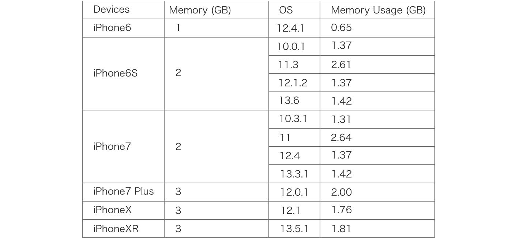
VI: ▲ Figure 1.1 — Ngưỡng Crash. Kết quả đo THỰC TẾ của tác giả trên iOS. / EN: Figure 1.1 — Crash Threshold.
Bảng đo NGUYÊN VĂN / The verbatim measurement table
| Thiết bị | RAM máy (GB) | Phiên bản OS | Mức bộ nhớ khi CRASH (GB) |
|---|---|---|---|
| iPhone 6 | 1 | 12.4.1 | 0.65 |
| iPhone 6S | 2 | 10.0.1 | 1.37 |
| 11.3 | ⚠️ 2.61 | ||
| 12.1.2 | 1.37 | ||
| 13.6 | 1.42 | ||
| iPhone 7 | 2 | 10.3.1 | 1.31 |
| 11 | ⚠️ 2.64 | ||
| 12.4 | 1.37 | ||
| 13.3.1 | 1.42 | ||
| iPhone 7 Plus | 3 | 12.0.1 | 2.00 |
| iPhone X | 3 | 12.1 | 1.76 |
| iPhone XR | 3 | 13.5.1 | 1.81 |
// ▼ List 1.1 — Code kiểm chứng (nguyên văn từ sách)
// Verification code (verbatim from the book)
private List<Texture2D> _textureList = new List<Texture2D>();
...
public void CreateTexture(int size) {
Texture2D texture = new Texture2D(size, size, TextureFormat.RGBA32, false);
_textureList.Add(texture);
}
🔬 Phương pháp đo: "Trong dự án kiểm chứng, Texture2D được sinh ra LÚC RUNTIME, và thời gian tới lúc CRASH được đo. Môi trường kiểm chứng là Unity 2019.4.3 và Xcode 11.6, dùng giá trị ở mục Memory của Xcode Debug Navigator làm tham chiếu."
🎯 KẾT LUẬN VÀNG — con số cần nhớ:
"Dựa trên kết quả kiểm chứng này, KHUYẾN NGHỊ GIỮ bộ nhớ TRONG VÒNG 1.3 GB cho các thiết bị có 2 GB RAM, như iPhone 6S và 7.
💀 Cũng có thể thấy rằng khi hỗ trợ thiết bị có 1 GB RAM như iPhone 6, ràng buộc bộ nhớ KHẮT KHE HƠN RẤT NHIỀU.
🔍 Một đặc điểm khác của iOS 11 là mức dùng bộ nhớ CAO HƠN ĐÁNG KỂ so với iPhone 6, có thể do CƠ CHẾ QUẢN LÝ BỘ NHỚ KHÁC. Khi kiểm chứng, hãy lưu ý rằng những khác biệt do hệ điều hành như vậy là HIẾM."
✅ Ghi chú cập nhật của tác giả: "Môi trường test hơi cũ, nên một số phép đo đã được ĐO LẠI bằng môi trường mới nhất tại thời điểm viết. Chúng tôi dùng Unity 2020.3.25 và 2021.2.0 với Xcode 13.3.1, build trên iPhone XR với OS 14.6 và 15.4.1. Kết quả: KHÔNG có khác biệt đáng kể trong giá trị đo, nên tôi cho rằng dữ liệu VẪN ĐÁNG TIN CẬY."
📋 Cách đo — ba nguyên tắc:
- "Kiểm chứng với thiết bị cấu hình THẤP NHẤT được bảo đảm hoạt động"
- "Vì cơ chế cấp phát bộ nhớ có thể ĐÃ THAY ĐỔI tuỳ phiên bản OS, khuyến nghị chuẩn bị NHIỀU thiết bị với các MAJOR VERSION khác nhau nếu có thể"
- 🚨 "Vì LOGIC ĐO KHÁC NHAU tuỳ công cụ đo, hãy ĐẢM BẢO chỉ dùng MỘT công cụ DUY NHẤT"
🔬 The measurement method: "In the verification project, Texture2D was generated AT RUNTIME, and the time required for a CRASH was measured. The verification environment is Unity 2019.4.3 and Xcode 11.6, using the values in the Memory section of Xcode's Debug Navigator as reference."
🎯 THE GOLDEN CONCLUSION — the number to remember:
"Based on the results of this verification, it is RECOMMENDED to KEEP the memory WITHIN 1.3 GB for devices with 2 GB of onboard memory, such as the iPhone 6S and 7.
💀 It can also be seen that when supporting devices with 1 GB of onboard memory, such as the iPhone 6, the memory usage constraints are MUCH STRICTER.
🔍 Another characteristic of iOS 11 is that its memory usage is SIGNIFICANTLY HIGHER than that of the iPhone 6, possibly due to a DIFFERENT MEMORY MANAGEMENT MECHANISM. When verifying, please note that such differences due to operating systems are RARE."
✅ The authors' update note: "The test environment is a little old, so some of the measurements have been RE-MEASURED using the latest environment at the time of writing. We used Unity 2020.3.25 and 2021.2.0 and Xcode 13.3.1 to build on iPhone XR with OS versions 14.6 and 15.4.1. As a result, there was NO PARTICULAR DIFFERENCE in the measured values, so I think the data is STILL RELIABLE."
📋 How to measure — three rules:
- "Verify with the LOWEST-specification device that is GUARANTEED to work"
- "Since the memory allocation mechanism may have CHANGED depending on the OS version, it is recommended to prepare MULTIPLE devices with DIFFERENT MAJOR VERSIONS if possible"
- 🚨 "Since the MEASUREMENT LOGIC DIFFERS depending on the tool, BE SURE to use ONLY ONE tool"
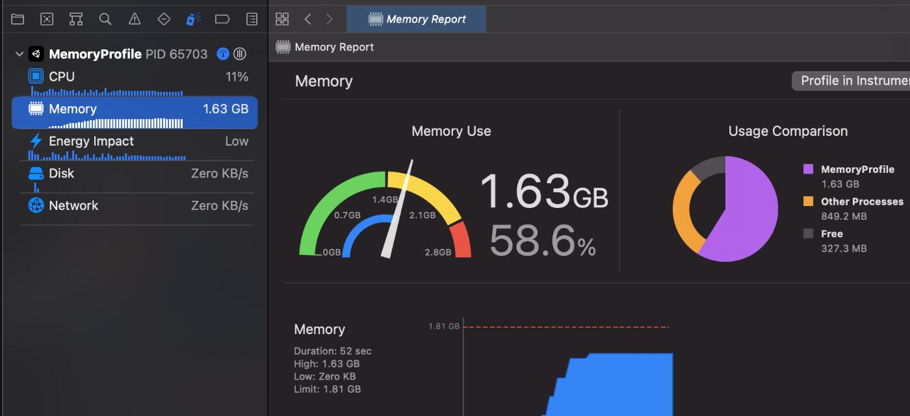
VI: ▲ Figure 1.2 — Xcode Debug Navigator, nơi đọc con số bộ nhớ dùng làm tham chiếu. / EN: Figure 1.2 — Xcode Debug Navigator.
🚨 Vì sao PHẢI dùng công cụ NATIVE để đo bộ nhớ — không phải Unity Profiler
"Chúng tôi KHUYẾN NGHỊ công cụ NATIVE như Xcode và Android Studio để đo bộ nhớ.
💀 Ví dụ, Unity Profiler KHÔNG đo bộ nhớ NATIVE được cấp phát bởi PLUG-IN.
💀 Trong trường hợp build IL2CPP, IL2CPP METADATA (KHOẢNG 100 MB) CŨNG KHÔNG được tính vào phép đo.
✅ Ngược lại, với công cụ native là Xcode, TOÀN BỘ bộ nhớ được cấp phát bởi ứng dụng ĐỀU được đo. Do đó, TỐT HƠN là dùng công cụ NATIVE, thứ đo giá trị CHÍNH XÁC HƠN."
👉 Đây là lời cảnh báo QUAN TRỌNG bổ sung cho Module 1 và Module 3: con số bộ nhớ trong Unity Profiler KHÔNG phải con số làm crash máy bạn. Riêng IL2CPP metadata đã ~100 MB "vô hình".
"We RECOMMEND NATIVE-COMPLIANT tools such as Xcode and Android Studio for memory measurement.
💀 For example, the Unity Profiler does NOT measure NATIVE MEMORY allocated by PLUG-INS.
💀 In the case of IL2CPP builds, IL2CPP METADATA (ABOUT 100 MB) is ALSO NOT included in the measurement.
✅ On the other hand, in the case of the native tool Xcode, ALL memory allocated by the application is measured. Therefore, it is BETTER to use a NATIVE-COMPLIANT tool that measures values MORE ACCURATELY."
👉 An IMPORTANT warning that complements Module 1 and Module 3: the memory number in the Unity Profiler is NOT the number that crashes your device. IL2CPP metadata alone is ~100 MB of "invisible" memory.
1.3. 📱 Quyết định ③ — Thiết bị BẢO ĐẢM hoạt động¶
"Việc quyết định thiết bị BẢO ĐẢM TỐI THIỂU cũng quan trọng, như một chỉ số để xác định TỐI ƯU TỚI ĐÂU thì dừng. Rất khó quyết định ngay nếu chưa có kinh nghiệm, nhưng ĐỪNG quyết định BỘC PHÁT — hãy BẮT ĐẦU bằng việc XÁC ĐỊNH các ứng viên thiết bị cấu hình THẤP.
🔑 Phương pháp tôi khuyến nghị là THAM CHIẾU dữ liệu đo bởi "SoC specs". Cụ thể, TÌM dữ liệu đo bởi các ứng dụng BENCHMARK trên Web.
▶️ Trước hết, bạn cần biết cấu hình của thiết bị bạn dùng làm THAM CHIẾU, rồi CHỌN vài thiết bị có giá trị đo THẤP HƠN một chút.
💪 Sau khi xác định thiết bị, hãy THỰC SỰ cài ứng dụng và kiểm tra hoạt động. ĐỪNG NẢN LÒNG nếu nó chạy chậm. Giờ bạn đang ở VẠCH XUẤT PHÁT, nơi bạn có thể thảo luận về việc CẮT BỎ cái gì."
💡 Công cụ tác giả dùng: "Có vài ứng dụng đo benchmark, nhưng tôi dùng ANTUTU làm chuẩn. Vì có một WEBSITE tổng hợp dữ liệu đo và các TÌNH NGUYỆN VIÊN tích cực báo cáo dữ liệu đo của họ."
"It is ALSO IMPORTANT to decide on the MINIMUM GUARANTEED terminal as an indicator to determine HOW FAR TO GO in performance tuning. It is difficult to decide on a guaranteed device immediately without experience, but do NOT decide on a SPUR-OF-THE-MOMENT basis — rather START by IDENTIFYING CANDIDATES for LOW-SPECIFICATION devices.
🔑 The method I recommend is to REFER to the data measured by "SoC specs". Specifically, LOOK FOR data measured by BENCHMARK measurement applications on the Web.
▶️ First, you need to know the specifications of the device you use as a REFERENCE, and then SELECT a few devices with a SOMEWHAT LOWER measured value.
💪 Once you have identified the devices, ACTUALLY INSTALL the application and check its operation. Do NOT be DISCOURAGED if the operation is slow. You are now at the STARTING LINE where you can discuss WHAT TO ELIMINATE."
💡 The tool the authors use: "There are several benchmark measurement applications, but I use ANTUTU as my benchmark. This is because there is a WEBSITE that compiles measurement data and VOLUNTEERS are ACTIVELY REPORTING their measurement data."
1.4. 🎚️ Quyết định ④ — Đặc tả QUALITY SETTINGS¶
"Với thị trường TRÀN NGẬP thiết bị đủ loại cấu hình, sẽ RẤT KHÓ để phủ nhiều thiết bị bằng MỘT đặc tả duy nhất. Do đó, những năm gần đây, việc đặt NHIỀU MỨC quality settings trong game để BẢO ĐẢM hoạt động ỔN ĐỊNH trên nhiều thiết bị đã trở thành THÔNG LỆ."
Sáu hạng mục có thể phân loại thành High / Medium / Low:
- Screen resolution — độ phân giải màn hình
- Number of objects displayed — số object hiển thị
- Shadows — bóng đổ
- Post-effect function — chức năng hậu xử lý
- Frame rate
- Ability to skip CPU-intensive scripts — khả năng BỎ QUA các script nặng CPU
⚠️ "Tuy nhiên, việc này SẼ LÀM GIẢM chất lượng cảm nhận của dự án, nên hãy bàn bạc với director và CÙNG NHAU khám phá đường ranh nào là CHẤP NHẬN ĐƯỢC cho dự án."
👉 Ánh xạ kỹ thuật: mục ①–④ chính là các setting trong URP Asset ở Module 4 §31.6 (bảng BiRP→URP Low/High) và §22.2 Dynamic Resolution.
"With the market FLOODED with devices of various specifications, it would be DIFFICULT to cover many devices with a SINGLE specification. Therefore, in recent years, it has become COMMON PRACTICE to set SEVERAL QUALITY SETTINGS in the game to GUARANTEE STABLE OPERATION on a variety of devices."
Six items that can be classified into High / Medium / Low:
- Screen resolution
- Number of objects displayed
- Shadows
- Post-effect function
- Frame rate
- Ability to SKIP CPU-INTENSIVE scripts
⚠️ "However, this will REDUCE the QUALITY of the LOOK AND FEEL of the project, so please CONSULT with the director and TOGETHER EXPLORE what line is ACCEPTABLE for the project."
👉 Technical mapping: items ①–④ are exactly the settings in the URP Asset from Module 4 §31.6 (the BiRP→URP Low/High table) and §22.2 Dynamic Resolution.
2. 🛡️ Phòng NGỪA — Hiển thị trạng thái LÊN MÀN HÌNH¶
VI: ▲ Figure 1.3 — Performance Visualization: hiển thị frame rate và bộ nhớ NGAY TRÊN màn hình game. / EN: Figure 1.3 — Performance Visualization.
"Giống như lỗi (defect), suy giảm hiệu năng có thể có ĐỦ LOẠI nguyên nhân TÍCH TỤ THEO THỜI GIAN, làm TĂNG ĐỘ KHÓ của việc điều tra. Ý hay là cài đặt một CƠ CHẾ trong ứng dụng cho phép bạn NHẬN RA vấn đề SỚM NHẤT CÓ THỂ.
✅ Cách ĐƠN GIẢN và HIỆU QUẢ là HIỂN THỊ trạng thái ứng dụng hiện tại LÊN MÀN HÌNH. Khuyến nghị ÍT NHẤT hiển thị thường trực:
- Frame rate hiện tại
- Mức dùng bộ nhớ hiện tại
🔑 Lập luận CỐT LÕI — vì sao phải hiện BỘ NHỚ:
"Trong khi FRAME RATE có thể được PHÁT HIỆN qua TRẢI NGHIỆM của người dùng rằng hiệu năng đang giảm, thì BỘ NHỚ CHỈ có thể phát hiện qua CRASH.
💡 Xác suất phát hiện RÒ RỈ BỘ NHỚ ở giai đoạn SỚM sẽ TĂNG LÊN chỉ nhờ việc HIỂN THỊ nó THƯỜNG TRỰC trên màn hình."
🎨 Cải tiến thêm — mã màu:
"Cách hiển thị này có thể cải tiến để HIỆU QUẢ HƠN. Ví dụ, nếu frame rate mục tiêu là 30 fps: hiện màu XANH LÁ cho 25–30 fps, VÀNG cho 20–25 fps, và ĐỎ cho dưới mức đó. Nhờ vậy bạn có thể NHÌN LƯỚT QUA là biết NGAY ứng dụng có đạt tiêu chí hay không."
"As with defects, performance degradation can have a VARIETY of causes OVER TIME, INCREASING the DIFFICULTY of investigation. It is a good idea to implement a MECHANISM in your application that will allow you to NOTICE the problem AS EARLY AS POSSIBLE.
✅ A SIMPLE and EFFECTIVE way to do this is to DISPLAY the current application status ON THE SCREEN. It is recommended that AT LEAST the following be displayed at all times:
- Current frame rate
- Current memory usage
🔑 The CORE argument — why memory must be shown:
"While FRAME RATE can be DETECTED by the user's EXPERIENCE that performance is declining, MEMORY can ONLY be detected by CRASHES.
💡 The PROBABILITY of detecting MEMORY LEAKS at an EARLY STAGE will INCREASE simply by CONSTANTLY DISPLAYING them on the screen."
🎨 A further improvement — colour coding:
"This display method can be further improved to be more effective. For example, if the target frame rate is 30 fps: turn the display GREEN for 25–30 fps, YELLOW for 20–25 fps, and RED for below that. This way, you can INTUITIVELY see AT A GLANCE whether the application meets the criteria."
// Overlay hiệu năng thường trực — cài đặt theo đúng khuyến nghị của sách
// A permanent performance overlay — implemented exactly as the book recommends
using UnityEngine;
using UnityEngine.Profiling;
public class PerformanceOverlay : MonoBehaviour
{
[SerializeField] int targetFrameRate = 30;
float _deltaTime;
GUIStyle _style;
void Awake()
{
DontDestroyOnLoad(gameObject);
_style = new GUIStyle { fontSize = 28, alignment = TextAnchor.UpperLeft };
}
void Update()
{
// Trung bình trượt để số không nhảy loạn
_deltaTime += (Time.unscaledDeltaTime - _deltaTime) * 0.1f;
}
void OnGUI()
{
float ms = _deltaTime * 1000f;
float fps = 1f / _deltaTime;
// Mã màu theo đúng ngưỡng sách đề xuất: >83% xanh, >66% vàng, còn lại đỏ
float ratio = fps / targetFrameRate;
_style.normal.textColor = ratio >= 0.83f ? Color.green
: ratio >= 0.66f ? Color.yellow
: Color.red;
// Bộ nhớ: dùng Profiler API — LƯU Ý đây KHÔNG bao gồm native plugin
// và IL2CPP metadata (§1.2). Chỉ dùng để phát hiện XU HƯỚNG rò rỉ.
long totalMB = Profiler.GetTotalAllocatedMemoryLong() / (1024 * 1024);
long monoMB = Profiler.GetMonoUsedSizeLong() / (1024 * 1024);
GUI.Label(new Rect(10, 10, 600, 120),
$"{ms:0.0} ms ({fps:0.} FPS)\nTotal: {totalMB} MB Mono: {monoMB} MB",
_style);
}
}
3. 🎯 Hai THÁI ĐỘ bắt buộc khi tuning¶
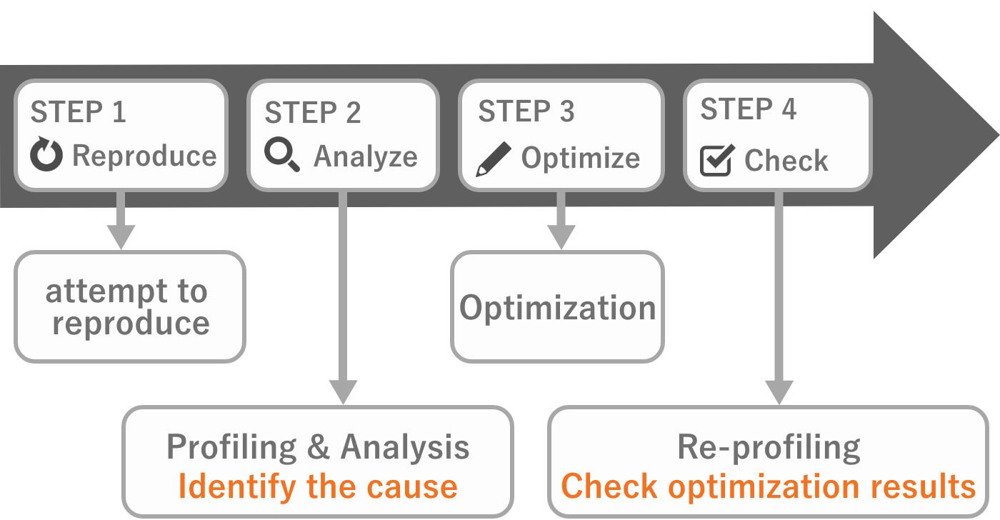
VI: ▲ Figure 1.4 — Chuẩn bị cho Performance Tuning. / EN: Figure 1.4 — Preparation for Performance Tuning.
"Ví dụ, giả sử bạn có ứng dụng với frame rate CHẬM. Rõ ràng là có vài model 'giàu chi tiết' đang hiển thị. Mọi người xung quanh đang nói rằng CHẮC CHẮN những model này là nguyên nhân. Ta cần NHÌN KỸ VÀO BẰNG CHỨNG để xem điều đó có ĐÚNG hay không."
🥇 Thái độ ① — ĐO và XÁC ĐỊNH nguyên nhân. ĐỪNG ĐOÁN.
"The first is to MEASURE and IDENTIFY the cause. DO NOT GUESS."
🥈 Thái độ ② — SAU khi sửa, BẮT BUỘC SO SÁNH kết quả.
"Bạn có thể muốn so sánh profile TRƯỚC và SAU. Mấu chốt là KIỂM TRA sự suy giảm hiệu năng TRÊN TOÀN BỘ hệ thống, KHÔNG CHỈ ở phần vừa sửa.
💀 Phần ĐÁNG SỢ của performance tuning là: trong những trường hợp HIẾM, phần được sửa thì NHANH HƠN, nhưng TẢI LẠI TĂNG ở các phần KHÁC của hệ thống, và hiệu năng TỔNG THỂ bị SUY GIẢM. Đó là ĐƯỜNG CÙNG."
🎓 "XÁC ĐỊNH nguyên nhân và XÁC NHẬN rằng hệ thống ĐÃ nhanh hơn. Đây là THÁI ĐỘ QUAN TRỌNG cho performance tuning."
"For example, let's say you have an application with a SLOW frame rate. Obviously, several RICH MODELS are displayed. People around you are saying that these models MUST BE the cause. We need to LOOK CAREFULLY AT THE EVIDENCE to see if this is REALLY the case."
🥇 Attitude ① — MEASURE and IDENTIFY the cause. DO NOT GUESS.
"The first is to MEASURE and IDENTIFY the cause. Do NOT GUESS."
🥈 Attitude ② — After making corrections, BE SURE to COMPARE the results.
"You may want to compare the before and after profiles. The point is to CHECK for performance degradation ACROSS THE BOARD, NOT JUST in the modified area.
💀 The SCARY PART of performance tuning is that in RARE CASES, the modified part is FASTER, but the load INCREASES in OTHER PARTS of the system, and the OVERALL performance is DEGRADED. This is the END OF THE LINE."
🎓 "To IDENTIFY the cause of the problem and CONFIRM that the system HAS BECOME FASTER. This is an IMPORTANT ATTITUDE for performance tuning."
4. 🗂️ Ba LOẠI suy giảm hiệu năng¶
VI: ▲ Figure 1.5 — Nguyên nhân suy giảm hiệu năng: Crash · Screen dropout (rớt khung hình) · Long loading (load lâu). / EN: Figure 1.5 — Causes of performance degradation.
"'Suy giảm hiệu năng' có thể chỉ những thứ KHÁC NHAU. Trong tài liệu này, ta định nghĩa BA loại rộng."
💔 ① CRASH — "có thể phân thành HAI loại chính: 'TRÀN BỘ NHỚ (memory overflow)' hoặc 'LỖI THỰC THI CHƯƠNG TRÌNH'. Loại sau KHÔNG thuộc phạm vi performance tuning, nên chi tiết sẽ không được đề cập."
🔥 ② SCREEN DROPOUT và ⏱️ ③ LONG LOADING — "'THỜI GIAN XỬ LÝ CPU và GPU' có lẽ chiếm PHẦN LỚN các trường hợp rớt khung hình và load lâu."
🧭 Do đó tài liệu tập trung vào HAI trục: MEMORY và PROCESSING TIME.
"Performance degradation may refer to DIFFERENT THINGS. In this document, we define THREE BROAD CATEGORIES."
💔 ① CRASH — "can be classified into TWO MAIN TYPES: 'MEMORY OVERFLOW' or 'PROGRAM EXECUTION ERROR'. The latter is NOT the domain of performance tuning, so the specifics will not be covered."
🔥 ② SCREEN DROPOUT and ⏱️ ③ LONG LOADING — "'CPU and GPU PROCESSING TIME' will probably account for the MAJORITY of screen dropouts and long loading times."
🧭 So the document focuses on TWO axes: MEMORY and PROCESSING TIME.
5. 💧 Trục MEMORY — Cô lập nguyên nhân TRÀN bộ nhớ¶
5.1. Rò rỉ bộ nhớ — Quy trình phát hiện 3 bước¶
"Một nguyên nhân có thể của tràn bộ nhớ là MEMORY LEAK. Để kiểm tra, hãy xem mức dùng bộ nhớ có TĂNG DẦN theo các lần CHUYỂN CẢNH hay không.
🔑 "Chuyển cảnh" ở đây KHÔNG CHỈ là chuyển màn hình, mà còn là những THAY ĐỔI MÀN HÌNH LỚN. Ví dụ: từ màn hình TITLE sang OUT-GAME, từ OUT-GAME sang IN-GAME, v.v."
▶️ Ba bước đo:
- GHI LẠI mức dùng bộ nhớ ở một cảnh nhất định
- CHUYỂN sang cảnh KHÁC
- LẶP LẠI bước "1" tới "2" KHOẢNG 3 ĐẾN 5 LẦN
🚨 "Nếu kết quả đo cho thấy mức dùng bộ nhớ TĂNG RÒNG (net increase), thì CHẮC CHẮN có thứ gì đó đang RÒ RỈ. Cái này có thể gọi là một LỖI VÔ HÌNH. Trước hết, hãy LOẠI BỎ rò rỉ."
💡 "Cũng nên CHÈN vài lần chuyển màn hình TRƯỚC khi thực hiện bước '2'. Bởi vì có khả năng CHỈ tài nguyên được load ở một màn hình CỤ THỂ mới bị rò rỉ NGOẠI LỆ."
"One possible cause of memory overflow is a MEMORY LEAK. To check for this, let's see if memory usage GRADUALLY INCREASES with SCENE TRANSITIONS.
🔑 Scene transitions here are NOT JUST screen transitions, but ALSO LARGE SCREEN CHANGES. For example, from the TITLE screen to OUT-GAME, from OUT-GAME to IN-GAME, etc."
▶️ The three measurement steps:
- NOTE the memory usage in a CERTAIN SCENE
- TRANSITION to a DIFFERENT scene
- REPEAT "1" to "2" ABOUT 3 TO 5 TIMES
🚨 "If the measurement results show a NET INCREASE in memory usage, something is DEFINITELY LEAKING. This can be called an INVISIBLE DEFECT. First, let's ELIMINATE the leak."
💡 "It is also a good idea to SANDWICH a few screen transitions BEFORE making the '2' transition. This is because it is possible that ONLY the resources loaded on a PARTICULAR screen are EXCEPTIONALLY leaked."
🔁 Vì sao phải LẶP LẠI — kinh nghiệm thực chiến của tác giả
"Đây là kinh nghiệm của tác giả, nhưng đã có trường hợp một số tài nguyên KHÔNG được giải phóng do vấn đề TIMING sau khi giải phóng tài nguyên (sau
UnloadUnusedAssets). Những tài nguyên chưa được giải phóng này SẼ được giải phóng khi chuyển sang cảnh TIẾP THEO.💀 Ngược lại, mức tăng bộ nhớ DẦN DẦN qua các lần chuyển cảnh LẶP LẠI cuối cùng SẼ GÂY CRASH.
✅ Để TÁCH BIỆT vấn đề TRƯỚC với vấn đề SAU, tài liệu này khuyến nghị LẶP LẠI việc chuyển cảnh NHIỀU LẦN trong lúc đo bộ nhớ.
🔍 Nhân tiện, nếu có vấn đề kiểu đầu, có lẽ MỘT OBJECT NÀO ĐÓ VẪN ĐANG GIỮ THAM CHIẾU tại thời điểm giải phóng tài nguyên và sau đó mới được giải phóng. KHÔNG chí tử, nhưng NÊN điều tra nguyên nhân và giải quyết."
👉 Liên hệ Module 3 về Resources.UnloadUnusedAssets và vòng đời tham chiếu Addressables.
"This is the author's experience, but there were cases where SOME RESOURCES were NOT RELEASED due to TIMING ISSUES after resource release (after
UnloadUnusedAssets). These unreleased resources ARE released when transitioning to the NEXT scene.💀 In contrast, a GRADUAL INCREASE in memory usage with REPEATED transitions will EVENTUALLY CAUSE A CRASH.
✅ In order to SEPARATE the former problem from the latter, this document recommends REPEATING transitions SEVERAL TIMES during memory measurement.
🔍 Incidentally, if there is a problem like the former, SOME OBJECT is probably STILL HOLDING A REFERENCE at the time of resource release and is subsequently released. It is NOT FATAL, but it is a good idea to investigate the cause and resolve it."
👉 Connects to Module 3 on Resources.UnloadUnusedAssets and the Addressables reference lifecycle.
5.2. 🔧 Ba công cụ điều tra rò rỉ — Chọn cái nào?¶
| Công cụ | Cài đặt | Đặc điểm / Characteristics | Hạn chế |
|---|---|---|---|
| Profiler (Memory) | ✅ Có SẴN trong Unity Editor ⇒ "dễ dàng thực hiện đo" | 🔑 "Về cơ bản, bạn nên snapshot bộ nhớ với Detailed và Gather object references được BẬT rồi điều tra" |
⚠️ "KHÔNG cho phép SO SÁNH snapshot của dữ liệu đo" |
| Memory Profiler | Package Manager | "Hiển thị nội dung bộ nhớ dạng TREE MAP đồ hoạ. Được Unity HỖ TRỢ CHÍNH THỨC và vẫn đang cập nhật thường xuyên" | 💡 "Từ v0.5, cách theo dõi quan hệ THAM CHIẾU đã được CẢI THIỆN RẤT NHIỀU ⇒ khuyến nghị dùng bản MỚI NHẤT" |
| Heap Explorer | Package Manager | "Công cụ do CÁ NHÂN phát triển, nhưng RẤT DỄ DÙNG và NHẸ. Có thể theo dõi tham chiếu ở dạng DANH SÁCH" | ✅ "Là giải pháp THAY THẾ TỐT khi Memory Profiler v0.5 KHÔNG khả dụng" |
5.3. ✂️ Giảm bộ nhớ — Nguyên tắc "CẮT TỪ CHỖ TO"¶
"Chìa khoá để giảm bộ nhớ là CẮT TỪ NHỮNG VÙNG LỚN.
🧮 Bởi vì 1.000 mảnh 1 KB thì chỉ giảm được 1 MB. Nhưng NẾU bạn nén một texture 10 MB xuống 2 MB, bạn giảm được 8 MB.
💰 Xét hiệu quả chi phí, hãy Ý THỨC rằng bạn nên BẮT ĐẦU từ những hạng mục LỚN NHẤT và giảm chúng TRƯỚC."
"The KEY to reducing memory is to CUT FROM LARGE AREAS.
🧮 Because 1,000 pieces of 1 KB will only result in a 1 MB reduction. However, if you compress a 10 MB texture to 2 MB, you can reduce it by 8 MB.
💰 Considering cost-effectiveness, be AWARE that you should START with the LARGEST items and reduce them FIRST."
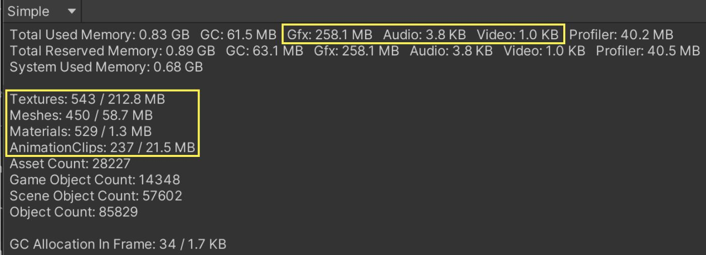
VI: ▲ Figure 1.6 — Các hạng mục liên quan ASSETS trong Simple View của Profiler (vùng khoanh chữ nhật). / EN: Figure 1.6 — Assets-related items.
Năm nơi cần soi khi giảm bộ nhớ / The five places to look when reducing memory
| # | Hạng mục | Nội dung nguyên văn |
|---|---|---|
| ① | Assets | "Nếu Simple View có NHIỀU Assets, có thể do asset KHÔNG CẦN THIẾT hoặc rò rỉ bộ nhớ." → 3 việc phải điều tra (bảng dưới) |
| ② | GC (Mono) | "Nếu có NHIỀU GC (Mono) trong Simple View, rất có thể một GC.Alloc LỚN đang xảy ra MỘT LẦN. Hoặc bộ nhớ có thể bị PHÂN MẢNH do GC.Alloc xảy ra MỖI FRAME. Những điều này có thể gây MỞ RỘNG THÊM vùng managed heap. Trong trường hợp này, bạn nên giảm GC.Alloc một cách ĐỀU ĐẶN." 📌 Lưu ý phiên bản: "GC" hiện là "GC" ở 2020.2 trở lên, và "Mono" ở 2020.1 trở xuống. Cả hai đều chỉ dung lượng managed heap bị chiếm.** |
| ③ | Other | "Kiểm tra các mục ĐÁNG NGỜ trong Detailed View." 💡 "Theo KINH NGHIỆM của tôi, SerializedFile và PersistentManager.Remapper khá PHÌNH TO. Nếu có thể SO SÁNH giá trị giữa NHIỀU DỰ ÁN, hãy làm điều đó một lần. So sánh có thể LỘ RA các giá trị NGOẠI LAI (outlier).** |
| ④ | Plug-ins | 🚨 "Unity CHỈ có thể đo bộ nhớ do Unity quản lý. Nói cách khác, lượng bộ nhớ được cấp phát bởi PLUG-IN KHÔNG được đo. Hãy kiểm tra xem sản phẩm ThirdParty có đang cấp phát bộ nhớ DƯ THỪA hay không — dùng công cụ đo NATIVE (Instruments trong Xcode)." |
| ⑤ | Xem lại ĐẶC TẢ (cuối cùng) | "Đây là bước CUỐI CÙNG. Nếu KHÔNG CÒN gì để cắt, ta KHÔNG CÒN LỰA CHỌN nào ngoài việc xem xét ĐẶC TẢ." → 3 ví dụ (bảng dưới) |
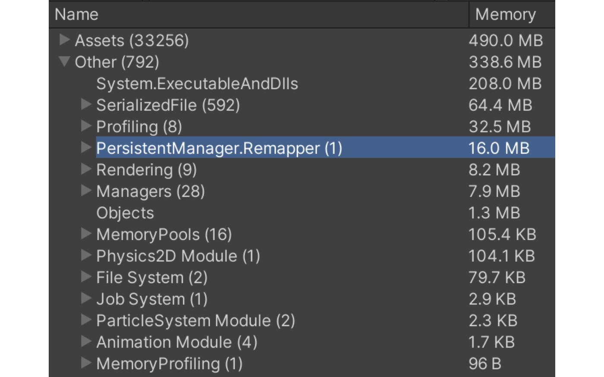
VI: ▲ Figure 1.7 — Mục "Other" trong Detailed View của Profiler. / EN: Figure 1.7 — Other items.
Ba việc phải điều tra trong hạng mục ASSETS
| Việc | Nguyên văn |
|---|---|
| 🔍 Unnecessary Assets Investigation | "Asset không cần thiết là tài nguyên KHÔNG CẦN CHÚT NÀO cho cảnh hiện tại. Ví dụ, nhạc nền CHỈ dùng ở màn hình title lại đang NẰM TRONG BỘ NHỚ NGAY CẢ KHI ở out-game. Trước hết, hãy đảm bảo CHỈ những asset CẦN THIẾT cho cảnh hiện tại mới được dùng." |
| 👯 Duplicate Asset Investigation | "Điều này thường xảy ra khi hỗ trợ asset bundle. CÙNG một asset bị đưa vào NHIỀU asset bundle do TÁCH PHỤ THUỘC asset bundle KÉM. ⚠️ Tuy nhiên, TÁCH QUÁ NHIỀU phụ thuộc lại dẫn tới TĂNG số file tải về và chi phí triển khai file. Có thể cần phát triển CẢM GIÁC CÂN BẰNG trong lúc đo khu vực này." |
| 📋 Check the Regulations | "Xem lại từng mục xem QUY ĐỊNH có được tuân thủ hay không. Nếu KHÔNG CÓ quy định, hãy kiểm tra xem có phải bạn đang KHÔNG ước lượng bộ nhớ đúng cách hay không." Với texture: Kích thước có phù hợp? · Setting NÉN có phù hợp? · Setting MipMap có phù hợp? · Setting Read/Write có phù hợp? |
Ba ví dụ "xem lại ĐẶC TẢ" — biện pháp CUỐI CÙNG
| Ví dụ | Nguyên văn |
|---|---|
| Đổi TỶ LỆ NÉN texture | "Tăng tỷ lệ nén MỘT BẬC cho MỘT PHẦN texture" |
| Đổi TIMING load/unload | "GIẢI PHÓNG object trong bộ nhớ THƯỜNG TRÚ và load chúng MỖI LẦN cần" |
| Đổi ĐẶC TẢ load | "GIẢM số biến thể nhân vật cần load ingame ĐI MỘT" |
⚠️ Vì sao 'xem lại đặc tả' là biện pháp CUỐI CÙNG
VI: "TẤT CẢ những thay đổi này có TÁC ĐỘNG LỚN và có thể ẢNH HƯỞNG CĂN BẢN tới sự VUI của game. Do đó, việc cân nhắc đặc tả là BIỆN PHÁP CUỐI CÙNG. Hãy ĐẢM BẢO ƯỚC LƯỢNG và ĐO bộ nhớ TỪ SỚM để NGĂN điều này xảy ra."
EN: "ALL of these changes have a LARGE IMPACT and may FUNDAMENTALLY AFFECT the FUN of the game. Therefore, specification considerations are a LAST RESORT. Make sure to ESTIMATE and MEASURE memory EARLY ON to PREVENT this from happening."
6. ⏱️ Trục PROCESSING TIME — Spike vs Steady¶
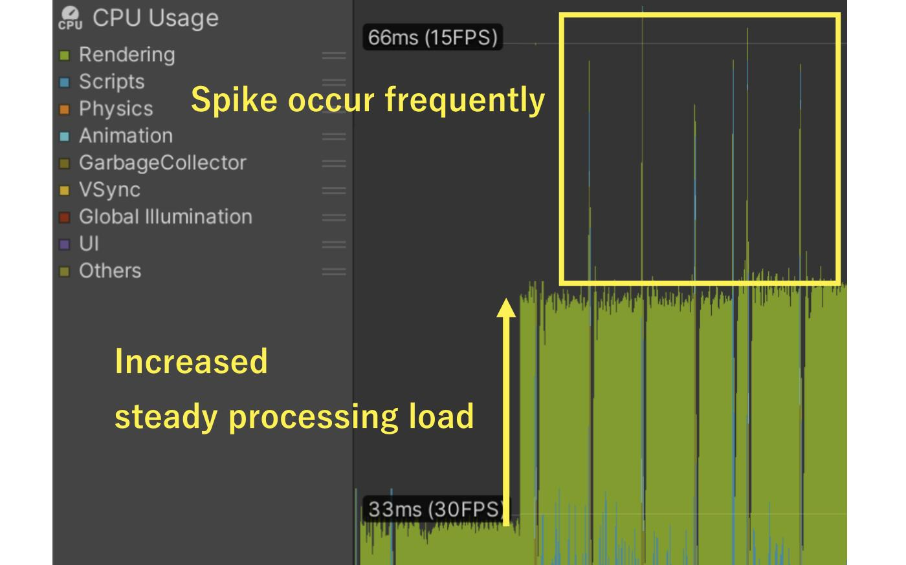
VI: ▲ Figure 1.8 — Spike và tải xử lý ỔN ĐỊNH. Dữ liệu đo cho thấy tải steady-state TĂNG ĐỘT NGỘT (mũi tên vàng, từ 33 ms/30 FPS lên cao hơn) cùng với các SPIKE ĐỊNH KỲ (khung vàng, vượt 66 ms/15 FPS). / EN: Figure 1.8 — Spikes and steady processing load.
"Cách xử lý sự cố khung hình KHÁC NHAU tuỳ theo đó là sự cố 'TỨC THỜI (instantaneous)' hay 'ỔN ĐỊNH (steady)'.
📌 Sự chậm xử lý TỨC THỜI được đo dưới dạng một TẢI XỬ LÝ NHỌN NHƯ KIM. Chúng cũng được gọi là SPIKE vì hình dáng đó."
🔍 "Trong ảnh trên, dữ liệu đo cho thấy tải steady-state TĂNG ĐỘT NGỘT, CŨNG NHƯ các spike ĐỊNH KỲ. CẢ HAI sự kiện đều ĐÒI HỎI performance tuning."
"The way to deal with screen processing failures VARIES depending on whether they are 'INSTANTANEOUS' or 'STEADY' processing failures.
📌 Instantaneous processing slowdowns are measured as a processing load that is SHARP LIKE A NEEDLE. They are also called SPIKES because of their appearance."
🔍 "In the image above, the measured data shows a SUDDEN INCREASE in steady-state load, AS WELL AS PERIODIC SPIKES. BOTH events will REQUIRE performance tuning."
6.1. ⚡ Điều tra tải TỨC THỜI (Spike)¶
🔧 Công cụ: "Dùng Profiler (CPU) để điều tra nguyên nhân. Trước hết, CÔ LẬP xem nguyên nhân có PHẢI do GC hay không. Deep Profile KHÔNG CẦN THIẾT để cô lập nguyên nhân, nhưng SẼ CẦN để GIẢI QUYẾT vấn đề."
🗑️ Trường hợp ① — Spike do GC
"Nếu GC đang xảy ra,
GC.Allocnên được GIẢM. Deep Profile để xem TIẾN TRÌNH NÀO đang cấp phát BAO NHIÊU. Những vùng NÊN giảm TRƯỚC là những vùng có HIỆU QUẢ CHI PHÍ. Khuyến nghị tập trung vào:
- Vùng cấp phát MỖI FRAME
- Vùng có SỐ LƯỢNG LỚN cấp phát đang xảy ra
⚖️ Cấp phát càng ÍT càng tốt, NHƯNG điều đó KHÔNG có nghĩa là cấp phát phải BẰNG KHÔNG. Ví dụ, KHÔNG có cách nào ngăn được cấp phát xảy ra trong quá trình
Instantiate. Trong những trường hợp như vậy, POOLING — dùng lại object thay vì sinh object mỗi lần — là HIỆU QUẢ."
🐘 Trường hợp ② — Spike do XỬ LÝ NẶNG
"Nếu GC KHÔNG phải nguyên nhân, thì MỘT LOẠI XỬ LÝ NẶNG nào đó đang được thực hiện TỨC THỜI. Lại dùng Deep Profile để điều tra cái gì nặng và nặng bao nhiêu."
Ba xử lý nặng TẠM THỜI phổ biến NHẤT:
- Xử lý
Instantiate- Chuyển đổi ACTIVE của SỐ LƯỢNG LỚN object, hoặc object trong PHÂN CẤP SÂU
- Xử lý CHỤP MÀN HÌNH (screen capture)
🤝 Vì đây là phần PHỤ THUỘC NHIỀU vào code của dự án, KHÔNG có giải pháp CHUNG CHO TẤT CẢ. Nếu phép đo thực tế lộ ra nguyên nhân, hãy CHIA SẺ kết quả đo với thành viên dự án và THẢO LUẬN cách cải thiện."
🔧 The tool: "Use Profiler (CPU) to investigate the cause. First, ISOLATE whether the cause is due to GC or not. Deep Profile is NOT NECESSARY to isolate the cause itself, but it WILL BE NEEDED to SOLVE the problem."
🗑️ Case ① — Spikes caused by GC
"If GC is occurring,
GC.Allocshould be REDUCED. Deep Profile to see WHICH PROCESSES are allocating HOW MUCH. The first areas that should be reduced are those that are COST-EFFECTIVE. It is recommended to focus on:
- Areas allocated EVERY FRAME
- Areas where a LARGE NUMBER of allocations are occurring
⚖️ The FEWER the allocations, the BETTER, but this does NOT mean that allocations should be ZERO. For example, there is NO WAY to prevent allocations that occur during the
Instantiateprocess. In such cases, POOLING — where objects are REUSED instead of generated each time — is EFFECTIVE."
🐘 Case ② — Spikes due to HEAVY PROCESSING
"If GC is NOT the cause, SOME KIND OF HEAVY PROCESSING is being performed INSTANTANEOUSLY. Again, use Deep Profile to investigate what and how much processing is heavy."
The three MOST COMMON temporary heavy processes:
Instantiateprocessing- ACTIVE SWITCHING of a LARGE NUMBER of objects, or objects in a DEEP HIERARCHY
- SCREEN CAPTURE processing
🤝 As this is a part that is HIGHLY DEPENDENT on the project code, there is NO ONE-SIZE-FITS-ALL solution. If the actual measurement reveals the cause, SHARE the measurement results with the project members and DISCUSS how to improve it."
6.2. 📈 Điều tra tải ỔN ĐỊNH (Steady-state)¶
"Khi cải thiện tải xử lý ổn định, điều quan trọng là GIẢM xử lý TRONG MỘT FRAME. Xử lý trong một frame có thể chia thô thành XỬ LÝ CPU và XỬ LÝ GPU. Trước hết, nên CÔ LẬP xem CÁI NÀO trong hai cái là nút thắt, hay cả hai có tải NGANG NHAU."
🩺 Cách CÔ LẬP DỄ NHẤT — hai dấu hiệu GPU-bound:
"Nếu BẤT KỲ điều nào sau đây đúng với bạn, KHẢ NĂNG CAO bạn đang GPU-BOUND:
- Tải xử lý CẢI THIỆN ĐÁNG KỂ khi HẠ ĐỘ PHÂN GIẢI màn hình
- Khi đo bằng Profiler, có
Gfx.WaitForPresent👉 Ngược lại, nếu KHÔNG có những dấu hiệu này, có khả năng CPU-bound."
👉 Khớp CHÍNH XÁC với quy trình chẩn đoán ở Module 1 §3 — Gfx.WaitForPresent là dấu hiệu kinh điển.
"When improving the steady processing load, it is important to REDUCE the processing WITHIN A SINGLE FRAME. The processing performed within a single frame can be ROUGHLY DIVIDED into CPU processing and GPU processing. First, it is a good idea to ISOLATE WHICH of these two is the bottleneck, or whether they have the SAME processing load."
🩺 The EASIEST way to isolate — two GPU-bound signs:
"If ANY of the following apply to you, there is a GOOD CHANCE that you are GPU-BOUND:
- DRAMATIC improvement in processing load when the SCREEN RESOLUTION is LOWERED
- When measured with the Profiler,
Gfx.WaitForPresentis present👉 On the other hand, if these are NOT present, there is a possibility of CPU-bound."
👉 Matches the diagnostic workflow in Module 1 §3 EXACTLY — Gfx.WaitForPresent is the classic sign.
🖥️ CPU Bound — quy trình
"CPU bound dùng CPU (Profiler). Nó điều tra bằng Deep Profile và kiểm tra xem một TẢI XỬ LÝ LỚN có đang đè lên một THUẬT TOÁN CỤ THỂ hay không.
⚖️ Nếu KHÔNG có tải xử lý lớn nào, nghĩa là hệ thống NẶNG ĐỀU — vậy hãy cải thiện nó một cách ĐỀU ĐẶN.
🔙 Nếu bạn KHÔNG THỂ đạt giá trị giảm mục tiêu KỂ CẢ sau khi cải thiện đều đặn, bạn có thể muốn QUAY LẠI mục "1.1.4 Quyết định đặc tả quality setting" và XEM XÉT LẠI."
"CPU bound uses CPU (Profiler). It investigates using Deep Profile and checks whether a LARGE processing load is applied to a SPECIFIC ALGORITHM.
⚖️ If there is NO large processing load, it means that the system is EQUALLY HEAVY, so steadily improve it.
🔙 If you CANNOT reach the target reduction value EVEN AFTER making steady improvements, you may want to GO BACK to "1.1.4 Determine quality setting specifications" and RECONSIDER."
🎨 GPU Bound — bốn câu hỏi theo THỨ TỰ
| # | Câu hỏi | Nội dung nguyên văn |
|---|---|---|
| ① | Độ phân giải có PHÙ HỢP? | 🥇 "Trong các trường hợp GPU-bound, ĐỘ PHÂN GIẢI có tác động ĐÁNG KỂ tới tải xử lý GPU. Do đó, nếu độ phân giải KHÔNG được đặt phù hợp, ƯU TIÊN SỐ MỘT là đặt nó về mức phù hợp." 🔍 Cách kiểm tra: "nhìn độ phân giải của RENDER TARGET đang được xử lý trong Frame Debugger". Hai điều cần chủ ý: "CHỈ phần tử UI mới được render ở độ phân giải ĐẦY ĐỦ của thiết bị" · "Texture tạm cho post-effect có độ phân giải CAO"* |
| ② | Có object KHÔNG CẦN THIẾT? | "Kiểm tra Frame Debugger xem có bản vẽ nào KHÔNG CẦN. Ví dụ, có thể có một CAMERA THỪA đang active và vẽ các object KHÔNG LIÊN QUAN ở HẬU TRƯỜNG. Nếu có nhiều trường hợp bản vẽ TRƯỚC bị LÃNG PHÍ do bị vật khác che, Occlusion Culling có thể là lựa chọn tốt." ⚠️ Đánh đổi: **"occlusion culling ĐÒI HỎI chuẩn bị dữ liệu TRƯỚC và mức dùng bộ nhớ SẼ TĂNG do dữ liệu được nạp vào bộ nhớ. Đây là THÔNG LỆ PHỔ BIẾN: dựng sẵn thông tin trong bộ nhớ để cải thiện hiệu năng. Vì bộ nhớ và hiệu năng thường TỶ LỆ NGHỊCH, nên Ý THỨC về bộ nhớ khi áp dụng bất cứ thứ gì." |
| ③ | BATCHING có phù hợp? | "Batching là quá trình vẽ TẤT CẢ object CÙNG MỘT LÚC. Batching HIỆU QUẢ cho GPU-bound vì nó CẢI THIỆN hiệu suất vẽ. Ví dụ, Static Batching có thể dùng để GỘP mesh của nhiều object BẤT ĐỘNG." → Static Batching · Dynamic Batching · GPU Instancing · SRP Batcher (chi tiết ở Module 4 §10) |
| ④ | Soi tải TỪNG CÁI MỘT | "Nếu tải xử lý VẪN cao, cách duy nhất là soi TỪNG CÁI. Có thể object có QUÁ NHIỀU vertex hoặc xử lý SHADER đang gây vấn đề. Để cô lập, hãy BẬT/TẮT trạng thái active của TỪNG object và xem tải xử lý thay đổi thế nào — thử tắt BACKGROUND xem sao, tắt NHÂN VẬT xem sao, v.v." → rồi xét: "Có QUÁ NHIỀU object để vẽ? ⇒ có thể vẽ tất cả cùng lúc không" · "Số vertex MỖI object có quá lớn? ⇒ cân nhắc giảm và LOD" · "Tải có cải thiện khi THAY bằng Shader ĐƠN GIẢN? ⇒ xem lại xử lý Shader" |
7. 🎓 Kết luận Chương 1 — Bảy điều phải nhớ¶
🔵 TRƯỚC khi tuning:
- Quyết định "CHỈ SỐ", "THIẾT BỊ BẢO ĐẢM", và "ĐẶC TẢ QUALITY SETTING".
- KIỂM CHỨNG và chốt các chỉ số TRƯỚC giai đoạn mass production.
- Tạo CƠ CHẾ để DỄ DÀNG nhận ra suy giảm hiệu năng.
🟢 TRONG KHI tuning:
- CÔ LẬP nguyên nhân suy giảm hiệu năng và áp dụng biện pháp PHÙ HỢP.
- BẮT BUỘC tuân theo trình tự: "ĐO" → "CẢI THIỆN" → "ĐO LẠI (kiểm tra kết quả)".
🎯 Lời kết của tác giả:
"Như đã giải thích tới đây, điều QUAN TRỌNG là ĐO và CÔ LẬP nguyên nhân của performance tuning.
💪 NGAY CẢ KHI xảy ra một trường hợp KHÔNG được mô tả trong tài liệu này, nó SẼ KHÔNG phải vấn đề LỚN NẾU các NGUYÊN TẮC CƠ BẢN được tuân thủ."
🔵 BEFORE tuning:
- Decide on "INDICATORS", "GUARANTEED DEVICES", and "QUALITY SETTING SPECIFICATIONS".
- VERIFY and determine the indicators BEFORE mass production.
- Create a MECHANISM to EASILY NOTICE performance degradation.
🟢 DURING tuning:
- ISOLATE the cause of performance degradation and take APPROPRIATE MEASURES.
- BE SURE to follow the sequence of "MEASUREMENT" → "IMPROVEMENT" → "RE-MEASUREMENT (checking the results)".
🎯 The authors' closing words:
"As explained up to this point, it is IMPORTANT to MEASURE and ISOLATE the cause of performance tuning.
💪 EVEN IF a case NOT DESCRIBED in this document occurs, it will NOT be a MAJOR PROBLEM IF the FUNDAMENTALS are followed."
PHẦN B — NỀN TẢNG PHẦN CỨNG (Chương 2)¶
🎯 Vì sao Tech Lead cần chương này: ba Module trước nói về Unity. Chương này nói về thứ CHẠY Unity — SoC, CPU, GPU, bộ nhớ, lưu trữ. Đây là tầng kiến thức KHÔNG có trong tài liệu chính thức của Unity, nhưng lại quyết định vì sao các tối ưu ở Module 1–4 lại hiệu quả.
"Phần cứng máy tính gồm NĂM thiết bị chính: thiết bị NHẬP, thiết bị XUẤT, thiết bị LƯU TRỮ, thiết bị TÍNH TOÁN, và thiết bị ĐIỀU KHIỂN. Phần này tóm tắt kiến thức CƠ BẢN về những thiết bị này — thứ QUAN TRỌNG cho performance tuning."
🎯 Why a Tech Lead needs this chapter: the previous three modules are about Unity. This chapter is about what RUNS Unity — the SoC, CPU, GPU, memory, storage. This is a layer of knowledge absent from Unity's own documentation, yet it determines why the optimizations in Modules 1–4 work at all.
"Computer hardware consists of FIVE main devices: INPUT devices, OUTPUT devices, STORAGE devices, COMPUTING devices, and CONTROL devices. This section summarizes the BASIC KNOWLEDGE of these hardware devices that is IMPORTANT for performance tuning."
8. 📱 SoC — Vì sao mobile KHÁC desktop về BẢN CHẤT¶
VI: ▲ Figure 2.1 — SoC. / EN: Figure 2.1 — SoC.
"Máy tính gồm nhiều thiết bị khác nhau. Các thiết bị điển hình gồm CPU để điều khiển và tính toán, GPU để tính toán đồ hoạ, và DSP để xử lý dữ liệu số của âm thanh và video.
🖥️ Trong hầu hết PC để bàn, những thứ này ĐỘC LẬP dưới dạng các mạch tích hợp RIÊNG BIỆT, được ghép lại để tạo thành máy tính.
📱 Ngược lại, trong smartphone, những thiết bị này được cài đặt TRÊN MỘT CHIP DUY NHẤT để GIẢM KÍCH THƯỚC và TIÊU THỤ ĐIỆN. Cái này gọi là SYSTEM-ON-A-CHIP, hay SoC."
🔑 Hệ quả trực tiếp tới tối ưu: vì CPU và GPU nằm CHUNG một chip và CHIA SẺ bộ nhớ, mọi thứ bạn làm với CPU đều lấy đi băng thông của GPU và ngược lại — điều KHÔNG đúng trên PC. Đây là nền tảng vật lý của cảnh báo băng thông bộ nhớ ở Module 4 §7.
"A computer is composed of various devices. Typical devices include CPUs for control and computation, GPUs for graphics computation, and DSPs for processing audio and video digital data.
🖥️ In most desktop PCs, these are INDEPENDENT as SEPARATE INTEGRATED CIRCUITS, which are combined to form the computer.
📱 In smartphones, on the other hand, these devices are implemented ON A SINGLE CHIP to REDUCE SIZE and POWER CONSUMPTION. This is called a SYSTEM-ON-A-CHIP, or SoC."
🔑 The direct consequence for optimization: because CPU and GPU sit on the SAME chip and SHARE memory, everything you do on the CPU steals bandwidth from the GPU and vice versa — which is NOT true on PC. This is the physical basis for the memory bandwidth warnings in Module 4 §7.
8.1. 🏭 Bốn dòng SoC Android — và vì sao Android hay lỗi theo máy¶
▼ Table 2.1 — Major SoCs in Android (nguyên văn)
| Dòng / Series | Nhà sản xuất / Manufacturer | Xu hướng thiết bị / Trends in devices equipped with |
|---|---|---|
| Snapdragon | Qualcomm Inc. | "Dùng trong PHẠM VI RỘNG các thiết bị" |
| Helio | MediaTek | "Dùng trong MỘT SỐ máy GIÁ RẺ" |
| Kirin | HiSilicon | "Thiết bị Huawei" |
| Exynos | Samsung | "Máy của Samsung" |
"Ví dụ, iPhone dùng SoC gọi là DÒNG A do Apple thiết kế. Dòng này được đặt tên bằng cách kết hợp chữ 'A' và một CON SỐ, như A15, với con số CÀNG LỚN khi phiên bản được nâng cấp.
🤖 Ngược lại, nhiều thiết bị Android dùng SoC gọi là SNAPDRAGON — sản xuất bởi Qualcomm.
💀 Ngoài ra, trong khi iPhone do Apple sản xuất, Android được sản xuất bởi ĐỦ LOẠI nhà sản xuất. Vì lý do này, Android có ĐỦ LOẠI SoC ngoài Snapdragon. ĐÂY LÀ LÝ DO ANDROID DỄ GẶP LỖI PHỤ THUỘC MODEL.
🔑 Khi tuning hiệu năng, việc HIỂU SoC của thiết bị dùng cái gì và cấu hình ra sao là QUAN TRỌNG."
"For example, the iPhone uses a SoC called the A SERIES designed by Apple. This series is named by combining the letter 'A' and a NUMBER, such as A15, with the number getting LARGER as the version is upgraded.
🤖 In contrast, many Android devices use a SoC called SNAPDRAGON — manufactured by Qualcomm.
💀 Also, while iPhones are manufactured by Apple, Android is manufactured by a VARIETY of manufacturers. For this reason, Android has a VARIETY of SoCs besides Snapdragon. THIS IS WHY ANDROID IS PRONE TO MODEL-DEPENDENT DEFECTS.
🔑 When tuning performance, it is IMPORTANT to UNDERSTAND what is used in the device's SoC and what SPECIFICATIONS it has."
🔢 Đọc TÊN Snapdragon để ĐOÁN hiệu năng — mẹo rất thực dụng
"Cách đặt tên Snapdragon là kết hợp chuỗi 'Snapdragon' và một SỐ BA CHỮ SỐ. Những con số này CÓ Ý NGHĨA:
- Dòng 800 là model FLAGSHIP và được dùng trong các thiết bị gọi là HIGH-END
- Số CÀNG THẤP thì hiệu năng và giá CÀNG THẤP, và dòng 400 là máy LOW-END
⚠️ NGAY CẢ KHI một thiết bị ở dòng 400, hiệu năng vẫn CẢI THIỆN theo ngày phát hành MỚI HƠN, nên khó nói chung chung — nhưng CƠ BẢN, SỐ CÀNG CAO thì hiệu năng CÀNG CAO.
📅 Hơn nữa, năm 2021 đã công bố rằng quy ước đặt tên SẼ ĐỔI thành kiểu 'Snapdragon 8 Gen 1' trong tương lai, vì quy ước cũ SẮP HẾT SỐ.
✅ Những quy ước đặt tên này HỮU ÍCH khi tuning hiệu năng, vì chúng có thể dùng làm CHỈ BÁO để xác định hiệu năng của thiết bị."
"The naming of Snapdragon has been a combination of the string 'Snapdragon' and a THREE-DIGIT NUMBER. These numbers have a MEANING:
- The 800s are the FLAGSHIP models and are used in so-called HIGH-END devices
- The LOWER the number, the LOWER the performance and price, and the 400s are the so-called LOW-END handsets
⚠️ EVEN IF a device is in the 400s, the performance IMPROVES with the NEWER RELEASE DATE, so it is difficult to make a general statement, but BASICALLY, the HIGHER the number, the HIGHER the performance.
📅 Furthermore, it was announced in 2021 that the naming convention will be CHANGED to something like 'Snapdragon 8 Gen 1' in the future, as this naming convention will soon RUN OUT OF NUMBERS.
✅ These naming conventions are USEFUL to keep in mind when tuning performance, as they can be used as an INDICATOR to determine the performance of a device."
9. 🧠 CPU — Pipeline, Stall, big.LITTLE và Cache¶
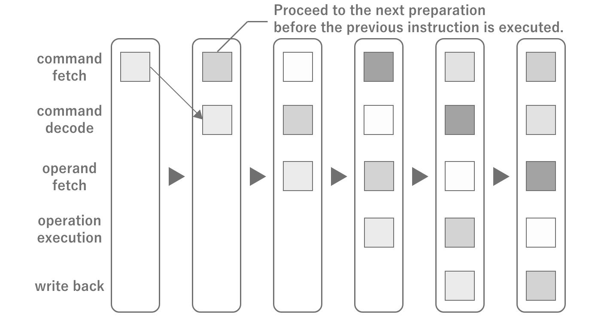
VI: ▲ Figure 2.2 — Kiến trúc Pipeline của CPU. / EN: Figure 2.2 — CPU Pipeline Architecture.
"CPU (Central Processing Unit) là BỘ NÃO của máy tính và chịu trách nhiệm KHÔNG CHỈ thực thi chương trình, mà còn GIAO TIẾP với các thành phần phần cứng khác.
🔑 Thứ quyết định TỐC ĐỘ THỰC THI của chương trình KHÔNG CHỈ là sức mạnh số học đơn thuần, mà còn là việc nó thực thi các BƯỚC của một chương trình PHỨC TẠP nhanh tới đâu.
Ví dụ, có bốn phép toán số học trong một chương trình, nhưng cũng có các thao tác RẼ NHÁNH. Với CPU, nó KHÔNG BIẾT lệnh nào sẽ được gọi tiếp theo cho tới khi nó thực thi chương trình. Do đó, phần cứng của CPU được thiết kế để có thể xử lý ĐỦ LOẠI lệnh một cách LIÊN TIẾP NHANH CHÓNG."
"The CPU (Central Processing Unit) is the BRAIN of the computer and is responsible NOT ONLY for executing programs, but ALSO for interfacing with the various hardware components.
🔑 What determines the EXECUTION SPEED of a program is NOT ONLY simple arithmetic power, but ALSO how FAST it can execute the STEPS of a COMPLEX program.
For example, there are four arithmetic operations in a program, but there are ALSO BRANCHING operations. For the CPU, it does NOT KNOW which instruction will be called NEXT until it EXECUTES the program. Therefore, the hardware of the CPU is designed to be able to process a VARIETY of instructions in RAPID SUCCESSION."
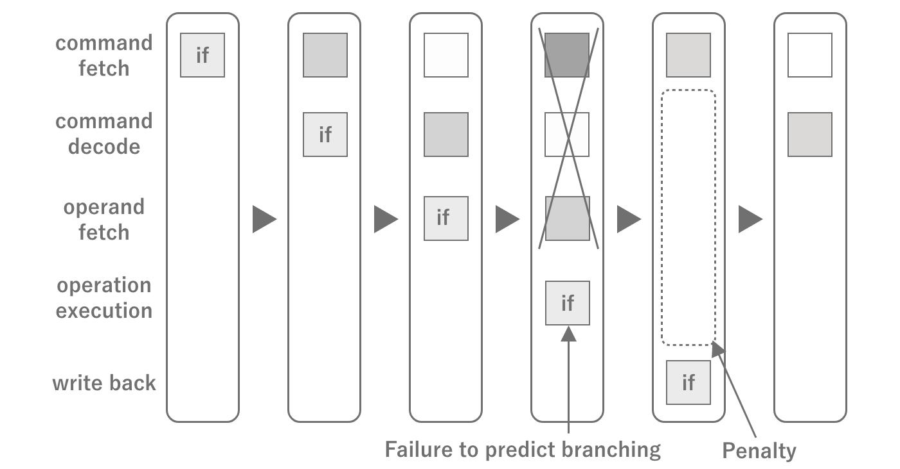
VI: ▲ Figure 2.3 — Pipeline Stall của CPU. / EN: Figure 2.3 — CPU Pipeline Stalling.
⛔ PIPELINE STALL — vì sao RẼ NHÁNH trong vòng lặp lại tốn kém
"Luồng lệnh bên trong CPU gọi là PIPELINE, và các lệnh được xử lý TRONG KHI DỰ ĐOÁN lệnh tiếp theo trong pipeline.
💀 NẾU lệnh tiếp theo KHÔNG được dự đoán đúng, một sự TẠM DỪNG gọi là PIPELINE STALL xảy ra và PIPELINE BỊ RESET.
🔑 PHẦN LỚN stall là do RẼ NHÁNH gây ra. Tuy bản thân việc rẽ nhánh có DỰ ĐOÁN kết quả ở mức độ nào đó, SAI SÓT VẪN có thể xảy ra.
✅ Tuy performance tuning VẪN làm được mà không cần thuộc lòng cấu trúc bên trong, chỉ cần BIẾT những điều này sẽ giúp bạn Ý THỨC HƠN về cách TRÁNH RẼ NHÁNH TRONG VÒNG LẶP khi viết code."
👉 Đây chính là nền tảng phần cứng cho lời khuyên "Cố BLEND kết quả thay vì tạo NHÁNH LOGIC" trong shader ở Module 4 §13 — và nó cũng đúng với code C# trong vòng lặp nóng.
"The flow of instructions inside the CPU is called a PIPELINE, and instructions are processed WHILE PREDICTING the next instruction in the pipeline.
💀 IF the next instruction is NOT predicted, a PAUSE called a PIPELINE STALL occurs and THE PIPELINE IS RESET.
🔑 The MAJORITY of stalls are caused by BRANCHING. Although the branch itself ANTICIPATES the result to some extent, MISTAKES can STILL be made.
✅ Although performance tuning is possible WITHOUT memorizing the internal structure, JUST KNOWING these things will help you be MORE AWARE of how to AVOID BRANCHING IN LOOPS when writing code."
👉 This is the hardware basis for the "try to BLEND results rather than creating LOGIC BRANCHES" shader advice in Module 4 §13 — and it applies to hot-loop C# code too.
9.1. ⚡ Sức mạnh tính toán — Clock, Core, và Context Switch¶
"Sức mạnh tính toán của CPU được xác định bởi TẦN SỐ XUNG NHỊP (đơn vị: Hz) và SỐ NHÂN (cores).
⏱️ Tần số xung nhịp chỉ ra CPU có thể chạy BAO NHIÊU LẦN MỖI GIÂY. Do đó, tần số CÀNG CAO, tốc độ thực thi chương trình CÀNG NHANH.
🧩 Ngược lại, SỐ NHÂN đóng góp vào sức mạnh tính toán SONG SONG. Một CORE là ĐƠN VỊ CƠ BẢN mà CPU vận hành; khi có NHIỀU HƠN MỘT thì gọi là MULTICORE."
🔄 Vì sao MULTICORE trở thành xu hướng — giải thích qua CONTEXT SWITCH:
"Ban đầu CHỈ có single core, nhưng với single core, để chạy NHIỀU chương trình, các chương trình cần chạy được LUÂN PHIÊN CHUYỂN ĐỔI. Đây gọi là CONTEXT SWITCH, và CHI PHÍ của nó RẤT CAO.
💡 Nếu bạn quen dùng smartphone, bạn có thể nghĩ rằng LUÔN CHỈ có MỘT ứng dụng (process) đang chạy, nhưng THỰC TẾ có RẤT NHIỀU process khác nhau chạy SONG SONG, BAO GỒM CẢ OS.
📊 Tính tới 2022, dòng chính cho smartphone là KHOẢNG 2–8 NHÂN."
"The computing power of a CPU is determined by the CLOCK FREQUENCY (unit: Hz) and the NUMBER OF CORES.
⏱️ The clock frequency indicates HOW MANY TIMES PER SECOND the CPU can run. Therefore, the HIGHER the clock frequency, the FASTER the program execution speed.
🧩 The NUMBER OF CORES, on the other hand, contributes to the PARALLEL computing power. A CORE is the BASIC UNIT in which a CPU operates, and when there is MORE THAN ONE it is called MULTICORE."
🔄 Why MULTICORE became mainstream — explained via CONTEXT SWITCH:
"Originally, there were only single cores, but with a single core, in order to run MULTIPLE programs, the programs to be run are ALTERNATELY SWITCHED. This is called a CONTEXT SWITCH, and its COST is VERY HIGH.
💡 If you are used to smartphones, you may think that there is ALWAYS ONE application (process) running, but IN REALITY there are MANY different processes running IN PARALLEL, INCLUDING the OS.
📊 As of 2022, the mainstream for smartphones is AROUND 2–8 CORES."
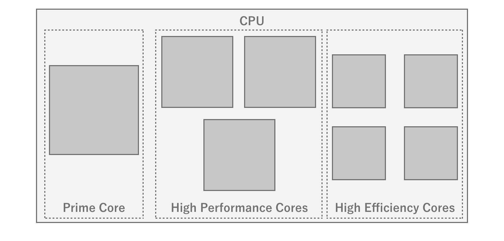
VI: ▲ Figure 2.4 — Cấu hình nhân KHÔNG ĐỒNG NHẤT của Snapdragon 8 gen 1: 1 Prime Core (lớn nhất) · 3 High Performance Cores · 4 High Efficiency Cores (nhỏ nhất). / EN: Figure 2.4 — Heterogeneous core configuration of Snapdragon 8 gen 1.
🔋 big.LITTLE — cái bẫy khi ĐỌC số nhân
"Những năm gần đây, CPU có NHÂN BẤT ĐỐI XỨNG (big.LITTLE) đã trở thành dòng chính cho bộ xử lý đa nhân (đặc biệt là smartphone). Nhân bất đối xứng chỉ CPU có ĐỒNG THỜI nhân HIỆU NĂNG CAO và nhân TIẾT KIỆM ĐIỆN.
✅ Ưu điểm: bình thường CHỈ nhân tiết kiệm điện được dùng để BẢO TOÀN PIN, và các nhân có thể được CHUYỂN ĐỔI khi CẦN hiệu năng, ví dụ trong game.
🚨 TUY NHIÊN LƯU Ý rằng hiệu năng song song TỐI ĐA bị GIẢM bởi các nhân tiết kiệm điện, nên KHÔNG THỂ dùng RIÊNG số nhân để đánh giá hiệu năng của nhân bất đối xứng."
🎮 Điều quan trọng NHẤT với game — vì sao NHÂN MẠNH quan trọng hơn NHIỀU NHÂN:
"Việc một chương trình có dùng hết được nhiều nhân hay không cũng phụ thuộc vào MÔ TẢ XỬ LÝ SONG SONG của chương trình. Ví dụ, có trường hợp game engine đã tinh gọn physics engine bằng cách chạy nó trên MỘT THREAD RIÊNG, hoặc xử lý song song được tận dụng qua JobSystem của Unity.
🔑 Vì BẢN THÂN vòng lặp chính của game KHÔNG THỂ song song hoá, nên hiệu năng CAO HƠN của BẢN THÂN NHÂN mới là LỢI THẾ, KỂ CẢ khi có nhiều nhân. Do đó, có một nhân HIỆU NĂNG CAO là LỢI THẾ, ngay cả với CPU đa nhân."
👉 Hệ quả thực chiến: khi chọn thiết bị "bảo đảm" ở §1.3, ĐỪNG so sánh theo số nhân — hãy so theo điểm SINGLE-CORE.
"In recent years, CPUs with ASYMMETRIC CORES (big.LITTLE) have become mainstream for multi-core processors (especially for smartphones). Asymmetric cores refer to CPUs that have a HIGH-PERFORMANCE core and a POWER-SAVING core TOGETHER.
✅ The advantage: normally ONLY the power-saving cores are used to CONSERVE BATTERY, and the cores can be SWITCHED when performance is REQUIRED, such as in games.
🚨 NOTE, HOWEVER, that the MAXIMUM PARALLEL performance is REDUCED by the power-saving cores, so the NUMBER OF CORES ALONE CANNOT be used to judge the performance of asymmetric cores."
🎮 The MOST important point for games — why a STRONG core beats MANY cores:
"Whether a program can use up multiple cores ALSO depends on the PARALLEL PROCESSING DESCRIPTION of the program. For example, there are cases where the game engine has streamlined the physics engine by running it in a SEPARATE THREAD, or parallel processing is utilized through Unity's JobSystem.
🔑 Since the operation of the game's MAIN LOOP ITSELF CANNOT be parallelized, the HIGHER PERFORMANCE OF THE CORE ITSELF is advantageous EVEN WITH multiple cores. Therefore, it is ADVANTAGEOUS to have a HIGH-PERFORMANCE CORE itself, even if it is multi-core."
👉 The practical consequence: when choosing your "guaranteed" device in §1.3, do NOT compare by core count — compare by SINGLE-CORE score.
9.2. 🗄️ Cache Memory — L1, L2, L3 và Data Locality¶
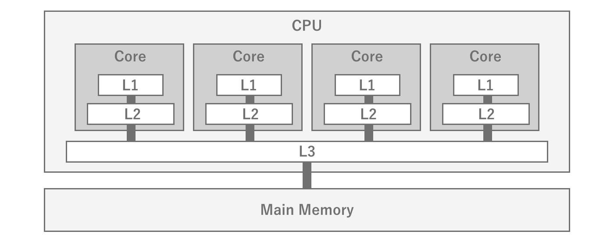
VI: ▲ Figure 2.5 — Quan hệ giữa cache L1, L2, L3 của CPU và main memory. / EN: Figure 2.5 — Relationship between the CPU L1, L2, and L3 caches and main memory.
"CPU và main memory nằm CÁCH XA nhau về VẬT LÝ và cần một khoảng thời gian (LATENCY) để truy cập. Do đó, khoảng cách này trở thành nút thắt hiệu năng LỚN khi cố truy cập dữ liệu trong main memory lúc chạy chương trình.
✅ Để giải quyết vấn đề latency này, một CACHE MEMORY được cài đặt BÊN TRONG CPU. Cache memory chủ yếu lưu MỘT PHẦN dữ liệu trong main memory để chương trình có thể truy cập NHANH dữ liệu cần thiết.
📊 Có BA loại cache: L1, L2, và L3. SỐ CÀNG NHỎ thì TỐC ĐỘ CÀNG NHANH, nhưng DUNG LƯỢNG CÀNG NHỎ.
💀 Do đó, cache của CPU KHÔNG THỂ lưu TẤT CẢ dữ liệu, mà CHỈ dữ liệu được xử lý GẦN ĐÂY NHẤT."
🔑 Kết luận cho lập trình viên:
"Do đó, chìa khoá để cải thiện hiệu năng chương trình là LÀM SAO ĐẶT DỮ LIỆU vào cache một cách HIỆU QUẢ. Vì cache KHÔNG THỂ được điều khiển TỰ DO bởi chương trình, TÍNH CỤC BỘ CỦA DỮ LIỆU (data locality) là QUAN TRỌNG.
⚠️ Trong game engine, RẤT KHÓ để quản lý bộ nhớ với ý thức về data locality, nhưng MỘT SỐ cơ chế — như JobSystem của Unity — CÓ THỂ đạt được cách sắp xếp bộ nhớ với data locality TĂNG CƯỜNG."
👉 Nối với Module 4 §7.1: GPU cũng có cache và cũng phụ thuộc data locality — đó là lý do mipmap cứu được cache.
"The CPU and main memory are PHYSICALLY located FAR APART and require a FRACTION OF TIME (LATENCY) to access. Therefore, this distance becomes a MAJOR performance bottleneck when trying to access data stored in main memory during program execution.
✅ To solve this latency problem, a CACHE MEMORY is installed INSIDE the CPU. Cache memory mainly stores a PORTION of the data in main memory so that programs can QUICKLY access the data they need.
📊 There are THREE types of cache: L1, L2, and L3. The SMALLER the number, the FASTER the speed, but the SMALLER the capacity.
💀 Therefore, the CPU cache CANNOT store ALL data, but ONLY the MOST RECENTLY HANDLED data."
🔑 The conclusion for programmers:
"Therefore, the KEY to improving program performance is HOW TO EFFICIENTLY PLACE DATA in the cache. Since the cache CANNOT be FREELY CONTROLLED by the program, DATA LOCALITY is IMPORTANT.
⚠️ In game engines, it is DIFFICULT to manage memory with an awareness of data locality, but SOME MECHANISMS — such as Unity's JobSystem — CAN achieve memory placement with ENHANCED data locality."
👉 Connects to Module 4 §7.1: the GPU also has caches and also depends on data locality — which is why mipmaps rescue the cache.
10. 🎨 GPU — Vì sao nó KHÁC CPU về CẤU TRÚC¶
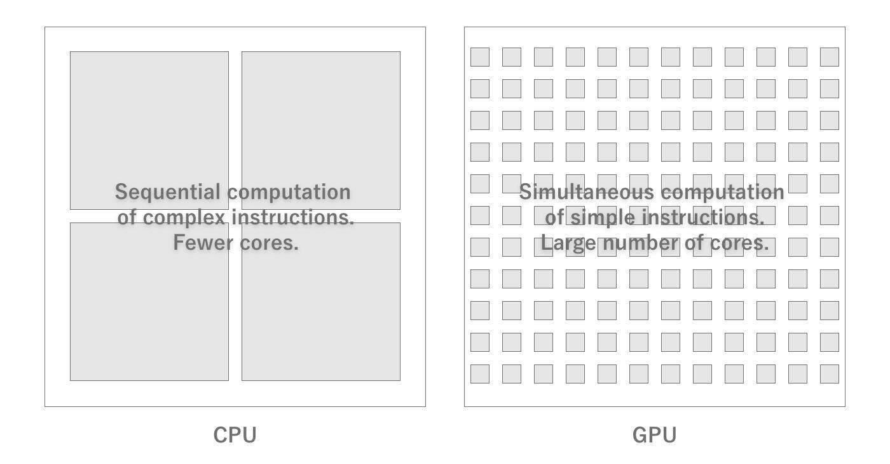
VI: ▲ Figure 2.6 — Khác biệt giữa CPU và GPU. / EN: Figure 2.6 — Difference between CPU and GPU.
"Trong khi CPU CHUYÊN thực thi chương trình, GPU (Graphics Processing Unit) là phần cứng CHUYÊN cho xử lý ảnh và render đồ hoạ.
🔑 GPU được thiết kế CHUYÊN cho xử lý đồ hoạ, nên cấu trúc của nó RẤT KHÁC CPU, và được thiết kế để XỬ LÝ SONG SONG một SỐ LƯỢNG LỚN các phép tính ĐƠN GIẢN.
📖 Ví dụ minh hoạ của sách — chuyển ảnh sang trắng đen:
"CPU phải ĐỌC giá trị RGB của một toạ độ từ bộ nhớ, chuyển sang grayscale, và TRẢ VỀ bộ nhớ — TỪNG PIXEL MỘT.
✅ Vì quá trình này KHÔNG có rẽ nhánh và phép tính của MỖI pixel KHÔNG PHỤ THUỘC vào kết quả của pixel khác, nên RẤT DỄ thực hiện phép tính cho từng pixel một cách SONG SONG.
🚀 Do đó, GPU có thể thực hiện xử lý song song áp dụng CÙNG một thao tác lên MỘT LƯỢNG LỚN dữ liệu ở TỐC ĐỘ CAO."
📏 Hai chỉ số đo hiệu năng GPU:
- FLOPS — "đồ hoạ đòi hỏi SỐ LƯỢNG LỚN phép tính DẤU PHẨY ĐỘNG, và GPU ĐẶC BIỆT giỏi ở đó. Vì lý do này, chỉ số hiệu năng gọi là FLOPS — đo SỐ PHÉP TÍNH DẤU PHẨY ĐỘNG MỖI GIÂY — thường được dùng"
- FILL RATE — "Vì khó hiểu hiệu năng CHỈ qua sức mạnh tính toán, một chỉ số gọi là FILL RATE — chỉ ra BAO NHIÊU PIXEL có thể được vẽ MỖI GIÂY — cũng được dùng"
🔢 Sức mạnh tính toán GPU: "Phần cứng GPU đặc trưng bởi SỐ LƯỢNG LỚN nhân (HÀNG CHỤC tới HÀNG NGHÌN) chứa đơn vị tính toán số nguyên và dấu phẩy động. Để triển khai số lượng lớn nhân, các đơn vị cần thiết để chạy chương trình PHỨC TẠP (vốn cần cho CPU) đã bị LOẠI BỎ vì KHÔNG CÒN CẦN THIẾT."
"While CPUs specialize in EXECUTING PROGRAMS, the GPU (Graphics Processing Unit) is hardware SPECIALIZED for image processing and graphics rendering.
🔑 GPUs are designed to specialize in graphics processing, so their structure is VERY DIFFERENT from that of CPUs, and they are designed to process a LARGE NUMBER of SIMPLE CALCULATIONS IN PARALLEL.
📖 The book's illustration — converting an image to black and white:
"The CPU must READ the RGB values of certain coordinates from memory, convert them to grayscale, and RETURN them to memory — PIXEL BY PIXEL.
✅ Since such a process does NOT involve any BRANCHING and the calculation of each pixel does NOT DEPEND on the results of other pixels, it is EASY to perform the calculations for each pixel IN PARALLEL.
🚀 Therefore, GPUs can perform parallel processing that applies the SAME OPERATION to a LARGE AMOUNT of data at HIGH SPEED."
📏 Two GPU performance metrics:
- FLOPS — "graphics processing requires a LARGE NUMBER of FLOATING-POINT operations, and GPUs are PARTICULARLY GOOD at them. For this reason, a performance index called FLOPS, which measures the NUMBER OF FLOATING-POINT OPERATIONS PER SECOND, is generally used"
- FILL RATE — "Since it is DIFFICULT to understand performance ONLY in terms of computing power, an indicator called FILL RATE, which indicates HOW MANY PIXELS can be drawn PER SECOND, is also used"
🔢 GPU arithmetic capacity: "GPU hardware is characterized by a LARGE NUMBER of cores (TENS TO THOUSANDS) containing integer and floating-point arithmetic units. In order to deploy a large number of cores, the units required to run COMPLEX programs (necessary for CPUs) have been ELIMINATED because they are NO LONGER NEEDED."
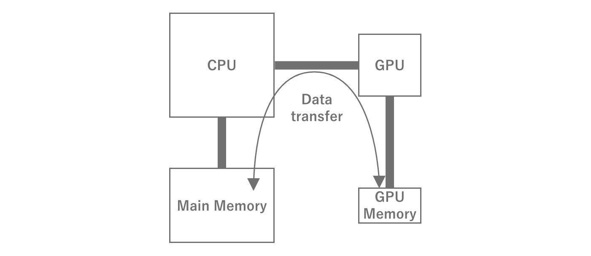
VI: ▲ Figure 2.7 — Truyền bộ nhớ GPU. / EN: Figure 2.7 — GPU Memory Transfer.
🚨 Bộ nhớ GPU trên MOBILE — điều KHÁC BIỆT then chốt so với PC
"GPU tất nhiên cũng cần KHÔNG GIAN BỘ NHỚ để lưu tạm và xử lý dữ liệu. Bình thường, vùng này DÀNH RIÊNG cho GPU, KHÁC với main memory. Do đó, để thực hiện BẤT KỲ xử lý nào, dữ liệu PHẢI được TRUYỀN từ main memory sang bộ nhớ GPU. Sau xử lý, dữ liệu được trả về main memory theo thứ tự NGƯỢC LẠI.
💀 LƯU Ý rằng NẾU lượng dữ liệu cần truyền LỚN — ví dụ truyền NHIỀU texture ĐỘ PHÂN GIẢI CAO — việc truyền sẽ TỐN THỜI GIAN và TRỞ THÀNH nút thắt xử lý.
📱 TUY NHIÊN, trên thiết bị DI ĐỘNG, main memory nhìn chung được CHIA SẺ giữa CPU và GPU, thay vì DÀNH RIÊNG cho GPU.
- ✅ ƯU ĐIỂM: thay đổi ĐỘNG được dung lượng bộ nhớ của GPU
- 💀 NHƯỢC ĐIỂM: CHIA SẺ BĂNG THÔNG TRUYỀN giữa CPU và GPU
⚠️ Trong trường hợp này, dữ liệu VẪN PHẢI được truyền giữa các vùng bộ nhớ CPU và GPU."
👉 Đây là lý do vật lý khiến băng thông là bottleneck số 1 trên mobile (Module 4 §7): trên PC, CPU và GPU có bus RIÊNG; trên mobile chúng tranh nhau CÙNG một đường ống.
"GPUs, of course, also require MEMORY SPACE for temporary storage to process data. Normally, this area is DEDICATED to the GPU, unlike main memory. Therefore, to perform ANY kind of processing, data MUST be TRANSFERRED from main memory to GPU memory. After processing, the data is RETURNED to main memory in the REVERSE ORDER.
💀 Note that IF the amount of data to be transferred is LARGE — for example, transferring MULTIPLE HIGH-RESOLUTION textures — the transfer TAKES TIME and BECOMES a processing BOTTLENECK.
📱 In MOBILE devices, HOWEVER, the main memory is GENERALLY SHARED between the CPU and GPU, rather than being DEDICATED to the GPU.
- ✅ ADVANTAGE: DYNAMICALLY CHANGING the memory capacity of the GPU
- 💀 DISADVANTAGE: SHARING the TRANSFER BANDWIDTH between the CPU and GPU
⚠️ In this case, data must STILL be transferred between the CPU and GPU memory areas."
👉 This is the physical reason bandwidth is the #1 mobile bottleneck (Module 4 §7): on PC, CPU and GPU have SEPARATE buses; on mobile they COMPETE for the SAME pipe.
🧮 GPGPU — dùng GPU cho việc KHÔNG phải đồ hoạ
VI: "GPU có thể thực hiện phép tính SONG SONG trên LƯỢNG LỚN dữ liệu ở tốc độ CAO — thứ CPU KHÔNG giỏi. Cái này gọi là GPGPU (General Purpose GPU). Đặc biệt, có nhiều trường hợp GPU được dùng cho MACHINE LEARNING như AI và xử lý tính toán như BLOCKCHAIN, dẫn tới NHU CẦU GPU TĂNG VỌT, gây TĂNG GIÁ và các hệ quả khác. ✅ GPGPU cũng có thể dùng trong Unity qua chức năng gọi là COMPUTE SHADER."**
EN: "GPUs can perform PARALLEL operations on LARGE amounts of data at HIGH SPEED, which CPUs are NOT good at — GPGPU (General Purpose GPU). In particular, there are many cases where GPUs are used for MACHINE LEARNING such as AI and computational processing such as BLOCKCHAIN, which has led to a SHARP INCREASE in the DEMAND for GPUs, resulting in a PRICE HIKE and other effects. ✅ GPGPU can also be used in Unity by utilizing a function called COMPUTE SHADER."**
👉 Xem Module 4 §23.2 — thay geometry shader bằng compute shader.
11. 💾 Memory — OOM, Swap, Stack vs Heap¶
"Về cơ bản, TẤT CẢ dữ liệu được giữ trong MAIN MEMORY, vì CPU CHỈ giữ dữ liệu cần thiết cho phép tính TẠI THỜI ĐIỂM ĐÓ.
💀 Vì KHÔNG THỂ dùng nhiều bộ nhớ hơn DUNG LƯỢNG VẬT LÝ, nếu dùng QUÁ NHIỀU, bộ nhớ KHÔNG THỂ được cấp phát và tiến trình bị OS BUỘC KẾT THÚC. Cái này thường gọi là OOM (Out Of Memory), và được gọi là 'BỊ GIẾT (killed)'.
📊 Tính tới 2022, ĐA SỐ smartphone được trang bị 4–8 GB bộ nhớ. Dù vậy, bạn NÊN CẨN THẬN đừng dùng QUÁ NHIỀU."
🔌 Vì sao RAM KHÔNG nằm trong SoC:
"Tuy có LỢI THẾ khi đặt main memory BÊN TRONG SoC do khoảng cách vật lý, bộ nhớ KHÔNG được đưa vào SoC. Có lý do cho điều này, ví dụ việc DUNG LƯỢNG bộ nhớ lắp đặt sẽ KHÔNG THỂ THAY ĐỔI từ máy này sang máy khác nếu nó nằm trong SoC.
⚡ Tuy nhiên, nếu main memory CHẬM, nó sẽ ảnh hưởng RÕ RỆT tới tốc độ thực thi, nên một BUS TƯƠNG ĐỐI NHANH được dùng để nối SoC và bộ nhớ. Chuẩn bộ nhớ và bus thường dùng trong smartphone là LPDDR.
📈 Có vài THẾ HỆ LPDDR, nhưng tốc độ truyền LÝ THUYẾT là VÀI Gbps. Tất nhiên KHÔNG phải lúc nào cũng đạt hiệu năng lý thuyết, nhưng trong phát triển game, ĐIỀU NÀY HIẾM KHI là nút thắt, nên KHÔNG cần bận tâm."
"Basically, ALL data is held in MAIN MEMORY, as the CPU ONLY holds the data necessary for the calculation AT THAT TIME.
💀 Since it is NOT POSSIBLE to use more memory than the PHYSICAL CAPACITY, if too much is used, the memory CANNOT be allocated and the process is FORCED TO TERMINATE by the OS. This is generally referred to as OOM (Out Of Memory), and is called being "KILLED".
📊 As of 2022, the MAJORITY of smartphones are equipped with 4–8 GB of memory capacity. Even so, you should be CAREFUL not to use too much memory."
🔌 Why RAM is NOT inside the SoC:
"Although it is ADVANTAGEOUS to have the main memory INSIDE the SoC due to physical distance, memory is NOT included in the SoC. There are reasons for this, such as the fact that the AMOUNT of memory installed CANNOT be CHANGED from device to device if it is inside the SoC.
⚡ However, if the main memory is SLOW, it will NOTICEABLY affect program execution speed, so a RELATIVELY FAST BUS is used to connect the SoC and memory. The memory and bus standard commonly used in smartphones is LPDDR.
📈 There are several generations of LPDDR, but the THEORETICAL transfer rate is SEVERAL Gbps. Of course, it is not always possible to achieve the theoretical performance, but in game development, THIS IS RARELY A BOTTLENECK, so there is no need to be aware of it."
☠️ Vì sao game NGỐN BỘ NHỚ bị GIẾT trước — cơ chế ưu tiên của OS
"Trong một OS có RẤT NHIỀU tiến trình chạy đồng thời — chủ yếu là tiến trình HỆ THỐNG và tiến trình NGƯỜI DÙNG. Tiến trình hệ thống đóng vai trò quan trọng trong việc chạy OS và hầu hết THƯỜNG TRÚ trong OS dưới dạng DỊCH VỤ, tiếp tục chạy BẤT KỂ ý định người dùng.
📲 Có HAI trạng thái hiển thị cho app trên smartphone: FOREGROUND (trước nhất) và BACKGROUND (ẩn). Khi một app ở background, tiến trình TỒN TẠI ở trạng thái TREO (suspended) để dễ quay lại, và BỘ NHỚ ĐƯỢC GIỮ NGUYÊN.
💀 TUY NHIÊN, khi bộ nhớ dùng bởi TOÀN HỆ THỐNG trở nên THIẾU, tiến trình bị GIẾT theo THỨ TỰ ƯU TIÊN do OS xác định.
🎯 Tại thời điểm này, thứ DỄ BỊ GIẾT NHẤT là các ứng dụng NGƯỜI DÙNG (≒ GAME) đang ở BACKGROUND và ĐANG DÙNG NHIỀU BỘ NHỚ.
😖 Nói cách khác, GAME DÙNG NHIỀU BỘ NHỚ DỄ BỊ GIẾT HƠN khi chuyển sang background, dẫn tới TRẢI NGHIỆM TỆ HƠN khi quay lại game và phải BẮT ĐẦU LẠI TỪ ĐẦU."
🍎 Giới hạn CỨNG của iOS — con số cần nhớ:
"Trong một số trường hợp như iOS, nó được KIỂM SOÁT sao cho KHÔNG QUÁ MỘT TỶ LỆ NHẤT ĐỊNH của bộ nhớ vật lý được dùng bởi MỘT tiến trình. Do đó, CÓ GIỚI HẠN cho lượng bộ nhớ có thể cấp phát.
📊 Tính tới 2022, giới hạn cho thiết bị iOS có 3 GB RAM (dung lượng RAM phổ biến) sẽ là 1.3–1.4 GB, nên đây có lẽ là NGƯỠNG TRÊN khi làm game."
👉 Con số này KHỚP CHÍNH XÁC với kết quả đo thực nghiệm ở §1.2 — 1.3 GB. Hai nguồn độc lập, cùng một con số.
"Within an OS, there are MANY processes running simultaneously — mainly SYSTEM processes and USER processes. System processes play an important role in running the OS, and most of them RESIDE in the OS as SERVICES and continue to run REGARDLESS of the user's intention.
📲 There are TWO display states for apps on smartphones: FOREGROUND (foremost) and BACKGROUND (hidden). While an app is in the background, the process EXISTS in a SUSPENDED state to facilitate the return process, and MEMORY IS MAINTAINED as it is.
💀 HOWEVER, when the memory used by the ENTIRE SYSTEM becomes INSUFFICIENT, the process is KILLED according to the PRIORITY ORDER determined by the OS.
🎯 At this time, the MOST LIKELY to be killed are USER applications (≒ GAMES) in the BACKGROUND that are USING A LOT OF MEMORY.
😖 In other words, GAMES THAT USE A LOT OF MEMORY ARE MORE LIKELY TO BE KILLED when they are moved to the background, resulting in a WORSE user experience when returning to the game and having to START ALL OVER AGAIN."
🍎 iOS's HARD limit — the number to remember:
"In some cases, such as iOS, it is CONTROLLED so that NO MORE THAN a CERTAIN PERCENTAGE of the physical memory can be used by a SINGLE process. Therefore, there is a LIMIT to the amount of memory that can be allocated.
📊 As of 2022, the limit for an iOS device with 3 GB of RAM, which is a major RAM capacity, will be 1.3–1.4 GB, so this is likely to be the UPPER LIMIT for creating games."
👉 This number MATCHES the empirical measurement in §1.2 EXACTLY — 1.3 GB. Two independent sources, the same number.
11.1. 🔄 Memory Swap — Nén bộ nhớ vs Ghi ra storage¶
| Kỹ thuật | Cơ chế / Mechanism | Áp dụng trên mobile? |
|---|---|---|
| Memory Compression Nén bộ nhớ |
"Dung lượng vật lý được TIẾT KIỆM bằng cách NÉN và LƯU trong bộ nhớ — chủ yếu là bộ nhớ SẼ KHÔNG được truy cập trong một thời gian." ⚠️ "Tuy nhiên, do CHI PHÍ NÉN và GIẢI NÉN, nó KHÔNG được làm cho vùng đang ĐƯỢC DÙNG TÍCH CỰC, mà cho ứng dụng ĐÃ chuyển sang background" | ✅ CÓ |
| Swap ra STORAGE | "Trên phần cứng có NHIỀU DUNG LƯỢNG lưu trữ như PC, thay vì KẾT THÚC tiến trình để giải phóng bộ nhớ, nó có thể thử giải phóng bộ nhớ vật lý bằng cách LƯU bộ nhớ KHÔNG DÙNG ra STORAGE" ✅ "Ưu điểm: bảo đảm được LƯỢNG BỘ NHỚ LỚN HƠN so với nén bộ nhớ" | ❌ KHÔNG — "vì STORAGE CHẬM HƠN bộ nhớ, có GIỚI HẠN HIỆU NĂNG MẠNH, và KHÔNG THỰC TẾ với smartphone vốn có dung lượng lưu trữ NHỎ ngay từ đầu" |
11.2. 📚 Stack vs Heap — Vì sao Heap CHẬM¶
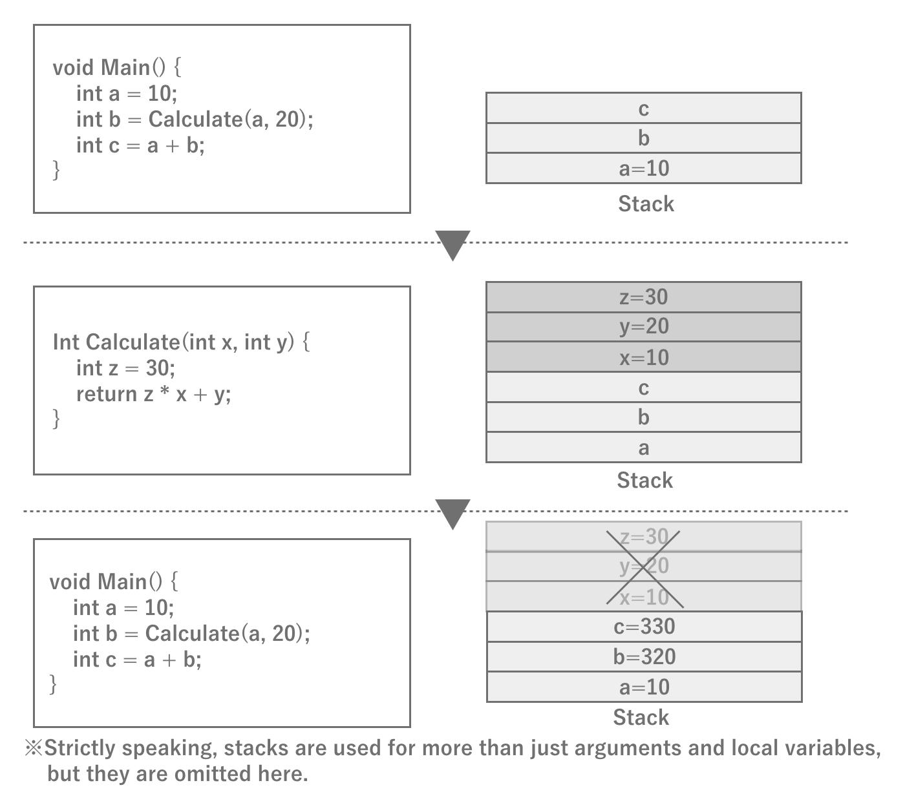
VI: ▲ Figure 2.8 — Sơ đồ hoạt động của STACK. / EN: Figure 2.8 — Schematic diagram of stack operation.
📥 STACK — vùng CỐ ĐỊNH chuyên dụng
"Stack THỰC RA là một VÙNG CỐ ĐỊNH CHUYÊN DỤNG liên quan MẬT THIẾT tới hoạt động của chương trình.
🔑 Khi một HÀM được gọi, STACK được cấp phát cho THAM SỐ và BIẾN CỤC BỘ; khi hàm trả về hàm gốc, STACK được GIẢI PHÓNG và giá trị trả về được tích luỹ.
📦 Nói cách khác, khi hàm tiếp theo được gọi BÊN TRONG một hàm, thông tin của hàm HIỆN TẠI được GIỮ NGUYÊN và hàm tiếp theo được nạp vào bộ nhớ. Bằng cách này, cơ chế gọi hàm được hiện thực hoá.
⚠️ Bộ nhớ stack phụ thuộc kiến trúc, nhưng vì DUNG LƯỢNG BẢN THÂN nó RẤT NHỎ (1 MB), CHỈ một lượng dữ liệu HẠN CHẾ được lưu."
📤 HEAP — vùng dùng TỰ DO
"Heap là vùng bộ nhớ có thể dùng TỰ DO trong chương trình. Bất cứ khi nào chương trình CẦN, nó có thể phát lệnh cấp phát bộ nhớ (
malloctrong C) để cấp phát và dùng một LƯỢNG LỚN dữ liệu.♻️ Tất nhiên, khi chương trình DÙNG XONG bộ nhớ, nó cần GIẢI PHÓNG (
free). Trong C#, việc cấp phát và giải phóng bộ nhớ được thực hiện TỰ ĐỘNG lúc runtime, nên người cài đặt KHÔNG cần làm điều này TƯỜNG MINH."
📥 STACK — a dedicated FIXED area
"The stack is actually a DEDICATED FIXED AREA that is CLOSELY RELATED to the operation of the program.
🔑 When a FUNCTION is called, the stack is ALLOCATED for ARGUMENTS and LOCAL VARIABLES, and when the function RETURNS to the original function, the stack is RELEASED and the return value is accumulated.
📦 In other words, when the next function is called WITHIN a function, the information of the CURRENT function is LEFT AS IT IS and the next function is LOADED into memory. In this way, the function-call mechanism is realized.
⚠️ Stack memory depends on the architecture, but since the CAPACITY ITSELF is VERY SMALL (1 MB), only a LIMITED amount of data is stored."
📤 HEAP — a FREELY usable area
"The heap is a memory area that can be FREELY USED within the program. Whenever the program NEEDS it, it can issue a memory allocation instruction (
mallocin C) to allocate and use a LARGE amount of data.♻️ Of course, when the program FINISHES using the memory, it needs to RELEASE it (
free). In C#, memory allocation and deallocation are performed AUTOMATICALLY at runtime, so implementors do NOT need to do this EXPLICITLY."
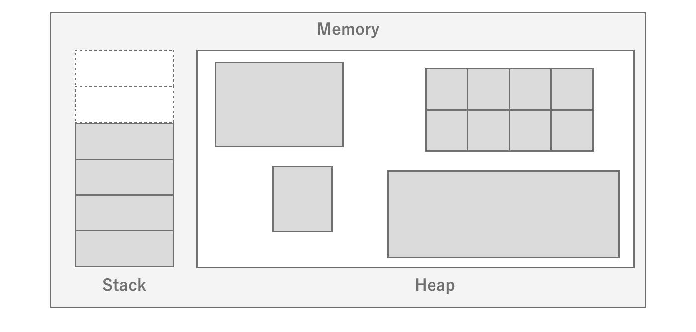
VI: ▲ Figure 2.9 — Stack và Heap. / EN: Figure 2.9 — Stack and Heap.
🧩 PHÂN MẢNH BỘ NHỚ — chữ 'LIÊN TIẾP' là chìa khoá
"Vì OS KHÔNG BIẾT khi nào và bao nhiêu bộ nhớ được cần, nó cấp phát bộ nhớ từ VÙNG TRỐNG khi được yêu cầu. NẾU bộ nhớ KHÔNG THỂ được cấp phát LIÊN TIẾP khi cố cấp phát, nó được coi là HẾT BỘ NHỚ.
🔑 TỪ KHOÁ 'LIÊN TIẾP (consecutive)' này là QUAN TRỌNG.
💀 Nhìn chung, việc LẶP ĐI LẶP LẠI cấp phát và giải phóng bộ nhớ dẫn tới PHÂN MẢNH BỘ NHỚ (memory fragmentation). Khi bộ nhớ bị phân mảnh, NGAY CẢ KHI TỔNG dung lượng trống là ĐỦ, CÓ THỂ KHÔNG CÓ vùng trống LIÊN TIẾP.
📈 Trong trường hợp đó, OS trước tiên sẽ thử MỞ RỘNG HEAP (Heap expansion). Nói cách khác, nó cấp phát BỘ NHỚ MỚI để gán cho tiến trình, qua đó BẢO ĐẢM vùng LIÊN TIẾP.
☠️ TUY NHIÊN, do bộ nhớ HỮU HẠN của toàn hệ thống, OS SẼ GIẾT tiến trình NẾU KHÔNG CÒN bộ nhớ để cấp phát."
👉 Đây là lời giải thích ĐẦY ĐỦ NHẤT trong toàn bộ Hub cho hiện tượng phân mảnh managed heap đã nêu ở Module 3 và Module 4 §29.3 (vì sao asyncUploadPersistentBuffer nên để true).
"Since the OS does NOT KNOW when and how much memory is needed, it allocates memory from the FREE SPACE when it is needed. IF the memory CANNOT be allocated CONTINUOUSLY when allocation is attempted, it is assumed to be OUT OF MEMORY.
🔑 This KEYWORD 'CONSECUTIVE' is IMPORTANT.
💀 In general, REPEATED allocation and deallocation of memory results in MEMORY FRAGMENTATION. When memory is fragmented, EVEN IF the TOTAL free space is SUFFICIENT, there may be NO CONTIGUOUS free space.
📈 In such a case, the OS will FIRST try HEAP EXPANSION. In other words, it allocates NEW MEMORY to be assigned to the process, thereby ENSURING contiguous space.
☠️ HOWEVER, due to the FINITE memory of the entire system, the OS WILL KILL the process IF there is NO MORE memory left to allocate."
👉 This is the FULLEST explanation in the whole Hub for the managed heap fragmentation raised in Module 3 and Module 4 §29.3 (why asyncUploadPersistentBuffer should stay true).
⚡ Vì sao Stack NHANH và Heap CHẬM — câu trả lời DỨT KHOÁT:
"Có KHÁC BIỆT RÕ RỆT về hiệu năng cấp phát bộ nhớ khi so sánh stack và heap.
🔑 Bởi vì LƯỢNG bộ nhớ stack cần cho một hàm được XÁC ĐỊNH LÚC BIÊN DỊCH, nên vùng nhớ ĐÃ ĐƯỢC CẤP PHÁT SẴN.
🐢 Trong khi đó, HEAP KHÔNG BIẾT lượng bộ nhớ cần cho tới LÚC THỰC THI, nên heap cấp phát bộ nhớ bằng cách TÌM KIẾM trong vùng trống MỖI LẦN.
👉 ĐÂY LÀ LÝ DO heap CHẬM và stack NHANH."
⚡ Why Stack is FAST and Heap is SLOW — the definitive answer:
"There is a NOTICEABLE DIFFERENCE in memory allocation performance when comparing stack and heap.
🔑 This is because the AMOUNT of stack memory required for a function is DETERMINED AT COMPILE TIME, so the memory area is ALREADY ALLOCATED.
🐢 Whereas the HEAP does NOT KNOW the amount of memory required until EXECUTION, so the heap allocates memory by SEARCHING for it in the free area EACH TIME.
👉 THIS IS WHY heap is SLOW and stack is FAST."
💥 Stack Overflow Error — 1 MB là tất cả những gì bạn có
VI: "Lỗi Stack Overflow xảy ra khi bộ nhớ stack bị DÙNG HẾT do các lời gọi ĐỆ QUY tới hàm. Kích thước stack MẶC ĐỊNH cho iOS/Android là 1 MB, nên lỗi này DỄ xảy ra hơn khi kích thước của lời gọi đệ quy TĂNG LÊN. Nhìn chung, có thể NGĂN lỗi này bằng cách ĐỔI sang thuật toán KHÔNG dẫn tới lời gọi đệ quy, hoặc đổi sang thuật toán KHÔNG cho phép lời gọi đệ quy trở nên QUÁ SÂU."**
EN: "The Stack Overflow error occurs when stack memory is USED UP due to RECURSIVE CALLS to functions. The DEFAULT stack size for iOS/Android is 1 MB, so this error is MORE LIKELY to occur when the size of recursive calls INCREASES. In general, it is possible to PREVENT this error by CHANGING to an algorithm that does NOT result in recursive calls, or to one that does NOT allow recursive calls to become TOO DEEP."**
12. 💽 Storage — Vì sao ĐỌC FILE lâu hơn bạn nghĩ¶
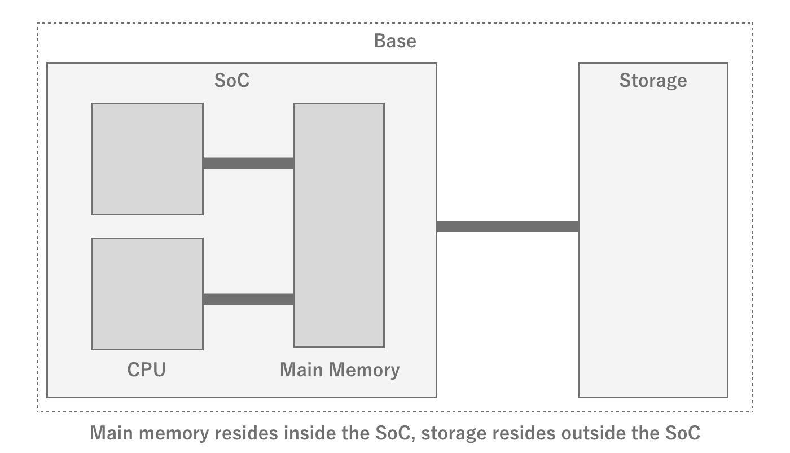
VI: ▲ Figure 2.10 — Quan hệ giữa SoC và Storage. / EN: Figure 2.10 — Relationship between SoC and Storage.
"Khi thực sự tiến hành tuning, bạn có thể nhận ra rằng việc ĐỌC FILE thường mất RẤT NHIỀU THỜI GIAN. Đọc file nghĩa là ĐỌC dữ liệu từ storage nơi file được lưu và GHI nó vào bộ nhớ để chương trình xử lý được.
💾 Storage đặc trưng bởi DUNG LƯỢNG LỚN và khả năng LƯU BỀN dữ liệu KHÔNG CẦN NGUỒN ĐIỆN (NON-VOLATILE). Tận dụng đặc điểm này, một lượng asset KHỔNG LỒ cũng như bản thân chương trình ứng dụng được lưu trong storage, và được load từ storage rồi thực thi lúc khởi động."
🐌 BA lý do storage CHẬM — nguyên văn:
- "KHOẢNG CÁCH VẬT LÝ tới CPU LỚN HƠN so với bộ nhớ, dẫn tới LATENCY LỚN và tốc độ đọc/ghi CHẬM."
- "Có NHIỀU LÃNG PHÍ vì việc đọc được thực hiện theo ĐƠN VỊ KHỐI (block), bao gồm cả dữ liệu được yêu cầu VÀ VÙNG XUNG QUANH nó."
- 🔑 "Đọc/ghi TUẦN TỰ thì NHANH, còn đọc/ghi NGẪU NHIÊN thì CHẬM."
🚨 Điều số ③ là QUAN TRỌNG NHẤT:
"Việc đọc/ghi NGẪU NHIÊN CHẬM là ĐẶC BIỆT QUAN TRỌNG. Đọc/ghi là TUẦN TỰ khi MỘT file được đọc/ghi THEO THỨ TỰ từ ĐẦU file. Tuy nhiên, khi đọc/ghi NHIỀU PHẦN của MỘT file, hoặc đọc/ghi NHIỀU FILE NHỎ cùng lúc, thì đó là NGẪU NHIÊN.
⚠️ Cần LƯU Ý rằng NGAY CẢ KHI đọc/ghi nhiều file TRONG CÙNG MỘT THƯ MỤC, chúng CÓ THỂ KHÔNG nằm LIÊN TIẾP về mặt VẬT LÝ — nên nếu chúng CÁCH XA nhau về vật lý, việc truy cập sẽ trở thành NGẪU NHIÊN."
"When you actually proceed with tuning, you may notice that it often takes a LONG TIME to READ A FILE. Reading a file means READING data from the storage where the file is stored and WRITING it to memory so that it can be handled by the program.
💾 Storage is characterized by its LARGE CAPACITY and its ability to PERSIST data WITHOUT a power supply (NONVOLATILE). Taking advantage of this feature, a VAST amount of assets as well as the program of the application itself are stored in storage, and are LOADED from storage and EXECUTED at startup."
🐌 THREE reasons storage is slow — verbatim:
- "The PHYSICAL DISTANCE from the CPU is GREATER than that of memory, resulting in LARGE LATENCY and SLOW read/write speeds."
- "There is a LOT OF WASTE because reads are done in BLOCK UNITS, INCLUDING the commanded data AND ITS SURROUNDINGS."
- 🔑 "SEQUENTIAL read/write is FAST, while RANDOM read/write is SLOW."
🚨 Point ③ is the MOST IMPORTANT:
"The fact that RANDOM read/write is SLOW is PARTICULARLY IMPORTANT. Read/write is SEQUENTIAL when a SINGLE file is read/written IN ORDER from the BEGINNING of the file. However, when reading/writing MULTIPLE PARTS of a single file, or reading/writing MULTIPLE SMALL FILES at once, it is RANDOM.
⚠️ It is important to note that EVEN when reading/writing multiple files in the SAME DIRECTORY, they may NOT be PHYSICALLY located CONSECUTIVELY, so if they are physically FAR APART, the access will be RANDOMIZED."
🔬 Quy trình 5 bước ĐỌC file từ storage — nguyên văn
- Chương trình RA LỆNH cho storage controller vùng của file cần đọc từ storage
- Storage controller NHẬN lệnh và TÍNH TOÁN vùng cần đọc trên vị trí VẬT LÝ nơi dữ liệu nằm
- ĐỌC dữ liệu
- GHI dữ liệu vào bộ nhớ
- Chương trình TRUY CẬP dữ liệu THÔNG QUA bộ nhớ
⚠️ "Cũng có thể có NHIỀU TẦNG HƠN, như các controller, tuỳ phần cứng và kiến trúc. KHÔNG cần nhớ chính xác, nhưng hãy Ý THỨC rằng có NHIỀU BƯỚC XỬ LÝ PHẦN CỨNG HƠN so với đọc từ bộ nhớ."
- The program COMMANDS the storage controller the AREA of the file to be read from storage
- The storage controller RECEIVES the command and CALCULATES the area to be read on the PHYSICAL location where the data is
- READS the data
- WRITES the data in memory
- The program ACCESSES the data THROUGH memory
⚠️ "There may also be MORE LAYERS, such as controllers, depending on the hardware and architecture. It is NOT necessary to remember them exactly, but be AWARE that there are MORE HARDWARE PROCESSING STEPS compared to reading from memory."
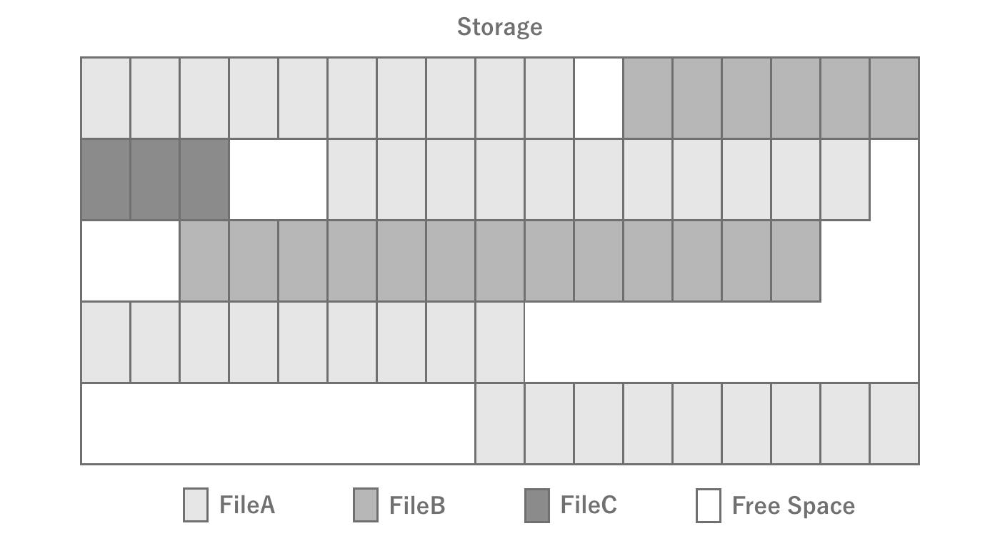
VI: ▲ Figure 2.11 — Phân mảnh Storage. / EN: Figure 2.11 — Storage fragmentation.
"Storage điển hình đạt hiệu năng và hiệu quả không gian bằng cách ghi MỘT file thành các KHỐI (block) KHOẢNG 4 KB. Những khối này KHÔNG NHẤT THIẾT LIÊN TIẾP về vật lý, NGAY CẢ KHI chúng thuộc CÙNG một file.
🧩 Trạng thái file bị PHÂN TÁN về vật lý gọi là PHÂN MẢNH (fragmentation), và thao tác LOẠI BỎ phân mảnh gọi là DEFRAGMENTATION.
📼 Trong khi phân mảnh từng là vấn đề với HDD — vốn là chủ lực của PC — nó GẦN NHƯ BIẾN MẤT với sự xuất hiện của FLASH STORAGE. Tuy KHÔNG cần bận tâm về phân mảnh file trên smartphone, nhưng CẦN Ý THỨC khi xét tới PC."
🇯🇵 Ghi chú thuật ngữ — "RAM và ROM":
"ĐẶC BIỆT ở Nhật Bản, người ta thường viết 'RAM' cho bộ nhớ smartphone và 'ROM' cho storage, nhưng ROM thực ra là Read Only Memory. Đúng như tên gọi, nó ĐÁNG LẼ chỉ đọc và KHÔNG ghi được, nhưng việc dùng thuật ngữ này có vẻ là THÓI QUEN RẤT MẠNH ở Nhật."
"Typical storage achieves performance and space efficiency by writing a SINGLE file in BLOCKS of ABOUT 4 KB. These blocks are NOT NECESSARILY physically CONTIGUOUS, EVEN IF they belong to a SINGLE file.
🧩 The state in which files are PHYSICALLY DISTRIBUTED is called FRAGMENTATION, and the operation to ELIMINATE fragmentation is called DEFRAGMENTATION.
📼 While fragmentation was often a problem with HDDs — the mainstay of PCs — it has ALMOST DISAPPEARED with the advent of FLASH STORAGE. While we do NOT need to be aware of file fragmentation on smartphones, it IS important to be aware of it when considering PCs."
🇯🇵 A terminology note — "RAM and ROM":
"ESPECIALLY in Japan, it is common to write 'RAM' for smartphone memory and 'ROM' for storage, but ROM actually refers to Read Only Memory. As the name suggests, it is SUPPOSED to be read-only and NOT writable, but the use of this term seems to be STRONGLY CUSTOMARY in Japan."
⏱️ Con số PHẢI NHỚ — 100 MB/s và bài toán 10 MB = 100 ms
"Cuối cùng, tốc độ đọc/ghi THỰC TẾ của storage trong smartphone là bao nhiêu?
📊 Tính tới 2022, một ước lượng là KHOẢNG 100 MB/s cho việc ĐỌC.
🧮 NẾU bạn muốn đọc một file 10 MB, sẽ mất 100 ms để đọc TOÀN BỘ file — NGAY CẢ TRONG ĐIỀU KIỆN LÝ TƯỞNG.
💀 Hơn nữa, NẾU NHIỀU FILE NHỎ cần được đọc, TRUY CẬP NGẪU NHIÊN sẽ xảy ra, khiến việc đọc CÒN CHẬM HƠN.
✅ Do đó, LUÔN LUÔN tốt khi Ý THỨC rằng việc đọc một file THỰC SỰ mất một khoảng thời gian LÂU ĐẾN BẤT NGỜ."
🎯 Hai nguyên tắc TỔNG KẾT khi đọc/ghi file:
- "Tốc độ đọc/ghi storage CHẬM ĐẾN BẤT NGỜ — ĐỪNG kỳ vọng cùng tốc độ với bộ nhớ"
- "GIẢM SỐ FILE được đọc/ghi CÙNG LÚC nhiều nhất có thể" — ví dụ: phân tán TIMING, GỘP file thành MỘT file
👉 Con số 100 MB/s này giải thích TRỰC TIẾP vì sao Async Upload Pipeline (Module 4 §27–§32) lại quan trọng đến thế, và vì sao granularity của AssetBundle (§Chương 5) là một quyết định kiến trúc, không phải chi tiết vặt.
"Finally, how fast is the ACTUAL read/write speed of storage in a smartphone?
📊 As of 2022, one estimate is ABOUT 100 MB/s for READING.
🧮 If you want to read a 10 MB file, it will take 100 ms to read the ENTIRE file — EVEN UNDER IDEAL CONDITIONS.
💀 Furthermore, IF MULTIPLE SMALL FILES are to be read, RANDOM ACCESSES will occur, making the reading process EVEN SLOWER.
✅ Thus, it is ALWAYS good to be AWARE that it actually takes a SURPRISINGLY LONG TIME to read a file."
🎯 The two SUMMARY rules for file I/O:
- "Storage read/write speeds are SURPRISINGLY SLOW — do NOT expect the SAME SPEED as memory"
- "REDUCE the NUMBER of files to be read/written AT THE SAME TIME as much as possible" — e.g. DISTRIBUTE TIMING, CONSOLIDATE files into a SINGLE file
👉 This 100 MB/s figure DIRECTLY explains why the Async Upload Pipeline (Module 4 §27–§32) matters so much, and why AssetBundle granularity is an architectural decision rather than a minor detail.
💿 Các loại storage trên PC và smartphone
VI: "Trong thế giới PC, HDD và SSD là loại storage phổ biến nhất. HDD là phương tiện ghi dạng ĐĨA, giống CD, với ĐẦU ĐỌC di chuyển trên đĩa để đọc TỪ TÍNH. Do đó, nó là thiết bị LỚN về cấu trúc và có LATENCY CAO do CHUYỂN ĐỘNG VẬT LÝ. Những năm gần đây, SSD trở nên phổ biến — KHÔNG sinh chuyển động vật lý nên cho hiệu năng TỐC ĐỘ CAO, nhưng mặt khác có GIỚI HẠN SỐ CHU KỲ đọc/ghi (TUỔI THỌ), nên trở nên KHÔNG DÙNG ĐƯỢC khi chu kỳ đọc/ghi xảy ra thường xuyên. Tuy smartphone KHÁC SSD, chúng dùng một loại flash memory gọi là NAND."**
EN: "In the PC world, HDDs and SSDs are the most common types of storage. An HDD is media recorded in the form of DISKS, like CDs, with HEADS that MOVE over the disks to read MAGNETISM. As such, it was structurally LARGE and had HIGH LATENCY due to the PHYSICAL MOVEMENT involved. In recent years, SSDs have become popular — they do NOT generate physical movement and therefore offer HIGH-SPEED performance, but on the other hand they have a LIMIT to the NUMBER of read/write CYCLES (LIFESPAN), so they become unusable when frequent read/write cycles occur. Although smartphones are different from SSDs, they use a type of flash memory called NAND."**
13. 🖼️ Rendering — Góc nhìn CyberAgent¶
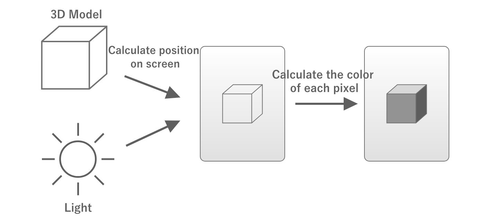
VI: ▲ Figure 2.13 — GPU tính VỊ TRÍ trên màn hình (từ model 3D) rồi tính MÀU của từng pixel (từ đèn). / EN: Figure 2.13 — Calculating Position and Color.
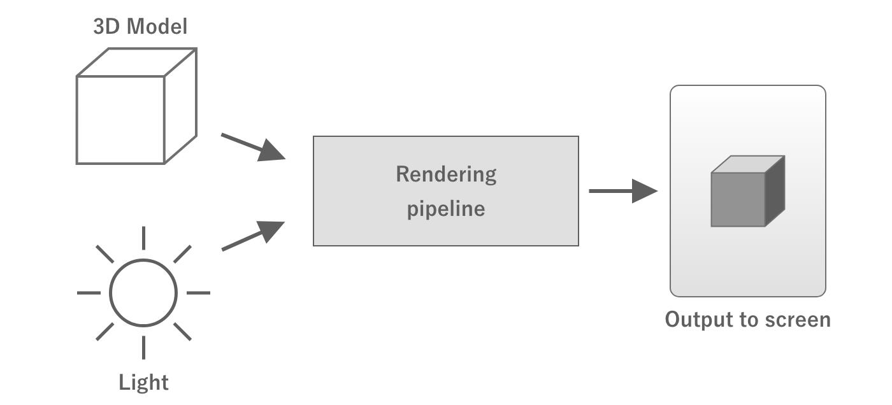
VI: ▲ Figure 2.12 — Rendering Pipeline. / EN: Figure 2.12 — Rendering Pipeline.
"Trong computer graphics, một CHUỖI xử lý được thực hiện trên dữ liệu như TOẠ ĐỘ VERTEX của model 3D và toạ độ, màu của đèn, để cuối cùng XUẤT RA màu cho MỖI PIXEL trên màn hình. Cơ chế xử lý này gọi là RENDERING PIPELINE.
📤 Rendering pipeline BẮT ĐẦU bằng việc GỬI dữ liệu cần thiết TỪ CPU SANG GPU. Dữ liệu này gồm toạ độ vertex của model 3D, toạ độ đèn, thông tin material của object, thông tin camera, v.v.
📐 GPU TỔNG HỢP thông tin này và TÍNH TOÁN object sẽ xuất hiện Ở ĐÂU trên màn hình khi nhìn bằng camera. Quá trình này gọi là BIẾN ĐỔI TOẠ ĐỘ (coordinate transformation).
🎨 Khi vị trí object trên màn hình đã được xác định, bước tiếp theo là XÁC ĐỊNH MÀU của object: "các pixel tương ứng trên màn hình sẽ có màu gì KHI ĐÈN CHIẾU vào model?""
🔑 Hai shader và hai quy luật tải:
"'Object sẽ xuất hiện Ở ĐÂU trên màn hình' được xác định bởi VERTEX SHADER, và 'MÀU của vùng tương ứng mỗi pixel' được tính bởi FRAGMENT SHADER.
⚠️ Những shader này có thể được viết TỰ DO. Do đó, viết XỬ LÝ NẶNG trong vertex shader và fragment shader SẼ LÀM TĂNG tải xử lý.
- Vertex shader xử lý theo SỐ VERTEX của model 3D ⇒ CÀNG NHIỀU vertex, tải CÀNG LỚN
- Fragment shader TĂNG tải khi SỐ PIXEL cần render TĂNG
📌 "Trong rendering pipeline THỰC TẾ, có NHIỀU quá trình khác ngoài vertex shader và fragment shader, nhưng vì mục đích của tài liệu này là hiểu KHÁI NIỆM cần cho performance tuning, chúng tôi chỉ mô tả NGẮN GỌN."
👉 Mô tả ĐẦY ĐỦ 5 giai đoạn pipeline ở Module 4 §1.
"In computer graphics, a SERIES of processes is performed on data such as the VERTEX COORDINATES of a 3D model and the coordinates and colours of lights, to finally OUTPUT the colours for EACH PIXEL on the screen. This processing mechanism is called the RENDERING PIPELINE.
📤 The rendering pipeline STARTS with SENDING the necessary data FROM the CPU TO the GPU. This data includes the coordinates of the 3D model's vertices, the coordinates of the lights, the material information of the objects, the camera information, and so on.
📐 The GPU COMPILES this information and CALCULATES WHERE the object will appear on the screen when viewed with the camera. This process is called COORDINATE TRANSFORMATION.
🎨 Once the position of the object on screen is determined, the next step is to determine the COLOUR: "what colour will the corresponding pixels be WHEN THE LIGHT illuminates the model?""
🔑 Two shaders and two load rules:
"'WHERE on the screen the object will appear' is determined by the VERTEX SHADER, and 'the COLOUR of the area corresponding to each pixel' is calculated by the FRAGMENT SHADER.
⚠️ These shaders can be FREELY WRITTEN. Therefore, writing HEAVY PROCESSING in vertex and fragment shaders WILL INCREASE the processing load.
- The vertex shader processes the NUMBER OF VERTICES of the 3D model ⇒ the MORE vertices, the GREATER the load
- Fragment shaders INCREASE the load as the NUMBER OF PIXELS to be rendered increases
📌 "In the ACTUAL rendering pipeline, there are MANY processes other than vertex and fragment shaders, but since the purpose of this document is to understand the CONCEPTS necessary for performance tuning, we will only give a BRIEF description."
👉 The FULL 5-stage pipeline description is in Module 4 §1.
13.1. 🫧 Render BÁN TRONG SUỐT — nguồn gốc của Overdraw¶
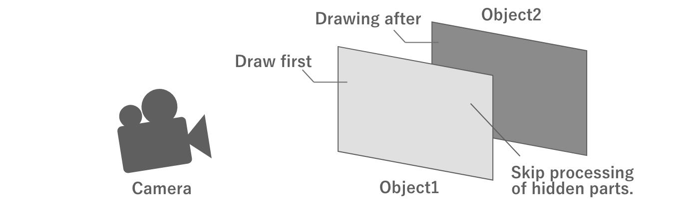
VI: ▲ Figure 2.15 — Render ĐỤC (opaque) — vẽ vật ở TRƯỚC trước, phần bị che của vật sau KHÔNG cần xử lý. / EN: Figure 2.15 — Opaque rendering.
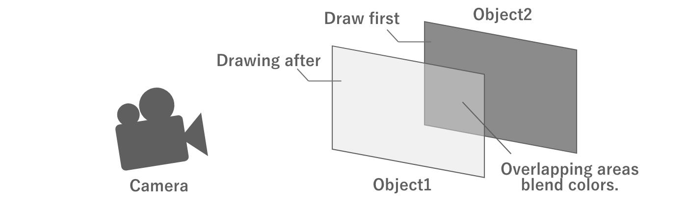
VI: ▲ Figure 2.16 — Render BÁN TRONG SUỐT — vẽ vật ở SAU trước ("Draw first"), vật trước vẽ sau ("Drawing after"), và vùng CHỒNG LẤN phải TRỘN MÀU. / EN: Figure 2.16 — Semi-transparent rendering.
"Trước hết, xét trường hợp CẢ HAI object đều ĐỤC (opaque). Khi đó, object ở TRƯỚC camera được vẽ TRƯỚC. Bằng cách này, khi vẽ object ở SAU, phần KHÔNG NHÌN THẤY do bị object trước che KHÔNG CẦN được xử lý. Nghĩa là thao tác FRAGMENT SHADER có thể được BỎ QUA ở vùng này, qua đó TỐI ƯU tải xử lý.
🫧 Ngược lại, nếu CẢ HAI object là BÁN TRONG SUỐT, sẽ là KHÔNG TỰ NHIÊN nếu object phía sau KHÔNG nhìn xuyên qua được object phía trước. Trong trường hợp này, quá trình vẽ được thực hiện BẮT ĐẦU TỪ object ở SAU (nhìn từ camera), và màu của vùng chồng lấn được TRỘN với màu ĐÃ VẼ.
💀 KHÁC với render đục, render bán trong suốt ĐÒI HỎI phải render các object CHỒNG LẤN. NẾU có HAI object bán trong suốt LẤP ĐẦY TOÀN MÀN HÌNH, TOÀN BỘ MÀN HÌNH sẽ được xử lý HAI LẦN.
🔑 Việc vẽ object bán trong suốt CHỒNG LÊN NHAU gọi là OVERDRAW. QUÁ NHIỀU overdraw có thể đặt TẢI XỬ LÝ NẶNG lên GPU và dẫn tới SUY GIẢM HIỆU NĂNG, nên CẦN đặt QUY ĐỊNH PHÙ HỢP khi vẽ object bán trong suốt."
📌 "Có vài cách hiện thực rendering pipeline. Trong số đó, mô tả ở phần này GIẢ ĐỊNH FORWARD RENDERING. Một số điểm có thể KHÔNG áp dụng được một phần cho phương pháp khác như deferred rendering."
👉 Nối với Module 4 §5.4: đây chính là lý do queue Opaque sắp xếp front-to-back còn Transparent sắp xếp back-to-front.
"First, consider the case where BOTH objects are OPAQUE. In this case, the object IN FRONT of the camera is drawn FIRST. In this way, when drawing the object at the BACK, the part that is NOT VISIBLE because it overlaps the front object does NOT need to be processed. This means the FRAGMENT SHADER operation can be SKIPPED in this area, thus OPTIMIZING the processing load.
🫧 On the other hand, if BOTH objects are SEMI-TRANSPARENT, it would be UNNATURAL if the back object is NOT VISIBLE THROUGH the front object. In this case, the drawing process is performed STARTING WITH the object at the BACK as seen from the camera, and the colour of the overlapping area is BLENDED with the already-drawn colour.
💀 UNLIKE opaque rendering, semi-transparent rendering REQUIRES rendering of OVERLAPPING objects. IF there are TWO semi-transparent objects that FILL THE ENTIRE SCREEN, the ENTIRE SCREEN will be processed TWICE.
🔑 Drawing semi-transparent objects ON TOP OF EACH OTHER is called OVERDRAW. TOO MANY overdraws can put a HEAVY processing load on the GPU and lead to PERFORMANCE DEGRADATION, so it is NECESSARY to set APPROPRIATE REGULATIONS when drawing semi-transparent objects."
📌 "There are several ways to implement the rendering pipeline. Of these, the description in this section ASSUMES FORWARD RENDERING. Some points may NOT be partially applicable to other rendering methods such as deferred rendering."
👉 Connects to Module 4 §5.4: this is exactly why the Opaque queue sorts front-to-back while Transparent sorts back-to-front.
13.2. 📞 Draw call, Set-pass call & Batching — Định nghĩa của CyberAgent¶
"Rendering đòi hỏi tải xử lý KHÔNG CHỈ trên GPU mà CÒN trên CPU.
📞 Khi render một object, CPU GỬI LỆNH cho GPU để vẽ. Cái này gọi là DRAW CALL và được thực thi SỐ LẦN BẰNG SỐ OBJECT cần render.
🔧 Tại thời điểm này, NẾU texture hoặc thông tin khác KHÁC với object đã render ở draw call TRƯỚC, GPU sẽ phải THIẾT LẬP texture hoặc thông tin đó cho GPU. Việc này được làm bằng SET-PASS CALL và là quá trình TƯƠNG ĐỐI NẶNG.
💀 Vì quá trình này được làm trên RENDER THREAD của CPU, nó là TẢI XỬ LÝ TRÊN CPU, và QUÁ NHIỀU có thể ẢNH HƯỞNG hiệu năng."
🔑 Định nghĩa SRP Batcher CHÍNH XÁC NHẤT trong toàn bộ Hub:
"Scriptable Render Pipeline cũng có cơ chế SRP BATCHER. Dùng cơ chế này, các SET-PASS CALL có thể được GỘP thành MỘT lời gọi DUY NHẤT — NGAY CẢ KHI mesh và material KHÁC NHAU — MIỄN LÀ SHADER VARIANT GIỐNG NHAU.
⚠️ Cơ chế này KHÔNG giảm SỐ DRAW CALL, nhưng nó GIẢM SET-PASS CALL — vốn là thứ TỐN KÉM NHẤT để xử lý."
👉 Khớp CHÍNH XÁC với bảng 4 kịch bản ở Module 4 §10.2 — và giải thích vì sao "dùng ÍT shader variant với TỐI THIỂU keyword để cải thiện SRP batching".
"Rendering requires a processing load NOT ONLY on the GPU but ALSO on the CPU.
📞 When rendering an object, the CPU SENDS COMMANDS to the GPU to draw. This is called a DRAW CALL and is executed AS MANY TIMES as the NUMBER OF OBJECTS to be rendered.
🔧 At this time, IF the texture or other information DIFFERS from that of the object rendered in the PREVIOUS draw call, the GPU will SET the texture or other information. This is done using a SET-PASS CALL and is a RELATIVELY HEAVY process.
💀 Since this process is done on the CPU's RENDER THREAD, it is a processing load ON THE CPU, and TOO MUCH of it can AFFECT PERFORMANCE."
🔑 The most PRECISE definition of the SRP Batcher in the whole Hub:
"The Scriptable Render Pipeline also has an SRP BATCHER mechanism. Using this mechanism, SET-PASS CALLS can be COMBINED into a SINGLE call — EVEN IF the mesh and material are DIFFERENT — AS LONG AS the SHADER VARIANTS are the SAME.
⚠️ This mechanism does NOT reduce the NUMBER OF DRAW CALLS, but it DOES reduce SET-PASS CALLS, since these are the ones MOST EXPENSIVE to process."
👉 Matches the four-scenario table in Module 4 §10.2 EXACTLY — and explains why "use FEW shader variants with MINIMAL keywords to improve SRP batching".
14. 🔢 Biểu diễn DỮ LIỆU — Tính TAY dung lượng asset¶
14.1. Bit, Byte và bài toán TEXTURE 4 MB¶
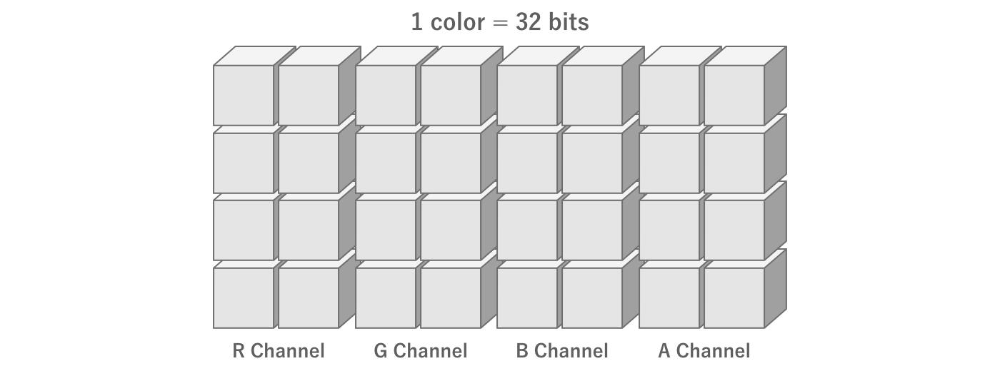
VI: ▲ Figure 2.21 — 1 màu = 32 bit, gồm 4 kênh R · G · B · A, mỗi kênh 8 bit. / EN: Figure 2.21 — Amount of information per color.
Chuỗi suy luận NGUYÊN VĂN của sách — từ 1 bit tới 4 MB:
- "BIT là đơn vị NHỎ NHẤT máy tính biểu diễn được" — 1 chữ số nhị phân, chỉ biểu diễn được thông tin đơn giản như BẬT/TẮT công tắc
- "2 bit ⇒ 4 tổ hợp" — ví dụ: phím nào được bấm — LÊN, XUỐNG, TRÁI, PHẢI
- "8 bit ⇒ 2^8 = 256 cách. 8 bit này được biểu diễn bằng đơn vị 1 BYTE. Nói cách khác, 1 byte là đơn vị biểu diễn được 256 lượng thông tin KHÁC NHAU."
🎨 Màu sắc — True Color:
"Màu được tạo bằng cách kết hợp BỐN thành phần: Red, Green, Blue, và Alpha (độ trong suốt). Đây gọi là CHANNEL.
🔢 Trong phương pháp TRUE COLOR thường dùng, MỖI giá trị RGBA được biểu diễn ở 256 MỨC. 256 mức nghĩa là 8 BIT. Nói cách khác, True Color biểu diễn được bằng 4 channel × 8 bit = 32 BIT thông tin."
🧮 Hai phép tính THỰC TẾ — nguyên văn:
- Ảnh 8×8 pixel True Color: 8 × 8 × 4 channel × 8 bit = 2.048 bit = 256 BYTE
- Ảnh 1.024×1.024 pixel True Color: 1.024 × 1.024 × 4 × 8 = 33.554.432 bit = 4.194.304 byte = 4.096 KB = 4 MEGABYTE
💡 Ghi chú KB vs KiB: "Ở trên, 1 KB được viết là 1.000 byte, nhưng trong một số ngữ cảnh, 1 KB có thể chỉ 1.024 byte. Khi cần phân biệt rõ ràng, 1.000 byte gọi là 1 KILOBYTE (KB) và 1.024 byte gọi là 1 KIBIBYTE (KiB). Tương tự với megabyte."
The book's VERBATIM chain of reasoning — from 1 bit to 4 MB:
- "The BIT is the SMALLEST unit a computer can represent" — a single binary digit, representing only simple information such as a switch ON/OFF
- "2 bits ⇒ 4 combinations" — e.g. which key was pressed: UP, DOWN, LEFT, RIGHT
- "8 bits ⇒ 2^8 = 256 ways. These 8 bits are expressed in the unit of 1 BYTE. In other words, one byte is a unit that can express 256 DIFFERENT amounts of information."
🎨 Colour — True Color:
"Colour is created by combining FOUR elements: Red, Green, Blue, and Alpha (transparency). These are called CHANNELS.
🔢 In the commonly used TRUE COLOR method, EACH RGBA value is expressed in 256 STEPS. 256 steps means 8 BITS. In other words, True Color can be represented with 4 channels × 8 bits = 32 BITS of information."
🧮 Two ACTUAL calculations — verbatim:
- An 8×8 pixel True Color image: 8 × 8 × 4 channels × 8 bits = 2,048 bits = 256 BYTES
- A 1,024×1,024 pixel True Color image: 1,024 × 1,024 × 4 × 8 = 33,554,432 bits = 4,194,304 bytes = 4,096 KB = 4 MEGABYTES
💡 The KB vs KiB note: "Above, 1 KB is written as 1,000 bytes, but in some contexts, 1 KB may refer to 1,024 bytes. When explicitly distinguishing them, 1,000 bytes is called 1 KILOBYTE (KB) and 1,024 bytes is called 1 KIBIBYTE (KiB). The same is true for megabytes."
14.2. 🗜️ Nén ảnh — Bảng TỶ LỆ NÉN ASTC¶
VI: ▲ Figure 2.22 — Nén. / EN: Figure 2.22 — Compression.
"Nén là quá trình GIẢM lượng dữ liệu bằng cách NGHĨ RA cách lưu dữ liệu. Ví dụ, giả sử có NĂM pixel CÙNG MÀU nằm cạnh nhau. Trong trường hợp này, thay vì có NĂM thông tin màu cho từng pixel, TỐT HƠN là có MỘT thông tin màu và thông tin rằng CÓ NĂM PIXEL LIÊN TIẾP — qua đó GIẢM lượng thông tin."
📊 Ví dụ CỤ THỂ với ASTC — con số phải nhớ:
"Áp dụng format ASTC 6×6, một texture 1024×1024 được nén từ 4 MEGABYTE xuống KHOẢNG 0.46 MEGABYTE.
🎯 Nói cách khác, dung lượng được nén xuống DƯỚI MỘT PHẦN TÁM kích thước gốc — và ta có thể nhận ra TẦM QUAN TRỌNG của việc nén."
"Compression is the process of REDUCING the amount of data by DEVISING a way to store it. For example, suppose there are FIVE pixels with the SAME COLOUR next to each other. In this case, rather than having FIVE colour values for each pixel, it is BETTER to have ONE colour value and the information that there are FIVE PIXELS IN A ROW — which REDUCES the amount of information."
📊 The CONCRETE ASTC example — the number to remember:
"Applying the format ASTC 6×6, a 1024×1024 texture is compressed from 4 MEGABYTES to about 0.46 MEGABYTES.
🎯 In other words, the capacity is compressed to LESS THAN ONE-EIGHTH of its original size, and we can recognize the IMPORTANCE of compression."
▼ Table 2.2 — Compression Format and Compression Ratio (nguyên văn)
| Format nén | Tỷ lệ nén / Compression ratio | Texture 1024² (từ 4 MB) |
|---|---|---|
| ASTC RGB(A) 4×4 | 0.25 | ≈ 1.00 MB |
| ASTC RGB(A) 6×6 | 0.1113 | ≈ 0.45 MB |
| ASTC RGB(A) 8×8 | 0.0625 | ≈ 0.25 MB |
| ASTC RGB(A) 10×10 | 0.04 | ≈ 0.16 MB |
| ASTC RGB(A) 12×12 | 0.0278 | ≈ 0.11 MB |
🎮 GPU và FORMAT NÉN — vì sao phải chọn đúng format
VI: "Ảnh được nén theo một quy tắc nhất định thì tất nhiên phải được GIẢI NÉN theo quy tắc đó. Việc giải nén này được làm LÚC RUNTIME. ✅ Để TỐI THIỂU HOÁ tải xử lý này, việc dùng format nén ĐƯỢC GPU HỖ TRỢ là QUAN TRỌNG. ASTC là format nén ĐIỂN HÌNH được GPU trên thiết bị mobile hỗ trợ." 💡 *"Trong Unity, nhiều phương pháp nén khác nhau có thể được chỉ định CHO TỪNG NỀN TẢNG qua texture import settings. Do đó, thông lệ là import ảnh CHƯA NÉN và áp dụng nén theo import settings* để sinh ra texture cuối cùng."
EN: "Images compressed according to a certain rule must, of course, be DECOMPRESSED according to that rule. This decompression is done AT RUNTIME. ✅ To MINIMIZE this processing load, it is IMPORTANT to use a compression format SUPPORTED BY THE GPU. ASTC is a TYPICAL compression format supported by GPUs on mobile devices." 💡 *"In Unity, various compression methods can be specified FOR EACH PLATFORM using texture import settings. Therefore, it is common to import an UNCOMPRESSED image and apply compression according to the import settings* to generate the final texture."
14.3. 🔺 Mesh — Bảng dung lượng MỖI VERTEX¶
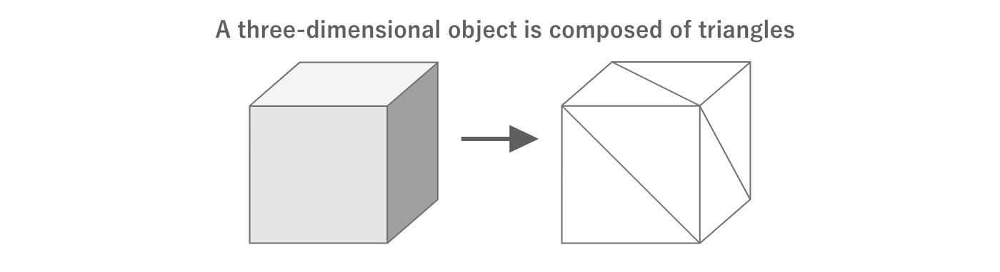
VI: ▲ Figure 2.23 — Tạo hình 3D bằng cách kết hợp TAM GIÁC. / EN: Figure 2.23 — 3D by combining triangles.
VI: ▲ Figure 2.24 — Thông tin Vertex — mọi vertex của một mesh được lưu trong MỘT MẢNG. / EN: Figure 2.24 — Vertex Information.
VI: ▲ Figure 2.25 — Vertex Index — mảng kiểu int chỉ ra vertex NÀO ghép thành tam giác. / EN: Figure 2.25 — Vertex Index.
"Trong 3DCG, hình dạng BA CHIỀU được biểu diễn bằng cách NỐI NHIỀU TAM GIÁC trong không gian 3D. Tập hợp tam giác này gọi là MESH.
📍 Tam giác có thể biểu diễn bằng thông tin TOẠ ĐỘ của BA ĐIỂM trong không gian 3D. Mỗi điểm gọi là VERTEX và toạ độ của chúng gọi là VERTEX COORDINATES. TẤT CẢ thông tin vertex của một mesh được lưu trong MỘT MẢNG DUY NHẤT.
🔢 Vì thông tin vertex được lưu trong MỘT mảng, ta cần THÔNG TIN BỔ SUNG để chỉ ra vertex NÀO sẽ được kết hợp để tạo thành tam giác. Cái này gọi là VERTEX INDEX và được biểu diễn dưới dạng MẢNG kiểu
int.🎨 Cần thêm thông tin để TEXTURE và CHIẾU SÁNG object. Ví dụ, map một texture cần TOẠ ĐỘ UV. Lighting cũng cần thông tin như VERTEX COLOR, NORMAL, và TANGENT."
"In 3DCG, a THREE-DIMENSIONAL shape is expressed by CONNECTING MANY TRIANGLES in 3D space. This collection of triangles is called a MESH.
📍 The triangles can be represented as the COORDINATE information of THREE POINTS in 3D space. Each of these points is called a VERTEX and its coordinates are called VERTEX COORDINATES. ALL vertex information per mesh is stored in a SINGLE ARRAY.
🔢 Since the vertex information is stored in a SINGLE array, we need ADDITIONAL information to indicate WHICH of the vertices will be COMBINED to form a triangle. This is called the VERTEX INDEX and is represented as an ARRAY of type
int.🎨 Additional information is needed for TEXTURING and LIGHTING objects. For example, mapping a texture requires UV COORDINATES. Lighting also requires information such as VERTEX COLOR, NORMALS, and TANGENTS."
▼ Table 2.3 — Vertex Information (nguyên văn — dùng để TÍNH TAY dung lượng mesh)
| Tên / Name | Dung lượng MỖI VERTEX / Amount of information per vertex |
|---|---|
| Vertex coordinates (toạ độ) | float 3 chiều = 12 byte |
| UV coordinates | float 2 chiều = 8 byte |
| Vertex color | float 4 chiều = 16 byte |
| Normal (pháp tuyến) | float 3 chiều = 12 byte |
| Tangent (tiếp tuyến) | float 3 chiều = 12 byte |
| 🧮 TỔNG nếu dùng TẤT CẢ | 60 byte / vertex |
🔑 "QUAN TRỌNG là xác định TRƯỚC số vertex và LOẠI thông tin vertex, vì dữ liệu mesh PHÌNH TO khi số vertex và lượng thông tin xử lý bởi MỘT vertex TĂNG LÊN."
🧮 Ví dụ tính tay: một mesh 10.000 vertex dùng đủ 5 loại thông tin ⇒ 10.000 × 60 byte = 600 KB chỉ riêng vertex data. Bỏ Vertex color và Tangent ⇒ còn 32 byte/vertex = 320 KB — giảm gần một nửa.
👉 Đây là cơ sở SỐ HỌC cho các setting Vertex Compression và Optimize Mesh Data ở Module 3.
🔑 "It is IMPORTANT to determine the NUMBER of vertices and the TYPE of vertex information IN ADVANCE, because mesh data GROWS as the number of vertices and the amount of information handled by a SINGLE vertex INCREASES."
🧮 A worked example: a 10,000-vertex mesh using all five attributes ⇒ 10,000 × 60 bytes = 600 KB of vertex data alone. Drop Vertex color and Tangent ⇒ 32 bytes/vertex = 320 KB — nearly half.
👉 This is the ARITHMETIC basis for the Vertex Compression and Optimize Mesh Data settings in Module 3.
14.4. 🎞️ Keyframe Animation¶
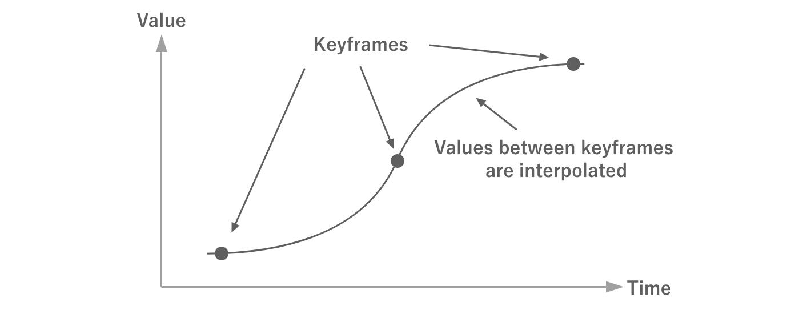
VI: ▲ Figure 2.26 — Keyframe. / EN: Figure 2.26 — Keyframes.
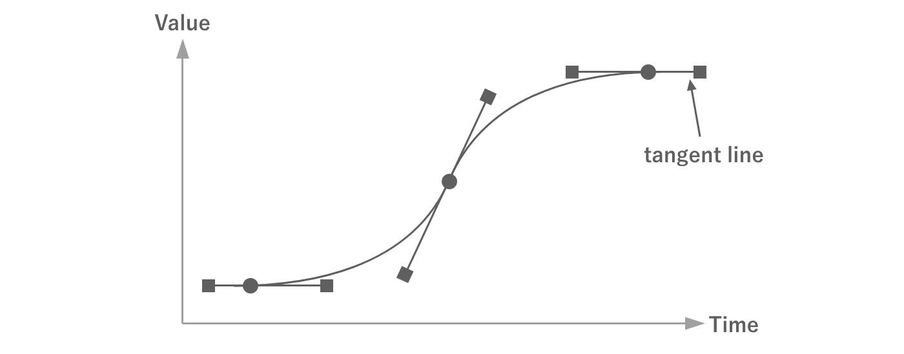
VI: ▲ Figure 2.27 — Tangent và Weight. / EN: Figure 2.27 — Tangents and Weights.
"KEYFRAME ANIMATION là một trong những cách PHỔ BIẾN NHẤT để hiện thực animation. Một keyframe animation gồm một MẢNG dữ liệu biểu diễn GIÁ TRỊ TẠI MỘT THỜI ĐIỂM (keyframe). Giá trị GIỮA các keyframe được lấy bằng NỘI SUY và có thể xử lý như thể chúng là dữ liệu MƯỢT, LIÊN TỤC.
💡 Ngoài THỜI GIAN và GIÁ TRỊ, keyframe còn có thông tin khác như TANGENT và TRỌNG SỐ của chúng. Bằng cách dùng những thứ này trong phép nội suy, animation PHỨC TẠP HƠN có thể đạt được với ÍT DỮ LIỆU HƠN.
⚖️ Trong keyframe animation, CÀNG NHIỀU keyframe thì animation CÀNG PHỨC TẠP được. TUY NHIÊN, LƯỢNG DỮ LIỆU cũng TĂNG theo số keyframe. Vì lý do này, số keyframe nên được đặt PHÙ HỢP.
✅ Có phương pháp NÉN lượng dữ liệu bằng cách GIẢM số keyframe trong khi GIỮ đường cong GIỐNG NHẤT có thể. Trong Unity, keyframe có thể được giảm trong MODEL IMPORT SETTINGS."
"KEYFRAME ANIMATION is one of the MOST COMMON ways to achieve animation. A keyframe animation consists of an ARRAY of data representing VALUES AT A CERTAIN TIME (a keyframe). The values BETWEEN keyframes are obtained by INTERPOLATION and can be treated as if they were SMOOTH, CONTINUOUS data.
💡 In addition to TIME and VALUE, keyframes have other information such as TANGENTS and their WEIGHTS. By using these in the interpolation calculation, MORE COMPLEX animations can be realized with LESS DATA.
⚖️ In keyframe animation, the MORE keyframes there are, the MORE COMPLEX the animation can be. HOWEVER, the AMOUNT OF DATA also INCREASES with the number of keyframes. For this reason, the number of keyframes should be set APPROPRIATELY.
✅ There are methods to COMPRESS the amount of data by REDUCING the number of keyframes while KEEPING the curves AS SIMILAR AS POSSIBLE. In Unity, keyframes can be reduced in the MODEL IMPORT SETTINGS."
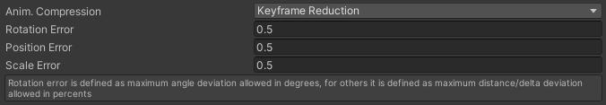
VI: ▲ Figure 2.28 — Import Settings cho animation. / EN: Figure 2.28 — Import Settings.
15. ⚙️ Unity hoạt động BÊN TRONG thế nào¶
15.1. 🔄 C#, IL, IL2CPP và Unity Runtime¶
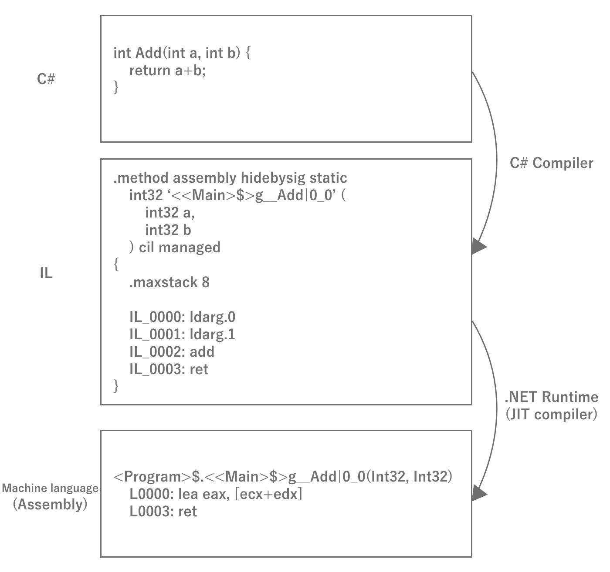
VI: ▲ Figure 2.29 — Quá trình biên dịch C#. / EN: Figure 2.29 — C# Compilation Process.
"C# là ngôn ngữ BIÊN DỊCH. TUY NHIÊN, C# KHÁC với C truyền thống ở chỗ nó KHÔNG phải NGÔN NGỮ MÁY có thể tự biên dịch và thực thi trên máy, mà là NGÔN NGỮ TRUNG GIAN (Intermediate Language — IL).
🔑 Lý do PHẢI đi qua IL một lần: một khi ĐÃ chuyển sang ngôn ngữ máy, binary CHỈ chạy được trên MỘT nền tảng. Với IL, BẤT KỲ nền tảng nào cũng chạy được chỉ bằng cách CHUẨN BỊ MỘT RUNTIME cho nền tảng đó — LOẠI BỎ nhu cầu chuẩn bị binary CHO TỪNG nền tảng.
✅ Do đó, nguyên lý CƠ BẢN của Unity là: IL thu được từ biên dịch mã nguồn được THỰC THI TRÊN RUNTIME của môi trường tương ứng, qua đó đạt được TƯƠNG THÍCH ĐA NỀN TẢNG."
🔧 Vì sao IL2CPP ra đời — bối cảnh LỊCH SỬ:
"Từ khoảng 2015, một số môi trường bắt đầu có vấn đề: HỖ TRỢ 64-BIT cho app chạy trên iOS và Android.
🕰️ Cho tới lúc đó, Unity thực ra dùng MONO — một cài đặt OSS lâu đời của .NET Framework — và Unity TỰ SỬA ĐỔI nó cho mục đích riêng. Nói cách khác, để Unity tương thích 64-bit, CẦN phải làm cho bản Mono đã fork tương thích 64-bit. Tất nhiên việc này ĐÒI HỎI KHỐI LƯỢNG CÔNG VIỆC KHỔNG LỒ.
💡 Nên Unity quyết định VƯỢT QUA thách thức này bằng cách phát triển công nghệ gọi là IL2CPP thay thế.
🔄 IL2CPP, đúng như tên gọi, là "IL to CPP" — công nghệ CHUYỂN mã IL thành mã C++. Vì C++ là ngôn ngữ ĐA DỤNG được hỗ trợ NATIVE trong MỌI môi trường phát triển, nó có thể được biên dịch thành ngôn ngữ máy trong TỪNG toolchain.
🚀 KHÁC với C#, mã C++ được biên dịch thành ngôn ngữ máy LÚC BUILD — LOẠI BỎ nhu cầu chuyển sang ngôn ngữ máy LÚC RUNTIME và CẢI THIỆN HIỆU NĂNG.
⚖️ Tuy mã C++ nhìn chung có nhược điểm là BUILD LÂU, công nghệ IL2CPP đã trở thành NỀN TẢNG của Unity — giải quyết CẢ tương thích 64-bit LẪN hiệu năng TRONG MỘT CÚ."
👉 Bổ sung cho Module 3 về IL2CPP vs Mono — đây là phần "vì sao lịch sử" mà tài liệu Unity không kể.
"C# is a COMPILER language. HOWEVER, C# DIFFERS from traditional C in that it is NOT a MACHINE LANGUAGE that can be compiled and executed by itself on a machine, but rather an INTERMEDIATE LANGUAGE (IL).
🔑 The reason for interrupting with IL once: once converted to machine language, the binary can ONLY be executed on a SINGLE platform. With IL, ANY platform can run simply by PREPARING A RUNTIME for that platform — ELIMINATING the need to prepare binaries FOR EACH platform.
✅ Therefore, the BASIC PRINCIPLE of Unity is that the IL obtained by compiling the source code is EXECUTED ON THE RUNTIME for the respective environment, thereby achieving MULTI-PLATFORM COMPATIBILITY."
🔧 Why IL2CPP exists — the HISTORICAL context:
"Starting around 2015, some environments started having problems: 64-BIT SUPPORT for apps running on iOS and Android.
🕰️ Until then, Unity actually used MONO — a long-standing OSS implementation of the .NET Framework — and Unity ITSELF MODIFIED it for its own use. In other words, for Unity to become 64-bit compatible, it was NECESSARY to make the FORKED Mono 64-bit compatible. Of course, this would require a TREMENDOUS amount of work.
💡 So Unity OVERCAME this challenge by developing a technology called IL2CPP instead.
🔄 IL2CPP, as the name suggests, is "IL to CPP" — a technology that CONVERTS IL code to C++ code. Since C++ is a HIGHLY VERSATILE language NATIVELY SUPPORTED in ANY development environment, it can be compiled into machine language in EACH toolchain.
🚀 UNLIKE C#, C++ code is compiled into machine language AT BUILD TIME — ELIMINATING the need to convert it to machine language AT RUNTIME and IMPROVING PERFORMANCE.
⚖️ Although C++ code generally has the disadvantage of taking a LONG TIME TO BUILD, IL2CPP has become a CORNERSTONE of Unity — solving BOTH 64-bit compatibility AND performance IN ONE FELL SWOOP."
👉 Complements Module 3 on IL2CPP vs Mono — this is the "historical why" that Unity's docs omit.
🔬 ĐỌC mã IL — thói quen của kỹ sư tối ưu
"Mã IL — thứ thường HIẾM KHI được nhìn thấy — RẤT QUAN TRỌNG để Ý THỨC về hiệu năng như cấp phát bộ nhớ và tốc độ thực thi.
📌 Ví dụ, một MẢNG và một LIST sẽ xuất ra MÃ IL KHÁC NHAU cho CÙNG một vòng
foreach— thoạt nhìn thì giống, nhưng MẢNG cho mã hiệu năng TỐT HƠN. Bạn cũng có thể tìm ra những HEAP ALLOCATION ẨN KHÔNG NGỜ TỚI.✅ Để có CẢM GIÁC về tương ứng giữa C# và mã IL, KHUYẾN NGHỊ thường xuyên KIỂM TRA kết quả chuyển đổi IL của mã C# bạn viết.
🛠️ Bạn có thể xem mã IL trong IDE như Visual Studio hay Rider, nhưng bản thân mã IL là ngôn ngữ KHÓ HIỂU vì nó là ngôn ngữ CẤP THẤP kiểu assembly. Trong trường hợp đó, bạn có thể dùng dịch vụ web SharpLab để kiểm tra C# → IL → C# và ngược lại, giúp mã IL DỄ HIỂU HƠN."
"IL code — which is usually RARELY SEEN — is VERY IMPORTANT for being AWARE of performance such as memory allocation and execution speed.
📌 For example, an ARRAY and a LIST will output DIFFERENT IL CODE for the SAME
foreachloop at first glance, with the ARRAY being the BETTER-PERFORMING code. You may also find UNINTENDED HIDDEN HEAP ALLOCATIONS.✅ In order to acquire a SENSE of the correspondence between C# and IL code, it is RECOMMENDED to check the IL conversion results of C# code you have written ON A REGULAR BASIS.
🛠️ You can view IL code in IDEs such as Visual Studio or Rider, but IL code itself is a DIFFICULT language to understand because it is a LOW-LEVEL assembly language. In such cases, you can use the web service SharpLab to check C# → IL → C# and vice versa, making the IL code EASIER to understand."
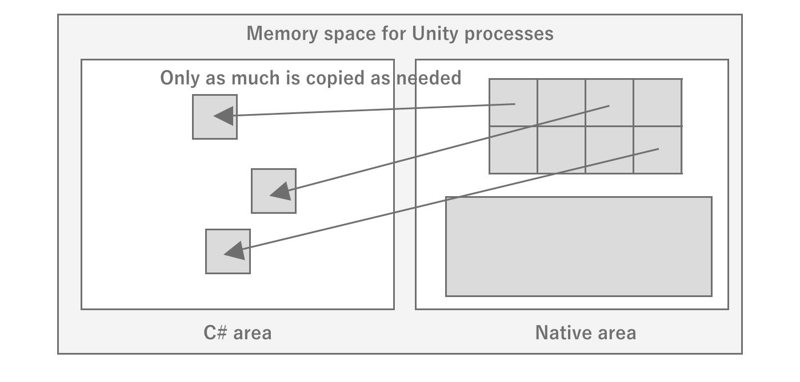
VI: ▲ Figure 2.30 — Hình dung trạng thái bộ nhớ trong Unity — hai vùng: ENGINE (native) và USER CODE (C#). / EN: Figure 2.30 — Image of memory state in Unity.
🌉 HAI THẾ GIỚI: Engine (C++) và User Code (C#) — nguồn gốc của MỌI chi phí ẩn
"Tuy Unity cho phép lập trình game bằng C#, BẢN THÂN runtime của Unity — gọi là ENGINE — THỰC RA KHÔNG chạy bằng C#. Mã nguồn được viết bằng C++, và phần gọi là PLAYER được phân phối ở dạng ĐÃ BUILD SẴN cho từng môi trường.
BA lý do Unity viết engine bằng C++:
- "Để đạt hiệu năng NHANH và TIẾT KIỆM BỘ NHỚ"
- "Để hỗ trợ CÀNG NHIỀU nền tảng CÀNG TỐT"
- "Để BẢO VỆ QUYỀN SỞ HỮU TRÍ TUỆ của engine (hộp đen)"
🌉 Vì mã C# do lập trình viên viết chạy bằng C#, Unity CẦN HAI VÙNG: phần ENGINE chạy NATIVE, và phần USER CODE chạy ở C# runtime. Engine và user code làm việc bằng cách TRAO ĐỔI DỮ LIỆU khi cần trong lúc thực thi.
📖 Ví dụ: khi
GameObject.transformđược gọi từ C#, TOÀN BỘ trạng thái thực thi game (như trạng thái scene) được quản lý BÊN TRONG ENGINE — nên nó TRƯỚC HẾT thực hiện một NATIVE CALL để truy cập dữ liệu bộ nhớ ở vùng native rồi MỚI trả giá trị về C#.🚨 QUAN TRỌNG: BỘ NHỚ KHÔNG ĐƯỢC CHIA SẺ giữa C# và native — nên dữ liệu C# cần được CẤP PHÁT Ở PHÍA C# MỖI LẦN cần dùng. Lời gọi API cũng ĐẮT vì có native call xảy ra, nên kỹ thuật tối ưu CACHE giá trị mà KHÔNG gọi thường xuyên là CẦN THIẾT."
👉 Đây là lời giải thích CĂN NGUYÊN cho MỌI lời khuyên "cache transform", "cache GetComponent", "tránh gọi API Unity trong vòng lặp" xuyên suốt Module 1–4.
💡 "Unity đã CÔNG KHAI phần mã nguồn C# trên GitHub, nên bạn có thể thấy PHẦN LỚN là native call — RẤT HỮU ÍCH."
"Although Unity allows developers to program games in C#, the runtime of Unity ITSELF — called the ENGINE — does NOT actually run in C#. The source is written in C++, and the part called the PLAYER is distributed PRE-BUILT to run in each environment.
THREE reasons Unity writes its engine in C++:
- "To get FAST and MEMORY-SAVING performance"
- "To support AS MANY PLATFORMS as possible"
- "To PROTECT the INTELLECTUAL PROPERTY rights of the engine (black box)"
🌉 Since the C# code written by the developer runs in C#, Unity requires TWO AREAS: the ENGINE part, which runs NATIVELY, and the USER CODE part, which runs at C# runtime. The engine and user code work by EXCHANGING DATA as needed during execution.
📖 For example: when
GameObject.transformis called from C#, ALL game execution state (such as scene state) is managed INSIDE THE ENGINE — so it FIRST makes a NATIVE CALL to access memory data in the native area and THEN returns values to C#.🚨 IMPORTANT: MEMORY IS NOT SHARED between C# and native — so data needed by C# is ALLOCATED ON THE C# SIDE EACH TIME it is needed. API calls are ALSO EXPENSIVE, with native calls occurring, so an optimization technique of CACHING VALUES without frequent calls is NECESSARY."
👉 This is the ROOT explanation for EVERY "cache the transform", "cache GetComponent", "avoid Unity API calls in loops" piece of advice across Modules 1–4.
💡 "Unity has made the C# part of the source code available on GitHub, so you can see that it is MOSTLY NATIVE CALLS — very helpful."
15.2. 📦 Thực thể của ASSET nằm ở NATIVE¶
"Vì Unity engine chạy native, về cơ bản nó KHÔNG có dữ liệu ở phía C#. Điều tương tự đúng với việc xử lý ASSET: asset được LOAD ở VÙNG NATIVE, và CHỈ THAM CHIẾU được trả về C#, hoặc dữ liệu được SAO CHÉP rồi trả về.
Do đó có HAI cách chính để load asset:
- ✅ CHỈ ĐỊNH ĐƯỜNG DẪN để load ở phía Unity engine ⇒ phía C# KHÔNG tiêu tốn bộ nhớ vì nó được load ở vùng native
- 💀 TRUYỀN dữ liệu THÔ như MẢNG BYTE trực tiếp cho engine ⇒ NẾU dữ liệu như mảng byte được load và xử lý TỪ phía C# rồi truyền sang, BỘ NHỚ BỊ TIÊU TỐN GẤP ĐÔI ở CẢ phía C# LẪN native
🕵️ Hệ quả cho việc ĐIỀU TRA rò rỉ:
"Vì thực thể asset nằm ở phía native, ĐỘ KHÓ của việc điều tra load asset TRÙNG LẶP và RÒ RỈ TĂNG LÊN. Bởi vì lập trình viên chủ yếu tập trung profiling và debug ở PHÍA C#.
⚠️ RẤT KHÓ để hiểu trạng thái thực thi phía C# MỘT MÌNH — CẦN phân tích bằng cách ĐỐI CHIẾU với trạng thái thực thi phía ENGINE. Việc profiling vùng native PHỤ THUỘC vào API do Unity cung cấp, điều này GIỚI HẠN các công cụ khả dụng."
"Since the Unity engine runs natively, it basically has NO DATA on the C# side. The same is true for the handling of ASSETS: assets are LOADED in the NATIVE AREA, and ONLY REFERENCES are returned to C#, or data is COPIED and returned.
Therefore, there are TWO main ways to load assets:
- ✅ SPECIFY A PATH to load on the Unity engine side ⇒ the C# side does NOT consume memory because it is loaded in the native area
- 💀 PASS RAW DATA such as BYTE ARRAYS directly to the engine ⇒ IF data such as a byte array is loaded and processed FROM the C# side and passed over, MEMORY IS DOUBLY CONSUMED on BOTH the C# AND native sides
🕵️ The consequence for LEAK investigation:
"Since the asset entity is on the native side, the DIFFICULTY of investigating DUPLICATE asset loads and LEAKS INCREASES. This is because developers mainly focus on profiling and debugging THE C# SIDE.
⚠️ It is DIFFICULT to understand the C# side execution state ALONE — it is NECESSARY to analyze it by COMPARING it with the ENGINE side execution state. Profiling of the native area is DEPENDENT on the API provided by Unity, which LIMITS the tools available."
15.3. 🧵 Threads — Main, Render và Worker¶
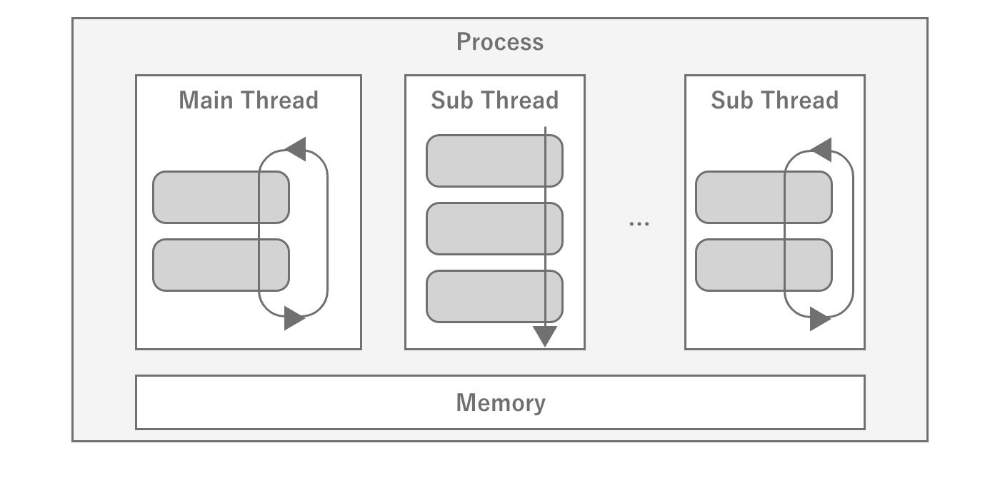
VI: ▲ Figure 2.31 — Sơ đồ THREAD. / EN: Figure 2.31 — Schematic diagram of a thread.
"THREAD là ĐƠN VỊ thực thi chương trình, và việc xử lý nhìn chung tiến hành bằng cách TẠO NHIỀU thread trong MỘT tiến trình.
🔄 Vì MỘT NHÂN CPU CHỈ xử lý được MỘT thread TẠI MỘT THỜI ĐIỂM, nó thực thi chương trình bằng cách CHUYỂN ĐỔI giữa các thread ở TỐC ĐỘ CAO. Cái này gọi là CONTEXT SWITCH. Context switch GÂY OVERHEAD, nên NẾU xảy ra THƯỜNG XUYÊN, hiệu suất xử lý bị GIẢM.
🔑 Vòng lặp game của Unity được THIẾT KẾ để chạy trên MỘT THREAD DUY NHẤT, nên script do người dùng viết về cơ bản SẼ CHẠY TRÊN MAIN THREAD. Ngược lại, việc cố gọi Unity API từ thread KHÁC main thread SẼ GÂY LỖI với HẦU HẾT các API."
📶 WaitFor~ — hiểu đúng những gì bạn thấy trong Profiler:
"Nếu bạn TẠO một thread khác từ main thread, bạn KHÔNG BIẾT khi nào thread đó được thực thi và khi nào hoàn tất. Do đó, phương tiện ĐỒNG BỘ xử lý giữa các thread là dùng CƠ CHẾ TÍN HIỆU (signal).
🔍 Việc CHỜ TÍN HIỆU này CŨNG được dùng BÊN TRONG Unity và có thể QUAN SÁT được lúc profiling — nhưng QUAN TRỌNG là phải lưu ý rằng nó CHỈ ĐANG CHỜ một tiến trình khác, ĐÚNG NHƯ CÁI TÊN
WaitFor~gợi ý."
👉 Đây là chìa khoá đọc Gfx.WaitForPresent / Gfx.WaitForCommands ở Module 1 §3: chúng là THỜI GIAN CHỜ, KHÔNG phải thời gian LÀM VIỆC.
"A THREAD is a UNIT of program execution, and processing generally proceeds by CREATING MULTIPLE threads within a SINGLE process.
🔄 Since a SINGLE CORE of the CPU can ONLY process ONE thread AT A TIME, it executes the program while SWITCHING between threads AT HIGH SPEED. This is called a CONTEXT SWITCH. Context switches incur OVERHEAD, so IF they occur FREQUENTLY, processing efficiency is REDUCED.
🔑 Unity's game loop is DESIGNED to run on a SINGLE THREAD, so scripts written by users will basically RUN ON THE MAIN THREAD. Conversely, attempting to call Unity APIs from a thread OTHER THAN the main thread will result in an ERROR for MOST APIs."
📶 WaitFor~ — reading what you see in the Profiler correctly:
"If you CREATE another thread from the main thread, you do NOT KNOW when that thread will be executed and when it will COMPLETE. Therefore, the means to SYNCHRONIZE processing between threads is to use the SIGNAL mechanism.
🔍 This signal waiting is ALSO used WITHIN Unity and can be OBSERVED during profiling — but it is IMPORTANT to note that it is JUST WAITING for another process, as the name
WaitFor~implies."
👉 This is the key to reading Gfx.WaitForPresent / Gfx.WaitForCommands in Module 1 §3: they are WAITING time, NOT WORKING time.
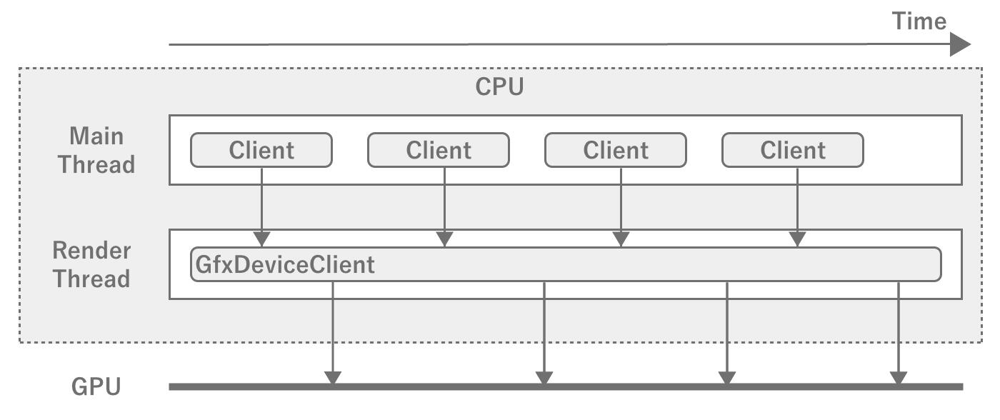
VI: ▲ Figure 2.32 — Main Thread và Render Thread. / EN: Figure 2.32 — Main Thread and Render Thread.
⛓️ Main Thread và Render Thread chạy như PIPELINE — và vì sao CẢ HAI đều giết FPS
"Để đạt tốc độ, một số xử lý SONG SONG được dùng BÊN TRONG game engine. Một trong số đó là RENDER THREAD — đúng như tên gọi, một thread CHUYÊN cho rendering, chịu trách nhiệm GỬI thông tin vẽ frame (đã tính bởi main thread) TỚI GPU dưới dạng GRAPHICS COMMAND.
⛓️ Main thread và render thread chạy NHƯ MỘT PIPELINE — nên render thread BẮT ĐẦU tính frame TIẾP THEO trong khi render thread đang xử lý nó.
💀 TUY NHIÊN, NẾU thời gian xử lý một frame trong RENDER THREAD ngày càng DÀI, nó SẼ KHÔNG THỂ bắt đầu vẽ frame tiếp theo NGAY CẢ KHI phép tính cho frame tiếp theo ĐÃ XONG — và MAIN THREAD SẼ PHẢI CHỜ.
🎯 Trong phát triển game, hãy Ý THỨC rằng FPS SẼ TỤT nếu MAIN THREAD HOẶC RENDER THREAD trở nên QUÁ NẶNG."
"To achieve speed, a number of PARALLEL processes are used INSIDE the game engine. One of them is the RENDER THREAD — as the name suggests, a thread DEDICATED to rendering, responsible for SENDING the frame drawing information (calculated by the main thread) TO THE GPU as GRAPHICS COMMANDS.
⛓️ The main thread and the render thread run LIKE A PIPELINE — so the render thread STARTS computing the NEXT frame while the render thread is processing it.
💀 HOWEVER, IF the time to process a frame in the RENDER THREAD is getting LONGER, it will NOT be able to start drawing the next frame EVEN IF the calculation for the next frame is FINISHED — and the MAIN THREAD WILL HAVE TO WAIT.
🎯 In game development, be AWARE that the FPS WILL DROP if EITHER the main thread OR the render thread becomes TOO HEAVY."
👷 WORKER THREAD và JobSystem:
"Ngoài ra, có NHIỀU tác vụ tính toán có thể thực thi SONG SONG — như physics engine và rung lắc (shaking) — vốn ĐẶC THÙ cho game.
✅ Để thực thi những phép tính đó NGOÀI main thread, Unity có WORKER THREAD. Worker thread thực thi các TÁC VỤ TÍNH TOÁN sinh ra qua JOBSYSTEM.
💪 NẾU bạn có thể GIẢM tải xử lý trên main thread bằng cách dùng JobSystem, BẠN NÊN TÍCH CỰC dùng nó. Tất nhiên, bạn cũng có thể TỰ TẠO thread riêng mà KHÔNG dùng JobSystem."
👷 WORKER THREADS and the JobSystem:
"In addition, there are MANY calculation tasks that CAN be executed in PARALLEL — such as the physics engine and shaking — which are UNIQUE to games.
✅ In order to execute such calculations OUTSIDE the main thread, Unity has WORKER THREADS. Worker threads execute the COMPUTATION TASKS generated through the JOBSYSTEM.
💪 IF you can REDUCE the processing load on the main thread by using JobSystem, you SHOULD ACTIVELY USE IT. Of course, you can also GENERATE YOUR OWN threads without using JobSystem."
15.4. 🔁 Game Loop & thứ tự sự kiện¶
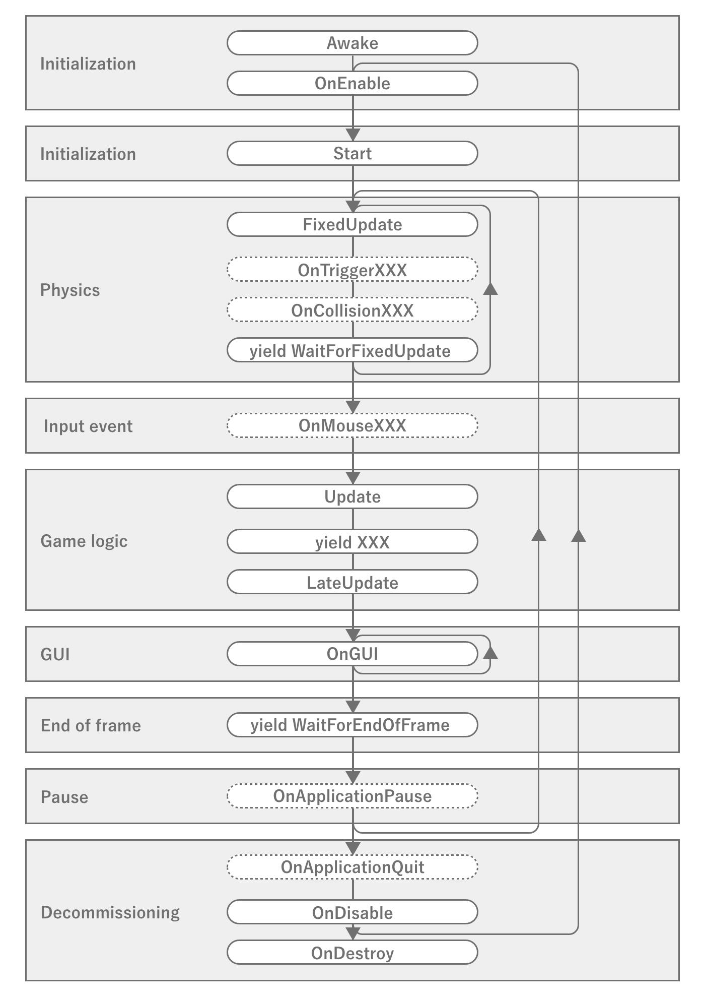
VI: ▲ Figure 2.33 — Thứ tự thực thi SỰ KIỆN trong Unity. / EN: Figure 2.33 — Event Execution Order in Unity.
"Sơ đồ này NGHIÊM NGẶT mà nói là thể hiện THỨ TỰ THỰC THI SỰ KIỆN trong MonoBehaviour — KHÁC với game loop của game engine — nhưng ĐỦ cho game loop mà lập trình viên NÊN BIẾT.
🔑 ĐẶC BIỆT QUAN TRỌNG là các sự kiện:
Awake,OnEnable,Start,FixedUpdate,Update,LateUpdate,OnDisable,OnDestroy— và thời điểm của các COROUTINE.💀 NHẦM LẪN thứ tự thực thi hoặc thời điểm của sự kiện có thể dẫn tới RÒ RỈ BỘ NHỚ KHÔNG NGỜ hoặc TÍNH TOÁN THỪA. Do đó, bạn NÊN Ý THỨC về BẢN CHẤT thời điểm gọi sự kiện quan trọng và thứ tự thực thi TRONG CÙNG một sự kiện."
⚛️ Vì sao PHYSICS chạy ở NHỊP KHÁC — và hai rủi ro:
"Có vấn đề CỤ THỂ với phép tính physics: object có thể XUYÊN QUA nhau mà KHÔNG bị phát hiện va chạm NẾU chúng được thực thi ở CÙNG NHỊP với game loop thông thường. Vì lý do này, các routine physics thường được LẶP ở NHỊP KHÁC với game loop để chúng được thực thi ở TẦN SUẤT CAO.
⚠️ TUY NHIÊN, NẾU các vòng lặp chạy ở nhịp RẤT NHANH, CÓ KHẢ NĂNG chúng XUNG ĐỘT với quá trình cập nhật của game loop chính — nên CẦN đồng bộ các tiến trình ở mức độ nhất định.
🚨 Do đó, hãy Ý THỨC về khả năng:
- Phép tính physics có thể ẢNH HƯỞNG tới quá trình vẽ frame NẾU physics NẶNG HƠN mức cần thiết
- Phép tính physics có thể bị TRỄ và XUYÊN QUA NẾU quá trình vẽ frame NẶNG
👉 Đây là giải thích BỔ SUNG cho "vòng xoáy tử thần Fixed Timestep" ở Module 2.
"This diagram STRICTLY shows the ORDER OF EXECUTION OF EVENTS in MonoBehaviour — which is DIFFERENT from the game engine's game loop — but is SUFFICIENT for the game loop that developers SHOULD KNOW.
🔑 ESPECIALLY IMPORTANT are the events:
Awake,OnEnable,Start,FixedUpdate,Update,LateUpdate,OnDisable,OnDestroy— and the timing of the various COROUTINES.💀 MISTAKING the order of execution or timing of events can lead to UNEXPECTED MEMORY LEAKS or EXTRA CALCULATIONS. Therefore, you SHOULD be AWARE of the NATURE of important event call timing and the order of execution WITHIN the same event."
⚛️ Why PHYSICS runs at a DIFFERENT rate — and the two risks:
"There are SPECIFIC problems with physics calculations: objects SLIPPING THROUGH without being detected as collisions IF they are executed at the SAME INTERVALS as the normal game loop. For this reason, physics routines are usually LOOPED at DIFFERENT INTERVALS from the game loop so that they are executed at a HIGH FREQUENCY.
⚠️ HOWEVER, IF the loops run at a VERY FAST interval, there is a POSSIBILITY that they will CONFLICT with the update process of the main game loop — so it is NECESSARY to synchronize the processes to a certain extent.
🚨 Therefore, be AWARE of the possibility that:
- Physics operations may AFFECT the frame drawing process IF physics is HEAVIER than necessary
- Physics operations may be DELAYED and SLIP THROUGH IF the frame drawing process is HEAVY
👉 This is a COMPLEMENTARY explanation for the "Fixed Timestep death spiral" in Module 2.
15.5. 💀 GameObject — Cái bẫy == null GÂY RÒ RỈ BỘ NHỚ¶
// ▼ List 2.1 — Test tham chiếu SAU KHI destroy (nguyên văn từ sách)
// Post-destruction reference test (verbatim from the book)
public class DestroyTest : UnityEngine.MonoBehaviour
{
private UnityEngine.GameObject _gameObject;
private void Start()
{
_gameObject = new UnityEngine.GameObject("test");
StartCoroutine(DelayedDestroy());
}
System.Collections.IEnumerator DelayedDestroy()
{
// cache WaitForSeconds to reuse
var waitOneSecond = new UnityEngine.WaitForSeconds(1f);
yield return waitOneSecond;
Destroy(_gameObject);
yield return waitOneSecond;
// _gameObject is not null, but result is true
UnityEngine.Debug.Log(_gameObject == null);
}
}
// ▼ List 2.2 — Cài đặt toán tử == của UnityEngine.Object (nguyên văn)
// UnityEngine.Object's == operator implementation (verbatim)
public static bool operator==(Object x, Object y) {
return CompareBaseObjects(x, y);
}
static bool CompareBaseObjects(UnityEngine.Object lhs, UnityEngine.Object rhs)
{
bool lhsNull = ((object)lhs) == null;
bool rhsNull = ((object)rhs) == null;
if (rhsNull && lhsNull) return true;
if (rhsNull) return !IsNativeObjectAlive(lhs);
if (lhsNull) return !IsNativeObjectAlive(rhs);
return lhs.m_InstanceID == rhs.m_InstanceID;
}
static bool IsNativeObjectAlive(UnityEngine.Object o)
{
if (o.GetCachedPtr() != IntPtr.Zero)
return true;
if (o is MonoBehaviour || o is ScriptableObject)
return false;
return DoesObjectWithInstanceIDExist(o.GetInstanceID());
}
☠️ RÒ RỈ BỘ NHỚ do == null trả về true NHƯNG object KHÔNG null
"Trong List 2.1, ta kiểm tra xem GameObject ĐÃ BỊ DESTROY có
nullkhông, vàtrueđược in ra log.🤔 Điều này KHÔNG TỰ NHIÊN với hành vi C# CHUẨN, vì
_gameObjectKHÔNG được gánnull— nên VẪN PHẢI CÒN một tham chiếu tới instance kiểu GameObject.🔬 Nguyên nhân: cơ chế phía C# của Unity KIỂM SOÁT truy cập tới dữ liệu đã bị destroy. Xem List 2.2.
📝 TÓM LẠI: phép so sánh
nullvới một instance đã destroy trả vềtruevì KHI so sánh null, phía NATIVE được KIỂM TRA xem dữ liệu có TỒN TẠI hay không. Điều này khiến instance GameObject KHÔNG null lại HÀNH XỬ NHƯ THỂ nó null MỘT PHẦN.💀 Tuy đặc tính này THOẠT NHÌN có vẻ TIỆN, nó cũng có khía cạnh RẤT PHIỀN TOÁI. Bởi vì
_gameObjectTHỰC RA KHÔNG null — điều này GÂY RA RÒ RỈ BỘ NHỚ.🚨 Rò rỉ cho MỘT
_gameObjectthì HIỂN NHIÊN, NHƯNG NẾU bạn giữ tham chiếu tới một KHỐI DỮ LIỆU KHỔNG LỒ — ví dụ một MASTER DATA — từ bên trong component đó, nó SẼ DẪN TỚI RÒ RỈ BỘ NHỚ KHỔNG LỒ, vì tham chiếu VẪN CÒN ở phía C# và KHÔNG thuộc diện garbage collection.✅ Để tránh điều này, bạn cần áp dụng biện pháp như GÁN
nullcho_gameObject."
"In List 2.1, we check if the DESTROYED GameObject is
null, andtrueis output in the log.🤔 This is UNNATURAL for standard C# behaviour, since
_gameObjectis NOT assignednull— so there SHOULD STILL BE a reference to an instance of type GameObject.🔬 The cause: Unity's C#-side mechanism CONTROLS ACCESS to destroyed data. See List 2.2.
📝 TO SUMMARIZE: a null comparison to a destroyed instance is
truebecause WHEN a null comparison is made, THE NATIVE SIDE IS CHECKED to see if the data EXISTS. This causes instances of GameObject that are NOT null to BEHAVE AS IF they are PARTIALLY null.💀 While this characteristic is CONVENIENT at first glance, it ALSO has a VERY TROUBLING aspect. That is because
_gameObjectis NOT ACTUALLY null — WHICH CAUSES A MEMORY LEAK.🚨 A memory leak for a SINGLE
_gameObjectis OBVIOUS, but IF you hold a reference to a HUGE piece of data — for example a MASTER — from within that component, IT WILL LEAD TO A HUGE MEMORY LEAK, because the reference REMAINS as C# and is NOT SUBJECT to garbage collection.✅ To avoid this, you need to take measures such as ASSIGNING
nullto_gameObject."
15.6. 📦 AssetBundle — Nén, phụ thuộc và TRÙNG LẶP¶
▼ Table 2.4 — Differences between AssetBundle compression settings (nguyên văn)
| Hạng mục | Uncompressed | LZMA (mặc định) | LZ4 (ChunkBasedCompression) |
|---|---|---|---|
| Kích thước file | ❌ CỰC LỚN (extra large) | ✅ CỰC NHỎ (Extra Small) | 🟡 NHỎ (small) |
| Thời gian load | ✅ NHANH (fast) | ❌ CHẬM (slow) | 🏆 KHÁ NHANH (Fairly fast) |
"AssetBundle được nén LZMA THEO MẶC ĐỊNH lúc build. Có thể đổi sang KHÔNG NÉN bằng
BuildAssetBundleOptions.UncompressedAssetBundle, và sang nén LZ4 bằngChunkBasedCompression.❌ UNCOMPRESSED: tốt cho thời gian load NHANH NHẤT, nhưng kích thước file LỚN CHÍ TỬ khiến nó VỀ CƠ BẢN KHÔNG DÙNG ĐƯỢC — để tránh lãng phí dung lượng lưu trữ trên smartphone.
⚠️ LZMA: kích thước file NHỎ NHẤT, nhưng có nhược điểm là GIẢI NÉN CHẬM và KHÔNG giải nén được TỪNG PHẦN do vấn đề THUẬT TOÁN.
🏆 LZ4: setting nén cho CÂN BẰNG TỐT giữa TỐC ĐỘ và KÍCH THƯỚC — và đúng như tên
ChunkBasedCompressiongợi ý, GIẢI NÉN TỪNG PHẦN LÀ KHẢ THI, nên có thể LOAD TỪNG PHẦN mà KHÔNG cần giải nén TOÀN BỘ file như LZMA."
💡 Chiến lược LAI — LZMA để tải, LZ4 để dùng:
"AssetBundle cũng có
Caching.compressionEnabled— thay đổi setting nén khi được CACHE trong cache của máy.✅ Nói cách khác, bằng cách DÙNG LZMA ĐỂ PHÂN PHỐI và CHUYỂN SANG LZ4 TRÊN MÁY, kích thước TẢI VỀ có thể TỐI THIỂU HOÁ và lợi ích của LZ4 vẫn được hưởng khi thực sự dùng.
⚠️ TUY NHIÊN, việc NÉN LẠI ở phía máy nghĩa là CHI PHÍ XỬ LÝ CPU trên máy CAO HƠN TƯƠNG ỨNG, và bộ nhớ cùng dung lượng lưu trữ bị LÃNG PHÍ TẠM THỜI."
"AssetBundle is LZMA-compressed BY DEFAULT at build time. This can be changed to uncompressed via
BuildAssetBundleOptions.UncompressedAssetBundle, and to LZ4 viaChunkBasedCompression.❌ UNCOMPRESSED: good for the FASTEST loading time, but its FATALLY LARGE file size makes it BASICALLY UNUSABLE — to avoid wasting storage space on smartphones.
⚠️ LZMA: the SMALLEST file size, but has the disadvantages of SLOW DECOMPRESSION and NO PARTIAL decompression due to ALGORITHM problems.
🏆 LZ4: a compression setting that offers a GOOD BALANCE between SPEED and FILE SIZE — and as the name
ChunkBasedCompressionsuggests, PARTIAL DECOMPRESSION IS POSSIBLE, so PARTIAL LOADING is possible WITHOUT having to decompress the ENTIRE file as with LZMA."
💡 The HYBRID strategy — LZMA to deliver, LZ4 to use:
"AssetBundle also has
Caching.compressionEnabled, which changes the compression settings when CACHED in the terminal cache.✅ In other words, by USING LZMA FOR DELIVERY and CONVERTING TO LZ4 ON THE TERMINAL, the download size can be MINIMIZED and the benefits of LZ4 can be ENJOYED when actually used.
⚠️ HOWEVER, recompression on the terminal side means the CPU processing cost on the terminal is THAT MUCH HIGHER, and memory and storage space are TEMPORARILY WASTED."
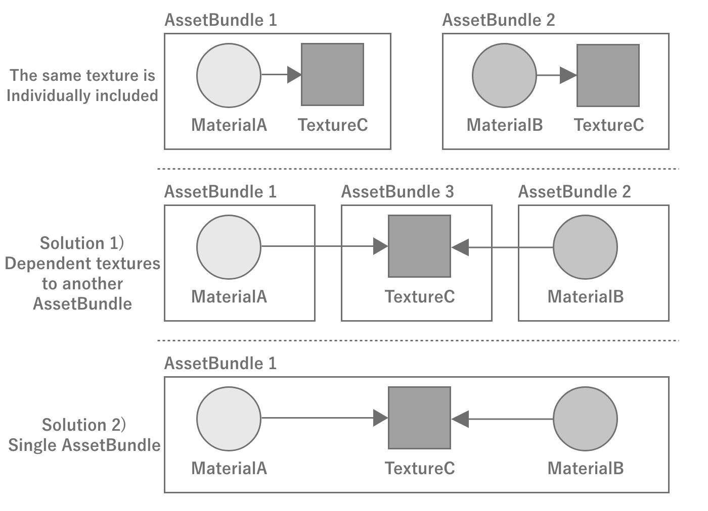
VI: ▲ Figure 2.34 — Ví dụ về PHỤ THUỘC AssetBundle. Trên: "The same texture is individually included" — TextureC bị NHÂN ĐÔI trong AssetBundle 1 và 2. Giải pháp 1: tách TextureC thành AssetBundle 3 riêng. Giải pháp 2: gộp MaterialA + MaterialB + TextureC vào MỘT AssetBundle. / EN: Figure 2.34 — Example with AssetBundle dependencies.
"NẾU một asset PHỤ THUỘC vào nhiều asset, PHẢI CẨN THẬN khi chuyển nó thành AssetBundle.
💀 Ví dụ: NẾU material A và material B cùng phụ thuộc texture C, và bạn tạo AssetBundle cho material A và B MÀ KHÔNG tạo AssetBundle cho texture, thì HAI AssetBundle sinh ra SẼ MỖI CÁI CHỨA MỘT BẢN texture C — dẫn tới TRÙNG LẶP và LÃNG PHÍ.
🚨 Tất nhiên việc này LÃNG PHÍ về DUNG LƯỢNG, nhưng nó CŨNG LÃNG PHÍ BỘ NHỚ vì texture được KHỞI TẠO RIÊNG BIỆT khi HAI material được load vào bộ nhớ.
✅ Để tránh có CÙNG asset trong NHIỀU AssetBundle:
- Texture C nên là MỘT AssetBundle ĐỘC LẬP mà AssetBundle của material PHỤ THUỘC vào
- HOẶC Material A, B và texture C phải được gộp vào MỘT AssetBundle DUY NHẤT
👉 Điều này KHỚP với "Duplicate Asset Investigation" ở §5.3 và toàn bộ phần Addressables ở Module 3.
"IF an asset DEPENDS on multiple assets, CARE MUST BE TAKEN when converting it to an AssetBundle.
💀 For example: IF material A and material B both depend on texture C, and you create an AssetBundle for material A and B WITHOUT creating an AssetBundle for the texture, the TWO generated AssetBundles WILL EACH CONTAIN texture C — resulting in DUPLICATION and WASTE.
🚨 Of course this is WASTEFUL in terms of SPACE, but it ALSO WASTES MEMORY because the textures are INSTANTIATED SEPARATELY when the two materials are loaded into memory.
✅ To avoid having the SAME asset in MULTIPLE AssetBundles:
- Texture C should be a STANDALONE AssetBundle that the material's AssetBundle DEPENDS on
- OR Material A, B and texture C must be made into a SINGLE AssetBundle
👉 This MATCHES the "Duplicate Asset Investigation" in §5.3 and the entire Addressables section in Module 3.
16. 🔤 C# Basics — Managed Heap, GC và struct¶
16.1. 🗑️ Managed Heap & Boehm GC¶
"STACK được QUẢN LÝ BỞI OS, còn HEAP được QUẢN LÝ BỞI CHƯƠNG TRÌNH. Nói cách khác, biết CÁCH bộ nhớ heap được quản lý cho phép cài đặt CÓ Ý THỨC về bộ nhớ.
♻️ C# KHÔNG CÓ quá trình giải phóng bộ nhớ TƯỜNG MINH. Trong môi trường .NET runtime nơi chương trình C# chạy, bộ nhớ heap được QUẢN LÝ TỰ ĐỘNG bởi runtime, và bộ nhớ đã dùng xong được giải phóng vào THỜI ĐIỂM THÍCH HỢP. Vì lý do này, bộ nhớ heap còn được gọi là MANAGED HEAP.
⏳ Bộ nhớ cấp phát trên STACK KHỚP với VÒNG ĐỜI của HÀM, nên nó chỉ cần được giải phóng ở CUỐI hàm. Bộ nhớ cấp phát trên HEAP nhiều khả năng SỐNG LÂU HƠN vòng đời của hàm — nghĩa là bộ nhớ heap được CẦN và DÙNG ở những thời điểm KHÁC NHAU, nên CẦN một cơ chế để dùng heap TỰ ĐỘNG và HIỆU QUẢ.
🔑 Thực ra,
GC.Alloccủa Unity là THUẬT NGỮ RIÊNG chỉ bộ nhớ được cấp phát vào vùng heap được quản lý bởi garbage collection. Do đó, GIẢMGC.Allocsẽ GIẢM lượng heap được cấp phát ĐỘNG."
"The STACK is MANAGED BY THE OS, while the HEAP is MANAGED BY THE PROGRAM. In other words, knowing HOW heap memory is managed allows for MEMORY-AWARE implementation.
♻️ C# does NOT have an EXPLICIT memory release process. In the .NET runtime environment where C# programs execute, heap memory is AUTOMATICALLY MANAGED by the runtime, and memory that has been used up is released AT THE APPROPRIATE TIME. For this reason, heap memory is also referred to as MANAGED HEAP.
⏳ Memory allocated on the STACK MATCHES the LIFETIME of the FUNCTION, so it only needs to be released at the END of the function. Heap memory will MOST LIKELY SURVIVE BEYOND the lifetime of the function — meaning heap memory is NEEDED and USED at DIFFERENT TIMES, so a MECHANISM is needed to use it AUTOMATICALLY and EFFICIENTLY.
🔑 In fact, Unity's
GC.Allocis a PROPRIETARY TERM referring to the memory allocated to the heap memory managed by garbage collection. Therefore, REDUCINGGC.Allocwill REDUCE the amount of heap memory allocated DYNAMICALLY."
🐌 BOEHM GC — hai đặc tính khiến nó CHẬM
"Có nhiều thuật toán garbage collector khác nhau, nhưng Unity dùng thuật toán BOEHM GC theo mặc định. Thuật toán Boehm GC đặc trưng bởi hai tính chất: 'KHÔNG PHÂN THẾ HỆ (non-generational)' và 'KHÔNG NÉN (uncompressible)'.
💀 'KHÔNG PHÂN THẾ HỆ' nghĩa là TOÀN BỘ HEAP phải được QUÉT CÙNG MỘT LÚC cho MỖI lần chạy garbage collection. Điều này LÀM GIẢM hiệu năng vì VÙNG TÌM KIẾM MỞ RỘNG khi heap mở rộng.
🧩 'KHÔNG NÉN' nghĩa là object KHÔNG được DI CHUYỂN trong bộ nhớ để LẤP KHE HỞ giữa các object. Điều này nghĩa là PHÂN MẢNH — thứ tạo ra các khe nhỏ trong bộ nhớ — CÓ XU HƯỚNG XẢY RA và managed heap CÓ XU HƯỚNG MỞ RỘNG.
☠️ MỖI cái đều là quá trình TỐN TÍNH TOÁN và ĐỒNG BỘ, DỪNG MỌI xử lý khác — dẫn tới hiện tượng tụt hiệu năng gọi là "STOP THE WORLD" khi chạy trong lúc chơi game."
👉 Bổ sung cho Module 1 về Boehm collector — đây là mô tả CÔ ĐỌNG NHẤT về HAI đặc tính gây hại.
"There are various algorithms for garbage collectors, but Unity uses the BOEHM GC algorithm by default. The Boehm GC algorithm is characterized by being 'NON-GENERATIONAL' and 'UNCOMPRESSIBLE'.
💀 'NON-GENERATIONAL' means that the ENTIRE HEAP has to be SCANNED AT ONCE for EACH garbage collection run. This REDUCES performance because the SEARCH AREA EXPANDS as the heap expands.
🧩 'UNCOMPRESSED' means that objects are NOT MOVED in memory to CLOSE GAPS between objects. This means that FRAGMENTATION — which creates small gaps in memory — TENDS TO OCCUR and the managed heap TENDS TO EXPAND.
☠️ EACH is a COMPUTATIONALLY EXPENSIVE and SYNCHRONOUS process that STOPS ALL other processing, leading to the so-called "STOP THE WORLD" frame drop when running during a game."
👉 Complements Module 1 on the Boehm collector — this is the MOST CONDENSED description of the two harmful properties.
// Từ Unity 2018.3 — TẠM THỜI tắt GC (dùng RẤT hạn chế!)
// Since Unity 2018.3 — temporarily disable GC (use VERY sparingly!)
GarbageCollector.GCMode = GarbageCollector.Mode.Disabled;
"🚨 NHƯNG tất nhiên, NẾU
GC.Allocxảy ra TRONG thời gian TẮT, vùng heap SẼ MỞ RỘNG và bị tiêu thụ, CUỐI CÙNG dẫn tới CRASH app vì KHÔNG THỂ cấp phát mới.⚠️ Vì mức dùng bộ nhớ DỄ TĂNG, CẦN cài đặt chức năng sao cho
GC.AllocKHÔNG XẢY RA CHÚT NÀO trong thời gian tắt — và CHI PHÍ CÀI ĐẶT cũng CAO, nên việc dùng THỰC TẾ là HẠN CHẾ. (Ví dụ: chỉ tắt ở phần BẮN của game bắn súng)✅ Ngoài ra, INCREMENTAL GC có thể được chọn từ Unity 2019. Với Incremental GC, xử lý garbage collection giờ được thực hiện TRẢI QUA NHIỀU FRAME, và các SPIKE LỚN giờ có thể được GIẢM.
⚖️ TUY NHIÊN, với game PHẢI tối đa hoá sức mạnh trong khi giảm thời gian xử lý mỗi frame, CẦN cài đặt theo hướng TRÁNH việc
GC.Allocxảy ra ngay từ đầu."
"🚨 BUT of course, IF
GC.Allococcurs DURING the period of disabling, the heap space WILL BE EXTENDED and consumed, EVENTUALLY leading to a CRASH of the app as it CANNOT be newly allocated.⚠️ Since memory usage can EASILY INCREASE, it is NECESSARY to implement the function so that
GC.Allocis NOT PERFORMED AT ALL during the disabled period — and the IMPLEMENTATION COST is ALSO HIGH, so ACTUAL USE is LIMITED. (e.g., disabling only the shooting part of a shooting game)✅ In addition, INCREMENTAL GC can be selected starting with Unity 2019. With Incremental GC, garbage collection processing is now performed ACROSS FRAMES, and LARGE SPIKES can now be REDUCED.
⚖️ HOWEVER, for games that MUST maximize power while reducing processing time per frame, it is NECESSARY to implement in a way that AVOIDS
GC.Allococcurring in the first place."
⏰ KHI NÀO nên bắt đầu chống GC.Alloc — lời khuyên về QUY TRÌNH
"Vì lượng code trong game LỚN, NẾU performance tuning được thực hiện SAU KHI cài đặt xong TẤT CẢ chức năng, bạn sẽ THƯỜNG gặp những THIẾT KẾ/CÀI ĐẶT KHÔNG tránh được
GC.Alloc.✅ NẾU bạn LUÔN Ý THỨC về nơi nó xảy ra TỪ giai đoạn THIẾT KẾ BAN ĐẦU trước khi code, CHI PHÍ LÀM LẠI có thể được GIẢM, và hiệu suất phát triển TỔNG THỂ có xu hướng CẢI THIỆN.
🔄 QUY TRÌNH CÀI ĐẶT LÝ TƯỞNG:
- TRƯỚC HẾT tạo PROTOTYPE nhấn mạnh TỐC ĐỘ để kiểm chứng CẢM GIÁC và LÕI của game
- RỒI khi chuyển sang giai đoạn SẢN XUẤT tiếp theo, thiết kế được XEM XÉT LẠI và TÁI CẤU TRÚC MỘT LẦN NỮA
- TRONG giai đoạn tái cấu trúc này, việc LOẠI BỎ
GC.Allocsẽ là LÀNH MẠNH⚖️ Trong một số trường hợp, có thể CẦN GIẢM ĐỘ DỄ ĐỌC của code để tăng tốc — nên NẾU ta bắt đầu từ prototype, TỐC ĐỘ PHÁT TRIỂN cũng SẼ GIẢM."
"Because of the LARGE amount of code in a game, IF performance tuning is performed AFTER the implementation of ALL functions is COMPLETE, you will OFTEN encounter DESIGNS/IMPLEMENTATIONS that do NOT avoid
GC.Alloc.✅ IF you are ALWAYS AWARE of where it occurs FROM the INITIAL DESIGN STAGE before coding, the COST OF REWORK can be REDUCED, and TOTAL development efficiency TENDS TO IMPROVE.
🔄 The IDEAL implementation flow:
- FIRST create a PROTOTYPE with an EMPHASIS ON SPEED to verify the FEEL and the CORE of the game
- THEN, when moving on to the next PRODUCTION phase, the design is REVIEWED and RESTRUCTURED once again
- DURING this restructuring phase, it would be HEALTHY to work on ELIMINATING
GC.Alloc⚖️ In some cases, it may be NECESSARY to REDUCE the READABILITY of the code in order to speed it up, so if we start from the prototype, DEVELOPMENT SPEED will also DECREASE."
16.2. 🧱 struct vs class — Năm khác biệt QUYẾT ĐỊNH¶
| # | Khía cạnh | Reference type (class) |
Value type (struct) |
|---|---|---|---|
| ① | Nơi cấp phát Memory allocation location |
"Cấp phát ở vùng HEAP và THUỘC DIỆN garbage collection" | "Cấp phát ở vùng STACK và KHÔNG thuộc diện garbage collection. Cấp phát và giải phóng value type nhìn chung RẺ HƠN" ⚠️ "TUY NHIÊN, value type và biến STATIC được khai báo trong FIELD của reference type được cấp phát ở vùng HEAP. Lưu ý: biến định nghĩa là struct KHÔNG NHẤT THIẾT được cấp phát vào stack" |
| ② | Mảng Handling arrays |
"Phần tử mảng được sắp xếp theo THAM CHIẾU (địa chỉ) tới thực thể" | 🏆 "Mảng value type được cấp phát INLINE, và phần tử mảng LÀ THỰC THỂ (instance). Do đó, cấp phát/giải phóng mảng value type RẺ HƠN NHIỀU. Hơn nữa, trong HẦU HẾT trường hợp, mảng value type có ưu điểm là TÍNH CỤC BỘ KHÔNG GIAN của tham chiếu được CẢI THIỆN RẤT NHIỀU — khiến XÁC SUẤT TRÚNG CACHE CPU CAO HƠN và xử lý NHANH HƠN" |
| ③ | Sao chép giá trị Value copying |
"Gán reference type sao chép THAM CHIẾU (địa chỉ). Kích thước địa chỉ là 4 byte ở môi trường 32-bit và 8 byte ở 64-bit" ✅ "Chi phí sao chép KHÔNG ĐỔI dù MyClass to tới đâu" |
"Gán value type sao chép TOÀN BỘ GIÁ TRỊ" 💀 "MyStruct CÀNG TO, CHI PHÍ SAO CHÉP CÀNG TĂNG" 🔑 "Do đó, gán reference type LỚN thì RẺ HƠN gán value type lớn hơn kích thước địa chỉ" |
| ④ | Tính bất biến Immutability |
"Thay đổi trên một instance SẼ ẢNH HƯỞNG tới MỌI nơi khác tham chiếu tới CÙNG instance đó" | "BẢN SAO của instance được TẠO khi truyền theo giá trị. Sửa một instance value type KHÔNG ảnh hưởng tới bản sao của nó" 🚨 "Bản sao KHÔNG được tạo TƯỜNG MINH bởi lập trình viên, mà NGẦM ĐỊNH khi tham số được truyền hoặc giá trị trả về được trả. … ✅ KHUYẾN NGHỊ value type nên BẤT BIẾN (immutable), vì value type CÓ THỂ THAY ĐỔI sẽ GÂY NHẦM LẪN cho nhiều lập trình viên" |
| ⑤ | Boxing | "Khi reference type được cast, KHÔNG có boxing nào xảy ra" | 💀 "BOXING là quá trình chuyển value type sang kiểu object hoặc sang kiểu INTERFACE. Một 'box' là một object được CẤP PHÁT TRÊN HEAP và THUỘC DIỆN garbage collection. Do đó, DƯ THỪA boxing và unboxing SẼ DẪN TỚI GC.Alloc" |
// ▼ List 2.7 — Value type cast sang object thì bị BOXED (nguyên văn)
int num = 0;
object obj = num; // Boxed
num = (int) obj; // Unboxing
// ▼ List 2.8 — Ví dụ bị BOXED do CAST NGẦM ĐỊNH — cái bẫy thật sự
private void HogeMethod(object data){ ... }
...
int num = 0;
HogeMethod(num); // ⚠️ num bị BOXED ngầm định ⇒ GC.Alloc
🔁 ref — hiểu lầm PHỔ BIẾN về 'reference type luôn truyền theo tham chiếu'
"Một áp dụng SAI PHỔ BIẾN là 'reference type LUÔN được truyền theo THAM CHIẾU' — nhưng như đã nói, việc SAO CHÉP THAM CHIẾU (địa chỉ) mới là CƠ BẢN, và TRUYỀN THEO THAM CHIẾU chỉ xảy ra khi dùng bổ từ tham số
ref/in/out.🔑 Vì tham chiếu (địa chỉ) được SAO CHÉP trong việc truyền giá trị của reference type, việc THAY THẾ một instance KHÔNG ảnh hưởng tới instance GỐC — nhưng TRUYỀN THEO THAM CHIẾU CHO PHÉP THAY THẾ instance gốc."
"A common MISAPPLICATION is that 'reference types are ALWAYS passed BY REFERENCE' — but as mentioned, REFERENCE (address) COPYING is FUNDAMENTAL, and PASS-BY-REFERENCE is done when the
ref/in/outparameter modifier is used.🔑 Since the reference (address) was COPIED in reference-type value passing, REPLACING an instance does NOT affect the ORIGINAL instance — but PASS-BY-REFERENCE ALLOWS REPLACING the original instance."
// KHÔNG ref — thay thế instance KHÔNG ảnh hưởng bên ngoài
private void HogeMethod(MyClass myClass) { myClass = new MyClass(); } // vô hiệu
// CÓ ref — instance GỐC bị GHI ĐÈ
private void HogeMethod(ref MyClass myClass)
{
// The original instance passed by argument is rewritten.
myClass = new MyClass();
}
17. 📐 Thuật toán & Độ phức tạp tính toán¶
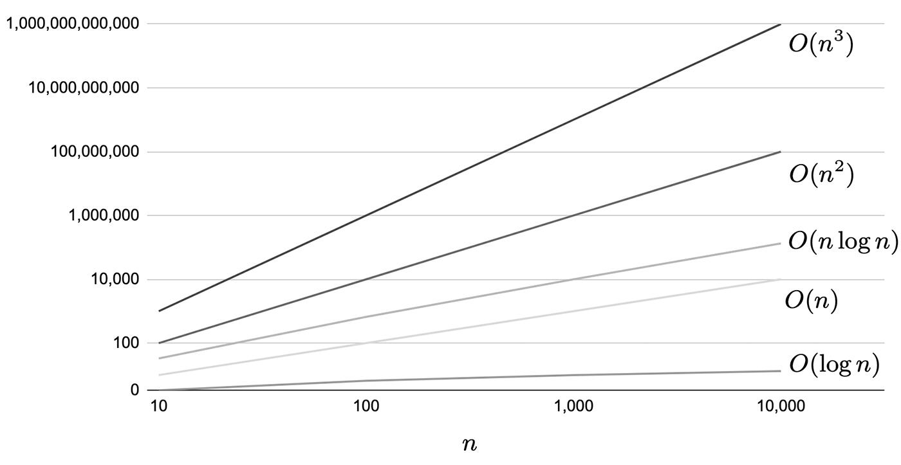
VI: ▲ Figure 2.36 — so sánh O(log n) · O(n) · O(n log n) · O(n²) · O(n³) trên trục logarit; khoảng cách giữa các đường GIÃN RẤT NHANH khi n tăng. / EN: Figure 2.36 — Comparison of performance differences in logarithmic representation.
"ĐỘ PHỨC TẠP TÍNH TOÁN là thước đo HIỆU SUẤT TÍNH TOÁN của một thuật toán, và có thể chia nhỏ thành TIME COMPLEXITY (đo hiệu suất thời gian) và AREA COMPLEXITY (đo hiệu suất bộ nhớ). Bậc của độ phức tạp được ký hiệu bằng O-notation (ký hiệu Landau).
📊 Thứ tự so sánh hiệu năng: O(1) < O(log n) < O(n) < O(n log n) < O(n²) < O(n³)"
"COMPUTATIONAL COMPLEXITY is a measure of an algorithm's COMPUTATIONAL EFFICIENCY, and can be subdivided into TIME COMPLEXITY (time efficiency) and AREA COMPLEXITY (memory efficiency). The order is denoted by O-notation (Landau's symbol).
📊 Performance comparison order: O(1) < O(log n) < O(n) < O(n log n) < O(n²) < O(n³)"
▼ Table 2.5 — Số dữ liệu và SỐ BƯỚC TÍNH TOÁN (nguyên văn)
| n | O(log n) | O(n) | O(n log n) | O(n²) | O(n³) |
|---|---|---|---|---|---|
| 10 | 3 | 10 | 33 | 100 | 1.000 |
| 100 | 7 | 100 | 664 | 10.000 | 1.000.000 |
| 10.000 | 13 | 10.000 | 132.877 | 100.000.000 | — |
| 1.000.000 | 10 | 1.000 | 9.966 | 1.000.000 | 1.000.000.000 |
🌟 Con số ẤN TƯỢNG NHẤT của bảng — sức mạnh của O(log n):
"Ví dụ, với O(log n) có 13 BƯỚC tính toán NGAY CẢ KHI có 10.000 mẫu, và 23 BƯỚC NGAY CẢ KHI có 10 TRIỆU mẫu — cho thấy nó CỰC KỲ ƯU VIỆT."
⚠️ HAI cảnh báo QUAN TRỌNG khi dùng độ phức tạp:
- "Trong khái niệm độ phức tạp, CHỈ số hạng có BẬC LỚN NHẤT được dùng." Nếu tạo một method chạy cả ba method ví dụ, ta được bậc tối đa O(n²) (chứ không phải O(n² + n + 1))
- 🚨 "Cần lưu ý rằng khối lượng tính toán CHỈ là KIM CHỈ NAM khi SỐ DỮ LIỆU ĐỦ LỚN, và KHÔNG NHẤT THIẾT liên hệ với THỜI GIAN ĐO THỰC TẾ. O(n⁵) có thể KHÔNG PHẢI vấn đề khi số dữ liệu NHỎ, kể cả khi nó TRÔNG có vẻ khối lượng tính toán KHỔNG LỒ.
✅ "Do đó, KHUYẾN NGHỊ dùng khối lượng tính toán làm THAM CHIẾU và ĐO thời gian xử lý để xem nó có nằm trong phạm vi HỢP LÝ hay không — CÓ TÍNH TỚI số dữ liệu MỖI LẦN."
🌟 The most STRIKING number in the table — the power of O(log n):
"For example, O(log n) has 13 computation steps EVEN IF there are 10,000 samples, and 23 computation steps EVEN IF there are 10 MILLION samples — which shows that it is EXTREMELY SUPERIOR."
⚠️ TWO IMPORTANT warnings about using complexity:
- "In the concept of computational complexity, ONLY the term with the LARGEST ORDER is used." If you create a method that executes all three example methods once, you get the maximum order O(n²) (not O(n² + n + 1))
- 🚨 "It should also be noted that the calculation volume is ONLY a GUIDELINE when the number of data is SUFFICIENTLY LARGE, and is NOT NECESSARILY LINKED to the ACTUAL MEASUREMENT TIME. O(n⁵) may NOT be a problem when the number of data is SMALL, EVEN IF it LOOKS like a HUGE calculation volume.
✅ "Therefore, it is RECOMMENDED to use the calculation volume as a REFERENCE and MEASURE the processing time to see if it FITS within a REASONABLE RANGE, taking the number of data into consideration EACH TIME."
17.1. 📚 Năm collection C# — Chọn cái nào, KHI NÀO¶
List<T> — cấu trúc MẢNG
| Method | Độ phức tạp |
|---|---|
Add |
O(1) — ⚠️ "nhưng NẾU VƯỢT capacity thì O(n)" |
Insert |
O(n) |
IndexOf / Contains |
O(n) |
RemoveAt |
O(n) |
Sort |
O(n log n) |
✅ "HIỆU QUẢ khi THỨ TỰ dữ liệu quan trọng, hoặc khi dữ liệu THƯỜNG được lấy/cập nhật theo INDEX." ❌ "Ngược lại, NẾU có NHIỀU thao tác CHÈN và XOÁ phần tử, TỐT NHẤT là TRÁNH dùng List<T> vì nó đòi hỏi KHỐI LƯỢNG TÍNH TOÁN LỚN do phải SAO CHÉP sau các index đã bị thao tác."
🚨 "Ngoài ra, khi capacity bị vượt bởi Add, bộ nhớ cấp cho mảng được MỞ RỘNG. Khi mở rộng, GẤP ĐÔI Capacity hiện tại được cấp phát — nên KHUYẾN NGHỊ dùng Add ở O(1) bằng cách đặt GIÁ TRỊ KHỞI TẠO PHÙ HỢP để nó dùng được mà KHÔNG gây mở rộng."
✅ "EFFECTIVE when the ORDER of data is IMPORTANT, or when data is OFTEN retrieved or updated by INDEX." ❌ "On the other hand, IF there are MANY INSERTIONS and DELETIONS of elements, it is BEST to AVOID List<T> because it requires a LARGE amount of computation due to the need to COPY after the manipulated indexes."
🚨 "In addition, when the capacity is EXCEEDED by Add, the memory allocated for the array is EXTENDED. When memory is extended, TWICE the current Capacity is allocated — so it is RECOMMENDED to use Add at O(1) with APPROPRIATE INITIAL VALUES so that it can be used WITHOUT causing expansion."
LinkedList<T> — DANH SÁCH LIÊN KẾT hai chiều
| Method | Độ phức tạp |
|---|---|
AddFirst / AddLast |
🏆 O(1) |
AddAfter / AddBefore |
🏆 O(1) |
Remove / RemoveFirst / RemoveLast |
🏆 O(1) |
Contains |
O(n) |
✅ "MẠNH ở việc THÊM và XOÁ phần tử, nhưng KHÔNG GIỎI truy cập phần tử CỤ THỂ. PHÙ HỢP khi bạn muốn tạo một tiến trình GIỮ TẠM dữ liệu cần THÊM/XOÁ THƯỜNG XUYÊN." / "Strong features for ADDING and DELETING, but NOT GOOD at accessing SPECIFIC elements."
Queue<T> — FIFO, dùng MẢNG VÒNG · Stack<T> — LIFO, dùng MẢNG
| Method | Queue<T> |
Stack<T> |
|---|---|---|
| Thêm | Enqueue — O(1) (vượt capacity ⇒ O(n)) |
Push — O(1) (vượt capacity ⇒ O(n)) |
| Lấy ra | Dequeue — O(1) |
Pop — O(1) |
| Xem đỉnh | Peek — O(1) |
Peek — O(1) |
Contains |
O(n) | O(n) |
TrimExcess |
O(n) | O(n) |
📥 Queue: "dùng để cài đặt HÀNG ĐỢI, ví dụ để QUẢN LÝ THAO TÁC INPUT." ⚠️ "Enqueue và Dequeue giữ hiệu năng CAO, nhưng chúng KHÔNG PHÙ HỢP cho thao tác như DUYỆT (traversal)."
📚 Stack: "Cách dùng PHỔ BIẾN là khi cài đặt CHUYỂN MÀN HÌNH — thông tin scene đích được lưu bằng Push, và khi nút BACK được bấm, lấy lại thông tin scene bằng Pop."
🚨 "Với CẢ HAI: hiệu năng CAO đạt được bằng cách CHỈ dùng Push/Pop (hoặc Enqueue/Dequeue). CẨN THẬN ĐỪNG TÌM KIẾM phần tử, và CẨN THẬN với việc TĂNG/GIẢM capacity. TrimExcess là method để GIẢM capacity, nhưng từ góc nhìn tuning, TỐT HƠN là ĐỪNG ĐỂ capacity tăng/giảm NGAY TỪ ĐẦU."
📥 Queue: "used to implement QUEUES, for example to MANAGE INPUT OPERATIONS." ⚠️ "Enqueue and Dequeue keep HIGH PERFORMANCE, but they are NOT SUITABLE for operations such as TRAVERSAL."
📚 Stack: "A common use is when implementing SCREEN TRANSITIONS — the destination scene info is stored with Push, and when the BACK button is pressed, retrieving it with Pop."
🚨 "For BOTH: high performance is obtained by using ONLY Push/Pop (or Enqueue/Dequeue). Be CAREFUL not to SEARCH for elements, and be careful about INCREASING/DECREASING capacity. TrimExcess reduces capacity, but from a tuning perspective it is BETTER that capacity is NOT increased or decreased IN THE FIRST PLACE."
Dictionary<TKey, TValue> — BẢNG BĂM (hash table)
| Method | Độ phức tạp |
|---|---|
Add |
O(1) (vượt capacity ⇒ O(n)) |
TryGetValue |
🏆 O(1) |
ContainsKey |
🏆 O(1) |
ContainsValue |
⚠️ O(n) |
⚖️ "CÓ NHƯỢC ĐIỂM là TIÊU TỐN NHIỀU BỘ NHỚ HƠN, nhưng TỐC ĐỘ TRA CỨU là O(1) và NHANH HƠN. RẤT HỮU ÍCH cho trường hợp KHÔNG cần liệt kê hay duyệt, và nhấn mạnh vào việc THAM CHIẾU GIÁ TRỊ. ✅ Cũng nhớ ĐẶT TRƯỚC capacity." / "Has the disadvantage of CONSUMING MORE MEMORY, but the LOOKUP speed is O(1) and FASTER. … Be sure to PRE-SET the capacity."
🧠 MEMOIZATION — khi KHÔNG THỂ giảm độ phức tạp
VI: "Giả sử bạn có một method (ComplexMethod) với độ phức tạp RẤT CAO đòi hỏi tính toán phức tạp. Tuy nhiên, có lúc KHÔNG THỂ giảm được khối lượng tính toán. Trong trường hợp đó, có thể dùng kỹ thuật gọi là MEMOIZATION. Giả sử ComplexMethod trả về kết quả tương ứng DUY NHẤT khi được cho một tham số. LẦN ĐẦU tham số được truyền, tiến trình phức tạp được chạy qua. SAU khi tính, tham số và kết quả được đưa vào Dictionary<TKey, TValue> và CACHE lại. Lần THỨ HAI trở đi, kết quả được lấy TỪ CACHE."
EN: "Suppose you have a method (ComplexMethod) with a VERY HIGH computational complexity. However, there are times when it is NOT POSSIBLE to reduce the amount of calculation. In such cases, a technique called MEMOIZATION can be used. Assuming ComplexMethod uniquely returns the corresponding result for a given argument: the FIRST time the argument is passed, the complex process runs. AFTER the calculation, the arguments and the result are put into a Dictionary<TKey, TValue> and CACHED. From the second time on, the result comes FROM the cache."
👉 Đây chính là kỹ thuật "cache the results of expensive functions" ở Module 1, được đặt tên chính thức.
🎯 "Tất nhiên, CÓ THỂ cài đặt cùng một tiến trình CHỈ bằng List<T> (mảng), nhưng bằng cách CHỌN collection class PHÙ HỢP HƠN, có thể TỐI ƯU khối lượng tính toán. Chỉ cần cài đặt method với Ý THỨC về khối lượng tính toán là đã TRÁNH được xử lý nặng."
🎯 "Of course, it is POSSIBLE to implement the same process using ONLY List<T> (an array), but by SELECTING a MORE SUITABLE collection class, it is possible to OPTIMIZE the amount of computation. By SIMPLY implementing methods with an AWARENESS of the amount of computation, HEAVY PROCESSING can be AVOIDED."
PHẦN C — CÔNG CỤ PROFILING & THỰC HÀNH TUNING (Chương 3–8)¶
🎯 Chương 3 mở đầu bằng một câu định vị toàn bộ Phần C:
"Công cụ profiling được dùng để THU THẬP và PHÂN TÍCH dữ liệu, XÁC ĐỊNH bottleneck, và QUYẾT ĐỊNH các chỉ số hiệu năng. Có vài công cụ như vậy do riêng engine Unity cung cấp. Các công cụ khác gồm công cụ native như Xcode và Android Studio, và công cụ chuyên GPU như RenderDoc. Do đó, điều QUAN TRỌNG là HIỂU đặc tính của TỪNG công cụ và CHỌN cho phù hợp."
🎯 Chapter 3 opens with the sentence that frames all of Part C:
"Profiling tools are used to collect and analyze data, identify bottlenecks, and determine performance metrics. There are several of these tools provided by the Unity engine alone. Other tools include native-compliant tools such as Xcode and Android Studio, and GPU-specific tools such as RenderDoc. Therefore, it is important to understand the features of each tool and choose appropriately."
18. 🧭 Nguyên tắc ĐO — Editor hay Thiết bị THẬT?¶
🔑 Unity chạy được cả trên editor lẫn device, nên phải hiểu đặc tính của TỪNG môi trường trước khi tin vào con số.
✅ "Ưu điểm LỚN NHẤT của việc dùng editor là nó cho phép thử–sai NHANH."
⚠️ "Tuy nhiên, vì tải xử lý của BẢN THÂN editor và vùng nhớ mà editor dùng CŨNG bị đo, nên sẽ có RẤT NHIỀU NHIỄU trong kết quả đo. Ngoài ra, vì cấu hình HOÀN TOÀN KHÁC so với thiết bị thật, nên KHÓ xác định bottleneck và kết quả có thể KHÁC."
🔑 Unity runs on both editor and device, so you must know each environment's characteristics before trusting the numbers.
✅ "The greatest advantage of using the editor is that it allows for quick trial and error."
⚠️ "However, since the processing load of the editor itself and the memory area used by the editor are ALSO measured, there will be a lot of NOISE in the measurement results. Also, since the specifications are COMPLETELY DIFFERENT from those of the actual equipment, it is difficult to identify bottlenecks and the results may differ."
✅ QUY TRÌNH 3 BƯỚC do CyberAgent khuyến nghị
1️⃣ XÁC NHẬN hiện tượng TRÊN THIẾT BỊ THẬT trước.
2️⃣ XÁC NHẬN vấn đề TÁI HIỆN được trong editor, rồi SỬA trong editor (rẻ hơn nhiều).
3️⃣ Cuối cùng, LUÔN kiểm tra bản sửa TRÊN THIẾT BỊ THẬT.
🚨 "Đa số trường hợp vấn đề tái hiện ở CẢ HAI môi trường, nhưng trong vài trường hợp HIẾM, nó chỉ tái hiện ở MỘT trong hai."
1️⃣ First confirm the phenomenon on the ACTUAL DEVICE.
2️⃣ Next, confirm the problem reproduces in the editor, then correct it in the editor (much cheaper).
3️⃣ Of course, be sure to check the correction on the actual device at the end.
🚨 "Most of the time the problem is reproduced in both environments, but in RARE cases it may only be reproduced in ONE of the environments."
19. 📊 Unity Profiler — Từ kết nối tới đọc số¶
👉 Xem thêm Module 1 — Ultimate Guide to Profiling để nắm phần cơ bản; mục này bổ sung góc nhìn thực chiến của CyberAgent.
19.1. Danh sách Profiler Module — 14 module ở Unity 2020¶
"Unity Profiler là công cụ profiling tích hợp SẴN trong Unity Editor. Công cụ này thu thập thông tin theo TỪNG FRAME. Có rất nhiều mục đo được, mỗi mục gọi là một profiler module, và ở bản Unity 2020 có 14 module. Module này vẫn đang được cập nhật, và ở Unity 2021.2 đã thêm module mới về Asset và về File I/O."
🚨 Bẫy quan trọng: "Các module này có thể được cấu hình HIỂN THỊ hay KHÔNG trên profiler. Tuy nhiên, module KHÔNG hiển thị thì KHÔNG được đo. Ngược lại, nếu bật HẾT tất cả, editor sẽ bị QUÁ TẢI."
"The Unity Profiler is a profiling tool built into the Unity Editor. This tool can collect information on a frame-by-frame basis. There is a wide range of items that can be measured, each called a profiler module, and in the Unity 2020 version there are 14 of them. This module is still being updated, and in Unity 2021.2, a new module on Asset and a new module on File I/O have been added."
🚨 Key trap: "These modules can be configured to be displayed or not on the profiler. However, modules that are not displayed are not measured. Conversely, if all of them are displayed, the editor will be overloaded."
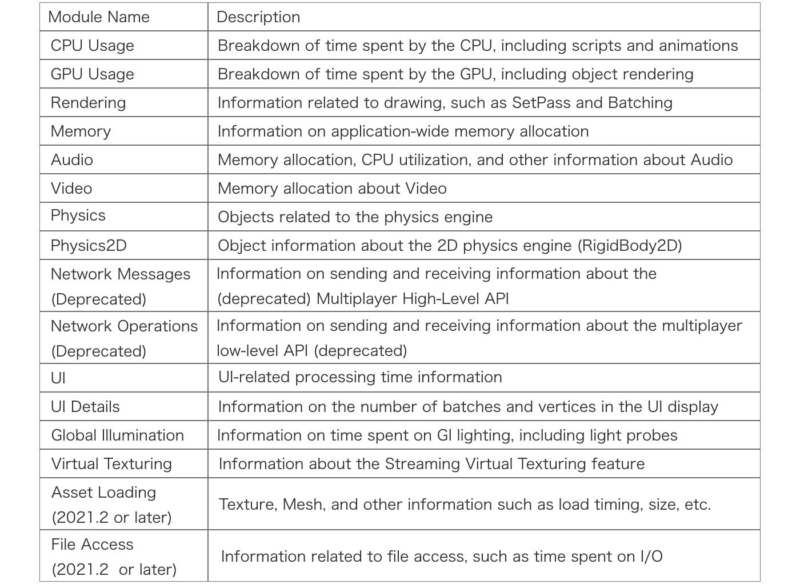
VI: Bảng toàn bộ Profiler Module — CPU Usage, GPU Usage, Rendering (SetPass & Batching), Memory, Audio, Video, Physics, Physics2D, Network Messages/Operations (deprecated), UI, UI Details (số batch & vertex của UI), Global Illumination, Virtual Texturing, và hai module mới từ 2021.2: Asset Loading + File Access. / EN: The full Profiler Module table — including the two modules added in 2021.2: Asset Loading (texture/mesh load timing & size) and File Access (time spent on I/O).
🧰 Hai chức năng dùng chung của toàn bộ Profiler:
① "Mục 'Profiler Modules' liệt kê các item mà mỗi module đang đo. Bấm vào item để BẬT/TẮT hiển thị trên timeline bên phải. Chỉ hiện item CẦN THIẾT sẽ giúp DỄ ĐỌC hơn. Bạn cũng có thể KÉO THẢ để ĐỔI THỨ TỰ item, và đồ thị bên phải sẽ hiển thị theo thứ tự đó."
② "Chức năng LƯU và NẠP dữ liệu đã đo. Khuyến nghị lưu lại kết quả đo nếu cần. CHỈ dữ liệu đang HIỂN THỊ trên profiler mới được lưu."
🧰 Two functions common to the entire Profiler tool:
① "In the 'Profiler Modules' section, ① lists the items that each module is measuring. By clicking on this item, you can switch between display and non-display on the timeline on the right. Displaying only the necessary items will make the view easier to read. You can also reorder the items by dragging them, and the graph on the right side will be displayed in that order."
② "A function for saving and loading the measured data. It is recommended to save the measurement results if necessary. Only the data displayed on the profiler can be saved."
19.2. Việc phải làm TRƯỚC khi build — Development Build & Deep Profile¶
✅ "Việc phải làm trước khi build là BẬT setting 'Development Build'. Một khi bật, kết nối tới profiler mới có thể thiết lập được."
🔬 "Ta cũng cần bật tuỳ chọn Deep Profile để đo CHI TIẾT hơn. Khi bật, thời gian xử lý của TẤT CẢ lời gọi hàm được ghi lại, giúp DỄ xác định hàm bottleneck."
💀 "Nhược điểm là bản thân việc đo đòi hỏi OVERHEAD RẤT LỚN, khiến nó CHẬM và TỐN BỘ NHỚ. Lưu ý rằng tiến trình có thể TRÔNG như tốn RẤT LÂU, nhưng ở profile thường thì KHÔNG đến vậy. Về cơ bản, nó CHỈ dùng khi profile thường KHÔNG cung cấp đủ thông tin."
✅ "The work to be done before building is to enable the 'Development Build' setting. Once this is activated, a connection to the profiler can be established."
🔬 "Also, we will need to enable the Deep Profile option for more detailed measurement. When this option is enabled, the processing time of ALL function calls is recorded, making it easier to identify bottleneck functions."
💀 "The disadvantage is that the measurement itself requires a VERY LARGE overhead, making it slow and memory intensive. Note that the process may APPEAR to take a very long time, but not so much in the normal profile. Basically, it is used only when the normal profile does not provide enough information."
💀 Deep Profile có thể KHÔNG ĐO ĐƯỢC ở project lớn
VI: "Nếu Deep Profile dùng NHIỀU bộ nhớ, ví dụ trong một project LỚN, có thể KHÔNG THỂ đo được do THIẾU bộ nhớ. Trong trường hợp đó, bạn KHÔNG CÒN LỰA CHỌN nào ngoài việc TỰ THÊM tiến trình đo của riêng mình — tham chiếu mục Sampler ở §19.5."
EN: "If Deep Profile uses a lot of memory, such as in a large project, it may not be possible to make measurements due to insufficient memory. In that case, you have no choice but to add your own measurement process by referring to 'Supplement: About Sampler'."
Cấu hình từ SCRIPT (List 3.1):
BuildPlayerOptions buildPlayerOptions = new BuildPlayerOptions();
/* Scene and build target settings are omitted. */
buildPlayerOptions.options |= BuildOptions.Development;
// Add only if you want to enable Deep Profile mode
buildPlayerOptions.options |= BuildOptions.EnableDeepProfilingSupport;
BuildReport report = BuildPipeline.BuildPlayer(buildPlayerOptions);
19.3. Việc phải làm SAU khi app khởi động — Wired connection¶
🔌 "Có hai cách kết nối với Unity Profiler sau khi app khởi động: 'Remote Connection' và 'Wired (USB) Connection'. Remote connection có NHIỀU HẠN CHẾ MÔI TRƯỜNG hơn wired, và profile có thể KHÔNG chạy như mong đợi. Ví dụ: có thể phải cùng mạng Wifi, riêng Android có thể phải TẮT kết nối di động, và có thể phải giải phóng port khác."
🎯 Vì vậy sách tập trung vào WIRED — "đơn giản và ĐÁNG TIN CẬY hơn để profile".
🔌 "There are two ways to connect with Unity Profiler after application startup: 'Remote Connection' and 'Wired (USB) Connection'. The remote connection has MORE ENVIRONMENTAL RESTRICTIONS than the wired connection, and the profile may NOT work as expected. For example, connection to the same Wifi network may be required, mobile communication may need to be disabled for Android only, and other ports may need to be freed."
🎯 So the book focuses on wired connections, "which are simpler and more reliable to profile".
| Bước | 🍎 iOS | 🤖 Android |
|---|---|---|
| 1 | Đổi Target Platform → iOS trong Build Settings | Đổi Target Platform → Android |
| 2 | Cắm máy vào PC & chạy app Development Build | Cắm máy vào PC & chạy app Development Build |
| 3 | Chọn thiết bị trong Unity Profiler | ⚠️ Gõ lệnh adb forward (bước THÊM so với iOS) |
| 4 | Start Record | Chọn thiết bị trong Unity Profiler |
| 5 | — | Start Record |
Lệnh adb forward (List 3.2) — cần Package Name, ví dụ jp.co.sample.app:
🧰 Checklist khi KHÔNG kết nối được
Chung cho cả hai: có dấu "Development Build" ở góc dưới bên PHẢI của app đang chạy không?
Riêng Android: ⓐ USB debugging đã bật trên máy chưa? ⓑ package name trong lệnh adb forward có ĐÚNG không? ⓒ lệnh adb devices có nhận đúng máy không?
💡 "Nếu bạn chạy app trực tiếp bằng Build And Run, lệnh adb forward nói trên sẽ được thực hiện NGẦM BÊN TRONG. Do đó KHÔNG cần gõ lệnh."
💡 "Unity Editor dùng để đo KHÔNG NHẤT THIẾT phải là project bạn đã build. Khuyến nghị tạo project MỚI để đo, vì nó NHẸ."
Common to both devices: Is there a "Development Build" sign in the lower right corner of the executed application?
Android only: ⓐ Is USB debugging enabled on the device? ⓑ Is the package name entered in the adb forward command correct? ⓒ Is the device properly recognized by adb devices?
💡 "If you run the application directly in Build And Run, the adb forward command described above will be performed INTERNALLY. Therefore, no command input is required."
💡 "The Unity Editor for measurement does NOT have to be the project you built. It is recommended to create a NEW project for the measurement, as it is lightweight."
⚠️ Autoconnect Profiler — cái tên GÂY HIỂU LẦM
"Đây là chức năng tự động kết nối tới profiler của editor khi app khởi động. Do đó nó KHÔNG PHẢI setting BẮT BUỘC để profiling. Điều này cũng đúng với remote profiling. CHỈ WebGL là không profile được nếu thiếu option này, nhưng nó không phải option hữu ích lắm cho mobile."
💀 "Đi sâu hơn: nếu option này BẬT, địa chỉ IP của editor sẽ được GHI VÀO BINARY lúc build, và app sẽ thử kết nối tới địa chỉ đó lúc khởi động. Nếu bạn build trên máy build chuyên dụng, điều này KHÔNG cần thiết — bạn sẽ chỉ phải CHỜ LÂU HƠN (khoảng 8 GIÂY) để kết nối tự động TIMEOUT khi app khởi động."
🚨 "Từ script, tên option là BuildOptions.ConnectWithProfiler — rất DỄ bị NHẦM là BẮT BUỘC."
"This option is a function to automatically connect to the editor's profiler when the application is launched. Therefore, it is NOT a required setting for profiling. The same applies to remote profiling. Only WebGL cannot be profiled without this option, but it is not a very useful option for mobile."
💀 "To take this a bit further, if this option is enabled, the IP address of the editor will be written to the binary at build time, and an attempt will be made to connect to that address at startup. If you are building on a dedicated build machine, this is not necessary — rather, you will just have to wait longer (about 8 SECONDS) for the automatic connection to time out when the application starts."
🚨 "Note that from the script, the option name is BuildOptions.ConnectWithProfiler, which can easily be mistaken for mandatory."
19.4. CPU Usage — Hierarchy vs Raw Hierarchy vs Timeline¶
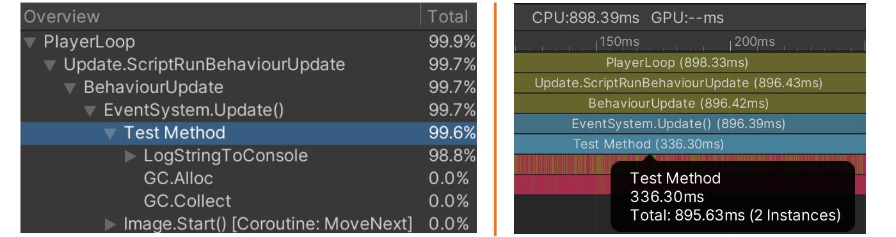
VI: Deep Profile phơi bày tận cùng: Test Method 336.30 ms, tổng 895.63 ms (2 Instances), bên dưới là LogStringToConsole 98.8%. / EN: Deep Profile revealing Test Method at 336.30 ms, total 895.63 ms across 2 instances.
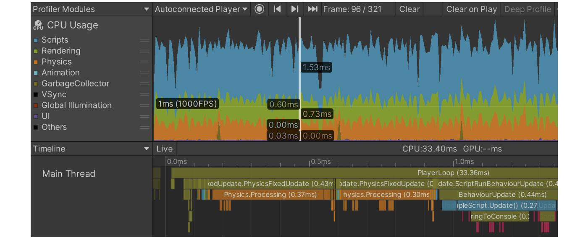
VI: Module CPU Usage — 9 hạng mục màu (Scripts / Rendering / Physics / Animation / GarbageCollector / VSync / Global Illumination / UI / Others). Frame đang chọn: CPU 33.40ms; timeline dưới hiện PlayerLoop (33.36ms), FixedUpdate.PhysicsFixedUpdate (0.43ms), Physics.Processing (0.37ms), BehaviourUpdate (0.44ms), SampleScript.Update() (0.27ms). / EN: The CPU Usage module — colour-coded categories plus the per-thread Timeline underneath.
1️⃣ Hierarchy View — dùng để SẮP XẾP và TÌM bottleneck
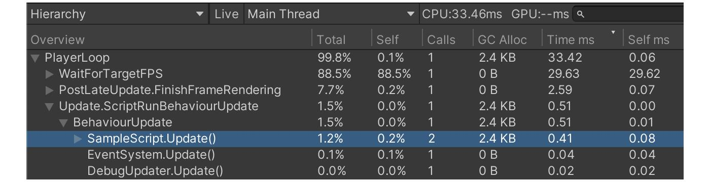
VI: Hierarchy View — PlayerLoop 99.8% / 33.42ms, trong đó WaitForTargetFPS chiếm 88.5% (29.63ms) (đang chờ VSync ⇒ máy còn dư sức), PostLateUpdate.FinishFrameRendering 7.7% (2.59ms), và SampleScript.Update() 2 Calls, 2.4 KB GC Alloc. / EN: Hierarchy View — sortable list; note the GC Alloc column showing 2.4 KB from SampleScript.Update().
⚠️ Giới hạn của Hierarchy: "Thông tin hiển thị là chỉ báo thời gian tiêu tốn TRONG THREAD ĐANG CHỌN. Ví dụ, nếu bạn dùng Job System hoặc multi-threaded rendering, thời gian xử lý ở thread KHÁC KHÔNG được tính vào." — muốn xem thì phải chọn thread.
⚠️ Hierarchy's limitation: "The information displayed is an indication of the time spent in the SELECTED THREAD. For example, if you are using Job System or multi-threaded rendering, the processing time in another thread is NOT included." — you must select the thread to see it.
Bảng 3.1 — Ý nghĩa các cột header của Hierarchy:
| Header | Ý nghĩa (VI) | Meaning (EN) |
|---|---|---|
| Overview | Tên sample | Sample name |
| Total | TỔNG thời gian xử lý hàm này (%) | Total time spent processing this function (%) |
| Self | Thời gian của CHÍNH hàm — ⚠️ KHÔNG gồm hàm con (%) | Processing time of this function itself; subfunction time is NOT included (%) |
| Calls | Số lần gọi trong MỘT frame | Number of calls made in one frame |
| GC Alloc | 💀 Heap memory hàm này cấp phát | Heap memory allocated by this function |
| Time ms | Total tính bằng ms | Total in ms |
| Self ms | Self tính bằng ms | Self in ms |
🔍 Raw Hierarchy — khi nào cần? "Calls DỄ NHÌN hơn vì nó GỘP nhiều lời gọi hàm thành MỘT item. Tuy nhiên, KHÔNG RÕ liệu TẤT CẢ chúng có thời gian xử lý BẰNG NHAU, hay CHỈ MỘT trong số đó có thời gian xử lý DÀI. Trong trường hợp đó, dùng Raw Hierarchy View — khác Hierarchy ở chỗ Calls LUÔN CỐ ĐỊNH = 1."
🎯 Hierarchy dùng để: ① Xác định & tối ưu bottleneck (Time ms, Self ms); ② Xác định & tối ưu GC allocation (GC Alloc). "Khi làm việc này, khuyến nghị SẮP XẾP GIẢM DẦN theo cột mong muốn trước khi kiểm tra."
💡 "Khi mở một item, thường có PHÂN CẤP RẤT SÂU. Bạn có thể mở TOÀN BỘ các cấp bằng cách giữ phím Option trên Mac (Alt trên Windows). Ngược lại, đóng item khi giữ phím sẽ đóng MỌI THỨ bên dưới."
🔍 Raw Hierarchy — when do you need it? "Calls is easier to see as a view because it combines multiple function calls into a single item. However, it is not clear whether ALL of them have equal processing time or only ONE of them has a long processing time. In such cases, the Raw Hierarchy View is used — it differs in that Calls is always FIXED at 1."
🎯 Hierarchy is used for: ① Identify and optimize bottlenecks (Time ms, Self ms); ② Identify and optimize GC allocations. "When performing these tasks, it is recommended to sort each desired item in DESCENDING order before checking it."
💡 "When opening an item, it is often the case that there is a DEEP hierarchy. In this case, you can open all levels of the hierarchy by holding down the Option key on a Mac (Alt key on Windows). Conversely, closing an item while holding down the key will close everything below."
2️⃣ Timeline View — dùng để NHÌN TOÀN CẢNH và xem THEO THREAD
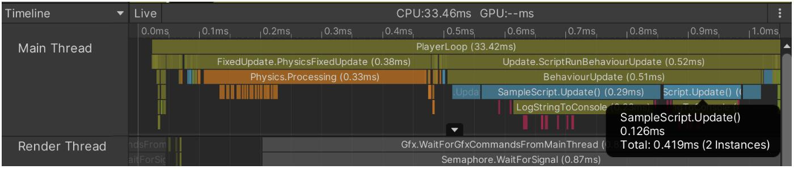
VI: Timeline View — Main Thread và Render Thread hiển thị ĐỒNG THỜI, không cần chuyển thread. Tooltip cho biết SampleScript.Update() 0.126ms, Total 0.419ms (2 Instances); Render Thread đang Gfx.WaitForGfxCommandsFromMainThread và Semaphore.WaitForSignal (0.87ms). / EN: Timeline View — all threads shown at once; hovering a box gives its own time and the total across instances.
✅ "Ở timeline view, các item trong hierarchy được TRỰC QUAN HOÁ thành các HỘP, nên bạn thấy NGAY tải nằm ở đâu chỉ bằng một cái liếc khi nhìn toàn cảnh. Và vì thao tác được bằng CHUỘT, kể cả phân cấp SÂU cũng nắm được chỉ bằng cách KÉO. Ngoài ra, với timeline KHÔNG cần CHUYỂN THREAD — TẤT CẢ thread đều hiển thị."
🎯 Timeline dùng để: ① nhìn TOÀN CẢNH tải xử lý; ② hiểu và tune tải của TỪNG THREAD.
❌ "Timeline KHÔNG PHÙ HỢP cho thao tác SẮP XẾP để xác định thứ tự xử lý nặng, hay để kiểm tra TỔNG lượng allocation. Do đó, Hierarchy View phù hợp hơn để tune allocation."
✅ "In the timeline view, items in the hierarchy view are visualized as BOXES, so you can intuitively see where the load is at a glance when viewing the entire view. And because it is mouse-accessible, even deep hierarchies can be grasped simply by DRAGGING. In addition, with timelines, there is NO need to switch threads; ALL threads are displayed."
🎯 Timeline is used for: ① to get a bird's eye view of the overall processing load; ② to understand and tune the processing load of each thread.
❌ "Timeline is NOT suited for sorting operations to determine the order of heavy processing, or for checking the total amount of allocations. Therefore, the Hierarchy View is better suited for tuning allocations."
19.5. 🔧 Sampler — tự nhúng điểm đo vào code¶
"Có HAI cách đo thời gian xử lý theo hàm. Một là Deep Profile. Cách kia là NHÚNG TRỰC TIẾP vào script."
🏆 Đặc tính VÀNG của Sampler: "Có một tính năng NỮA đáng nhắc tới. Nếu code profiling KHÔNG phải Development Build, thì phía GỌI bị VÔ HIỆU HOÁ, nên overhead bằng KHÔNG (zero overhead). Có thể là ý hay khi đặt SẴN nó vào những vùng mà tải xử lý CÓ KHẢ NĂNG TĂNG trong tương lai."
"There are TWO ways to measure processing time per function. One is Deep Profile mode. The other is to embed it directly in the script."
🏆 The golden property of Sampler: "There is one more feature worth mentioning. If the profiling code is not a Development Build, the caller is disabled, so there is ZERO OVERHEAD. It may be a good idea to put this in place in advance in areas where the processing load is likely to increase in the future."
List 3.3 — Profiler.BeginSample / EndSample (static, dùng ngay):
using UnityEngine.Profiling;
/* ... Omitted...*/
private void TestMethod()
{
for (int i = 0; i < 10000; i++)
{
Debug.Log("Test");
}
}
private void OnClickedButton()
{
Profiler.BeginSample("Test Method")
TestMethod();
Profiler.EndSample()
}
List 3.4 — CustomSampler (từ Unity 2017, overhead THẤP HƠN, đo CHÍNH XÁC HƠN):
using UnityEngine.Profiling;
/* ... Omitted...*/
private CustomSampler _samplerTest = CustomSampler.Create("Test");
private void TestMethod()
{
for (int i = 0; i < 10000; i++)
{
Debug.Log("Test");
}
}
private void OnClickedButton()
{
_samplerTest.Begin();
TestMethod();
_samplerTest.End();
}
⚖️ "Khác biệt là phải TẠO instance TRƯỚC. Một đặc điểm khác của CustomSampler là thời gian đo CÓ THỂ LẤY ĐƯỢC TRONG SCRIPT sau khi đo. Nếu bạn cần ĐỘ CHÍNH XÁC CAO HƠN hoặc muốn PHÁT CẢNH BÁO dựa trên thời gian xử lý, CustomSampler là lựa chọn tốt."
💡 Sample đã nhúng sẽ hiển thị ở CẢ Hierarchy lẫn Timeline view.
⚖️ "The difference is that an instance must be created in advance. Another feature of CustomSampler is that the measurement time can be obtained in the script after the measurement. If you need more accuracy or want to issue warnings based on processing time, CustomSampler is a good choice."
💡 The embedded sample will be displayed in both the Hierarchy and Timeline views.
19.6. Memory module — Simple view¶
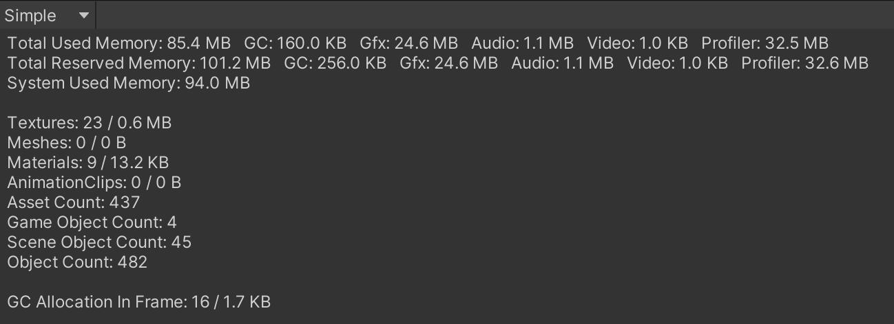
VI: Simple View (Unity 2020) — Total Used Memory 85.9 MB (GC 164.0 KB, Gfx 24.6 MB, Audio 1.1 MB, Video 1.0 KB, Profiler 32.5 MB), Total Reserved Memory 101.2 MB, System Used Memory 102.0 MB; Textures 23 / 0.6 MB, Meshes 0, Materials 9 / 13.2 KB. / EN: Simple View — note how much of the total is the Profiler itself (32.5 MB).
Ba con số "Total" — dễ nhầm nhất:
| Mục | VI | EN |
|---|---|---|
| Total Used Memory | Tổng bộ nhớ Unity đã cấp phát (đang dùng) | Total amount of memory allocated (in use) by Unity |
| Total Reserved Memory | Tổng bộ nhớ Unity ĐANG GIỮ CHỖ. "Một lượng vùng nhớ LIÊN TỤC nhất định được OS giữ trước làm POOL, và được cấp khi cần. Khi pool THIẾU, nó lại được YÊU CẦU từ phía OS để MỞ RỘNG." | "A certain amount of contiguous memory space is reserved in advance by the OS as a pool… When the pool area becomes insufficient, it is requested again from the OS side for expansion." |
| System Used Memory | 🚨 Tổng bộ nhớ ứng dụng dùng. "Mục này CŨNG đo các mục (plug-in, v.v.) KHÔNG được đo trong Total Reserved. Tuy nhiên nó VẪN KHÔNG theo dõi hết mọi allocation. Để có bức tranh CHÍNH XÁC, bạn sẽ cần công cụ profiling NATIVE như Xcode." | "However, it still does not track all memory allocations. To get an accurate picture, you will need to use a native-compliant profiling tool such as Xcode." |
Bảng 3.2 — thuật ngữ bên phải Total Used Memory:
| Thuật ngữ | Giải thích |
|---|---|
| GC | Lượng bộ nhớ dùng ở vùng heap. "GC Alloc và các yếu tố khác LÀM TĂNG con số này." |
| Gfx | Bộ nhớ cấp cho Texture, Shader, Mesh… |
| Audio | Bộ nhớ dùng cho phát âm thanh |
| Video | Bộ nhớ dùng cho phát video |
| Profiler | ⚠️ Bộ nhớ dùng cho CHÍNH việc profiling |
📌 "Về tên gọi: từ Unity 2019.2, 'Mono' đã đổi thành 'GC' và 'FMOD' đã đổi thành 'Audio'." / "Starting with Unity 2019.2, 'Mono' has been changed to 'GC' and 'FMOD' has been changed to 'Audio'."
Các bộ đếm đối tượng — vũ khí PHÁT HIỆN RÒ RỈ:
| Counter | VI | EN |
|---|---|---|
| Asset Count | Tổng số asset đã nạp | Total number of assets loaded |
| Game Object Count | Số GameObject trong scene | Number of game objects in the scene |
| Scene Object Count | Tổng số component + GameObject trong scene | Total number of components and game objects in the scene |
| Object Count | 💀 Tổng MỌI object app tạo/nạp. "Nếu giá trị này ĐANG TĂNG, RẤT CÓ KHẢ NĂNG một số object đang RÒ RỈ." | "If this value is increasing, it is likely that some objects are leaking." |
| GC Allocation in Frame | Số LẦN allocation xảy ra trong 1 frame và TỔNG lượng | The number of times an Allocation has occurred in a frame and the total amount |
🎯 Simple view dùng để: ① hiểu & giám sát vùng heap và THỜI ĐIỂM Reserved mở rộng; ② kiểm tra rò rỉ asset/object; ③ giám sát GC Allocation.
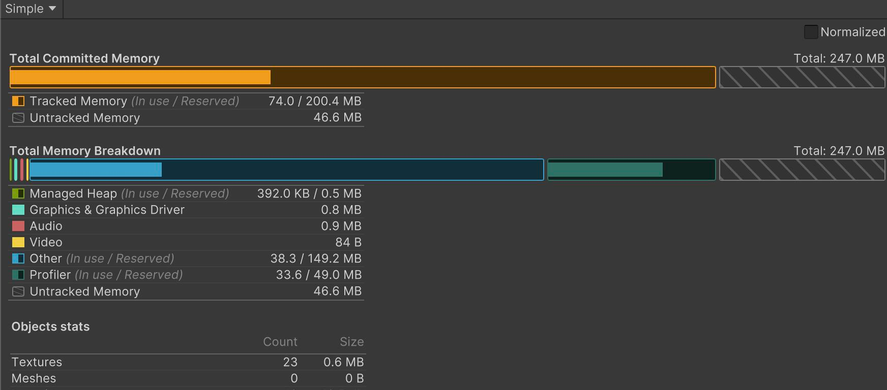
VI: Simple View từ Unity 2021 — UI cải thiện lớn: Total Committed Memory 247.0 MB (Tracked 74.0 / 200.4 MB, Untracked 46.6 MB); breakdown: Managed Heap 392.0 KB / 0.5 MB, Graphics & Graphics Driver 0.8 MB, Audio 0.9 MB, Other 38.3 / 149.2 MB, Profiler 33.6 / 49.0 MB. 🚨 Lưu ý "GC" đã đổi tên thành "Managed Heap". / EN: The 2021+ Simple View — same content, greatly improved UI; note "GC" was renamed "Managed Heap".
19.7. Memory module — Detailed view & bốn node "Others" phải biết¶
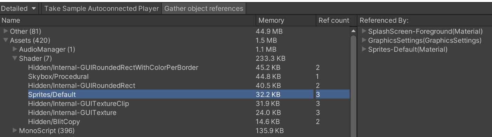
VI: Detailed view — snapshot sau khi bấm Take Sample. Other (81) 44.9 MB, Assets (420) 1.5 MB, trong đó Shader (7) 233.3 KB và MonoScript (396) 135.9 KB. Panel "Referenced By" bên phải cho biết Sprites/Default (32.2 KB, Ref count 3) đang bị SplashScreen-Foreground(Material), GraphicsSettings và Sprites-Default(Material) giữ. / EN: Detailed view — snapshot-based, with the Referenced By panel that resolves who is holding a leaking asset.
📸 "Kết quả của view này lấy được bằng cách bấm nút 'Take Sample' để chụp snapshot bộ nhớ tại thời điểm đó. KHÁC Simple view, view này KHÔNG cập nhật thời gian thực, nên muốn làm mới phải Take Sample LẠI."
🔍 "Bên phải nút Sample có mục 'Referenced By' — hiển thị các object đang THAM CHIẾU object đang chọn. Nếu có asset nào đang RÒ RỈ, thông tin tham chiếu của object có thể giúp GIẢI QUYẾT vấn đề. Hiển thị này CHỈ hiện khi 'Gather object references' được bật. Bật nó sẽ TĂNG thời gian xử lý lúc Take Sample, nhưng về cơ bản KHUYẾN NGHỊ để BẬT."
📸 "The result of this view can be obtained by clicking the 'Take Sample' button to take a snapshot of the memory at that point in time. Unlike the Simple view, this view is NOT updated in real time, so if you want to refresh the view, you need to Take Sample again."
🔍 "On the right side of the 'Sample' button, there is an item called 'Referenced By'. This shows the objects that reference the currently selected object. If there are any assets that are leaking, the information of the object's references may help to solve the problem. This display is only shown if 'Gather object references' is enabled. Enabling this feature will increase the processing time during Take Sample, but it is basically recommended to leave it enabled."
💡 ManagedStaticReferences() — dấu hiệu bị static giữ
VI: "Trong Referenced By, bạn có thể thấy ký hiệu ManagedStaticReferences(). Nó có nghĩa là object đang bị THAM CHIẾU bởi MỘT OBJECT static NÀO ĐÓ. Nếu bạn quen thuộc với project, thông tin này có thể đã đủ để bạn hình dung. Nếu không, chúng tôi khuyến nghị dùng "3.5 Heap Explorer" (xem §22.2)."
EN: "In Referenced By, you may see the notation ManagedStaticReferences(). This means that it is referenced by some static object. If you are familiar with the project, this information may be enough to give you some idea. If not, we recommend using '3.5 Heap Explorer'."
Bảng 3.3 — Bốn node GỐC của Detailed view:
| Node | VI | EN |
|---|---|---|
| Assets | Asset đã nạp KHÔNG nằm trong scene | Loaded assets not included in the scene |
| Not Saved | Asset sinh ra lúc runtime bằng code — ví dụ object tạo bởi new Material() |
Assets generated at runtime by code, e.g. new Material() |
| Scene Memory | Asset nằm trong scene đã nạp | Assets contained in the loaded scene |
| Others | Mọi thứ còn lại — cấp phát cho các hệ thống Unity dùng | Assignments to the various systems used by Unity |
Bốn mục trong Others mà bạn BẮT BUỘC phải biết:
📦 System.ExecutableAndDlls — "Chỉ lượng allocation dùng cho binary, DLL… Tuỳ nền tảng/máy, có thể KHÔNG lấy được, khi đó nó bằng 0B. Tải bộ nhớ cho project KHÔNG LỚN như con số liệt kê, vì nó có thể được CHIA SẺ với ứng dụng khác dùng chung framework. ✅ TỐT HƠN là cải thiện Asset còn hơn vội vàng giảm mục này. Cách hiệu quả nhất là GIẢM DLL và script KHÔNG cần thiết. Cách dễ nhất là đổi Stripping Level — 💀 nhưng có RỦI RO THIẾU type/method lúc runtime, nên phải debug CẨN THẬN."
📄 SerializedFile — "Chỉ meta-information như BẢNG OBJECT trong AssetBundle và Type Tree đóng vai trò thông tin kiểu. Có thể giải phóng bằng AssetBundle.Unload(true hoặc false). Unload(false) — chỉ giải phóng meta-information SAU KHI asset đã nạp — là cách HIỆU QUẢ NHẤT. 💀 Lưu ý: nếu THỜI ĐIỂM giải phóng và việc quản lý tham chiếu tài nguyên KHÔNG cẩn thận, tài nguyên có thể bị NẠP HAI LẦN và RẤT DỄ rò rỉ bộ nhớ."
🗺️ PersistentManager.Remapper — "Remapper quản lý quan hệ giữa object TRONG BỘ NHỚ và TRÊN ĐĨA. CẨN THẬN đừng để nó MỞ RỘNG QUÁ MỨC. Cụ thể, nếu MỘT LƯỢNG LỚN AssetBundle được nạp, vùng mapping sẽ KHÔNG ĐỦ và bị MỞ RỘNG. ✅ Vì vậy nên unload các AssetBundle không cần thiết để giảm số file nạp đồng thời. Ngoài ra, nếu MỘT AssetBundle chứa RẤT NHIỀU asset không cần ngay, nên CHIA NHỎ nó ra."
📦 System.ExecutableAndDlls — "Indicates the amount of allocations used for binaries, DLLs, and so on. Depending on the platform or terminal, it may not be obtainable, in which case it is treated as 0B. The memory load for the project is not as large as the listed values, as it may be SHARED with other applications using a common framework. ✅ It is better to improve Asset than to rush to reduce this item. The most effective way is to reduce DLLs and unnecessary scripts. The easiest way is to change the Stripping Level. 💀 However, there is a risk of missing types and methods at runtime, so debug carefully."
📄 SerializedFile — "Indicates meta-information such as the table of objects in the AssetBundle and the Type Tree that serves as type information. This can be released by AssetBundle.Unload(true or false). Unload(false), which releases only this meta-information after the asset is loaded, is the MOST EFFICIENT way. 💀 Note that if the release timing and resource reference management are not done carefully, resources can be DOUBLE-LOADED and memory leaks can easily occur."
🗺️ PersistentManager.Remapper — "Remapper manages the relationship between objects in memory and on disk. Be careful not to OVER-EXPAND. Specifically, if a large number of AssetBundles are loaded, the mapping area will not be sufficient and will be expanded. ✅ Therefore, it is a good idea to unload unnecessary AssetBundles to reduce the number of files loaded at the same time. Also, if a single AssetBundle contains a large number of assets that are not needed on the fly, it is a good idea to split it up."
🎯 Detailed view dùng để: ① hiểu & tune bộ nhớ CHI TIẾT tại một THỜI ĐIỂM cụ thể — kiểm tra asset KHÔNG cần thiết hoặc BẤT NGỜ; ② ĐIỀU TRA rò rỉ bộ nhớ.
20. 📈 Profile Analyzer — Thống kê thay vì "nhìn MỘT frame"¶
🎯 "Profile Analyzer là công cụ phân tích CHI TIẾT HƠN dữ liệu lấy từ CPU Usage của Profiler. Trong khi Unity Profiler CHỈ nhìn được dữ liệu THEO TỪNG FRAME, Profile Analyzer lấy được TRUNG BÌNH (average), TRUNG VỊ (median), NHỎ NHẤT và LỚN NHẤT dựa trên một KHOẢNG FRAME chỉ định."
✅ "Điều này cho phép XỬ LÝ ĐÚNG dữ liệu BIẾN THIÊN từ frame này sang frame khác, giúp thể hiện RÕ RÀNG HƠN hiệu quả của việc cải thiện khi tối ưu. Nó cũng là công cụ RẤT hữu ích để SO SÁNH và TRỰC QUAN HOÁ kết quả tối ưu, vì có chức năng SO SÁNH dữ liệu đo — điều mà CPU Usage KHÔNG làm được."
🎯 "Profile Analyzer is a tool for more detailed analysis of data obtained from the Profiler's CPU Usage. While the Unity Profiler can ONLY look at data PER FRAME, the Profile Analyzer can obtain average, median, minimum, and maximum values based on a SPECIFIED FRAME INTERVAL."
✅ "This allows for appropriate handling of data that varies from frame to frame, making it possible to more clearly show the effects of improvement when optimization is performed. It is also a very useful tool for comparing and visualizing the results of optimization because it has a function for comparing measurement data, which CPU Usage CANNOT do."
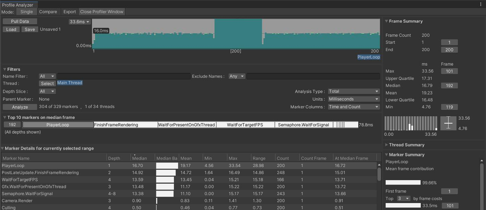
VI: Profile Analyzer (Single mode) — 304 of 329 markers, 1 of 34 threads, Frame Count 200. Frame Summary: Max 33.56ms (frame 101), Upper Quartile 17.31, Median 16.79 (frame 192), Mean 19.23, Lower Quartile 16.48, Min 4.76 (frame 119). Dải "Top 10 markers on median frame" cho thấy PlayerLoop chiếm phần lớn 78.8ms. / EN: Profile Analyzer in Single mode with the Frame Summary quartiles on the right.
20.1. Cài đặt & hai chế độ¶
📥 "Công cụ này cài từ Package Manager. Vì được Unity HỖ TRỢ CHÍNH THỨC, đổi Packages sang Unity Registry và gõ "Profile" trong ô tìm kiếm. Sau khi cài, mở bằng "Window → Analysis → Profile Analyzer"."
🔀 "Có HAI chế độ: 'Single' và 'Compare'. Single dùng để phân tích MỘT bộ dữ liệu đo; Compare dùng để SO SÁNH HAI bộ dữ liệu."
💾 "'Pull Data' cho phép phân tích dữ liệu đo bằng Unity Profiler và hiển thị kết quả. 'Save' và 'Load' cho phép lưu/nạp dữ liệu đã phân tích. Tất nhiên KHÔNG có vấn đề gì nếu bạn chỉ giữ dữ liệu Unity Profiler — khi đó bạn phải nạp dữ liệu vào Unity Profiler và làm Pull Data trong Profile Analyzer MỖI LẦN. Nếu thấy phiền, tốt hơn là lưu thành dữ liệu chuyên dụng."
📥 "This tool can be installed from the Package Manager. Since it is officially supported by Unity, change Packages to Unity Registry and type "Profile" in the search box. After installation, start the tool via "Window → Analysis → Profile Analyzer"."
🔀 "There are TWO modes of functionality: 'Single' and 'Compare'. Single mode is used to analyze a single measurement data, while Compare mode is used to compare two measurement data."
💾 "'Pull Data' allows you to analyze the data measured in the Unity Profiler and display the results. 'Save' and 'Load' allow you to save and load the data analyzed by Profile Analyzer. Of course, there is no problem if you keep only the Unity Profiler data. In that case, you need to load the data in Unity Profiler and do Pull Data in Profile Analyzer each time. If this procedure is troublesome, it is better to save the data as a dedicated data."
20.2. Bộ lọc — và mẹo Depth Slice = 2~3¶
Bảng 3.4 — Các mục của bộ lọc:
| Mục | Mô tả (VI) | Description (EN) |
|---|---|---|
| Name Filter | Lọc theo TÊN tiến trình muốn tìm | Filter by the name of the process you want to search |
| Exclude Filter | Lọc theo tên tiến trình muốn LOẠI khỏi tìm kiếm | Filter by the name of the process to exclude |
| Thread | Thread được chọn sẽ hiện trong kết quả. "Nếu cần thông tin thread khác, THÊM chúng vào." | The selected threads will be displayed; add others if needed |
| Depth Slice | Số lớp trong Hierarchy của CPU Usage. "Ví dụ nếu Depth là 3, lớp thứ 3 được hiển thị." | The number of slices in the Hierarchy. If Depth is 3, the third hierarchy is displayed |
| Analysis Type | Chuyển giữa Total và Self — giống header của CPU Usage | Total and Self can be switched |
| Units | Đổi hiển thị thời gian sang millisecond hoặc microsecond | Time display can be changed to ms or µs |
| Marker Columns | Đổi hiển thị header của kết quả phân tích | Change the header display of analysis results |
💡 Mẹo VÀNG: đừng để Depth Slice = All
VI: "Khi Depth Slice đặt là All, node gốc PlayerLoop được hiển thị, hoặc các LỚP KHÁC NHAU của CÙNG MỘT tiến trình được hiển thị — RẤT KHÓ NHÌN. Trong trường hợp đó, khuyến nghị CỐ ĐỊNH Depth ở 2~3 và đặt sao cho các SUBSYSTEM như rendering, animation và physics được hiển thị."
EN: "When Depth Slice is set to All, the top node called PlayerLoop is displayed, or different layers of the same process are displayed, which can be difficult to see. In such cases, it is recommended to fix Depth to 2~3 and set it so that subsystems such as rendering, animation, and physics are displayed."
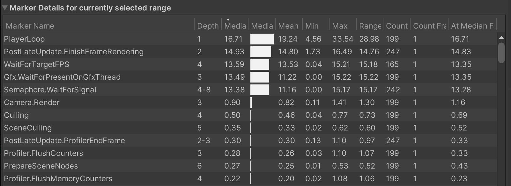
VI: Marker Details — mỗi marker có Depth, Median, Mean, Min, Max, Range, Count. PlayerLoop Median 16.71 / Mean 19.24 / Max 33.54 / Range 28.98 (Count 199); PostLateUpdate.FinishFrameRendering Median 14.93, Count 247; Camera.Render 0.90; Culling 0.50; SceneCulling 0.35. / EN: Per-marker statistics — median, mean, min, max, range and call count across the selected frame interval.
💡 "Nên phân tích tiến trình cần cải thiện dựa trên tên tiến trình ở Marker Name và các giá trị Median và Mean. Nếu bạn di chuột lên một header, mô tả của mục đó sẽ hiện ra — hãy tham khảo nếu chưa hiểu."
📊 "Màn hình 'Top 10 Median Marker Values' CHỈ hiện 10 marker đầu bảng sắp theo thời gian xử lý TRUNG VỊ của mỗi marker. Bạn thấy NGAY mỗi marker trong top 10 chiếm bao nhiêu thời gian."
💡 "It is a good idea to analyze the process that should be improved based on the process name listed in Marker Name and the values of Median and Mean. If you move the mouse pointer over a header item, a description of the item will be displayed, so please refer to it if you do not understand."
📊 "The 'Top 10 Median Marker Values' screen shows only the top 10 markers sorted by the MEDIAN processing time for each marker. You can see at a glance how much processing time each of the top 10 markers occupies."
20.3. 📐 Mean vs Median — con số nào ĐÁNG TIN?¶
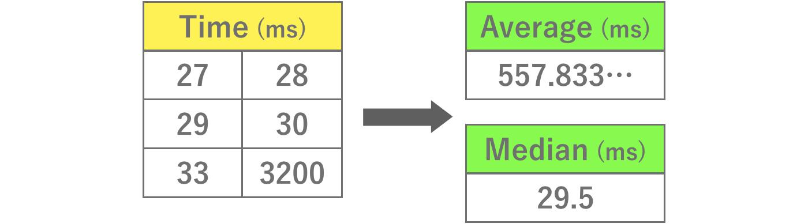
VI: Ví dụ KINH ĐIỂN của sách — 6 mẫu thời gian 27, 28, 29, 30, 33, 3200 ms. Trung bình (Average) = 557.833…ms nhưng Trung vị (Median) = 29.5ms. 💀 Một spike DUY NHẤT đã kéo trung bình lệch gần 19 LẦN so với thực tế. / EN: The book's classic example — one 3200 ms spike drags the mean to 557.8 ms while the median stays at 29.5 ms.
📖 "Trung bình là giá trị có được bằng cách CỘNG tất cả rồi CHIA cho số dữ liệu. Trung vị, ngược lại, là giá trị NẰM GIỮA của dữ liệu đã sắp xếp. Trường hợp số dữ liệu CHẴN, lấy TRUNG BÌNH của hai giá trị trước và sau vị trí giữa."
🚨 "Trung bình có tính chất là NHẠY CẢM với dữ liệu có giá trị CÁCH BIỆT CỰC LỚN. NẾU spike XẢY RA THƯỜNG XUYÊN hoặc SỐ MẪU KHÔNG ĐỦ, TỐT HƠN là tham chiếu TRUNG VỊ."
🎯 "Hãy phân tích dữ liệu SAU KHI đã biết đặc tính của HAI giá trị này."
📖 "The mean is the value obtained by adding all values together and dividing by the number of data. The median, on the other hand, is the value that lies in the middle of the sorted data. In the case of an even number of data, the average value is taken from the data before and after the median."
🚨 "The average has the property that it is SUSCEPTIBLE to data with values that are EXTREMELY FAR APART. If there are FREQUENT SPIKES or the SAMPLING NUMBER is NOT SUFFICIENT, it may be better to refer to the MEDIAN."
🎯 "Analyze your data after knowing the characteristics of these two values."
20.4. Frame Summary — Boxplot & Histogram¶
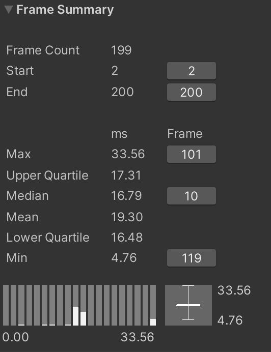
VI: Frame Summary — Frame Count 199 · Max 33.56 ms (frame 101) · Upper Quartile 17.31 · Median 16.79 (frame 10) · Mean 19.30 · Lower Quartile 16.48 · Min 4.76 (frame 119). Mean CAO HƠN Median ⇒ có vài frame ĐỘT BIẾN kéo trung bình lên. / EN: Frame Summary: Max 33.56 ms, Median 16.79, Mean 19.30, Min 4.76.
Bảng 3.5 — Tứ phân vị (Quartiles):
| Tên | Mô tả |
|---|---|
| Minimum value (Min) | Giá trị nhỏ nhất |
| Lower Quartile | Giá trị ở vị trí 25% tính từ min |
| Median | Giá trị ở vị trí 50% tính từ min |
| Upper Quartile | Giá trị ở vị trí 75% tính từ min |
| Maximum Value (Max) | Giá trị lớn nhất |
📦 "Khoảng giữa 25% và 75% được ĐÓNG HỘP — gọi là đồ thị hộp-và-râu (box-and-whisker)."
📊 "Histogram có trục NGANG là thời gian xử lý, trục DỌC là SỐ LƯỢNG dữ liệu — cũng hữu ích để xem PHÂN BỐ dữ liệu. Trong frame summary, bạn có thể kiểm tra khoảng và số frame bằng cách di chuột lên chúng."
🧵 Thread Summary — "hiển thị thống kê cho thread đã chọn. Bạn thấy được một biểu đồ hộp-và-râu cho MỖI THREAD."
📦 "The interval between 25% and 75% is BOXED, which is called a box-and-whisker graph."
📊 "The histogram shows processing time on the horizontal axis and the number of data on the vertical axis, which is also useful for viewing data distribution. In the frame summary, you can check the interval and the number of frames by hovering the cursor over them."
🧵 Thread Summary — "shows statistics for the selected thread. You can see a box-and-whisker diagram for EACH THREAD."
20.5. Compare mode — bằng chứng tuning CÓ hay KHÔNG hiệu quả¶
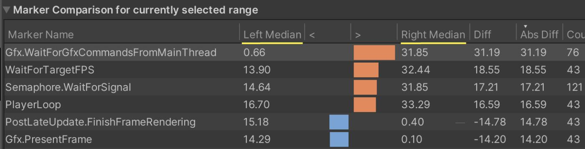
VI: Marker Comparison — cột Left Median vs Right Median kèm Diff. Gfx.WaitForGfxCommandsFromMainThread tăng từ 0.66 → 31.85 (Diff +31.19), WaitForTargetFPS 13.90 → 32.44 (+18.55), PlayerLoop 16.70 → 33.29 (+16.59); ngược lại PostLateUpdate.FinishFrameRendering 15.18 → 0.40 (−14.78). / EN: Marker Comparison — orange bars mean the right dataset is slower, blue means faster.
🔀 "Ở chế độ này HAI bộ dữ liệu có thể được SO SÁNH. Khoảng phân tích có thể đặt RIÊNG cho dữ liệu TRÊN và DƯỚI. Cách dùng màn hình gần như GIỐNG Single mode, nhưng các từ 'Left' và 'Right' xuất hiện ở nhiều màn hình — cho biết dữ liệu nào là dữ liệu nào, và KHỚP với MÀU hiển thị ở phần cài đặt so sánh. Left là dữ liệu TRÊN, Right là dữ liệu DƯỚI."
🏆 "Chế độ này sẽ giúp DỄ DÀNG phân tích kết quả tuning là TỐT hay XẤU."
🔀 "In this mode, two sets of data can be compared. The interval to be analyzed can be set for EACH of the upper and lower data. The usage of the screen is almost the same as Single mode, but the words 'Left' and 'Right' appear in various screens — this shows which data is which, and matches the colour shown in the comparison settings. Left is the TOP data and Right is the BOTTOM data."
🏆 "This mode will make it easier to analyze whether the tuning results are good or bad."
21. 🖼️ Frame Debugger — "Vì sao draw call này KHÔNG batch được?"¶
👉 Xem thêm Module 4 — GPU & URP Advanced Rendering về batching. Mục này tập trung vào NĂNG LỰC CHẨN ĐOÁN của Frame Debugger.
🔧 "Frame Debugger là công cụ cho phép phân tích màn hình đang hiển thị được RENDER RA NHƯ THẾ NÀO. Công cụ này cài SẴN trong editor, mở bằng "Window → Analysis → Frame Debugger"."
📱 "Nó dùng được trong editor HOẶC trên THIẾT BỊ THẬT. Khi dùng trên thiết bị thật, cần binary build với 'Development Build', GIỐNG như Unity Profiler. Khởi động app, chọn kết nối thiết bị, và bấm 'Enable' để hiển thị lệnh vẽ."
🔧 "The Frame Debugger is a tool that allows you to analyze how the currently displayed screen is RENDERED. This tool is installed by default in the editor and can be opened via "Window → Analysis → Frame Debugger"."
📱 "It can be used in the editor or on the ACTUAL DEVICE. When using it on an actual device, a binary built with 'Development Build' is required, as is the Unity Profiler. Start the application, select the device connection, and press 'Enable' to display the drawing instruction."
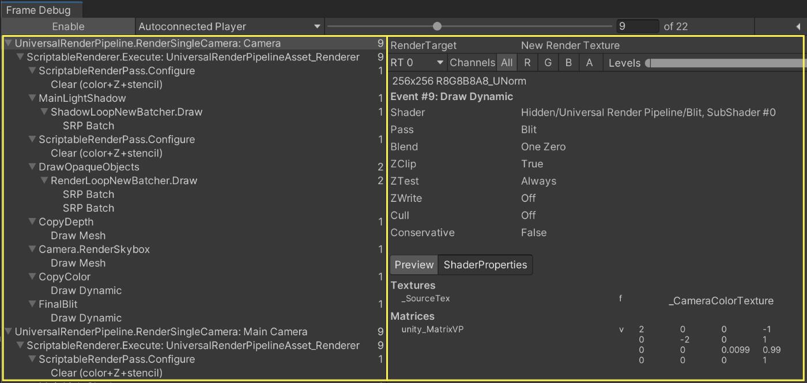
VI: Frame Debugger — khung TRÁI liệt kê lệnh vẽ theo THỨ TỰ từ trên xuống (UniversalRenderPipeline.RenderSingleCamera → MainLightShadow → DrawOpaqueObjects → CopyDepth → Camera.RenderSkybox → CopyColor → FinalBlit); khung PHẢI là chi tiết Event #9: Draw Dynamic, RenderTarget 256x256 R8G8B8A8_UNorm, Shader Hidden/Universal Render Pipeline/Blit, Blend One Zero, ZTest Always, ZWrite Off, Cull Off. / EN: Frame Debugger — the ordered draw-call list on the left, per-event shader/render-state detail on the right.
🎯 Bốn câu hỏi phải tự đặt khi nhìn màn hình này:
① "Có lệnh nào KHÔNG CẦN THIẾT không?"
② "Batching có ĐANG HOẠT ĐỘNG ĐÚNG hay không?"
③ "ĐỘ PHÂN GIẢI của drawing target có QUÁ CAO không?"
④ "Có Shader NGOÀI Ý ĐỊNH đang được dùng không?"
🎯 Four questions to ask while looking at this screen:
① "Are there any UNNECESSARY instructions?"
② "Whether drawing batching is working PROPERLY or not"
③ "Is the RESOLUTION of the drawing target TOO HIGH?"
④ "Is an UNINTENDED Shader being used?"
21.1. Operation Panel — RT0, Channels, Levels¶
🎛️ "Phần đánh dấu 'RT0' có thể ĐỔI khi có NHIỀU render target. Điều này ĐẶC BIỆT hữu ích khi dùng multiple render targets để kiểm tra trạng thái render của TỪNG target."
🌈 "Channels có thể đổi để hiển thị TOÀN BỘ RGBA hoặc CHỈ MỘT kênh. Levels là thanh trượt cho phép chỉnh ĐỘ SÁNG của kết quả render — hữu ích ví dụ để chỉnh sáng một cảnh render TỐI như ambient hoặc indirect lighting để DỄ NHÌN HƠN."
🎛️ "The part marked 'RT0' can be changed when there are multiple render targets. This is especially useful when using multiple render targets to check the rendering status of each target."
🌈 "Channels can be changed to display all RGBA or only one of the channels. Levels is a slider that allows you to adjust the BRIGHTNESS of the resulting rendering. This is useful, for example, to adjust the brightness of a DARK rendering, such as ambient or indirect lighting, to make it easier to see."
21.2. 🏆 "Why this draw call can't be batched with the previous one"¶
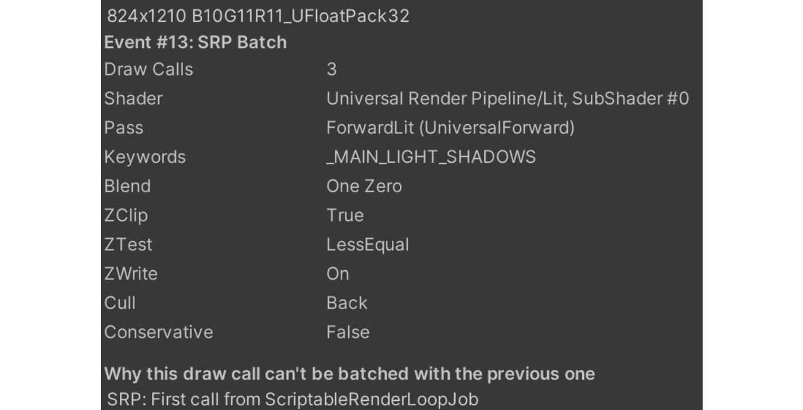
VI: Tính năng CHẨN ĐOÁN đắt giá nhất — Event #13: SRP Batch, RT 824x1210 B10G11R11_UFloatPack32, Draw Calls 3, Shader Universal Render Pipeline/Lit, Pass ForwardLit (UniversalForward), Keywords _MAIN_LIGHT_SHADOWS, ZTest LessEqual, ZWrite On, Cull Back. Dòng cuối: "Why this draw call can't be batched with the previous one — SRP: First call from ScriptableRenderLoopJob". / EN: The single most valuable diagnostic in the Frame Debugger — it names the exact reason batching failed.
📋 Drawing Overview: "Khu vực này cung cấp thông tin về ĐỘ PHÂN GIẢI và FORMAT của đích render. Rõ ràng bạn sẽ NHẬN RA NGAY nếu có drawing destination với độ phân giải CAO HƠN. Các thông tin khác như tên Shader dùng, cài đặt Pass như Cull, và các keyword được dùng cũng tìm thấy ở đây."
🏆 "Câu 'Why this~' liệt kê ở dưới cùng MÔ TẢ VÌ SAO drawing KHÔNG THỂ batching. Trong ví dụ, nó nói rằng drawing call ĐẦU TIÊN đã được chọn nên KHÔNG THỂ batching. Vì NGUYÊN NHÂN được mô tả CHI TIẾT như vậy, bạn có thể DỰA VÀO thông tin này để điều chỉnh nếu muốn nghĩ cách batching."
🎨 Shader property detail: "Khu vực này mô tả thông tin property của Shader đang vẽ — hữu ích để debug."
📋 Drawing Overview: "This area provides information on the RESOLUTION and FORMAT of the destination. Obviously, you will be able to notice IMMEDIATELY if there is a drawing destination with a HIGHER resolution. Other information such as the Shader name used, Pass settings such as Cull, and keywords used can also be found."
🏆 "The sentence 'Why this~' listed at the bottom describes WHY the drawing could NOT be batched. In the case shown, it states that the first drawing call was selected and therefore batching was not possible. Since the causes are described in such detail, you can RELY on this information to make adjustments if you want to devise batching."
🎨 Shader property detail: "This area describes the property information of the Shader being drawn. This is useful for debugging."
💡 Phóng to preview Texture2D
VI: "Đôi khi cần kiểm tra CHI TIẾT trạng thái của Texture2D hiển thị trong thông tin property. Để làm vậy, bấm vào ảnh trong khi giữ phím Command trên Mac (Control trên Windows) để PHÓNG TO ảnh."
EN: "Sometimes it is necessary to check in detail the state of Texture2D displayed in the property information. To do so, click on the image while holding down the Command key on a Mac (Control key on Windows) to enlarge the image."
22. 🧬 Memory Profiler & 🗺️ Heap Explorer¶
22.1. Memory Profiler — hơn Memory module ở BA điểm¶
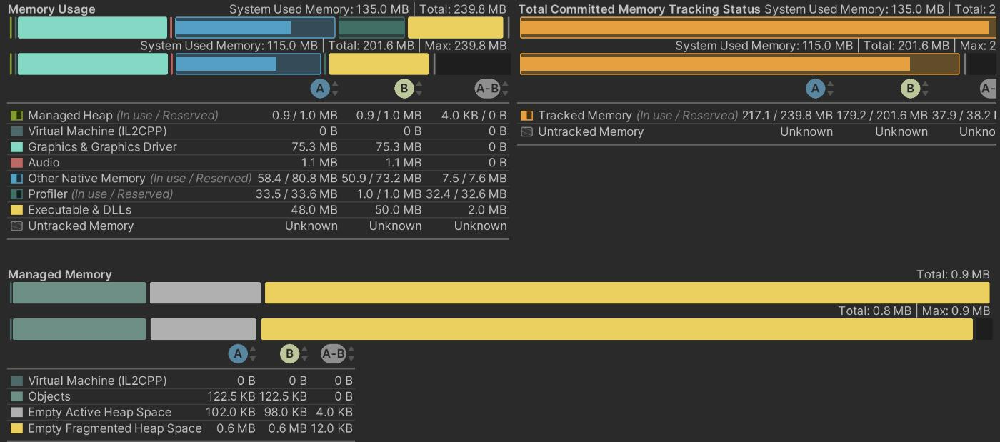
VI: Memory Breakdowns — System Used 135.0 MB / Total 239.8 MB; Graphics & Graphics Driver 75.3 MB · Executable & DLLs 48.0/50.0 MB · Managed Heap 0.9/1.0 MB · Empty Fragmented Heap Space 0.6 MB (dấu hiệu PHÂN MẢNH). / EN: Memory Breakdowns bars with System Used 135.0 MB and Empty Fragmented Heap Space.
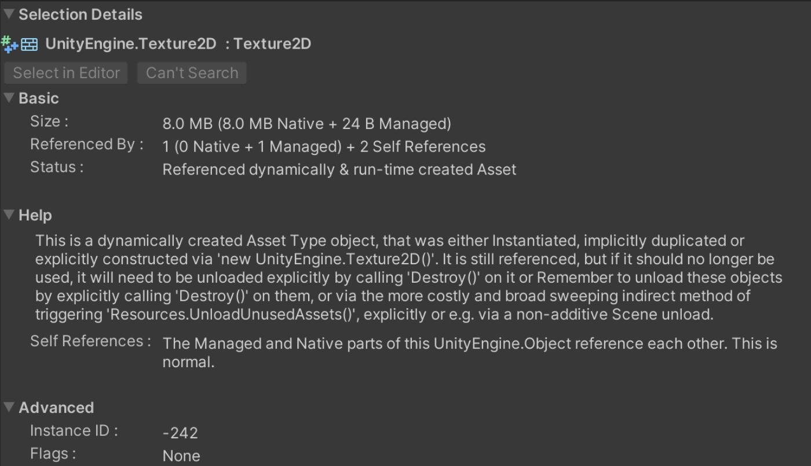
VI: Selection Details của một Texture2D 8.0 MB (8.0 MB Native + 24 B Managed), trạng thái "Referenced dynamically & run-time created Asset" — panel Help ghi rõ: object tạo bằng new UnityEngine.Texture2D() PHẢI được giải phóng TƯỜNG MINH bằng Destroy() hoặc Resources.UnloadUnusedAssets(). / EN: Selection Details for a dynamically created Texture2D requiring explicit Destroy().
🥇 "Memory Profiler là công cụ CHÍNH THỨC do Unity cung cấp dưới dạng Preview Package. So với Memory module của Unity Profiler, nó VƯỢT TRỘI ở các điểm chính sau:"
① "Dữ liệu capture được LƯU CỤC BỘ kèm ẢNH CHỤP MÀN HÌNH"
② "Lượng bộ nhớ mỗi CATEGORY chiếm được TRỰC QUAN HOÁ và DỄ HIỂU"
③ "Dữ liệu có thể SO SÁNH được"
⚠️ "UI của Memory Profiler THAY ĐỔI ĐÁNG KỂ giữa v0.4 và các bản sau. Sách này dùng v0.5. Với v0.4 trở lên cần Unity 2020.3.12f1 trở lên để dùng đủ tính năng. Ngoài ra, v0.4 và v0.5 THOẠT NHÌN GIỐNG NHAU, nhưng v0.5 đã được cập nhật ĐÁNG KỂ — đặc biệt việc THEO DÕI THAM CHIẾU object giờ DỄ HƠN NHIỀU, nên về cơ bản khuyến nghị dùng v0.5 trở lên."
🥇 "Memory Profiler is an official tool provided by Unity as a Preview Package. Compared to the Memory module of the Unity Profiler, it is superior in the following main points:"
① "Captured data is saved locally WITH SCREENSHOTS"
② "The amount of memory occupied by each category is visualized and easy to understand"
③ "Data can be compared"
⚠️ "The UI of the Memory Profiler has changed significantly between v0.4 and later versions. This book uses v0.5. For v0.4 or later, Unity 2020.3.12f1 or later is required to use all features. In addition, v0.4 and v0.5 look the same at first glance, but v0.5 has been significantly updated. In particular, object references are now MUCH EASIER to follow, so we basically recommend using v0.5 or later."
Cài đặt:
| Unity | Cách cài |
|---|---|
| Unity 2020 | Bật "Enable Preview Packages" trong Project Settings → Package Manager, rồi cài Memory Profiler từ Unity Registry |
| Unity 2021+ | "Cách thêm package đã ĐỔI. Bấm "Add Package by Name" và nhập com.unity.memoryprofiler" |
Mở bằng "Window → Analysis → Memory Profiler".
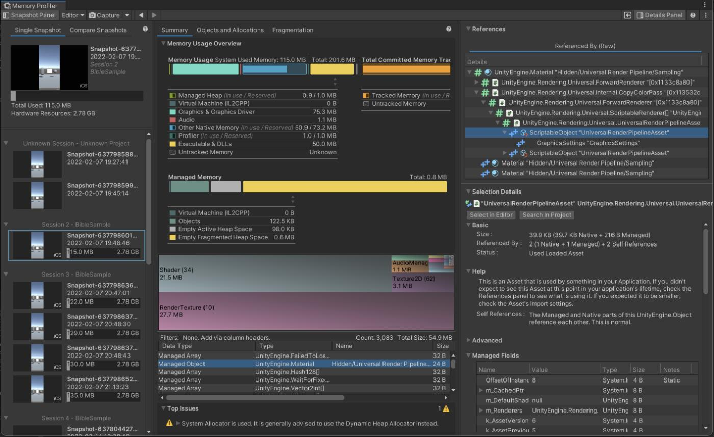
VI: Toàn cảnh Memory Profiler — Snapshot Panel (trái, gom theo SESSION, mỗi snapshot kèm ẢNH CHỤP MÀN HÌNH, ví dụ Total Used 115.0 MB / Hardware Resources 2.78 GB), Measurement Results (giữa: Memory Usage Overview + Tree Map + Tree Map Table, Count 3,083 / Total Size 54.9 MB), và Detail Panel (phải: Referenced By + Selection Details với mục Help). Dưới cùng có Top Issues: "System Allocator is used. It is generally advised to use the Dynamic Heap Allocator instead." / EN: The full Memory Profiler layout — snapshot panel, tree map, and the reference/detail panel.
💀 BẪY ĐO: bộ nhớ dùng để ĐO sẽ KHÔNG được giải phóng
"Có một điểm QUAN TRỌNG cần lưu ý về việc đo. Bộ nhớ cần cho việc ĐO được cấp phát MỚI và sẽ KHÔNG được giải phóng lại. Tuy nhiên, nó KHÔNG TĂNG VÔ HẠN và cuối cùng sẽ ỔN ĐỊNH sau vài lần đo. Lượng bộ nhớ cấp lúc đo phụ thuộc vào ĐỘ PHỨC TẠP của project."
🚨 "Nếu bạn KHÔNG biết giả định này, hãy CẨN THẬN vì bạn có thể LẦM TƯỞNG là có rò rỉ khi thấy lượng bộ nhớ PHÌNH LÊN."
"One thing to note about measurement is that the memory required for measurement is NEWLY ALLOCATED and will NOT be released again. However, it does not increase infinitely and will eventually settle down after several measurements. The amount of memory allocated at measurement time will depend on the complexity of the project."
🚨 "If you do not know this assumption, be careful because you may MISTAKENLY THINK there is a LEAK when you see the amount of memory usage BALLOONING."
VI: Memory Usage Overview — System Used Memory 115.0 MB, Total 201.6 MB. Breakdown: Managed Heap 0.9 / 1.0 MB, Virtual Machine (IL2CPP) 0 B, Graphics & Graphics Driver 75.3 MB, Audio 1.1 MB, Other Native Memory 50.9 / 73.2 MB, Profiler 1.0 / 1.0 MB, Executable & DLLs 50.0 MB; Tracked Memory 179.2 / 201.6 MB. Khối Managed Memory dưới: Objects 122.5 KB, Empty Active Heap Space 98.0 KB, 💀 Empty FRAGMENTED Heap Space 0.6 MB. / EN: Memory Usage Overview — note the Empty Fragmented Heap Space, the direct evidence of managed-heap fragmentation.
VI: Tree Map — diện tích ô TỈ LỆ với bộ nhớ. RenderTexture (5) chiếm 170.1 MB (áp đảo), MonoScript (3208) 25.5 MB, Shader (120) 9.3 MB, "rock" <Texture2D> 24.0 MB, "GizmoIconAtlas_pix32" 21.3 MB, và hàng chục Snapshot-*.png mỗi cái 11.3 MB (chính là ảnh chụp màn hình do Memory Profiler tạo!). / EN: Tree Map — box area is proportional to memory; here RenderTexture dominates at 170.1 MB.
🗂️ "Khu vực tiếp theo gọi là Tree Map, hiển thị ĐỒ HOẠ mức dùng bộ nhớ cho TỪNG CATEGORY object. Chọn từng category để kiểm tra object bên trong."
📋 "Phần dưới cùng gọi là Tree Map Table — danh sách object ở dạng BẢNG. Các mục hiển thị có thể GOM NHÓM, SẮP XẾP và LỌC bằng cách bấm header. ĐẶC BIỆT, gom nhóm theo Type khiến việc phân tích DỄ HƠN — hãy dùng CHỦ ĐỘNG."
🔍 "Khi chọn một category trong Tree Map, bộ lọc được TỰ ĐỘNG đặt để chỉ hiện object của category đó."
🗂️ "The next area of the screen is called the Tree Map, which graphically displays memory usage for EACH CATEGORY of objects. By selecting each category, you can check the objects within the category."
📋 "The bottom part is called Tree Map Table. Here, the list of objects is arranged in a table format. The displayed items can be grouped, sorted, and filtered by pressing the header. Especially, grouping the Types makes it EASIER to analyze, so please use it PROACTIVELY."
🔍 "When a category is selected in the Tree Map, a filter is AUTOMATICALLY set to display only objects in that category."
Bảng 3.6 — Cột Diff trong Compare Snapshots:
| Diff | Nghĩa (VI) | Meaning (EN) |
|---|---|---|
| Same | A, B CÙNG object | A, B same object |
| Not in A (Deleted) | Object có ở A nhưng KHÔNG ở B | Object in A but not in B |
| Not in B (New) | Object KHÔNG ở A nhưng có ở B | Object not in A but in B |
💡 "Bằng cách nhìn thông tin này, có thể kiểm tra bộ nhớ đang TĂNG hay GIẢM." / "By looking at this information, it is possible to check whether memory is increasing or decreasing."
🔗 Detail Panel — "Panel này dùng khi bạn muốn THEO DÕI quan hệ THAM CHIẾU của object đã chọn. Bằng cách kiểm tra 'Referenced By', bạn sẽ tìm ra được CÁI GÌ đang GIỮ tham chiếu."
🆘 "Phần dưới, Selection Details, chứa thông tin chi tiết về object. Trong đó, mục 'Help' chứa LỜI KHUYÊN về cách GIẢI PHÓNG nó. Bạn nên đọc nếu chưa chắc phải làm gì."
🔗 Detail Panel — "This panel is used when you want to track the reference relationship of the selected object. By checking this 'Referenced By', you will be able to figure out WHAT is causing the continued reference grabbing."
🆘 "The bottom section, Selection Details, contains detailed information about the object. Among them, the 'Help' section contains ADVICE on how to RELEASE it. You may want to read it if you are not sure what to do."
VI: Tab Fragmentation — trực quan hoá trạng thái VIRTUAL MEMORY theo địa chỉ (0x000000109800000, 0x00000010D800000…), phân biệt Virtual Machine / Managed Heap / Managed Object / Native Memory (Reserved) / Native Memory (Allocated). Bảng dưới: Stack Allocator: ALLOC_TEMP_THREAD: Virtual Memory Block 8.0 MB, Memory Block 4.0 MB. ⚠️ Sách cảnh báo view này "KHÓ dùng vì chứa NHIỀU thông tin KHÔNG TRỰC QUAN như địa chỉ bộ nhớ". / EN: The Fragmentation tab visualises virtual memory; the book warns it is hard to use because of the raw addresses.
VI: Memory Breakdowns — tính năng MỚI từ v0.6 (cần Unity 2022.1+). Ba chế độ: Unity Objects / Potential Duplicates / All Tracked Memory. Bảng: Total Memory In Table 2.2 MB vs Total Memory In Snapshot 207.0 MB; AudioManager 0.9 MB (1 Object), Cubemap 321.1 KB (3), MonoScript 313.0 KB (1203), Texture2D 246.3 KB (16), Shader 211.0 KB (10). 🏆 Chế độ "Potential Duplicates" giúp phát hiện object bị TRÙNG LẶP. / EN: Memory Breakdowns (v0.6+) — list-view tree maps plus a "Potential Duplicates" mode.
📊 "'Objects and Allocations' KHÁC Summary ở chỗ thông tin CHI TIẾT HƠN như allocation có thể xem ở dạng BẢNG."
🧩 "'Fragmentation' trực quan hoá trạng thái virtual memory và dùng để ĐIỀU TRA phân mảnh. Tuy nhiên, có thể KHÓ dùng vì chứa RẤT NHIỀU thông tin KHÔNG TRỰC QUAN như ĐỊA CHỈ BỘ NHỚ."
🆕 "Tính năng mới 'Memory Breakdowns' được thêm từ v0.6. Cần Unity 2022.1 trở lên, nhưng giờ có thể xem TreeMap ở dạng LIST VIEW và thông tin object như Unity Subsystems. Các tính năng mới khác gồm khả năng kiểm tra object có thể bị TRÙNG LẶP."
📊 "'Objects and Allocations' differs from Summary in that more detailed information such as allocations can be viewed in TABLE format."
🧩 "'Fragmentation' visualizes the virtual memory status and can be used to investigate fragmentation. However, it may be DIFFICULT to use because it contains a lot of NON-INTUITIVE information such as MEMORY ADDRESSES."
🆕 "A new feature called 'Memory Breakdowns' has been added since v0.6. Unity 2022.1 or later is required, but it is now possible to view TreeMaps in LIST VIEW and object information such as Unity Subsystems. Other new features include the ability to check for POSSIBLE DUPLICATE objects."
22.2. 🗺️ Heap Explorer — công cụ ĐỘC NHẤT của cuốn sách này¶
VI: Bảng C++ Objects của Heap Explorer — RenderTexture 44.7 MB / 5 cái · Shader 21.5 MB / 35 · Texture2D 5.7 MB / 63 (trong đó rock 2.7 MB). Chú ý hai cột DDoL và Persistent. / EN: Heap Explorer's C++ Objects table with DDoL and Persistent columns.
🧑💻 "Heap Explorer là công cụ MÃ NGUỒN MỞ của nhà phát triển cá nhân Peter77. Giống Memory Profiler, công cụ này thường dùng để ĐIỀU TRA BỘ NHỚ."
📜 Lý do sách vẫn đưa nó vào: "Memory Profiler RẤT TỐN CÔNG để truy vết tham chiếu ở các bản TRƯỚC 0.4 vì chúng KHÔNG hiển thị dạng danh sách. Dù đã cải thiện ở 0.5 trở lên, vẫn có người dùng phiên bản Unity KHÔNG được hỗ trợ. Nó VẪN RẤT GIÁ TRỊ như một công cụ THAY THẾ trong các trường hợp đó."
📥 Cài đặt: "Copy Package URL liệt kê trong repository GitHub (github.com/pschraut/UnityHeapExplorer) và thêm bằng Add Package from Git url trong Package Manager."
🧑💻 "Heap Explorer is an open source tool from private developer Peter77. Like Memory Profiler, this tool is often used to investigate memory."
📜 Why the book still covers it: "Memory Profiler was very LABOR INTENSIVE to track down references in versions PRIOR to 0.4 because they were not displayed in a list format. Although this has been improved in 0.5 and later, there may be some who use a version of Unity that is NOT SUPPORTED. It is still VERY VALUABLE as an alternative tool in such cases."
📥 Install: "Copy the Package URLs listed in the GitHub repository (github.com/pschraut/UnityHeapExplorer) and add it from Add Package from Git url in the Package Manager."
Thanh toolbar — 4 nhóm chức năng:
| Nhóm | VI | EN |
|---|---|---|
| Mũi tên trái/phải | Đi LÙI/TIẾN trong thao tác. "ĐẶC BIỆT hữu ích để TRUY VẾT THAM CHIẾU." | "Especially useful for tracking references." |
| File | Lưu/nạp file đo — đuôi .heap |
Saved with a .heap extension |
| View | Chuyển giữa các màn hình hiển thị | Switch between different display screens |
| Capture | 💀 "KHÔNG THỂ đổi ĐỐI TƯỢNG đo TRONG Heap Explorer. Phải đổi ở Unity Profiler hoặc công cụ khác của Unity. Save lưu vào file rồi hiện kết quả; Analyze hiện kết quả mà KHÔNG lưu. Lưu ý: giống Memory Profiler, bộ nhớ cấp phát lúc đo KHÔNG được giải phóng." | "The measurement target CANNOT be changed in Heap Explorer… memory allocated during measurement is not released." |
VI: Heap Explorer — Brief Overview. Hai khung viền VÀNG là hai category sách bảo phải chú ý: Top 20 Native Memory Usage (RenderTexture 44.7 MB / 60.00%, Shader 21.5 MB / 28.80%, Texture2D 5.7 MB / 7.68%, AudioManager 1.1 MB — Total 74.5 MB) và Top 20 Managed Memory Usage (System.String 14.1 KB / 9.99%, UnityEngine.UIVertex[] 13.8 KB, Vector4[] 8.7 KB — Total 140.8 KB). Bên phải: Top 20 Static Memory Usage — Total 74.1 KB; dưới: GC handles 3.7 KB, và Virtual Machine Information (Pointer Size 8 B, Object Header 16 B, Array Header 32 B). / EN: Heap Explorer's Brief Overview — the green-lined Native and Managed Memory Usage categories are the ones to investigate.
🎯 "Trong Overview, các category ĐÁNG QUAN TÂM ĐẶC BIỆT là Native Memory Usage và Managed Memory Usage, được đánh dấu bằng ĐƯỜNG XANH LÁ. Bấm nút 'Investigate' để xem chi tiết từng category."
🧱 "Khi Investigate Native Memory, C++ Objects hiển thị ở khu vực này. Với Managed Memory, C# Objects sẽ hiển thị."
🎯 "In the Overview, the categories of particular concern are Native Memory Usage and Managed Memory Usage, which are indicated by GREEN lines. Click the 'Investigate' button to see the details of each category."
🧱 "When Native Memory is investigated, C++ Objects are displayed in this area. In case of Managed Memory, C# Objects will be displayed."
Hai cột header LẠ trong Object display area:
| Cột | VI | EN |
|---|---|---|
| DDoL | 🔑 Viết tắt của "Don't Destroy On Load". "Bạn thấy được object có được chỉ định là object KHÔNG BỊ HUỶ sau khi chuyển scene hay không." | "You can see if the object is designated as an object that will not be destroyed after a scene transition." |
| Persistent | "Cho biết object có phải persistent object hay không. Đây là object Unity TỰ ĐỘNG tạo lúc khởi động." | "This is an object that is automatically created by Unity at startup." |
Ba khung TRUY VẾT THAM CHIẾU — vũ khí chống rò rỉ:
⬅️ Referenced by — "Hiển thị object mà object đích ĐANG ĐƯỢC THAM CHIẾU TỪ."
➡️ References to — "Hiển thị object ĐƯỢC THAM CHIẾU BỞI object đích."
🏆 Path to Root — "Hiển thị các ROOT OBJECT đang tham chiếu tới object đích. RẤT hữu ích khi ĐIỀU TRA RÒ RỈ BỘ NHỚ, vì nó cho bạn thấy CÁI GÌ ĐANG GIỮ tham chiếu."
🏁 "Như đã giới thiệu, Heap Explorer cung cấp BỘ CHỨC NĂNG ĐẦY ĐỦ cần thiết để điều tra rò rỉ bộ nhớ và bộ nhớ nói chung. Nó cũng RẤT NHẸ, nên hãy cân nhắc dùng. Nếu bạn thích, hãy thêm một Star như một lời cảm ơn."
⬅️ Referenced by — "The object from which the target object is referenced is displayed."
➡️ References to — "Displays objects that are referenced by the target object."
🏆 Path to Root — "Displays the ROOT OBJECTS that reference the target object. This is useful when investigating memory leaks, as it allows you to see WHAT IS HOLDING the reference."
🏁 "Heap Explorer provides a complete set of functions necessary for investigating memory leaks and memory. It is also very lightweight, so please consider using this tool. If you like it, it would be better if you add a Star as a token of your appreciation."
VI: Path to Root — "2 Path(s) to Root". Đường thứ nhất bắt đầu từ UnityEngine.Rendering.RenderPipelineManager → static s_CurrentPipelineAsset (Depth 6) đi qua UniversalRenderPipelineAsset → ForwardRendererData → PostProcessData → Texture2D "Large01". Đường thứ hai từ GraphicsSettings (Depth 5). 🔑 Đây CHÍNH LÀ cách truy ra ai đang GIỮ một texture
không cho GC thu hồi. / EN: Path to Root — here a static field `s_CurrentPipelineAsset` is what keeps the `Large01` texture alive.
VI: Sơ đồ TỔNG KẾT ba khung — với Object C đang được chọn: "Referenced By" (mũi tên XANH LÁ) chỉ NGƯỢC lên Object B; "References to" (mũi tên ĐỎ) chỉ XUỐNG Object D; "Path to Root" (mũi tên CAM) chạy SUỐT chuỗi từ D lên tận Object A. / EN: The summary diagram of the three reference panels around the selected object.
23. 🍎 Xcode — Debug Navigator, GPU Frame Capture, Memory Graph¶
🔑 "Xcode là công cụ IDE do Apple cung cấp. Khi bạn đặt target platform là iOS trong Unity, kết quả build sẽ là một Xcode project. 🏆 KHUYẾN NGHỊ dùng Xcode cho việc KIỂM CHỨNG NGHIÊM NGẶT, vì nó cung cấp giá trị CHÍNH XÁC HƠN Unity. Trong mục này ta sẽ chạm tới BA công cụ profiling: Debug Navigator, GPU Frame Capture, và Memory Graph."
🔑 "Xcode is an integrated development environment tool provided by Apple. When you set the target platform as iOS in Unity, the build result will be an Xcode project. 🏆 It is recommended to use Xcode for RIGOROUS VERIFICATION, as it provides MORE ACCURATE values than Unity. In this section, we will touch on three profiling tools: Debug Navigator, GPU Frame Capture, and Memory Graph."
23.1. Hai cách profile từ Xcode¶
1️⃣ "Build và chạy app TRỰC TIẾP từ Xcode rồi chạy nó trên máy. (Cài đặt như chứng chỉ khi build được BỎ QUA trong tài liệu này.)"
2️⃣ "ATTACH app đang chạy vào debugger của Xcode. Có thể profile bằng cách chọn process đang chạy từ 'Debug → Attach to Process' trong menu Xcode sau khi chạy app."
🚨 "TUY NHIÊN, chứng chỉ lúc build PHẢI là loại DEVELOPER (Apple Development). Lưu ý chứng chỉ Ad Hoc hoặc Enterprise KHÔNG THỂ dùng để attach."
1️⃣ "Build and run the application directly from Xcode and run it on the terminal. (Settings such as certificates when performing a build are omitted.)"
2️⃣ "ATTACH the running application to the Xcode debugger. This can be profiled by selecting the running process from 'Debug → Attach to Process' in the Xcode menu after running the application."
🚨 "However, the certificate at build time MUST be for developer (Apple Development). Note that Ad Hoc or Enterprise certificates CANNOT be used to attach."
23.2. Debug Navigator — 6 gauge, MIỄN PHÍ chỉ bằng cách chạy app¶
VI: Memory Gauge — 226 MB (7.9%), đỉnh 227.7 MB trong 52 giây; vòng tròn bên phải cho biết Other Processes 1.94 GB · Free 628.9 MB. / EN: Xcode Memory Gauge showing 226 MB (7.9%), high 227.7 MB.
📟 "Debug Navigator cho phép bạn kiểm tra các đồng hồ debug như CPU và Memory CHỈ BẰNG CÁCH chạy app từ Xcode. SÁU mục hiển thị khi bấm biểu tượng bình xịt sau khi chạy app. Hoặc mở bằng "View → Navigators → Debug"."
📟 "Debug Navigator allows you to check debugging gauges such as CPU and Memory JUST BY running the application from Xcode. SIX items are displayed by pressing the spray mark after running the application. Alternatively, open it from "View → Navigators → Debug"."
VI: Debug Navigator — process BibleSample PID 1038: CPU 23%, Memory 234.5 MB, 🚨 Energy Impact "Very High", Disk Zero KB/s, Network 196 bytes/s, FPS 30. / EN: Xcode's Debug Navigator gauges — CPU, Memory, Energy Impact, Disk, Network and FPS at a glance.
| # | Gauge | VI | EN |
|---|---|---|---|
| 1 | CPU | Xem CPU dùng bao nhiêu — cả TỈ LỆ của TỪNG THREAD | "You can also see the usage rate of each thread." |
| 2 | Memory | Tổng quan tiêu thụ bộ nhớ. ⚠️ KHÔNG có phân tích chi tiết như breakdown | "Detailed analysis such as breakdown is NOT available." |
| 3 | Energy | Tổng quan tiêu thụ ĐIỆN NĂNG — có breakdown CPU, GPU, Network | "You can get a breakdown of CPU, GPU, Network, etc. usage." |
| 4 | Disk | Tổng quan File I/O. "Hữu ích để kiểm tra file có bị ĐỌC/GHI vào những THỜI ĐIỂM BẤT NGỜ không." | "Useful to check if files are being read or written at unexpected times." |
| 5 | Network | Tổng quan giao tiếp mạng — "hữu ích để kiểm tra giao tiếp BẤT NGỜ." | "Useful for checking for unexpected communication." |
| 6 | FPS | ⚠️ KHÔNG hiện mặc định — "nó hiện khi GPU Frame Capture được BẬT." | "It is displayed when GPU Frame Capture is enabled." |
VI: Energy Gauge — Average Energy Impact: "High". Biểu đồ tròn Average Component Utilization cho thấy CPU 100%, còn Overhead 0%, Network 0%, Location 0%, GPU 0% ⇒ toàn bộ điện năng bị đốt bởi CPU. / EN: The Energy Gauge — here 100% of the component utilisation is CPU, so the app is purely CPU-bound.
VI: FPS Gauge — thứ Unity Profiler KHÔNG cho bạn: Frames Per Second 60; Utilization: VERTEX 90%, FRAGMENT 89%, DEVICE 90%; Frame Time: CPU 16.7 ms vs GPU 15 ms. 🔑 Đây là cách nhanh nhất để kết luận bạn đang GPU-bound hay CPU-bound. / EN: The FPS Gauge — not only FPS but shader-stage utilisation and separate CPU/GPU frame times.
23.3. 🎮 GPU Frame Capture — frame debugger cấp Metal¶
VI: View Frame By Call (trái, theo THỨ TỰ GỌI) và View Frame By Pipeline State (phải, GOM theo shader/pipeline) — cách thứ hai giúp thấy ngay shader nào được dùng bao nhiêu lần. / EN: View Frame By Call vs View Frame By Pipeline State.
VI: Thời gian theo pipeline state: Blit 541.92 µs · Universal Render Pipeline/Lit 437.30 µs · Skybox/Procedural 398.49 µs · CopyDepth 296.52 µs. / EN: GPU timings per pipeline state.
VI: Bound Resources của một draw call — phần Fragment cho thấy UnityWhite 4×4 RGBA8Unorm và TempBuffer 1 2048×2048 Depth32Float; phần Vertex liệt kê ScratchBuffer 4 MB ×3. / EN: Bound Resources listing UnityWhite 4x4 and TempBuffer 2048x2048.
🔬 "GPU Frame Capture là công cụ cho phép frame debugging TRÊN Xcode. Tương tự Frame Debugger của Unity, bạn kiểm tra được tiến trình cho tới khi render hoàn tất. So với Unity, có NHIỀU THÔNG TIN HƠN ở TỪNG SHADER STAGE, nên có thể hữu ích để phân tích và cải thiện bottleneck."
⚙️ Chuẩn bị — 3 bước sửa scheme:
① Mở "Product → Scheme → Edit Scheme"
② Tab "Options" → đổi GPU Frame Capture thành "Metal"
③ Tab "Diagnostics" → bật "Api Validation" cho Metal
📸 "Capture bằng cách bấm biểu tượng MÁY ẢNH từ debug bar khi đang chạy. Tuỳ độ phức tạp của scene, lần capture ĐẦU có thể mất một lúc — hãy KIÊN NHẪN. Lưu ý ở Xcode 13 trở lên, icon đã đổi thành icon Metal."
🔬 "GPU Frame Capture is a tool that allows frame debugging ON Xcode. Similar to Unity's Frame Debugger, you can check the process until rendering is completed. Compared to Unity, there is MORE INFORMATION at each shader stage, so it may be useful for analyzing and improving bottlenecks."
⚙️ Preparation — 3 scheme edits:
① Open "Product → Scheme → Edit Scheme"
② "Options" tab → change GPU Frame Capture to "Metal"
③ "Diagnostics" tab → enable "Api Validation" for Metal
📸 "Capture is performed by pressing the CAMERA symbol from the debug bar during execution. Depending on the complexity of the scene, the first capture may take some time, so please be patient. Note that in Xcode 13 or later, the icon has been changed to the Metal icon."
VI: Summary của GPU Frame Capture — Overview: Command Buffers 1, Render Encoders 6, Blit Encoders 0, Compute Encoders 0, Draw Calls 15, Dispatch Calls 0. Memory: Textures 61.4 MB, Buffers 26 MB. Frame render ở 828×1792, BGRA8Unorm. Panel Insights dưới chỉ ra tiết kiệm được: _CameraOpaqueTexture 1.6 MB, Texture 0x10ee762c0 7.6 MB, _CameraDepthTexture 7.6 MB — tất cả do "Storage Mode"; tổng Memory 16.8 MB / Bandwidth 25.2 MB / API 4 Insights. / EN: The GPU Frame Capture Summary — with the Insights panel naming concrete memory savings per texture.
🔀 Hai kiểu duyệt lệnh — "View Frame By Call" vs "View Frame By Pipeline State":
"Ở view By Call, TẤT CẢ lệnh vẽ được liệt kê theo THỨ TỰ GỌI, bao gồm cả cài đặt buffer và các chuẩn bị khác cho việc vẽ, nên MỘT SỐ LƯỢNG LỚN lệnh xếp hàng. Ngược lại, By Pipeline State CHỈ liệt kê lệnh vẽ liên quan tới GEOMETRY được vẽ bởi TỪNG SHADER. Khuyến nghị CHUYỂN view tuỳ theo thứ bạn muốn điều tra."
🔍 "Bấm bất kỳ lệnh vẽ nào trong Navigator để kiểm tra property dùng cho lệnh đó: texture, buffer, sampler, shader function, và geometry. Mỗi property có thể DOUBLE-CLICK để xem chi tiết — ví dụ bạn xem được CHÍNH CODE SHADER, sampler là Repeat hay Clamp, v.v."
🧊 "Property Geometry không chỉ hiển thị thông tin đỉnh dạng BẢNG mà còn cho phép DI CHUYỂN CAMERA để xem HÌNH DẠNG của geometry."
🔀 Two navigation modes — "View Frame By Call" vs "View Frame By Pipeline State":
"In the By Call view, all drawing commands are listed in the order in which they were invoked, which includes buffer settings and other preparations for drawing, so that a LARGE NUMBER of commands are lined up. On the other hand, By Pipeline State lists ONLY the drawing commands related to the geometry drawn by each shader. It is recommended to switch the display according to what you want to investigate."
🔍 "By pressing any of the drawing commands in the Navigator area, you can check the properties used for that command: texture, buffer, sampler, shader functions, and geometry. Each property can be double-clicked to see the details — for example, you can see the shader code itself, whether the sampler is Repeat or Clamp, and so on."
🧊 "Geometry properties not only display vertex information in a table format, but also allow you to MOVE THE CAMERA to see the SHAPE of the geometry."
VI: Màn hình Counters (mở sau khi bấm Profile ở cột Performance) — mỗi cột là một Command, mỗi hàng là một bộ đếm GPU: GPU Time (cam), Texture L1 Bytes Read (Memory), Vertices, Vertex Stage Time (Vertex Shader), Primitives, Pixels Rasterized (Pre-Fragment Stage). Có thể lọc theo Memory / Vertices / Vertex Shader / Primitives / Pre-Fragment Stage / Fragment Shader / Post-Fragment Stage / Compute Kernel / Texture. / EN: The Counters screen — per-draw GPU time broken down by pipeline stage.
⏱️ "Tiếp theo là 'Profile' ở cột Performance của màn hình Summary. Bấm nút này bắt đầu một phân tích CHI TIẾT HƠN. Khi phân tích xong, THỜI GIAN cho việc vẽ sẽ hiển thị ở khu vực Navigator. Kết quả xem chi tiết hơn ở màn hình 'Counters' — nơi bạn thấy ĐỒ THỊ thời gian xử lý cho từng khâu vẽ như Vertex, Rasterized, Fragment."
💾 "'Show Memory' ở cột Memory đưa bạn tới màn hình kiểm tra tài nguyên GPU đang dùng — chủ yếu là TEXTURE và BUFFER. Nên kiểm tra xem có mục nào KHÔNG CẦN THIẾT không."
🕸️ "'Show Dependencies' ở phần Overview hiển thị PHỤ THUỘC cho TỪNG RENDER PASS. Khi xem, bấm nút có mũi tên hướng RA NGOÀI để mở thêm phụ thuộc bên dưới cấp đó. Dùng màn hình này khi bạn muốn biết bản vẽ nào PHỤ THUỘC vào cái gì."
⏱️ "Next, 'Profile' in the Performance column of the Summary screen. Clicking this button starts a MORE DETAILED analysis. When the analysis is finished, the TIME taken for drawing will be displayed in the Navigator area. The results can be viewed in more detail in the 'Counters' screen — where you can graphically see the processing time for each drawing such as Vertex, Rasterized, Fragment."
💾 "'Show Memory' in the Memory column takes you to a screen where you can check the resources used by the GPU. The information displayed is mainly TEXTURES and BUFFERS. It is a good idea to check if there are any unnecessary items."
🕸️ "'Show Dependencies' in the Overview section displays the dependencies for EACH RENDER PASS. When viewing the dependencies, click the button with the arrow pointing OUTWARD to open more dependencies below that level. Use this screen when you want to see which drawings depend on what."
23.4. 🧠 Memory Graph — đo được cả thứ Unity KHÔNG đo được¶
VI: Memory Graph — Textures 66.0 MB · Buffers 24.3 MB · Non-Volatile 78.9 MB · Shared 90.3 MB; danh sách chi tiết có _CameraColorTexture 5.7 MB, _CameraDepthAttachment 7.3 MB, _CameraDepthTexture 7.3 MB. / EN: Xcode Memory Graph listing per-resource allocations.
VI: Backtrace khi bật Malloc Stack Logging — truy ngược tới tận -[UnityAppController startUnity:], qua InitializeGfxDevice và GfxDeviceClient::AllocCommandQueue. / EN: Malloc Stack Logging backtrace up to UnityAppController startUnity.
🏆 "Công cụ này cho phép phân tích tình trạng bộ nhớ TẠI THỜI ĐIỂM CAPTURE. Khu vực Navigator bên trái hiển thị INSTANCE, và khi chọn một instance, QUAN HỆ THAM CHIẾU được hiển thị dưới dạng ĐỒ THỊ. Khu vực Inspector bên phải hiển thị thông tin CHI TIẾT về instance."
🔑 Giá trị ĐỘC NHẤT: "Công cụ này dùng để ĐIỀU TRA mức dùng bộ nhớ của các object KHÔNG THỂ ĐO ĐƯỢC TRONG UNITY, chẳng hạn PLUG-IN."
⚙️ Chuẩn bị: "Để lấy được thông tin HỮU ÍCH từ Memory Graph, cần sửa scheme. Mở "Product → Scheme → Edit Scheme", rồi bật "Malloc Stack Logging" từ tab "Diagnostics". Bằng cách bật cái này, BACKTRACE sẽ hiển thị trong Inspector và bạn thấy được nó ĐÃ ĐƯỢC CẤP PHÁT NHƯ THẾ NÀO."
📸 "Capture bằng cách bấm icon HÌNH NHÁNH CÂY từ debug bar khi app đang chạy."
🏆 "This tool allows you to analyze the memory situation AT THE TIME OF CAPTURE. The Navigator area on the left displays INSTANCES, and by selecting an instance, the REFERENCE RELATIONSHIPS are displayed in a GRAPH. The Inspector area on the right displays detailed information about the instance."
🔑 Its unique value: "This tool can be used to investigate memory usage of objects that CANNOT BE MEASURED IN UNITY, such as PLUG-INS."
⚙️ Preparation: "In order to obtain useful information from Memory Graph, it is necessary to edit the scheme. Open "Product → Scheme → Edit Scheme". Then, enable "Malloc Stack Logging" from the "Diagnostics" tab. By enabling this, BACKTRACE will be displayed in Inspector and you can see HOW it was allocated."
📸 "Capture is performed by pressing the BRANCH-LIKE icon from the debug bar while the application is running."
VI: Memory Graph — process BibleSample PID 21770 (CPU 41%, Memory 193.8 MB). Đồ thị Root-paths hiện chuỗi VM: VM_ALLOCATE → malloc<432> → malloc<240> → malloc<16793600>. Inspector phải: Size 16,793,600 bytes, Malloc Zone MallocStackLoggingLiteZone, và ⭐ BACKTRACE đầy đủ: LowLevelAllocator::Malloc → MemoryManager::Allocate → QueueAllocator → AsyncUploadManager::ScheduleAsyncRead → … → GfxDeviceWorker::RunCommand. 🔑 Nhờ Malloc Stack Logging, bạn truy được CHÍNH XÁC dòng code native đã cấp 16 MB đó. / EN: Memory Graph with Malloc Stack Logging on — the full native backtrace for a single 16.79 MB allocation.
💾 "Memory Graph có thể LƯU THÀNH FILE bằng "File → Export MemoryGraph". Bạn có thể dùng lệnh vmmap, lệnh heap, và lệnh malloc_history để điều tra SÂU HƠN file này."
💾 "Memory Graph can be saved as a FILE by clicking "File → Export MemoryGraph". You can use the vmmap command, the heap command, and the malloc_history command to further investigate this file."
List 3.5 — lệnh vmmap tóm tắt:
VI: Kết quả vmmap --summary — bảng theo REGION TYPE với VIRTUAL / RESIDENT / DIRTY / SWAPPED / NONVOL / EMPTY SIZE. Nổi bật: IOAccelerator 99.2M virtual / 78.4M resident / 78.4M dirty (98 regions), IOSurface 17.1M, MALLOC_LARGE 69.8M virtual / 23.7M resident / 27.0M SWAPPED — 1215 regions, MALLOC_NANO 512.0M virtual nhưng chỉ 304K resident, MALLOC_TINY 19.0M / 8320K. 🚨 TOTAL: 1.6G virtual, 355.9M resident, 143.5M dirty, 41.6M swapped, 4362 regions. Sách nói đây là cách "nắm được BỨC TRANH TỔNG THỂ mà lệnh MemoryGraph KHÓ nắm được". / EN: `vmmap --summary` output — the whole-process picture that the MemoryGraph UI struggles to give.
24. 🔬 Instruments — Time Profiler, Allocations & Generations¶
🧪 "Xcode có công cụ tên Instruments CHUYÊN về đo và phân tích CHI TIẾT. Để build cho Instruments, chọn "Product → Analyze". Khi xong, màn hình chọn TEMPLATE cho các mục đo sẽ mở ra."
🎯 "Như bạn thấy từ SỐ LƯỢNG LỚN template, Instruments phân tích được RẤT NHIỀU nội dung khác nhau. Trong mục này, ta tập trung vào 'Time Profiler' và 'Allocations', là hai cái được dùng THƯỜNG XUYÊN."
🧪 "Xcode has a tool called Instruments that specializes in detailed measurement and analysis. To build Instruments, select "Product → Analyze". Once completed, a screen will open to select a TEMPLATE for the measurement items."
🎯 "As you can see from the LARGE NUMBER of templates, Instruments can analyze a wide variety of content. In this section, we will focus on 'Time Profiler' and 'Allocations', which are frequently used."
24.1. Time Profiler — phân tích theo ĐOẠN, không theo frame¶
VI: Tên symbol trong Time Profiler theo dạng class_method_hash: SampleScript_TestMethod_m390D7F0A04D12D51B91D3A4D94835D6D77DA194F — KHÁC với tên trong Unity Profiler. / EN: Time Profiler symbol names in the class_method_hash form.
VI: Time Profiler — Tree View của BibleSample (26180) tổng 2.96 s (100.0%). Trong đó GfxDeviceWorker::RunExt 1.32 s (44.5%) và Main Thread 1.25 s (42.1%); đi sâu: runUIApplicationMainWithArgc:argv: 1.25 s, self 99.00 ms → repaintDisplayLink 1.13 s (38.2%) → UnityRepaint 1.11 s (37.6%) → PlayerLoop() 1.09 s (36.8%) → ExecutePlayerLoop(NativePlayerLoopSystem*) 1.09 s, self 3.00 ms. / EN: Time Profiler tree view — note that GfxDeviceWorker (the render thread) eats 44.5% of the sampled window.
⏱️ "Time Profiler là công cụ đo THỜI GIAN THỰC THI CODE. Giống module CPU trong Unity Profiler, nó dùng để cải thiện thời gian xử lý. Để bắt đầu đo, bấm nút record hình TRÒN ĐỎ trên toolbar."
🔑 Điểm KHÁC BIỆT cốt lõi: "KHÁC Unity Profiler, ta sẽ phân tích KHÔNG theo FRAME mà theo ĐOẠN (segment). Tree View bên dưới hiển thị thời gian xử lý TRONG KHOẢNG đó. Khi tối ưu thời gian xử lý của game logic, khuyến nghị phân tích phần BÊN DƯỚI PlayerLoop trong Tree View."
👁️ "Để Tree View DỄ ĐỌC hơn, bạn nên đặt cài đặt Call Trees ở dưới cùng Xcode. ĐẶC BIỆT, tick ô "Hide System Libraries" sẽ ẨN code hệ thống KHÔNG truy cập được, khiến việc điều tra DỄ HƠN."
⏱️ "The Time Profiler is a tool for measuring CODE EXECUTION TIME. Like the CPU module in the Unity Profiler, it is used to improve processing time. To start the measurement, you need to click on the RED CIRCLE record button in the toolbar."
🔑 The core difference: "Unlike the Unity Profiler, we will be analyzing NOT in FRAMES, but in SEGMENTS. The Tree View at the bottom shows the processing time WITHIN THE INTERVAL. When optimizing the processing time of game logic, it is recommended to analyze the processing BELOW the PlayerLoop in the Tree View."
👁️ "To make the Tree View display easier to read, you should set the Call Trees setting at the bottom of Xcode. In particular, checking the "Hide System Libraries" checkbox HIDES INACCESSIBLE system code, making it easier to investigate."
⚠️ Tên SYMBOL trong Time Profiler KHÁC Unity Profiler
VI: "Tên symbol trong Time Profiler KHÁC với tên trong Unity Profiler, nhưng chúng vẫn là một: theo dạng class_name_function_name_random_string."
EN: "The symbol names in the Time Profiler differ from those in the Unity Profiler, but they are still the same: class_name_function_name_random_string."
24.2. 🧯 Allocations — và option "Discard events for freed memory"¶
VI: Thống kê Allocations — All Heap & Anonymous VM 207.73 MiB (97.432 lần, 222.469 transient, tổng 428.90 MiB) và All Heap Allocations 82.82 MiB. / EN: Instruments Allocations statistics.
🧯 "Allocations là công cụ đo MỨC DÙNG BỘ NHỚ. Nó dùng để cải thiện RÒ RỈ bộ nhớ và mức sử dụng."
⚙️ BẮT BUỘC làm trước khi đo: "Trước khi đo, mở "File → Recording Options" và tick "Discard events for freed memory"."
🧯 "Allocations is a tool for measuring MEMORY USAGE. It is used to improve memory LEAKAGE and usage."
⚙️ Do this BEFORE measuring: "Before measuring, open "File → Recording Options" and check "Discard events for freed memory"."
VI: Sự KHÁC BIỆT do MỘT tuỳ chọn — Option Enable (trên): chỉ còn vài VẠCH ĐỨNG rời rạc, mỗi vạch là một allocation CHƯA được giải phóng. Option Disabled (dưới): một KHỐI XANH ĐẶC leo dốc liên tục — không thể phân biệt đâu là rò rỉ. / EN: The same recording with and without "Discard events for freed memory" — with it on, a remaining line means memory that was never freed.
🔑 "Nếu option này BẬT, bản ghi sẽ bị VỨT BỎ khi bộ nhớ được GIẢI PHÓNG. Như bạn thấy, giao diện THAY ĐỔI ĐÁNG KỂ khi có và không có option. Với option, các DÒNG CHỈ được ghi khi bộ nhớ được CẤP PHÁT. Và các dòng đã ghi sẽ bị VỨT BỎ khi vùng cấp phát được GIẢI PHÓNG."
🏆 "Nói cách khác, khi đặt option này: NẾU MỘT DÒNG CÒN LẠI trong bộ nhớ, nghĩa là NÓ CHƯA ĐƯỢC GIẢI PHÓNG. Ví dụ, trong một thiết kế mà bộ nhớ được giải phóng bởi CHUYỂN SCENE, nếu NHIỀU DÒNG CÒN LẠI ở đoạn scene TRƯỚC khi chuyển, thì CÓ NGHI VẤN RÒ RỈ BỘ NHỚ. Trong trường hợp đó, dùng Tree View để lần theo chi tiết."
🔑 "If this option is enabled, the recording will be DISCARDED when memory is FREED. As you can see, the appearance changes significantly with and without the option. With the option, lines are recorded ONLY when memory is ALLOCATED. Also, the recorded lines are DISCARDED when the allocated area is RELEASED."
🏆 "In other words, by setting this option, IF A LINE REMAINS in memory, it has NOT been released from memory. For example, in a design where memory is released by SCENE TRANSITIONS, if MANY LINES REMAIN in the scene section BEFORE the transition, there is a SUSPICION OF A MEMORY LEAK. In such a case, use the Tree View to follow the details."
🌳 "Tree View ở dưới màn hình hiển thị CHI TIẾT của khoảng đã chỉ định, tương tự Time Profiler. Tree View có thể hiển thị theo BỐN cách khác nhau. Cách hiển thị KHUYẾN NGHỊ NHẤT là Call Trees — cho phép bạn LẦN THEO CODE NÀO đã gây ra allocation. Có các option Call Trees ở dưới màn hình, và bạn đặt được option như Hide System Libraries giống như ở Time Profiler."
🌳 "The Tree View at the bottom of the screen displays the details of the specified range, similar to the Time Profiler. The Tree View can be displayed in FOUR different ways. The MOST RECOMMENDED display method is Call Trees. This allows you to FOLLOW WHICH CODE caused the allocation. There are Call Trees display options at the bottom, and you can set options such as Hide System Libraries in the same way as in the Time Profiler."
VI: 🎯 Ví dụ ĐẮT GIÁ của sách — Call Tree cho thấy Main Thread 12.06 MB (49.0%), và lần xuống tận cùng: SampleScript_OnClickedLeak_m9D4818A571B… gây ra 12.05 MB (49.0%) allocation. Sách viết: "You can see that 12.05MB of allocation is generated by SampleScript's OnClicked." / EN: The Allocations Call Tree pinning 12.05 MB of allocation on a single C# method.
24.3. 🏅 Generations — "cái gì đã làm bộ nhớ TĂNG giữa hai mốc?"¶
📌 "Cuối cùng, xin giới thiệu tính năng gọi là Generations. Ở dưới cùng Xcode có nút "Mark Generation". Khi bấm nút này, bộ nhớ TẠI THỜI ĐIỂM ĐÓ được LƯU LẠI. Sau đó, bấm "Mark Generation" LẦN NỮA sẽ GHI LẠI lượng bộ nhớ MỚI được cấp phát SO VỚI dữ liệu trước."
🏆 "MỖI Generation được hiển thị ở dạng Call Tree, để bạn LẦN THEO được NGUYÊN NHÂN LÀM TĂNG bộ nhớ."
📌 "Finally, let me introduce a feature called Generations. At the bottom of Xcode, there is a button called "Mark Generation". When this button is pressed, the memory at that timing is STORED. After that, pressing the "Mark Generation" button AGAIN will record the amount of memory NEWLY ALLOCATED COMPARED TO the previous data."
🏆 "Each Generation is displayed in a Call Tree format so that you can follow WHAT CAUSED the memory increase."
VI: Generations — ba mốc đánh dấu: Generation A @ 00:15.602.827 — Growth 168.47 MiB, # Persistent 96,330; Generation B @ 00:20.858.176 — Growth 75.71 MiB, # Persistent 6,219; Generation C @ 00:24.390.265 — Growth 256 Bytes, # Persistent 1. 🔑 Đọc bảng này ta biết CHÍNH XÁC đoạn nào của phiên chơi làm bộ nhớ phình lên. / EN: Generations — memory growth between successive marks, here 168.47 MiB then 75.71 MiB then essentially nothing.
25. 🤖 Android Studio — CPU & Memory¶
VI: CPU Profiler — App 17% · Others 17% · Threads 67, hàng UnityMain được chọn (chính là main thread của Unity). / EN: Android Studio CPU profiler with 67 threads and UnityMain selected.
VI: Phân rã bộ nhớ Android tại mốc 00:08:10.505 — Others 82.6 MB · Code 23.8 MB · Stack 0.04 MB · Graphics 59.9 MB · Native 33 MB · Java 11.2 MB ⇒ Tổng 210.5 MB. / EN: Android memory breakdown totalling 210.5 MB.
🤖 "Android Studio là IDE cho Android. Công cụ này cho phép đo trạng thái ứng dụng của bạn. Có BỐN mục profile được: CPU, Memory, Network, và Energy."
🔧 Cách 1 — Export Project: "Build và profile QUA Android Studio. Trước hết EXPORT project Android Studio từ Unity: trong Build Settings, tick "Export Project" rồi build. Mở project đã export trong Android Studio. Sau đó, với máy Android đã kết nối, bấm ICON HÌNH ĐỒNG HỒ ĐO ở góc trên bên phải để bắt đầu build. Sau khi build xong, app sẽ khởi động và profile bắt đầu."
🔌 Cách 2 — Attach (TIỆN HƠN): "Mở Android Profiler từ "View → Tool Windows → Profiler". Bấm SESSIONS trong Profiler. Để kết nối session, app cần ĐANG CHẠY. Ngoài ra, binary PHẢI là Development Build. Khi session kết nối, profile bắt đầu."
💡 "Cách thứ hai — attach vào debugger — ĐÁNG NHỚ vì nó KHÔNG đòi hỏi export project và DỄ dùng."
🤖 "Android Studio is an integrated development environment tool for Android. This tool allows you to measure the status of your application. There are FOUR profileable items: CPU, Memory, Network, and Energy."
🔧 Method 1 — Export Project: "Build and profile via Android Studio. First export the Android Studio project from Unity: in Build Settings, check the "Export Project" checkbox and build. Next, open the exported project in Android Studio. Then, with the Android device connected, press the GAUGE-LIKE ICON in the upper right corner to start the build. After the build is complete, the application will launch and the profile will start."
🔌 Method 2 — Attach (more convenient): "Open the Android Profiler from "View → Tool Windows → Profiler". Click on SESSIONS. To connect a session, the application to be measured MUST be running. Also, the binary MUST be a Development Build. Once the session is connected, the profile will start."
💡 "The second method of attaching to the debugger is good to keep in mind because it does NOT require exporting the project and can be used easily."
ℹ️ Nói CHÍNH XÁC ra thì…
VI: "Nói NGHIÊM NGẶT, bạn cần cấu hình setting debuggable và profileable trong AndroidManifest.xml, chứ KHÔNG phải Development Build trong Unity. Trong Unity, debuggable được TỰ ĐỘNG đặt thành true khi bạn làm Development Build."
EN: "Strictly speaking, you need to configure debuggable and profileable settings in AndroidManifest.xml, not Development Build in Unity. In Unity, debuggable is automatically set to true when you do a Development Build."
VI: Android Profiler cho com.unity3d.player.UnityPlayerActivity — CPU 12% (thang 100%), MEMORY 245.1 MB (thang 512 MB), ENERGY: Light. Network Profiler đã được chuyển đi nơi khác. / EN: The Android Studio Profiler top screen — CPU, Memory and Energy for the Unity player activity.
🖥️ Đo CPU: "Màn hình đo CPU… CHỈ màn hình này KHÔNG cho bạn biết CÁI GÌ đang tiêu tốn BAO NHIÊU thời gian xử lý. Để xem chi tiết hơn, bạn cần CHỌN THREAD muốn xem. Sau khi chọn thread, bấm nút Record để đo CALL STACK của thread đó. Có vài kiểu đo, nhưng "Callstack Sample Recording" là ổn. Bấm Stop để kết thúc và hiển thị kết quả — màn hình kết quả sẽ TRÔNG GIỐNG module CPU của Unity Profiler."
🖥️ CPU measurement: "This screen ALONE does NOT tell you WHAT is consuming HOW MUCH processing time. To see more details, you need to SELECT THE THREADS you want to see in detail. After selecting a thread, press the Record button to measure the thread's CALL STACK. There are several measurement types, but "Callstack Sample Recording" will be fine. Clicking Stop will end the measurement and display the results — the result screen will look like the CPU module of the Unity Profiler."
VI: Kết quả Callstack Sample Recording — Threads (45), thread UnityMain được chọn. Tab Top Down: UnityMain() 25,000 µs (100.00%) → __start_thread() / run() / loop() (android.os.Looper) 21,483 µs (85.93%) → dispatchMessage() / handleMessage() 20,276 µs (81.10%). Ngoài ra LocalFrame() (jni::LocalFrame) 1,744 µs (6.98%), UnityShaderExtPluginKeywordsEnabled() 917 µs (3.67%, self 3.67%), ExecuteScriptableRenderLoop() 675 µs (2.70%). Timeline trái hiện nativeRender → UnityPlayerLoop → PlayerLoop → ExecutePlayerLoop → PlayerRender → GfxDeviceClient::BeginFrame. / EN: Android Studio's Top-Down call stack for the UnityMain thread, with per-node µs and self-time.
💾 Đo Memory: "KHÔNG thấy được breakdown bộ nhớ trên màn hình này. Nếu muốn xem breakdown, bạn cần thực hiện một phép đo BỔ SUNG. Có BA cách đo. "Capture heap dump" lấy thông tin bộ nhớ tại THỜI ĐIỂM bấm. Các nút khác dùng để phân tích allocation TRONG một đoạn đo."
⚠️ "Ví dụ chúng tôi đã capture kết quả Heap Dump. ĐỘ MỊN hơi THÔ cho phân tích chi tiết, nên có thể sẽ là một THỬ THÁCH."
💾 Memory measurement: "The memory breakdown CANNOT be seen on this screen. If you want to see the breakdown, you need to perform an ADDITIONAL measurement. There are THREE measurement methods. "Capture heap dump" can acquire the memory information at the timing when it is pressed. Other buttons are for analyzing allocations during the measurement section."
⚠️ "As an example, we have captured the measurement results of Heap Dump. The granularity is a bit COARSE for detailed analysis, so it may be CHALLENGING."
VI: Heap Dump — 617 Classes, 0 Leaks, 48,632 Count, Native Size 53,605, Shallow Size 3,256,122, Retained Size 3,787,319. Trong app heap: byte[] 7,465 allocations / Retained 1,990,508 (áp đảo), Object[] 7,196 / 258,747, Method (java.lang.reflect) 5,408 / 216,320, int[] 2,513 / 179,120. Instance Details cho thấy byte[]@377946320 8,744 bytes đang bị keyBytes in ICUResourceBundle tham chiếu. / EN: The Android Studio Heap Dump — class-level counts and retained sizes plus a per-instance reference tree.
26. 🎛️ RenderDoc — Graphics debugger mã nguồn mở¶
🏆 "RenderDoc là công cụ graphics debugger MÃ NGUỒN MỞ, MIỄN PHÍ, CHẤT LƯỢNG CAO."
⚠️ GIỚI HẠN NỀN TẢNG — phải biết trước:
"Công cụ hiện có cho Windows và Linux, KHÔNG có cho Mac. Graphics API hỗ trợ gồm Vulkan, OpenGL(ES), D3D11, và D3D12. Do đó, nó dùng được trên ANDROID, nhưng KHÔNG trên iOS."
🚨 Điều kiện profile Android: "① Android OS 6.0 trở lên là bắt buộc. ② App cần profile PHẢI bật Debuggable — không vấn đề gì nếu chọn Development Build lúc build. Phiên bản RenderDoc dùng trong sách là v1.18."
🏆 "RenderDoc is an open source, FREE, HIGH-QUALITY graphics debugger tool."
⚠️ Platform limits — know them first:
"The tool is currently available for Windows and Linux, but NOT for Mac. Graphics APIs supported include Vulkan, OpenGL(ES), D3D11, and D3D12. Therefore, it can be used on ANDROID, but NOT on iOS."
🚨 Android profiling conditions: "① Android OS version 6.0 or later is required. ② The application to be profiled MUST have Debuggable enabled — this is no problem if Development Build is selected at build time. The version of RenderDoc used is v1.18."
Quy trình đo — 5 bước:
| # | Bước |
|---|---|
| 1 | Tải installer từ renderdoc.org và cài đặt |
| 2 | Kết nối máy Android: bấm biểu tượng NGÔI NHÀ ở góc dưới bên TRÁI → chọn thiết bị từ danh sách |
| 3 | Tab Launch Application bên phải → chọn app cần chạy từ Executable Path |
| 4 | Cửa sổ File Browser mở ra → tìm Package Name và chọn Activity |
| 5 | Bấm Launch → app khởi động trên máy, và một tab ĐO MỚI được thêm vào RenderDoc |
📸 ""Capture Frame(s) Immediately" sẽ capture dữ liệu frame, được liệt kê trong tab "Capture collected". Double-click vào dữ liệu này để mở dữ liệu đã capture."
26.1. Timeline & Event Browser — cột Duration là chìa khoá¶
VI: Event Browser — bấm biểu tượng ĐỒNG HỒ (viền cam) để hiện cột Duration (µs). Ta thấy DrawOpaqueObjects tổng 4.53125 µs, trong đó RenderLoopNewBatcher.Draw 3.75 µs gồm BA lệnh vkCmdDrawIndexed(600, 1) 2.13542 µs, vkCmdDrawIndexed(2304, 1) 0.83333 µs, vkCmdDrawIndexed(36, 1) 0.78125 µs — và MỘT lệnh vkCmdDrawIndexed(2496, 1) 0.78125 µs nằm NGOÀI batch, dưới RenderLoop.Draw. 🔑 Đúng như sách: "ba lệnh được BATCH và CHỈ MỘT được vẽ NGOÀI batch". / EN: The RenderDoc Event Browser with the Duration column on — three draws batched, one drawn outside the batch.
📅 "Đầu tiên, TIMELINE của các frame đã capture hiển thị ở TRÊN CÙNG màn hình. Điều này cho phép bạn nắm TRỰC QUAN THỨ TỰ mà mỗi lệnh vẽ được thực hiện."
📋 "Tiếp theo là Event Browser — mỗi lệnh được liệt kê theo thứ tự từ trên xuống. Bấm 'biểu tượng ĐỒNG HỒ' ở đầu Event Browser để hiển thị THỜI GIAN XỬ LÝ cho MỖI lệnh trong cột 'Duration'."
⚠️ "Thời gian xử lý THAY ĐỔI tuỳ THỜI ĐIỂM đo, nên TỐT NHẤT coi nó như một ƯỚC LƯỢNG THÔ."
📅 "First, a TIMELINE of captured frames is displayed at the TOP of the screen. This allows you to visually capture the ORDER in which each drawing command was performed."
📋 "Next is the Event Browser. Each command is listed here in order from the top. Clicking the 'CLOCK SYMBOL' at the top of the Event Browser displays the PROCESSING TIME for each command in the 'Duration' column."
⚠️ "The processing time VARIES depending on the timing of the measurement, so it is best to consider it as a ROUGH ESTIMATE."
26.2. Pipeline State — 9 stage của pipeline¶
VI: Thanh 9 stage của RenderDoc: VTX → VS → TCS → TES → GS → RS → FS → FB → CS (đang chọn FS). Bên dưới là Resources: rock 2048×2048 ETC2_RGB8_UNORM và Uniform Buffer 1293888–1293904. / EN: RenderDoc's nine pipeline stages with bound resources.
VI: Pipeline State với chuỗi stage VTX → VS → TCS → TES → GS → RS → FS → FB (và CS tách riêng). Stage VTX đang chọn: 3 attribute — _input0 R32G32B32_FLOAT (offset 0), _input1 R8G8B8A8_UNORM (offset 12), _input2 R32G32B32A32_FLOAT (offset 16); Buffer 1176, Rate Vertex, Stride 32; Primitive Topology Triangle List. / EN: The RenderDoc Pipeline State bar with the VTX stage selected — vertex attribute formats, stride and topology.
Bảng 3.7 — Tên VIẾT TẮT vs tên CHÍNH THỨC của các stage:
| Viết tắt | Tên chính thức |
|---|---|
| VTX | Vertex Input |
| VS | Vertex Shader |
| TCS | Tessellation Control Shader |
| TES | Tessellation Evaluation Shader |
| GS | Geometry Shader |
| Rasterizer | Rasterizer |
| FS | Fragment Shader |
| Frame Buffer | Frame Buffer |
| CS | Compute Shader |
🔍 "Pipeline State cho phép bạn xem THAM SỐ NÀO được dùng ở TỪNG SHADER STAGE trước khi object được render ra màn hình. Bạn cũng xem được SHADER dùng và NỘI DUNG của nó."
🖼️ "Stage FB (Frame Buffer) cho phép xem chi tiết như trạng thái TEXTURE ĐÍCH và Blend State."
🎨 "Stage FS cho phép xem texture và tham số dùng trong fragment shader. 'Resources' ở giữa stage FS hiển thị texture và sampler đang dùng. 'Uniform Buffers' ở dưới hiển thị CBUFFER — chứa các property SỐ như float và color. Bên phải mỗi mục có icon mũi tên 'Go', bấm để xem chi tiết dữ liệu."
💻 "Shader được dùng hiển thị ở PHẦN TRÊN của stage FS, và CODE SHADER xem được bằng cách bấm View. KHUYẾN NGHỊ chọn Disassembly type GLSL để hiển thị DỄ HIỂU HƠN."
🔍 "Pipeline State allows you to see WHAT PARAMETERS were used in EACH SHADER STAGE before the object was rendered to the screen. You can also view the shaders used and their contents."
🖼️ "The FB (Frame Buffer) stage allows you to see details such as the state of the OUTPUT DESTINATION TEXTURE and the Blend State."
🎨 "The FS stage shows the textures and parameters used in the fragment shader. 'Resources' in the centre of the FS stage shows the textures and samplers used. 'Uniform Buffers' at the bottom shows the CBUFFER, which contains numerical properties such as float and colour. To the right of each item there is a 'Go' arrow icon, which can be pressed to see the details of the data."
💻 "The shader used is shown in the UPPER part of the FS stage, and the SHADER CODE can be viewed by pressing View. Disassembly type GLSL is RECOMMENDED to make the display easier to understand."
26.3. Mesh Viewer — xem mesh TRƯỚC và SAU biến đổi toạ độ¶
VI: VS In → VS Out: cùng một mesh TRƯỚC và SAU coordinate transformation của vertex shader. / EN: VS In vs VS Out after coordinate transformation.
VI: Mesh Viewer — bảng trên chia VS Input (VTX 0 → IDX 177, _input0 = 0.192, −0.45026…) và VS Output (cùng VTX/IDX, _sig409._child0 = 5.95286, −2.51193…) — tức TOẠ ĐỘ TRƯỚC và SAU vertex shader. Preview dưới cho phép xoay camera (Arcball) quanh mesh wireframe của một quả cầu. / EN: The Mesh Viewer — vertex data before and after the vertex shader, plus an interactive preview.
🧊 "Chức năng này cho phép xem TRỰC QUAN thông tin mesh, hữu ích cho TỐI ƯU và DEBUG. Phần TRÊN hiển thị thông tin ĐỈNH của mesh ở dạng BẢNG. Phần DƯỚI có màn hình PREVIEW nơi bạn DI CHUYỂN CAMERA để kiểm tra HÌNH DẠNG mesh."
🔄 "Cả hai tab đều chia thành In và Out, nên bạn thấy được GIÁ TRỊ và DIỆN MẠO đã THAY ĐỔI THẾ NÀO TRƯỚC và SAU phép biến đổi."
🧊 "This function allows you to visually view mesh information, which is useful for OPTIMIZATION and DEBUGGING. The UPPER part shows mesh vertex information in a TABLE format. The LOWER part has a PREVIEW screen where you can MOVE THE CAMERA to check the SHAPE of the mesh."
🔄 "Both tabs are divided into In and Out tabs, so you can see HOW the values and appearance have CHANGED BEFORE and AFTER the conversion."
26.4. 🔥 Texture Viewer & Pixel History — điều tra OVERDRAW ở cấp PIXEL¶
🖼️ "Màn hình này hiển thị 'texture dùng để INPUT' và 'kết quả OUTPUT' của lệnh đã chọn trong Event Browser. Ở khu vực bên PHẢI bạn kiểm tra được input và output texture. Bấm vào texture hiển thị sẽ phản ánh nó sang khu vực bên TRÁI — nơi không chỉ hiển thị texture mà còn cho phép LỌC KÊNH MÀU và áp dụng cài đặt toolbar."
🟨 "Trong ví dụ, "Wireframe Mesh" được chọn cho Overlay, nên object vẽ bởi lệnh này có WIREFRAME MÀU VÀNG — RẤT DỄ NHÌN."
🏆 Pixel Context — vũ khí chống OVERDRAW: "Chức năng này cho phép xem LỊCH SỬ VẼ của các pixel đã chọn. Lịch sử cho biết một pixel đã bị TÔ ĐI TÔ LẠI BAO NHIÊU LẦN. Đây là tính năng HỮU ÍCH để ĐIỀU TRA và TỐI ƯU OVERDRAW."
⚠️ "Tuy nhiên, vì nó ở cấp TỪNG PIXEL, nó KHÔNG PHÙ HỢP để điều tra overdraw trên phạm vi TOÀN CỤC. Để điều tra, right-click vào vùng muốn điều tra ở phía TRÁI, vị trí đó sẽ được phản ánh vào Pixel Context, rồi bấm nút History."
🖼️ "This screen shows the 'texture used for INPUT' and 'OUTPUT result' of the command selected in the Event Browser. In the area on the RIGHT side, you can check the input and output textures. Clicking on the displayed texture will reflect it in the area on the LEFT side — which not only displays the texture, but also allows you to FILTER THE COLOUR CHANNELS and apply toolbar settings."
🟨 "In the example, "Wireframe Mesh" was selected for the Overlay, so the object drawn with this command has a YELLOW WIREFRAME display, making it easy to see visually."
🏆 Pixel Context — the anti-overdraw weapon: "This function allows the user to view the DRAWING HISTORY of selected pixels. The history allows the user to determine HOW OFTEN a pixel has been FILLED. This is a useful feature for OVERDRAW investigation and optimization."
⚠️ "However, since it is on a PER-PIXEL basis, it is NOT suitable for investigating overdraw on a GLOBAL basis. To investigate, right-click on the area you want to investigate on the left side, and the location will be reflected in the Pixel Context, then click the History button."
VI: Pixel History on `_CameraColorTexture` for (195, 734) — BỐN lịch sử. 🟩 XANH LÁ = pixel VƯỢT QUA mọi test (depth test…) và ĐƯỢC TÔ: EID 73 vkCmdBeginRenderPass(C=Clear, DS=Clear) (Tex After R:0.19141 G:0.30078 B:0.46875) và EID 101 vkCmdDrawIndexed(2496, 1) dưới RenderLoop.Draw (Tex After 0.51563 ba kênh). 🟥 ĐỎ = FAIL: EID 84 vkCmdDrawIndexed(600, 1) — "Depth test failed", và EID 137 vkCmdDraw(5040, 1) dưới Camera.RenderSkybox — "Depth test failed". Đúng như sách mô tả: "screen clearing và capsule drawing THÀNH CÔNG, trong khi Plane và Skybox TRƯỢT depth test". / EN: Pixel History — green rows passed all pipeline tests, red rows failed (here the depth test), giving an exact per-pixel overdraw account.
27. 🗃️ THỰC HÀNH TUNING — ASSET (Chương 4)¶
📦 "Sản xuất game liên quan tới việc xử lý MỘT SỐ LƯỢNG LỚN các loại asset khác nhau như texture, mesh, animation và sound. Chương này cung cấp kiến thức THỰC HÀNH về các asset đó, gồm các cài đặt cần ghi nhớ khi tuning hiệu năng."
📦 "Game production involves handling a large number of different types of assets such as textures, meshes, animations, and sounds. This chapter provides practical knowledge about these assets, including settings to keep in mind when tuning performance."
27.1. 🖼️ Texture¶
VI: Texture 2D Import Settings đầy đủ — sRGB ✓ · Non-Power of 2: ToNearest · Read/Write Enabled ✗ · Streaming Mipmaps ✗ · Generate Mip Maps ✓ · Mip Map Filtering: Box · Wrap Mode: Repeat · Filter Mode: Bilinear · Aniso Level: 1. / EN: The full Texture 2D Import Settings panel.
VI: Quality Settings > Anisotropic Textures — ba lựa chọn Disabled · Per Texture (mặc định) · Forced On. / EN: Quality Settings' Anisotropic Textures options.
👉 Xem thêm Module 2 về import settings cơ bản. Dưới đây là các điểm CyberAgent nhấn mạnh cùng CON SỐ cụ thể.
| Setting | 💀 Chi phí nếu SAI | ✅ Khuyến nghị |
|---|---|---|
| Read/Write | "Nếu BẬT, nó sẽ được copy KHÔNG CHỈ vào GPU memory mà CẢ main memory, do đó GẤP ĐÔI mức tiêu thụ." | "Nếu bạn KHÔNG dùng API như Texture.GetPixel hay Texture.SetPixel và chỉ dùng Shader để truy cập texture, HÃY TẮT nó." |
| Generate Mip Maps | "Bật Mip Map làm TĂNG mức dùng bộ nhớ texture khoảng 1.3 LẦN." | "Nó về cơ bản KHÔNG CẦN THIẾT cho 2D sprite và ảnh UI, nên PHẢI TẮT." |
| Aniso Level | "Giá trị Aniso Level CÀNG CAO thì lợi ích CÀNG NHIỀU, nhưng CHI PHÍ XỬ LÝ CŨNG CAO HƠN." | Chỉ dùng cho "object trải DÀI như MẶT ĐẤT hay SÀN" |
| Compression | "Texture PHẢI được nén trừ khi có LÝ DO CỤ THỂ để không nén." | "Nếu bạn thấy texture CHƯA nén trong project, có thể là LỖI CON NGƯỜI hoặc THIẾU QUY ĐỊNH. Hãy kiểm tra NGAY LẬP TỨC." |
💡 Texture sinh lúc runtime: "Với texture tạo lúc runtime, đặt makeNoLongerReadable = true để TRÁNH copy vào main memory."
🚨 "Vì chuyển texture TỪ GPU memory SANG main memory là TỐN THỜI GIAN, hiệu năng được cải thiện bằng cách triển khai texture ở CẢ HAI nếu chúng readable."
💡 Runtime-generated textures: "For textures generated at runtime, set makeNoLongerReadable to true to avoid copying to main memory."
🚨 "Since transferring textures from GPU memory to main memory is TIME-CONSUMING, performance is improved by deploying textures to BOTH if they are readable."
List 4.1 — tắt readable cho texture runtime:
VI: AnisoLevel = 1 (trái) — các đường kẻ trên SÀN bị MỜ NHOÈ ở góc nhìn nông. AnisoLevel = 9 (phải) — các đường vẫn SẮC NÉT tới tận đường chân trời. Đây chính là "chức năng render texture KHÔNG BỊ MỜ khi object được render ở GÓC NÔNG". / EN: AnisoLevel 1 vs 9 — the floor grid stays sharp at grazing angles with anisotropic filtering on.
💀 Aniso Level — ĐẶC TẢ HƠI ĐẶC BIỆT, dễ dùng SAI
"Aniso Level đặt được từ 0 tới 16, nhưng có đặc tả hơi ĐẶC BIỆT:
• 0: LUÔN TẮT bất kể project settings.
• 1: Về cơ bản TẮT. TUY NHIÊN, nếu project setting là Forced On, giá trị bị CLAMP về 9~16.
• Khác: đặt ở đúng giá trị đó."
🚨 "Khi texture được import, giá trị MẶC ĐỊNH là 1. Do đó, cài đặt Forced On KHÔNG được khuyến nghị TRỪ KHI bạn nhắm tới thiết bị CẤU HÌNH CAO." Forced On đặt từ "Anisotropic Textures" trong "Project Settings → Quality".
🔬 "Hiệu ứng của Aniso Level KHÔNG TUYẾN TÍNH, mà CHUYỂN THEO BẬC. Tác giả đã KIỂM CHỨNG rằng nó thay đổi qua BỐN BẬC: 0~1, 2–3, 4~7, và 8 trở lên."
"The Aniso Level can be set from 0 to 16, but it has a slightly special specification:
• 0: Always disabled regardless of project settings.
• 1: Basically disabled. However, if the project setting is Forced On, the value is CLAMPED to 9~16.
• Otherwise: Set at that value."
🚨 "When textures are imported, the value is 1 by DEFAULT. Therefore, the Forced On setting is NOT recommended UNLESS you are targeting a high-spec device."
🔬 "The effect of Aniso Level is NOT LINEAR, but rather switches in STEPS. The author verified that it changes in FOUR steps: 0~1, 2-3, 4~7, and 8 or later."
List 4.2 — TỰ ĐỘNG HOÁ import settings bằng AssetPostprocessor (chống lỗi con người):
using UnityEditor;
public class ImporterExample : AssetPostprocessor
{
private void OnPreprocessTexture()
{
var importer = assetImporter as TextureImporter;
// Read/Write settings, etc. are also possible.
importer.isReadable = false;
var settings = new TextureImporterPlatformSettings();
// Specify Android = "Android", PC = "Standalone"
settings.name = "iPhone";
settings.overridden = true;
settings.textureCompression = TextureImporterCompression.Compressed;
// Specify compression format
settings.format = TextureImporterFormat.ASTC_6x6;
importer.SetPlatformTextureSettings(settings);
}
}
⚖️ "KHÔNG PHẢI mọi texture đều cần CÙNG một format nén. Ví dụ, trong các ảnh UI, ảnh có GRADIENT TOÀN CỤC có xu hướng lộ rõ MẤT CHẤT LƯỢNG do nén. Trong trường hợp đó, khuyến nghị đặt TỈ LỆ NÉN THẤP HƠN CHỈ cho MỘT SỐ ảnh mục tiêu. Ngược lại, với texture như model 3D, KHÓ thấy mất chất lượng, nên TỐT NHẤT là tìm cài đặt phù hợp như TỈ LỆ NÉN CAO."
⚖️ "NOT ALL textures need to be in the SAME compression format. For example, among UI images, images with overall GRADATIONS tend to show a NOTICEABLE QUALITY LOSS due to compression. In such cases, it is recommended to set a LOWER compression ratio for ONLY SOME of the target images. On the other hand, for textures such as 3D models, it is DIFFICULT to see the quality loss, so it is best to find an appropriate setting such as a HIGH compression ratio."
27.2. 🧊 Mesh — bốn setting và các XUNG ĐỘT giữa chúng¶
VI: Vertex Compression trong Player Settings — dropdown ở trạng thái Mixed: được TICK là Normal · Tangent · Tex Coord 0 · Tex Coord 2 · Tex Coord 3; KHÔNG tick Position và Color. Bên cạnh là Optimize Mesh Data và Texture MipMap Stripping. / EN: The Vertex Compression flags dropdown in Player Settings.
| Setting | Tác dụng | 💀 Bẫy |
|---|---|---|
| Read/Write Enabled | Mặc định TẮT. "Nếu bạn KHÔNG cần truy cập mesh lúc runtime, HÃY TẮT. Cụ thể, nếu model đặt trên Unity và chỉ dùng để phát AnimationClip, tắt Read/Write Enabled là ỔN." | 💀 "Bật Read/Write Enabled sẽ tiêu tốn GẤP ĐÔI bộ nhớ vì thông tin CPU truy cập được sẽ được lưu trong bộ nhớ." |
| Vertex Compression | "Đổi ĐỘ CHÍNH XÁC của thông tin đỉnh mesh từ float sang half. Giảm được mức dùng bộ nhớ VÀ kích thước file lúc runtime." |
⚠️ Xem 3 điều kiện VÔ HIỆU HOÁ bên dưới |
| Mesh Compression | "Đổi TỈ LỆ NÉN của mesh. Tỉ lệ nén CÀNG CAO thì file CÀNG NHỎ và CÀNG ÍT dung lượng lưu trữ." Bốn mức: Off / Low / Medium / High. | 🚨 "Dữ liệu nén được GIẢI NÉN lúc runtime. Do đó, mức dùng BỘ NHỚ lúc runtime KHÔNG bị ảnh hưởng." (chỉ giảm STORAGE, KHÔNG giảm RAM!) |
| Optimize Mesh Data | "TỰ ĐỘNG XOÁ dữ liệu đỉnh KHÔNG CẦN THIẾT khỏi mesh. Dữ liệu không cần được xác định TỰ ĐỘNG dựa trên SHADER đang dùng. Giảm CẢ bộ nhớ LẪN storage lúc runtime." Đặt ở "Project Settings → Player → Other" | 💀 Xem cảnh báo bên dưới |
⚠️ BA điều kiện làm Vertex Compression bị VÔ HIỆU HOÁ
① Read/Write được BẬT
② Mesh Compression được BẬT
③ Mesh có Dynamic Batching BẬT và ĐỦ ĐIỀU KIỆN áp dụng (DƯỚI 300 đỉnh và DƯỚI 900 vertex attribute)
🚨 "Như đã nói ở 4.2.2, bật Mesh Compression sẽ VÔ HIỆU HOÁ Vertex Compression. ĐẶC BIỆT với các project có GIỚI HẠN BỘ NHỚ NGHIÊM NGẶT, hãy Ý THỨC về NHƯỢC ĐIỂM này TRƯỚC KHI đặt option."
① Read/Write is enabled
② Mesh Compression is enabled
③ Mesh with Dynamic Batching enabled and adaptable (less than 300 vertices and less than 900 vertex attributes)
🚨 "As mentioned in "4.2.2 Vertex Compression", enabling this option DISABLES Vertex Compression. Especially for projects with STRICT MEMORY USAGE LIMITATIONS, please be aware of this disadvantage BEFORE setting this option."
💀 Optimize Mesh Data — TIỆN nhưng có thể gây SỰ CỐ BẤT NGỜ
"Option này hữu ích vì nó TỰ ĐỘNG xoá dữ liệu đỉnh, nhưng hãy lưu ý rằng nó có thể gây ra VẤN ĐỀ BẤT NGỜ."
💀 "Ví dụ, khi CHUYỂN ĐỔI giữa Material và Shader lúc RUNTIME, các property được truy cập có thể ĐÃ BỊ XOÁ, dẫn tới KẾT QUẢ RENDER SAI."
💀 "Khi bundle CHỈ Mesh asset, cài đặt Material SAI có thể dẫn tới dữ liệu đỉnh KHÔNG CẦN THIẾT. Điều này PHỔ BIẾN trong các trường hợp chỉ có tham chiếu mesh được cung cấp, chẳng hạn trong Particle System."
"This option is useful because it automatically deletes vertex data, but be aware that it may cause UNEXPECTED PROBLEMS."
💀 "For example, when SWITCHING between Material and Shader at RUNTIME, the properties accessed may be DELETED, resulting in INCORRECT RENDERING RESULTS."
💀 "When bundling ONLY Mesh assets, the incorrect Material settings may result in unnecessary vertex data. This is COMMON in cases where only a mesh reference is provided, such as in the Particle System."
27.3. 🎨 Material — CHỈ ĐỌC property cũng đã NHÂN BẢN¶
VI: Vòng đời gây RÒ RỈ: ①Unload AssetBundle → ②Unlinking ⇒ Material Instance KHÔNG được tái sử dụng; ③Load lại → ④Instantiate ⇒ sinh ra MỘT instance KHÁC của cùng material. / EN: How an unloaded AssetBundle leaves a material instance that is not reused.
💀 BẪY SỐ MỘT về Material — "CHỈ TRUY CẬP một tham số là nó đã NHÂN BẢN"
"Material là chức năng quan trọng quyết định object được render thế nào. Dù là chức năng QUEN THUỘC, nó RẤT DỄ gây RÒ RỈ BỘ NHỚ nếu dùng SAI."
🚨 "Điều QUAN TRỌNG NHẤT phải nhớ về material là chúng có thể bị NHÂN BẢN CHỈ BẰNG VIỆC TRUY CẬP THAM SỐ của chúng. VÀ RẤT KHÓ ĐỂ NHẬN RA rằng nó ĐANG BỊ NHÂN BẢN."
💀 "Material của renderer bị NHÂN BẢN. Và object đã nhân bản PHẢI được Destroy một cách TƯỜNG MINH."
"Material is an important function that determines how an object is rendered. Although it is a familiar feature, it can EASILY cause MEMORY LEAKS if used incorrectly."
🚨 "The MOST IMPORTANT thing to remember about materials is that they can be DUPLICATED SIMPLY BY ACCESSING THEIR PARAMETERS. And it is HARD TO NOTICE that it is being duplicated."
💀 "The renderer's material is DUPLICATED. And the duplicated object MUST be explicitly Destroyed."
List 4.3 — ❌ Code TRÔNG có vẻ vô hại nhưng ĐÃ nhân bản Material:
Material material;
void Awake()
{
material = renderer.material; // <- ĐÃ nhân bản ở ĐÂY
material.color = Color.green;
}
List 4.4 — ✅ Bản SỬA: phải Destroy material đã nhân bản:
Material material;
void Awake()
{
material = renderer.material;
material.color = Color.green;
}
void OnDestroy()
{
if (material != null)
{
Destroy(material);
}
}
List 4.5 — ✅ Material tạo ĐỘNG cũng vậy — "một nguyên nhân PHỔ BIẾN khác gây rò rỉ":
Material material;
void Awake()
{
material = new Material(); // Dynamically generated material
}
void OnDestroy()
{
if (material != null)
{
Destroy(material); // Destroying a material when you have finished using it
}
}
✅ "Material NÊN được
Destroykhi dùng xong (OnDestroy). HãyDestroymaterial vào THỜI ĐIỂM PHÙ HỢP theo QUY TẮC và ĐẶC TẢ của project." / "Materials should be destroyed when they are finished being used (OnDestroy). Destroy materials at the appropriate timing according to the rules and specifications of the project."
27.4. 🕺 Animation — SkinWeight, Keyframe Reduction, Culling Mode¶
VI: Quality Settings > Skin Weights — 1 Bone · 2 Bones · 4 Bones (đang chọn) · Unlimited. Càng NHIỀU bone, chi phí skinning càng CAO. / EN: Quality Settings' Skin Weights options.
VI: Anim. Compression khi import model — Off · Keyframe Reduction (đang chọn) · Optimal. / EN: The Anim. Compression import options.
VI: Animator Culling Mode — Always Animate (mặc định) · Cull Update Transforms · Cull Completely. Đổi sang hai chế độ sau để NGỪNG tính animation khi KHÔNG nhìn thấy. / EN: The Animator Culling Mode options.
a) Điều chỉnh SỐ SKIN WEIGHT
🦴 "Bên trong, chuyển động cập nhật vị trí của TỪNG ĐỈNH bằng cách tính MỖI XƯƠNG ẢNH HƯỞNG BAO NHIÊU tới MỖI ĐỈNH. Số xương được tính đến trong phép tính vị trí gọi là SKINWEIGHT hoặc INFLUENCE COUNT. Do đó, TẢI có thể GIẢM bằng cách điều chỉnh số skin weight."
⚠️ "TUY NHIÊN, giảm số skin weight có thể khiến DIỆN MẠO TRÔNG LẠ, nên phải KIỂM CHỨNG khi điều chỉnh."
💡 "Cài đặt này cũng chỉnh ĐỘNG được từ script. Do đó, CÓ THỂ đặt Skin Weights = 2 cho thiết bị CẤU HÌNH THẤP và 4 cho thiết bị CẤU HÌNH CAO — tinh chỉnh."
📍 Đặt tại: "Project Settings → Quality → Other"
🦴 "Internally, motion updates the position of EACH VERTEX by calculating HOW MUCH of EACH BONE affects each vertex. The number of bones taken into account is called the SKINWEIGHT or INFLUENCE COUNT. Therefore, the LOAD CAN BE REDUCED by adjusting the number of skin weights."
⚠️ "However, reducing the number of skin weights may result in a STRANGE APPEARANCE, so be sure to VERIFY this when adjusting."
💡 "This setting can also be adjusted dynamically from a script. Therefore, it is possible to set Skin Weights to 2 for LOW-SPEC devices and 4 for HIGH-SPEC devices, and so on, for fine-tuning."
📍 Set at: "Project Settings → Quality → Other"
List 4.6 — đổi SkinWeights từ script:
// How to switch QualitySettings entirely
// The argument number is the order of the QualitySettings, starting with 0.
QualitySettings.SetQualityLevel(0);
// How to change only SkinWeights
QualitySettings.skinWeights = SkinWeights.TwoBones;
b) GIẢM SỐ KEY — Anim. Compression
🔑 "File animation PHỤ THUỘC vào SỐ KEY, và nó có thể LÀM CẠN cả STORAGE lẫn BỘ NHỚ lúc runtime. Một cách giảm số key là dùng tính năng Anim. Compression (tab Animation trong model import settings). Khi bật, các key KHÔNG CẦN THIẾT được TỰ ĐỘNG XOÁ trong quá trình import asset."
📏 "Keyframe Reduction giảm key khi có ÍT THAY ĐỔI về giá trị. Cụ thể, key bị XOÁ khi chúng nằm TRONG PHẠM VI Error so với đường cong trước đó. Phạm vi sai số này ĐIỀU CHỈNH ĐƯỢC."
🔑 "Animation files are DEPENDENT on the NUMBER OF KEYS, which can be a DRAIN on STORAGE and MEMORY at run-time. One way to reduce the number of keys is to use the Anim. Compression feature (Animation tab of the model import settings). When enabled, unnecessary keys are AUTOMATICALLY REMOVED during asset import."
📏 "Keyframe Reduction reduces keys when there is LITTLE CHANGE in value. Specifically, keys are removed when they are WITHIN the Error range compared to the previous curve. This error range can be adjusted."
VI: Cài đặt Error — Rotation Error 0.5, Position Error 0.5, Scale Error 0.5. 🚨 ĐƠN VỊ KHÁC NHAU: Rotation tính bằng ĐỘ (degrees), còn Position và Scale tính bằng PHẦN TRĂM (%) — tức dung sai ở ảnh này là 0.5 ĐỘ cho Rotation và 0.5% cho Position/Scale. / EN: The Error settings — rotation error is in degrees, position/scale in percent.
🧩 Optimal — nó thực sự làm gì?
"Optimal còn KHÓ HIỂU HƠN, nhưng nó SO SÁNH HAI phương pháp giảm — định dạng DENSE CURVE và KEYFRAME REDUCTION — và DÙNG cái có DỮ LIỆU NHỎ HƠN."
🔑 "Điểm MẤU CHỐT phải nhớ là DENSE CURVE có KÍCH THƯỚC NHỎ HƠN Keyframe Reduction. TUY NHIÊN, nó có xu hướng bị NHIỄU, điều này có thể LÀM GIẢM CHẤT LƯỢNG animation. Sau khi hiểu đặc tính này, hãy KIỂM TRA TRỰC QUAN animation thực tế để xem có CHẤP NHẬN ĐƯỢC không."
"Optimal is even more confusing, but it COMPARES TWO reduction methods, the DENSE CURVE format and KEYFRAME REDUCTION, and USES the one with the SMALLER data."
🔑 "The key point to keep in mind is that DENSE CURVE is SMALLER in size than Keyframe Reduction. However, it tends to be NOISY, which may DEGRADE the animation quality. After understanding this characteristic, let's visually check the actual animation to see if it is acceptable."
c) GIẢM TẦN SUẤT CẬP NHẬT — Culling Mode
🚨 "MẶC ĐỊNH, Animator CẬP NHẬT MỖI FRAME KỂ CẢ KHI animation KHÔNG NẰM TRÊN MÀN HÌNH. Có option gọi là Culling Mode cho phép đổi cách cập nhật này."
🚨 "By default, Animator updates EVERY FRAME EVEN IF the animation is NOT ON SCREEN. There is an option called Culling Mode that allows you to change this update method."
Bảng 4.1 — Ba chế độ Culling Mode:
| Type | Ý nghĩa (VI) | Meaning (EN) |
|---|---|---|
| Always Animate | 💀 LUÔN cập nhật kể cả khi ngoài màn hình (MẶC ĐỊNH) | Always update even when off-screen (default) |
| Cull Update Transform | KHÔNG ghi IK hay Transform khi ngoài màn hình. State machine VẪN cập nhật. | Do not write IK or Transform when off-screen; state machine updates are performed |
| Cull Completely | KHÔNG cập nhật state machine khi ngoài màn hình. Animation DỪNG HOÀN TOÀN. | No state machine updates when off-screen; animation stops completely |
⚠️ HAI cái bẫy của Culling Mode
💀 Cull Completely + Root Motion: "Ví dụ, nếu bạn có animation ĐI VÀO KHUNG HÌNH từ NGOÀI màn hình, animation sẽ DỪNG NGAY LẬP TỨC vì nó đang ở ngoài màn hình. Kết quả là animation sẽ KHÔNG BAO GIỜ đi vào khung hình."
💀 Cull Update Transform + vật thể ĐUNG ĐƯA: "Trông có vẻ là option RẤT hữu ích vì nó chỉ bỏ qua cập nhật transform. TUY NHIÊN, hãy CẨN THẬN nếu bạn có tiến trình phụ thuộc Transform như vật ĐUNG ĐƯA. Ví dụ, nếu một nhân vật RA KHỎI khung hình, KHÔNG cập nhật nào được thực hiện từ tư thế lúc đó. Khi nhân vật VÀO LẠI khung hình, nó sẽ được cập nhật sang tư thế MỚI, khiến vật đung đưa CHUYỂN ĐỘNG ĐỘT NGỘT MẠNH."
✅ "Nên HIỂU ưu và nhược điểm của TỪNG option TRƯỚC KHI đổi cài đặt."
💀 Cull Completely + Root motion: "For example, if you have an animation that FRAMES IN from off-screen, the animation will STOP IMMEDIATELY because it is off-screen. As a result, the animation will NEVER frame in."
💀 Cull Update Transform + shaking objects: "This seems like a very useful option, since it only skips updating the transform. However, be careful if you have a SHAKING or other Transform-dependent process. For example, if a character goes OUT of frame, NO updates will be made from the pose at that time. When the character ENTERS the frame again, it will be updated to a NEW pose, which may cause the shaking object to MOVE SIGNIFICANTLY."
✅ "It is a good idea to understand the pros and cons of each option before changing the settings."
🎚️ Muốn giảm tần suất TINH TẾ HƠN? "Kể cả với các cài đặt này, KHÔNG THỂ thay đổi ĐỘNG tần suất cập nhật animation một cách CHI TIẾT. Ví dụ, bạn có thể tối ưu bằng cách GIẢM MỘT NỬA tần suất cập nhật animation cho các object XA CAMERA HƠN. Trong trường hợp này, bạn cần dùng AnimationClipPlayable hoặc VÔ HIỆU HOÁ Animator và TỰ GỌI Animator.Update. Cả hai đều đòi hỏi TỰ VIẾT SCRIPT, nhưng cách SAU DỄ CÀI ĐẶT HƠN cách trước."
🎚️ Want finer control? "Even with these settings, it is NOT possible to dynamically change the frequency of animation updates in detail. For example, you can optimize by HALVING the frequency of animation updates for objects that are FARTHER from the camera. In this case, you need to use AnimationClipPlayable or deactivate Animator and call Animator.Update yourself. Both require writing your own scripts, but the LATTER is EASIER to implement than the former."
27.5. ✨ Particle System — hai điều QUAN TRỌNG¶
VI: Module Noise — Quality: High (3D) là mức ĐẮT NHẤT; các tham số Strength 1 · Frequency 0.5 · Octaves 1 và ô Preview bên phải. / EN: The Particle System Noise module with Quality set to High (3D).
🎆 "Hiệu ứng game là THIẾT YẾU cho phần trình bày, và Unity thường dùng Particle System. Có HAI điểm QUAN TRỌNG:"
① "Giữ SỐ HẠT THẤP."
② "Ý THỨC rằng NOISE là NẶNG."
🔑 "Số hạt LIÊN QUAN tới TẢI, và vì Particle System chạy bằng SỨC CPU (CPU particles), CÀNG NHIỀU HẠT thì TẢI CPU CÀNG CAO. Là chính sách cơ bản, hãy đặt số hạt ở MỨC TỐI THIỂU CẦN THIẾT."
🎆 "Game effects are essential for game presentation, and Unity often uses the Particle System. There are TWO important points:"
① "Keep the number of particles LOW."
② "Be AWARE that NOISE is HEAVY."
🔑 "The number of particles is related to the load, and since the Particle System is CPU-POWERED (CPU particles), the MORE particles there are, the HIGHER the CPU load. As a basic policy, set the number of particles to the MINIMUM NECESSARY."
Hai cách GIỚI HẠN số hạt:
| Cách | Chi tiết |
|---|---|
| Emission module | • Rate over Time: số hạt phát ra MỖI GIÂY• Bursts > Count: số hạt phát ra tại THỜI ĐIỂM BURST |
Main module → Max Particles |
"Trong ví dụ, hạt VƯỢT QUÁ 1000 sẽ KHÔNG được phát ra." |
💀 Sub Emitters — thủ phạm khiến số hạt CHẠM ĐỈNH ĐỘT NGỘT
VI: "Module Sub Emitters cũng phải được xem xét khi giảm số hạt. Module Sub Emitters sinh ra các particle system TUỲ Ý tại các THỜI ĐIỂM CỤ THỂ (lúc tạo, lúc hết đời, v.v.). 🚨 Tuỳ cài đặt Sub Emitters, SỐ HẠT có thể CHẠM ĐỈNH CÙNG MỘT LÚC, nên hãy CẨN THẬN khi dùng module này."
EN: "The Sub Emitters module should also be considered when reducing the number of particles. It generates arbitrary particle systems at specific times (at creation, at the end of life, etc.) 🚨 Depending on the Sub Emitters settings, the number of particles may reach the PEAK NUMBER ALL AT ONCE, so be careful when using this module."
VI: Module Noise — dropdown Quality với ba mức: Low (1D) / Medium (2D) / High (3D), mặc định trong ảnh là High (3D). 🚨 Chiều (dimension) của Quality CÀNG CAO thì TẢI CÀNG CAO. / EN: The Noise module Quality dropdown — Low (1D), Medium (2D), High (3D); the higher the dimension, the higher the load.
🚨 "Quality của module Noise RẤT DỄ bị QUÁ TẢI. Noise diễn tả được các hạt HỮU CƠ và THƯỜNG được dùng để dễ dàng NÂNG CHẤT LƯỢNG hiệu ứng. Vì là chức năng dùng THƯỜNG XUYÊN, bạn nên CẨN THẬN về hiệu năng của nó."
✅ "Nếu bạn KHÔNG cần Noise, hãy TẮT module Noise. Nếu cần dùng noise, ĐẶT Quality ở Low TRƯỚC, rồi TĂNG Quality theo yêu cầu."
🚨 "The Noise module's Quality is EASILY OVERLOADED. Noise can express ORGANIC particles and is OFTEN used to easily increase the quality of effects. Because it is a FREQUENTLY USED function, you should be careful about its performance."
✅ "If you do NOT need Noise, TURN OFF the Noise module. If you need to use noise, set the Quality setting to Low FIRST, and then INCREASE the Quality according to your requirements."
27.6. 🔊 Audio — Load Type, Compression Format, Sample Rate, Force To Mono¶
VI: Compression Format — PCM · Vorbis (đang chọn) · ADPCM. / EN: The AudioClip Compression Format options.
VI: Force To Mono ✓ và Normalize ✓ trên AudioClip — cắt một nửa dữ liệu cho hiệu ứng KHÔNG cần stereo. / EN: Force To Mono and Normalize on an AudioClip.
VI: Dropdown Load Type của AudioClip — ba lựa chọn: Decompress On Load (đang chọn) · Compressed In Memory · Streaming. / EN: The AudioClip Load Type dropdown.
🎵 "Trạng thái MẶC ĐỊNH với file âm thanh đã import CÓ MỘT SỐ ĐIỂM CẢI THIỆN về hiệu năng. Có BA cài đặt: Load Type, Compression Format, Force To Mono. Hãy đặt chúng PHÙ HỢP cho nhạc nền (BGM), hiệu ứng âm thanh (SFX), và giọng nói (voice) — thứ thường dùng trong phát triển game."
🎵 "The DEFAULT state with sound files imported HAS SOME IMPROVEMENT POINTS in terms of performance. The following three settings are available: Load Type, Compression Format, Force To Mono. Set these appropriately for background music, sound effects, and voices that are often used in game development."
a) Load Type — ba cách nạp AudioClip
| Load Type | Cơ chế | ⚖️ Đánh đổi | ✅ Dùng cho |
|---|---|---|---|
| Decompress On Load | "Nạp âm thanh CHƯA NÉN vào bộ nhớ." | ✅ ÍT tốn CPU, phát với ÍT thời gian CHỜ 💀 DÙNG NHIỀU BỘ NHỚ |
🔫 Sound Effects — "SFX NGẮN cần phát NGAY LẬP TỨC". ⚠️ "BGM và file voice DÀI dùng NHIỀU bộ nhớ, nên phải CẨN THẬN." |
| Compressed In Memory | "Nạp AudioClip vào bộ nhớ ở trạng thái ĐÃ NÉN ⇒ giải nén LÚC PHÁT." | 💀 TẢI CPU CAO và DỄ TRỄ khi phát ✅ tốn ít RAM hơn |
🗣️ Voice — "phù hợp cho âm thanh có FILE LỚN mà bạn KHÔNG muốn giải nén thẳng vào bộ nhớ, hoặc âm thanh KHÔNG bị ảnh hưởng bởi độ trễ NHỎ." |
| Streaming | "Phương pháp NẠP và PHÁT đồng thời." | ✅ DÙNG ÍT BỘ NHỚ NHẤT 💀 TỐN CPU HƠN |
🎼 BGM — "khuyến nghị dùng với BGM DÀI." |
Bảng 4.2 — Tóm tắt:
| Type | Usage |
|---|---|
| Decompress On Load | Sound Effects |
| Compressed In Memory | Voice |
| Streaming | BGM |
b) Compression Format
| Format | Đặc tính | Dùng cho |
|---|---|---|
| PCM | "CHƯA NÉN và tiêu tốn MỘT LƯỢNG LỚN bộ nhớ. ĐỪNG đặt cái này trừ khi bạn muốn CHẤT LƯỢNG ÂM THANH TỐT NHẤT." | ❌ Not used |
| ADPCM | 🏆 "Dùng ÍT HƠN 70% bộ nhớ so với PCM, nhưng chất lượng THẤP HƠN, và TẢI CPU NHỎ HƠN NHIỀU so với Vorbis ⇒ TỐC ĐỘ GIẢI NÉN NHANH HƠN, phù hợp cho phát NGAY và phát SỐ LƯỢNG LỚN." — "ĐẶC BIỆT đúng với âm thanh ỒN như BƯỚC CHÂN, VA CHẠM, VŨ KHÍ." | 🔫 Sound Effects |
| Vorbis | "Là định dạng nén CÓ MẤT (lossy), chất lượng thấp hơn PCM nhưng KÍCH THƯỚC FILE NHỎ HƠN. Là định dạng DUY NHẤT cho phép TINH CHỈNH chất lượng âm thanh." | 🎼🔫🗣️ BGM, sound effects, voice — "định dạng nén ĐƯỢC DÙNG NHIỀU NHẤT cho MỌI âm thanh." |
c) Sample Rate
| Chế độ | Mô tả |
|---|---|
| Preserve Sample Rate | "Cài đặt MẶC ĐỊNH. Dùng sample rate của nguồn GỐC." |
| Optimize Sample Rate | "Unity PHÂN TÍCH và TỰ ĐỘNG TỐI ƯU dựa trên THÀNH PHẦN TẦN SỐ CAO NHẤT." |
| Override Sample Rate | "Ghi đè sample rate của nguồn gốc. Chỉ định được từ 8,000 tới 192,000 Hz. 🚨 Chất lượng sẽ KHÔNG được cải thiện dù sample rate CAO HƠN nguồn gốc. Dùng option này khi bạn muốn HẠ sample rate xuống THẤP HƠN nguồn gốc." |
d) Force To Mono cho sound effect
✂️ "Mặc định Unity phát STEREO, nhưng bằng cách bật Force To Mono, phát MONO được kích hoạt. Bật phát mono sẽ CẮT ĐÔI kích thước file và kích thước bộ nhớ, vì KHÔNG cần dữ liệu riêng cho kênh TRÁI và PHẢI."
✅ "Phát mono thường là ỔN cho hiệu ứng âm thanh. Trong một số trường hợp, phát mono CŨNG TỐT HƠN cho 3D sound. Khuyến nghị bật Force To Mono sau khi cân nhắc kỹ. Hiệu quả tuning là "chuyện bé xé ra to" — nếu bạn KHÔNG có vấn đề gì với phát đơn kênh, hãy DÙNG Force To Mono một cách CHỦ ĐỘNG."
✂️ "By default, Unity plays stereo, but by enabling Force To Mono, mono playback is enabled. Enabling mono playback will CUT the file size and memory size IN HALF, since there is no need to have separate data for left and right channels."
✅ "Mono playback is often fine for sound effects. In some cases, mono playback is also BETTER for 3D sound. It is recommended to enable Force To Mono after careful consideration. The performance tuning effect is a mountain out of a molehill. If you have no problem with monaural playback, you should ACTIVELY use Force To Mono."
⚠️ ĐỪNG import file audio ĐÃ NÉN vào Unity
VI: "Dù đây KHÔNG hẳn là performance tuning, file audio CHƯA NÉN mới nên được import vào Unity. Nếu bạn import file audio ĐÃ NÉN, chúng sẽ bị GIẢI MÃ rồi NÉN LẠI ở phía Unity, dẫn tới MẤT CHẤT LƯỢNG."
EN: "Although this is not the same as performance tuning, UNCOMPRESSED audio files should be imported into Unity. If you import COMPRESSED audio files, they will be DECODED and RECOMPRESSED on the Unity side, resulting in a LOSS OF QUALITY."
27.7. 📂 Resources / StreamingAssets — hai thư mục ĐẶC BIỆT nguy hiểm¶
📋 "Có các thư mục ĐẶC BIỆT trong project. HAI cái sau ĐẶC BIỆT cần chú ý từ góc độ hiệu năng: thư mục Resources và thư mục StreamingAssets."
🔑 "BÌNH THƯỜNG, Unity CHỈ đưa vào build những object ĐƯỢC THAM CHIẾU bởi scene, material, script, v.v."
💀 "QUY TẮC KHÁC với các thư mục đặc biệt trên. FILE ĐƯỢC LƯU vào đó sẽ ĐƯỢC ĐƯA VÀO BUILD. Nghĩa là NGAY CẢ FILE THỰC SỰ KHÔNG CẦN THIẾT cũng được đưa vào build nếu chúng được lưu ở đó, dẫn tới PHÌNH TO KÍCH THƯỚC BUILD."
🚨 "VẤN ĐỀ là KHÔNG THỂ kiểm tra được từ CHƯƠNG TRÌNH. Bạn phải KIỂM TRA BẰNG MẮT các file không cần thiết — TỐN THỜI GIAN. Hãy CẨN THẬN khi thêm file vào các thư mục này."
✅ "Tuy nhiên, số file lưu trữ CHẮC CHẮN sẽ TĂNG khi project tiến triển. Một số file có thể bị lẫn với file không cần thiết không còn dùng nữa. Kết luận: chúng tôi khuyến nghị bạn RÀ SOÁT các file đã lưu ĐỊNH KỲ."
📋 "There are SPECIAL FOLDERS in the project. The following two in particular require attention from a performance standpoint: the Resources folder and the StreamingAssets folder."
🔑 "Normally, Unity ONLY includes objects REFERENCED by scenes, materials, scripts, etc. in a build."
💀 "The RULES ARE DIFFERENT for the special folders. STORED FILES ARE INCLUDED IN THE BUILD. This means that EVEN FILES THAT ARE NOT ACTUALLY NEEDED are included in the build if they are stored, leading to an EXPANSION OF THE BUILD SIZE."
🚨 "The problem is that it is NOT POSSIBLE to check from the PROGRAM. You have to VISUALLY CHECK for unnecessary files, which is TIME CONSUMING. Be careful adding files to these folders."
✅ "However, the number of stored files will inevitably increase as the project progresses. In conclusion, we recommend that you REVIEW your stored files ON A REGULAR BASIS."
List 4.7 — cách BÌNH THƯỜNG (chỉ object được tham chiếu mới vào build):
💀 Resources LÀM CHẬM THỜI GIAN KHỞI ĐỘNG — nguyên nhân ÍT AI BIẾT
"Lưu MỘT SỐ LƯỢNG LỚN object trong thư mục Resources sẽ LÀM TĂNG THỜI GIAN KHỞI ĐỘNG ứng dụng. Thư mục Resources là một tính năng tiện lợi KIỂU CŨ cho phép bạn nạp object bằng THAM CHIẾU CHUỖI."
🚨 "RẤT DỄ LẠM DỤNG thư mục Resources vì bạn truy cập được object từ script chỉ bằng cách lưu chúng vào đó. TUY NHIÊN, làm QUÁ TẢI thư mục Resources sẽ TĂNG thời gian khởi động."
🔑 LÝ DO CHÍNH XÁC: "Khi Unity KHỞI ĐỘNG, nó PHÂN TÍCH CẤU TRÚC trong TẤT CẢ các thư mục Resources và TẠO một LOOKUP TABLE. TỐT NHẤT là GIẢM THIỂU việc dùng thư mục Resources càng nhiều càng tốt."
"Storing a LARGE NUMBER of objects in the Resources folder will INCREASE APPLICATION STARTUP TIME. The Resources folder is an OLD-FASHIONED convenience feature that allows you to load objects by STRING REFERENCE."
🚨 "It is EASY to OVERUSE the Resources folder because you can access objects from scripts by storing them there. However, OVERLOADING the Resources folder will INCREASE the startup time."
🔑 The exact reason: "The reason for this is that WHEN UNITY STARTS UP, IT ANALYZES THE STRUCTURE IN ALL Resources FOLDERS AND CREATES A LOOKUP TABLE. It is best to MINIMIZE the use of the Resources folder as much as possible."
List 4.8 — chính là API "tiện" gây hoạ:
27.8. 📜 ScriptableObject — [PreferBinarySerialization]¶
📝 "ScriptableObject là asset YAML, và nhiều project có khả năng quản lý file của chúng dưới dạng file TEXT. Bằng cách chỉ định TƯỜNG MINH Attribute [PreferBinarySerialization] để đổi định dạng lưu trữ sang BINARY. Với các asset CHỦ YẾU là LƯỢNG LỚN DỮ LIỆU, định dạng binary CẢI THIỆN hiệu năng thao tác GHI và ĐỌC."
⚖️ "TUY NHIÊN, định dạng binary đương nhiên KHÓ DÙNG HƠN với công cụ MERGE. Với các asset chỉ cần cập nhật bằng cách GHI ĐÈ (không cần kiểm tra text để thấy thay đổi), hoặc asset mà dữ liệu KHÔNG CÒN thay đổi sau khi phát triển game xong, thì KHUYẾN NGHỊ dùng [PreferBinarySerialization]."
📝 "ScriptableObjects are YAML assets, and many projects are likely to manage their files as TEXT FILES. By explicitly specifying a [PreferBinarySerialization] Attribute to change the storage format to BINARY. For assets that are mainly LARGE AMOUNTS OF DATA, binary format IMPROVES the performance of WRITE and READ operations."
⚖️ "However, binary format is naturally MORE DIFFICULT to use with MERGE TOOLS. For assets that need to be updated only by OVERWRITING (for which there is no need to check the text for changes), or for assets whose data is NO LONGER CHANGED after game development is complete, it is recommended to use it."
💀 LỖI PHỔ BIẾN — tên class KHÔNG KHỚP tên file
VI: "Một sai lầm PHỔ BIẾN khi dùng ScriptableObject là KHÔNG KHỚP giữa TÊN CLASS và TÊN FILE mã nguồn. Class và file PHẢI CÓ CÙNG TÊN. Hãy CẨN THẬN với việc đặt tên khi tạo class, và đảm bảo file .asset được SERIALIZE và LƯU ĐÚNG ở định dạng BINARY."
EN: "A common mistake when using ScriptableObjects is mismatching CLASS NAMES and SOURCE CODE FILE NAMES. The class and file MUST have the SAME NAME. Be careful with naming when creating classes and make sure that the .asset file is correctly serialized and saved in the binary format."
List 4.9 — Cùng một Attribute, một cái CHẠY một cái KHÔNG:
/*
* When the source code file is named ScriptableObjectSample.cs
*/
// ✅ Serialization succeeded
[PreferBinarySerialization]
public sealed class ScriptableObjectSample : ScriptableObject
{
...
}
// ❌ Serialization Failure (class name != file name)
[PreferBinarySerialization]
public sealed class MyScriptableObject : ScriptableObject
{
...
}
28. 📦 AssetBundle (Chương 5) & ⚙️ Physics (Chương 6)¶
🚨 "Vấn đề trong cấu hình AssetBundle có thể gây ra NHIỀU rắc rối, chẳng hạn LÃNG PHÍ băng thông và dung lượng lưu trữ QUÝ GIÁ của NGƯỜI DÙNG, cũng như CẢN TRỞ trải nghiệm chơi THOẢI MÁI."
🚨 "Problems in AssetBundle configuration can cause MANY problems, such as WASTING valuable COMMUNICATION and STORAGE SPACE for the USER, as well as HINDERING comfortable game play."
28.1. 🧩 Granularity — ĐỘ MỊN của AssetBundle¶
⚖️ "Độ mịn của AssetBundle PHẢI được cân nhắc KỸ do các vấn đề PHỤ THUỘC. Ở CỰC ĐOAN, có HAI cách: đưa TẤT CẢ asset vào MỘT AssetBundle, hoặc đưa MỖI asset vào MỘT AssetBundle."
💀 "Cả hai đều ĐƠN GIẢN, nhưng cách TRƯỚC có VẤN ĐỀ CHÍ MẠNG: KỂ CẢ khi bạn chỉ THÊM asset hoặc CẬP NHẬT MỘT asset, bạn phải TẠO LẠI TOÀN BỘ FILE và PHÂN PHỐI nó. NẾU TỔNG dung lượng asset tính bằng GB, TẢI CẬP NHẬT sẽ RẤT CAO."
⚠️ "Do đó, người ta chọn cách CHIA NHỎ AssetBundle càng nhiều càng tốt, NHƯNG NẾU QUÁ MỊN, nó sẽ gây OVERHEAD ở NHIỀU KHU VỰC."
⚖️ "The granularity of the AssetBundle should be CAREFULLY considered due to DEPENDENCY issues. At the extreme, there are two ways: put ALL assets in ONE AssetBundle, or put EACH asset in ONE AssetBundle."
💀 "Both methods are simple, but the FORMER has a FATAL problem: EVEN IF you only ADD assets or UPDATE ONE asset, you have to RECREATE THE ENTIRE FILE and DISTRIBUTE it. If the total amount of assets is in GB, the UPDATE LOAD IS VERY HIGH."
⚠️ "Therefore, the method of dividing the AssetBundle as much as possible is chosen, but if it is TOO DETAILED, it will cause OVERHEAD in various areas."
✅ HAI QUY TẮC VÀNG về granularity
① "Các asset ĐƯỢC CHO LÀ dùng CÙNG LÚC nên được GỘP vào MỘT AssetBundle."
② "Các asset được THAM CHIẾU bởi NHIỀU asset khác nên nằm trong AssetBundle RIÊNG."
💡 "KHÓ để kiểm soát HOÀN HẢO, nhưng nên ĐẶT MỘT SỐ QUY TẮC về granularity TRONG NỘI BỘ project."
① "Assets that are supposed to be used AT THE SAME TIME should be COMBINED into a SINGLE AssetBundle."
② "Assets that are REFERENCED BY MULTIPLE assets should be in SEPARATE AssetBundles."
💡 "It is difficult to control perfectly, but it is a good idea to SET SOME RULES regarding granularity WITHIN THE PROJECT."
28.2. 📥 Ba API nạp AssetBundle¶
| API | Cơ chế | Đánh giá của CyberAgent |
|---|---|---|
AssetBundle.LoadFromFile |
"Nạp bằng cách chỉ định ĐƯỜNG DẪN FILE tồn tại trong storage." | 🏆 "Thường được dùng vì nó NHANH NHẤT và TIẾT KIỆM BỘ NHỚ NHẤT." |
AssetBundle.LoadFromMemory |
"Nạp bằng cách chỉ định dữ liệu AssetBundle ĐÃ nạp SẴN trong bộ nhớ." | 💀 "Khi dùng AssetBundle, MỘT LƯỢNG DỮ LIỆU RẤT LỚN cần được DUY TRÌ trong bộ nhớ, và TẢI BỘ NHỚ RẤT LỚN. Vì lý do này, nó THƯỜNG KHÔNG ĐƯỢC DÙNG." |
AssetBundle.LoadFromStream |
"Nạp bằng cách chỉ định Stream trả về dữ liệu AssetBundle." |
✅ "Khi nạp một AssetBundle ĐÃ MÃ HOÁ đồng thời GIẢI MÃ nó, hãy dùng API này để cân nhắc tải bộ nhớ. ⚠️ TUY NHIÊN, vì Stream PHẢI SEEKABLE, hãy CẨN THẬN ĐỪNG dùng thuật toán MÃ HOÁ KHÔNG XỬ LÝ ĐƯỢC seek." |
28.3. 🧹 Chiến lược UNLOAD — Unload(true) hay Unload(false)?¶
🚨 "Nếu AssetBundle KHÔNG được unload khi không còn cần, nó sẽ ÁP ĐẢO BỘ NHỚ. Tham số unloadAllLoadedObjects của AssetBundle.Unload(bool unloadAllLoadedObjects) — API dùng trong trường hợp này — RẤT QUAN TRỌNG và PHẢI được QUYẾT ĐỊNH cách đặt NGAY TỪ ĐẦU quá trình phát triển."
🔑 "Nếu tham số này là true, khi unload một AssetBundle, TẤT CẢ asset đã nạp từ AssetBundle đó CŨNG SẼ ĐƯỢC UNLOAD. Nếu false, KHÔNG asset nào được unload."
🚨 "If AssetBundle is not unloaded when it is no longer needed, it will OVERWHELM MEMORY. The argument unloadAllLoadedObjects of AssetBundle.Unload(bool unloadAllLoadedObjects) is VERY IMPORTANT and should be DECIDED how to set it up AT THE BEGINNING of the development."
🔑 "If this argument is true, when unloading an AssetBundle, ALL assets loaded from that AssetBundle will ALSO be unloaded. If false, NO assets are unloaded."
Unload(true) |
Unload(false) |
|
|---|---|---|
| Ràng buộc | "Đòi hỏi AssetBundle phải được nạp LIÊN TỤC trong khi asset đang được dùng" | "AssetBundle có thể được unload khi asset nạp xong" |
| Tải bộ nhớ | 💀 CAO HƠN | ✅ THẤP |
| An toàn | ✅ "AN TOÀN HƠN vì nó ĐẢM BẢO asset bị HUỶ" | 💀 "QUÊN unload các asset đã dùng có thể dẫn tới RÒ RỈ BỘ NHỚ hoặc khiến CÙNG MỘT asset bị NẠP NHIỀU LẦN trong bộ nhớ" |
| Yêu cầu | — | 🚨 "Đòi hỏi QUẢN LÝ BỘ NHỚ ĐÚNG ĐẮN" |
🏆 KẾT LUẬN của sách: "Nói chung, quản lý bộ nhớ NGHIÊM NGẶT là KHẮC NGHIỆT, nên
AssetBundle.Unload(true)ĐƯỢC KHUYẾN NGHỊ NẾU tải bộ nhớ CÒN DƯ ĐỦ." / "In general, strict memory management is severe, soAssetBundle.Unload(true)is recommended if memory load is sufficient."
28.4. 🔢 Số AssetBundle nạp ĐỒNG THỜI — 150–200 là NGƯỠNG¶
⚠️ "Trong trường hợp AssetBundle.Unload(true), AssetBundle KHÔNG THỂ unload khi asset đang được dùng. Do đó, tuỳ granularity, có thể có tình huống HƠN 100 AssetBundle được nạp CÙNG LÚC. Khi đó, bạn cần CẨN THẬN về giới hạn FILE DESCRIPTOR và mức dùng bộ nhớ của PersistentManager.Remapper."
⚠️ "In the case of AssetBundle.Unload(true), AssetBundle CANNOT be unloaded while assets are in use. Therefore, depending on the granularity, there may be situations where MORE THAN 100 AssetBundles are loaded AT THE SAME TIME. In this case, you need to be careful about the FILE DESCRIPTOR LIMIT and the memory usage of PersistentManager.Remapper."
Vấn đề 1️⃣ — FILE DESCRIPTOR:
📁 "File descriptor là ID thao tác do OS gán khi ĐỌC hoặc GHI một file. MỘT file descriptor cần thiết để đọc/ghi MỘT file, và nó được GIẢI PHÓNG khi thao tác file HOÀN TẤT. Vì có GIỚI HẠN về số file descriptor một process có thể có, KHÔNG THỂ mở NHIỀU HƠN số đó cùng lúc."
💀 "Nếu bạn thấy thông báo lỗi "Too many open files", nghĩa là process đã CHẠM GIỚI HẠN."
🚨 "Do đó, số lần nạp ĐỒNG THỜI trong AssetBundle BỊ ẢNH HƯỞNG bởi giới hạn này, và Unity cũng phải giữ MỘT LƯỢNG DỰ TRỮ NHẤT ĐỊNH cho giới hạn, vì nó phải mở MỘT SỐ FILE. ⚠️ Giới hạn này KHÁC NHAU tuỳ OS và phiên bản, nên cần ĐIỀU TRA giá trị cho nền tảng mục tiêu TRƯỚC. Kể cả khi CHẠM giới hạn, có thể TĂNG TẠM THỜI giới hạn tuỳ OS (ở môi trường Linux/Unix, giới hạn có thể đổi lúc runtime bằng hàm setrlimit)."
📁 "A file descriptor is an operation ID assigned by the OS when reading or writing a file. ONE file descriptor is required to read or write ONE file, and it is released when the file operation is completed. Since there is a LIMIT to the number of file descriptors a process can have, it is NOT POSSIBLE to have more than this number of files open at the same time."
💀 "If you see the error message "Too many open files", it means that the process has reached the limit."
🚨 "Therefore, the number of simultaneous loads in the AssetBundle is AFFECTED by this limit, and Unity also has to keep a certain amount of MARGIN for the limit, since it has to open some files. ⚠️ This limit VARIES depending on the OS and version, so it is necessary to INVESTIGATE the value for the target platform IN ADVANCE. Even if the limit is hit, it is possible to TEMPORARILY RAISE the limit depending on the OS (in Linux/Unix, via setrlimit)."
Vấn đề 2️⃣ — PersistentManager.Remapper KHÔNG TRẢ bộ nhớ:
💀 "Nói đơn giản, PersistentManager là chức năng quản lý QUAN HỆ MAPPING giữa object và dữ liệu bên trong Unity. Nói cách khác, bạn có thể hình dung nó dùng bộ nhớ TỈ LỆ THUẬN với số AssetBundle nạp cùng lúc."
🚨 "NHƯNG VẤN ĐỀ LÀ: NGAY CẢ KHI bạn GIẢI PHÓNG một AssetBundle, vùng nhớ đã dùng KHÔNG được GIẢI PHÓNG, mà bị GOM VÀO POOL. Vì bản chất này, BỘ NHỚ SẼ BỊ BÓP NGHẸT TỈ LỆ THUẬN với SỐ LẦN NẠP ĐỒNG THỜI, nên điều QUAN TRỌNG là GIẢM số lần nạp đồng thời."
💀 "Simply put, the PersistentManager is a function that manages the MAPPING RELATIONSHIP between objects and data within Unity. In other words, you can imagine that it uses memory IN PROPORTION to the number of AssetBundles loaded at the same time."
🚨 "But the PROBLEM is that EVEN IF you RELEASE an AssetBundle, the memory space used is NOT RELEASED, but POOLED. Because of this nature, memory will be SQUEEZED in proportion to the number of concurrent loads, so it is IMPORTANT TO REDUCE the number of concurrent loads."
🔢 CON SỐ KHUYẾN NGHỊ — nhớ nằm lòng
| Chính sách | Số AssetBundle nạp đồng thời TỐI ĐA |
|---|---|
AssetBundle.Unload(true) |
150 – 200 |
AssetBundle.Unload(false) |
≤ 150 |
EN: "When operating under the AssetBundle.Unload(true) policy, it is recommended that the maximum number of concurrently loaded AssetBundles be 150 to 200, and when operating under the AssetBundle.Unload(false) policy, it is recommended that the maximum number be 150 or less."
28.5. ⚙️ Physics — TẮT hẳn engine khi KHÔNG dùng¶
📌 "Physics ở đây chỉ các phép tính vật lý dùng PhysX, KHÔNG PHẢI Unity Physics của ECS. Chương này chủ yếu tập trung vào 3D Physics, nhưng 2D Physics cũng có thể hữu ích ở nhiều phần."
💀 SỰ THẬT ÍT AI BIẾT: "Theo chuẩn Unity, NGAY CẢ KHI KHÔNG CÓ physics component nào trong scene, physics engine VẪN LUÔN thực hiện phép tính vật lý MỖI FRAME. Do đó, NẾU bạn KHÔNG cần physics trong game, hãy TẮT physics engine."
✅ "Xử lý của physics engine BẬT/TẮT được bằng cách đặt giá trị cho Physics.autoSimulation. Ví dụ, nếu bạn chỉ muốn dùng physics TRONG GAME chứ không lúc khác, hãy đặt giá trị này = true CHỈ khi ở trong game."
📌 "Physics here refers to physics operations using PhysX, NOT ECS's Unity Physics. This chapter focuses mainly on 3D Physics, but 2D Physics may also be useful in many areas."
💀 The little-known fact: "By Unity standard, EVEN IF there is NO physics component in the scene, the physics engine will ALWAYS perform physics calculations in EVERY FRAME. Therefore, if you do NOT need physics in your game, you should TURN OFF the physics engine."
✅ "Physics engine processing can be turned on or off by setting a value to Physics.autoSimulation. For example, if you want to use physics only INGAME and NOT otherwise, set this value to true ONLY ingame."
28.6. ⏲️ Fixed Timestep, Maximum Allowed Timestep & "VÒNG XOÁY TIÊU CỰC"¶
Time with Fixed Timestep 0.02.">
VI: Project Settings > Time — Fixed Timestep 0.02 (50 Hz) · Maximum Allowed Timestep 0.3333333 · Time Scale 1 · Maximum Particle Timestep 0.03. / EN: Project Settings > Time with Fixed Timestep 0.02.
⏱️ "FixedUpdate của MonoBehaviour chạy ở THỜI GIAN CỐ ĐỊNH, khác Update. Physics engine GỌI FixedUpdate NHIỀU LẦN trong MỘT FRAME để KHỚP thời gian trôi qua trong thế giới GAME với thời gian trong thế giới PHYSICS ENGINE. Do đó, giá trị Fixed Timestep CÀNG NHỎ thì FixedUpdate CÀNG ĐƯỢC GỌI NHIỀU LẦN, gây TẢI."
📍 Đặt tại Project Settings → Fixed Timestep, đơn vị GIÂY. Giá trị MẶC ĐỊNH là 0.02, tức 20 MILLISECOND. Cũng đổi được từ script qua Time.fixedDeltaTime.
⚖️ "Fixed Timestep nói chung CÀNG NHỎ thì tính toán vật lý CÀNG CHÍNH XÁC và CÀNG ÍT KHẢ NĂNG xảy ra vấn đề như MẤT VA CHẠM. Do đó, dù là ĐÁNH ĐỔI giữa ĐỘ CHÍNH XÁC và TẢI, ĐÁNG MONG MUỐN là đặt giá trị này CÀNG GẦN FPS MỤC TIÊU CÀNG TỐT mà không gây vấn đề hành vi game."
⏱️ "MonoBehaviour's FixedUpdate runs at a FIXED TIME, unlike Update. The physics engine calls FixedUpdate MULTIPLE TIMES in ONE FRAME to match the elapsed time in the GAME world with the time in the PHYSICS ENGINE world. Therefore, the SMALLER the value of Fixed Timestep, the MORE TIMES FixedUpdate is called, which causes load."
📍 Set in Project Settings → Fixed Timestep, in SECONDS. The default value is 0.02, or 20 MILLISECONDS. It can also be changed via Time.fixedDeltaTime.
⚖️ "Fixed Timestep is generally SMALLER = MORE ACCURATE physics and LESS LIKELY that problems such as collision loss will occur. Therefore, although it is a TRADEOFF between accuracy and load, it is desirable to set this value AS CLOSE TO THE TARGET FPS AS POSSIBLE without causing game behavior problems."
💀 "NEGATIVE SPIRAL" — vòng xoáy chết người của physics engine
"Như đã nói, Fixed Update được gọi NHIỀU LẦN dựa trên THỜI GIAN TRÔI QUA từ frame trước. NẾU thời gian trôi qua từ frame trước LỚN — ví dụ do RENDER NẶNG ở một frame nào đó — Fixed Update sẽ được gọi NHIỀU HƠN BÌNH THƯỜNG ở frame đó."
🔢 VÍ DỤ TÍNH TOÁN: "Nếu Fixed Timestep là 20 MILLISECOND và frame trước tốn 200 MILLISECOND, Fixed Update sẽ được gọi 10 LẦN."
💀 "Nghĩa là NẾU MỘT frame bị RỚT, CHI PHÍ phép tính vật lý ở frame TIẾP THEO sẽ CAO HƠN. Điều này LÀM TĂNG RỦI RO frame đó CŨNG THẤT BẠI, và LẦN LƯỢT khiến phép tính vật lý ở frame kế tiếp NẶNG HƠN NỮA — hiện tượng được biết đến trong thế giới physics engine là "NEGATIVE SPIRAL" (VÒNG XOÁY TIÊU CỰC)."
✅ GIẢI PHÁP — Maximum Allowed Timestep: "Unity cho phép người dùng đặt Maximum Allowed Timestep — LƯỢNG THỜI GIAN TỐI ĐA mà phép tính vật lý có thể dùng TRONG MỘT FRAME. Giá trị này MẶC ĐỊNH là 0.33 GIÂY, nhưng bạn có thể muốn đặt nó GẦN với FPS MỤC TIÊU HƠN để GIỚI HẠN số lần gọi Fixed Update và ỔN ĐỊNH frame rate."
"If the elapsed time from the previous frame is LARGE, for example due to HEAVY RENDERING in a certain frame, Fixed Update will be called MORE OFTEN than usual in that frame."
🔢 Worked example: "If Fixed Timestep is 20 milliseconds and the previous frame took 200 milliseconds, Fixed Update will be called 10 TIMES."
💀 "This means that if ONE frame is dropped, the COST of physics operations in the NEXT frame will be HIGHER. This INCREASES THE RISK that the frame will ALSO fail, which in turn makes the physics operations in the next frame HEAVIER — a phenomenon known in the physics engine world as a "NEGATIVE SPIRAL"."
✅ The fix — Maximum Allowed Timestep: "Unity allows the user to set the Maximum Allowed Timestep, which is the MAXIMUM AMOUNT OF TIME that physics operations can use in a SINGLE FRAME. This value defaults to 0.33 SECONDS, but you may want to set it CLOSER TO THE TARGET FPS to limit the number of Fixed Update calls and STABILIZE the frame rate."
28.7. 🔺 Collision Shape & Collision Matrix¶
VI: Layer Collision Matrix — bỏ tick các cặp layer KHÔNG cần va chạm; layer bị bỏ tick CŨNG BỊ LOẠI khỏi BROAD PHASE. / EN: The Layer Collision Matrix in Physics settings.
💰 "Chi phí xử lý phát hiện va chạm PHỤ THUỘC vào HÌNH DẠNG collision và TÌNH HUỐNG của nó. Dù KHÓ nói CHÍNH XÁC nó tốn bao nhiêu, một QUY TẮC KINH NGHIỆM ĐÁNG NHỚ là các loại collision sau xếp theo chi phí GIẢM DẦN:"
💰 "The processing cost of collision detection DEPENDS on the SHAPE of the collision and its SITUATION. Although it is difficult to say exactly how much it will cost, a good RULE OF THUMB to remember is that the following collision types are in order of DECREASING cost:"
🥇
sphere collider→capsule collider→box collider→mesh collider(chi phí GIẢM DẦN theo thứ tự sách viết; ⚠️ nhưng sách cũng nhấn mạnh: "trong các hình dạng này, mesh collider ĐẶC BIỆT NẶNG TẢI").
💡 "Ví dụ, capsule collider thường được dùng để XẤP XỈ hình dạng nhân vật hình người, NHƯNG NẾU CHIỀU CAO KHÔNG PHẢI YẾU TỐ trong đặc tả game, THAY nó bằng sphere collider sẽ cho CHI PHÍ PHÁN ĐOÁN VA CHẠM NHỎ HƠN."
✅ "TRƯỚC HẾT hãy cân nhắc liệu sphere collider, capsule collider, hay box collider VÀ CÁC TỔ HỢP của chúng có dùng được không. NẾU vẫn BẤT TIỆN, HÃY dùng mesh collider."
💡 "For example, the capsule collider is often used to approximate the shape of a humanoid character, but if HEIGHT is NOT a factor in the game specifications, REPLACING it with a SPHERE collider will result in a SMALLER cost of judging a hit."
✅ "First, consider whether a sphere collider, capsule collider, or box collider AND ITS COMBINATIONS can be used to prepare collisions. If this is still inconvenient, use a mesh collider."
🏆 Collision Matrix — "CÁCH HIỆU QUẢ NHẤT" theo lời sách
"Physics có cài đặt gọi là "collision matrix" ĐỊNH NGHĨA LAYER NÀO của game object có thể VA CHẠM với nhau (Project Settings → Physics → Layer Collision Matrix). Nếu ô tick ở GIAO ĐIỂM hai layer được TICK, hai layer đó SẼ VA CHẠM."
🏆 "Thực hiện ĐÚNG cài đặt này là CÁCH HIỆU QUẢ NHẤT để LOẠI BỎ các phép tính giữa những object KHÔNG CẦN va chạm, vì các layer KHÔNG va chạm CŨNG BỊ LOẠI KHỎI phép tính SƠ BỘ — thứ đưa ra phán đoán THÔ trên object, gọi là BROAD PHASE."
✅ "Xét về hiệu năng, NÊN CÓ MỘT LAYER CHUYÊN DỤNG cho các phép tính vật lý và BỎ TICK TẤT CẢ ô giữa các layer KHÔNG CẦN va chạm."
"Physics has a setting called "collision matrix" that defines WHICH LAYERS of game objects can COLLIDE with each other. The Collision Matrix indicates that if the checkboxes at the INTERSECTION of two layers are CHECKED, those layers will collide."
🏆 "PROPERLY performing this setting is the MOST EFFICIENT way to ELIMINATE calculations between objects that do not need to collide, since layers that do not collide are ALSO EXCLUDED from the pre-calculation that takes a rough hit on the object, called the BROAD PHASE."
✅ "For performance considerations, it is preferable to have a DEDICATED LAYER for physics calculations and UNCHECK ALL checkboxes between layers that do not need to collide."
28.8. 🎯 Raycast Optimization¶
⚠️ "Raycasting là chức năng hữu ích cho phép lấy thông tin va chạm giữa tia bạn bắn ra và các collider bị chạm, NHƯNG nó CŨNG có thể là NGUỒN GÂY TẢI."
🔺 Loại raycast: "Ngoài Physics.Raycast phán đoán va chạm với ĐOẠN THẲNG, còn có các method khác như Physics.SphereCast phán đoán va chạm với HÌNH DẠNG KHÁC. TUY NHIÊN, HÌNH DẠNG cần phán đoán CÀNG PHỨC TẠP thì TẢI CÀNG CAO. Xét về hiệu năng, NÊN dùng CHỈ Physics.Raycast càng nhiều càng tốt."
⚠️ "Raycasting is a useful feature that allows you to get collision information between rays you fly and colliding colliders, BUT it can ALSO be a SOURCE OF LOAD."
🔺 Types: "In addition to Physics.Raycast, which determines collision with a LINE SEGMENT, there are other methods such as Physics.SphereCast. However, the MORE COMPLEX the shape to be judged, the HIGHER the load. Considering performance, it is advisable to use ONLY Physics.Raycast as much as possible."
HAI tham số TỐI ƯU mà nhiều người BỎ QUA:
| Tham số | 💀 Nếu BỎ QUA | ✅ Nên làm |
|---|---|---|
maxDistance |
"Mathf.Infinity được truyền làm GIÁ TRỊ MẶC ĐỊNH, và một nỗ lực phán đoán trên TIA RẤT DÀI được thực hiện. Tia như vậy có thể ẢNH HƯỞNG TIÊU CỰC tới BROAD PHASE, hoặc CHẠM vào object VỐN KHÔNG CẦN chạm." |
"ĐỪNG chỉ định khoảng cách LỚN HƠN mức cần thiết." |
layerMask |
"Giá trị mặc định là Physics.DefaultRaycastLayers, va chạm với TẤT CẢ layer NGOẠI TRỪ Ignore Raycast" |
"Cũng TRÁNH bật bit ở các layer KHÔNG CẦN chạm. Giống collision matrix, layer KHÔNG có bit CŨNG BỊ LOẠI KHỎI BROAD PHASE, do đó GIẢM chi phí tính toán. HÃY CHẮC CHẮN chỉ định cả tham số này." |
💀 RaycastAll gây GC Alloc: "Physics.Raycast trả về thông tin va chạm cho MỘT trong các collider, nhưng Physics.RaycastAll có thể dùng để lấy NHIỀU thông tin va chạm. Physics.RaycastAll trả về thông tin va chạm bằng cách CẤP PHÁT ĐỘNG một MẢNG các struct RaycastHit. Do đó, MỖI LẦN gọi method này sẽ dẫn tới GC ALLOC, có thể gây SPIKE do GC."
✅ "Để tránh, có method Physics.RaycastNonAlloc — khi được truyền một mảng ĐÃ CẤP PHÁT làm tham số, nó GHI KẾT QUẢ vào mảng đó và trả về."
🚨 QUY TẮC VÀNG: "Xét về hiệu năng, GC Alloc KHÔNG NÊN xảy ra bên trong FixedUpdate BẤT CỨ KHI NÀO CÓ THỂ."
💡 "GC.Alloc có thể được TRÁNH TRỪ lúc KHỞI TẠO MẢNG, bằng cách DUY TRÌ mảng ghi kết quả trong một FIELD của class, POOLING, hoặc cơ chế khác, rồi TRUYỀN mảng đó cho Physics.RaycastNonAlloc."
💀 RaycastAll causes GC Alloc: "Physics.Raycast returns collision information for ONE of the colliding colliders, but Physics.RaycastAll can be used to obtain MULTIPLE collision information. It returns collision information by DYNAMICALLY ALLOCATING an array of RaycastHit structures. Therefore, EACH CALL to this method will result in a GC ALLOC, which can cause SPIKES due to GC."
✅ "To avoid this problem, there is a method called Physics.RaycastNonAlloc that, when passed an ALLOCATED array as an argument, WRITES the result to that array and returns it."
🚨 The golden rule: "For performance considerations, GC Alloc should NOT occur within FixedUpdate WHENEVER POSSIBLE."
💡 "GC.Alloc can be avoided EXCEPT during ARRAY INITIALIZATION by maintaining the array in a CLASS FIELD, POOLING, or other mechanism, and passing that array to Physics.RaycastNonAlloc."
List 6.1 — dùng Physics.RaycastNonAlloc ĐÚNG CÁCH:
// Starting point to skip ray
var origin = transform.origin;
// Direction of ray
var direction = Vector3.forward;
// Length of ray
var maxDistance = 3.0f;
// The layer with which the ray will collide
var layerMask = 1 << LayerMask.NameToLayer("Player");
// An array to store the ray-cast collision results
// This array can be allocated in advance during initialization or
// or use the one allocated in the pool.
// The maximum number of ray-cast results must be determined in advance
// private const int kMaxResultCount = 100;
// private readonly RaycastHit[] _results = new RaycastHit[kMaxResultCount];
// All collision information is returned in an array.
// Return value is number of collisions
var hitCount = Physics.RaycastNonAlloc(
origin,
direction,
_results,
layerMask,
query
);
if (hitCount > 0)
{
Debug.Log($"{hitCount} players collided");
// The _results array stores collision information in order.
var firstHit = _results[0];
// Note that indexes exceeding the number of collisions are invalid information.
}
28.9. 🧱 Ba loại Collider & trạng thái SLEEP¶
| Loại | Cấu tạo | Đặc tính & CẢNH BÁO |
|---|---|---|
| Static Collider | Có Collider, KHÔNG có Rigidbody |
"Được TỐI ƯU để dùng CHỈ cho geometry LUÔN ở NGUYÊN MỘT CHỖ và KHÔNG BAO GIỜ DI CHUYỂN." 💀 "Bạn KHÔNG NÊN bật/tắt static collider, CŨNG KHÔNG NÊN DI CHUYỂN hay SCALE nó trong lúc chơi. Làm vậy sẽ gây TÍNH TOÁN LẠI do THAY ĐỔI CẤU TRÚC DỮ LIỆU BÊN TRONG, có thể LÀM SUY GIẢM HIỆU NĂNG ĐÁNG KỂ." |
| Dynamic Collider | Có CẢ Collider và Rigidbody |
"Va chạm được với object khác bởi physics engine. Cũng PHẢN ỨNG với va chạm và LỰC tác dụng bằng cách thao tác Rigidbody từ script. Đây là collider ĐƯỢC DÙNG PHỔ BIẾN NHẤT trong game cần physics." |
| Kinematic Dynamic Collider | Collider + Rigidbody với isKinematic BẬT |
"DI CHUYỂN được bằng cách thao tác TRỰC TIẾP Transform, NHƯNG KHÔNG bằng cách áp dụng va chạm hay lực qua Rigidbody như dynamic collider thường."✅ "Dùng để TỐI ƯU physics khi bạn muốn CHUYỂN ĐỔI việc thực thi phép tính vật lý, hoặc cho CHƯỚNG NGẠI VẬT như CỬA — thứ bạn muốn di chuyển THỈNH THOẢNG chứ không phải ĐA SỐ THỜI GIAN." |
😴 Trạng thái SLEEP: "Như một phần của tối ưu, physics engine XÁC ĐỊNH rằng nếu một object gắn `Rigidbody` KHÔNG DI CHUYỂN trong MỘT KHOẢNG THỜI GIAN NHẤT ĐỊNH, object đó được coi là NGỦ ĐÔNG và trạng thái bên trong đổi sang SLEEP. Chuyển sang sleep GIẢM THIỂU chi phí tính toán cho object đó TRỪ KHI nó bị di chuyển bởi ngoại lực, va chạm, hoặc sự kiện khác."
✅ "Do đó, các object gắn `Rigidbody` mà KHÔNG CẦN di chuyển NÊN được chuyển sang trạng thái sleep BẤT CỨ KHI NÀO CÓ THỂ để GIẢM chi phí tính toán vật lý."
😴 The sleep state: "As part of the optimization, the physics engine determines that if an object with a `Rigidbody` does NOT MOVE for a certain period of time, the object is considered DORMANT and its internal state is changed to SLEEP. Moving to the sleep state MINIMIZES the computational cost for that object UNLESS it is moved by an external force, collision, or other event."
✅ "Therefore, objects with a `Rigidbody` that do NOT need to move can be transitioned to the sleep state whenever possible to REDUCE the computational cost of physics calculations."
🎚️ Sleep Threshold — ĐÁNH ĐỔI giữa CHI PHÍ và CẢM GIÁC
📍 Đặt tại Project Settings → Physics → Sleep Threshold, hoặc riêng từng object qua Rigidbody.sleepThreshold.
📐 "Sleep Threshold biểu diễn ĐỘNG NĂNG CHUẨN HOÁ THEO KHỐI LƯỢNG (mass-normalized kinetic energy) của object khi nó đi ngủ."
⚖️ "Giá trị này CÀNG LỚN thì object CÀNG NHANH đi ngủ, do đó GIẢM chi phí tính toán. TUY NHIÊN, object có thể TRÔNG NHƯ DỪNG ĐỘT NGỘT vì nó có xu hướng đi ngủ NGAY CẢ KHI ĐANG DI CHUYỂN CHẬM. Nếu GIẢM giá trị này, hiện tượng trên ÍT XẢY RA HƠN, nhưng ngược lại object KHÓ đi ngủ HƠN."
🔍 "Trạng thái sleep kiểm tra được bằng Rigidbody.IsSleeping. TỔNG SỐ component Rigidbody ĐANG HOẠT ĐỘNG trên scene kiểm tra được từ mục Physics trong profiler."
📍 Set in Project Settings → Physics → Sleep Threshold, or per object via Rigidbody.sleepThreshold.
📐 "Sleep Threshold represents the MASS-NORMALIZED KINETIC ENERGY of the object when it goes to sleep."
⚖️ "The LARGER this value is, the FASTER the object will go to sleep, thus REDUCING the computational cost. However, the object may appear to come to an ABRUPT STOP because it tends to go to sleep EVEN WHEN MOVING SLOWLY. If this value is reduced, the above phenomenon is LESS LIKELY to occur, but on the other hand, it is MORE DIFFICULT for the object to go to sleep."
🔍 "Whether Rigidbody is in sleep mode can be checked with Rigidbody.IsSleeping. The total number of active Rigidbody components in the scene can be checked from the Physics item in the profiler."
VI: Physics Debugger — cửa sổ trái cho phép bật/tắt Show Static Colliders / Triggers / Rigidbodies / Kinematic Bodies / Sleeping Bodies và lọc theo loại collider (Box / Sphere / Capsule / MeshColliders (convex) / MeshColliders (concave) / Terrain). Bảng Colors gán màu: Static Colliders = XANH LÁ, Triggers = VÀNG, Rigidbodies = ĐỎ, Kinematic Bodies = XANH DƯƠNG, Sleeping Bodies = TÍM (Transparency 0.5, View Distance 1000). Scene bên phải: hàng trăm quả cầu ĐỎ (rigidbody đang HOẠT ĐỘNG) xen lẫn quả TÍM (đã SLEEP) trên nền XANH LÁ (static collider). 🔑 Đây là cách NHÌN THẤY TRỰC TIẾP object nào còn tốn chi phí physics. / EN: The Physics Debugger — colour-coded collider states; purple spheres are already asleep, red ones still cost simulation time.
28.10. 🎲 Collision Detection — bốn thuật toán¶
🧮 "Component `Rigidbody` cho phép chọn thuật toán dùng cho phát hiện va chạm ở mục Collision Detection. Tính tới Unity 2020.3, có BỐN tuỳ chọn: Discrete, Continuous, Continuous Dynamic, Continuous Speculative."
📖 "Discrete là phát hiện va chạm RỜI RẠC, các cái còn lại thuộc phát hiện va chạm LIÊN TỤC."
🧮 "The `Rigidbody` component allows you to select the algorithm used for collision detection in the Collision Detection item. As of Unity 2020.3, there are FOUR options: Discrete, Continuous, Continuous Dynamic, Continuous Speculative."
📖 "Discrete is DISCRETE collision detection and the others belong to CONTINUOUS collision detection."
| Thuật toán | Cơ chế | Chi phí | Ghi chú |
|---|---|---|---|
| Discrete | "Dịch chuyển tức thời (teleport) object RỜI RẠC ở MỖI simulation, và phát hiện va chạm được thực hiện SAU KHI TẤT CẢ object đã di chuyển." | 🥇 THẤP NHẤT | 💀 "CÓ KHẢ NĂNG BỎ SÓT va chạm, ĐẶC BIỆT nếu object di chuyển TỐC ĐỘ CAO, khiến object XUYÊN QUA nhau." ✅ "Để tối ưu hiệu năng, hãy TẠO hành vi game sao cho Discrete CÓ THỂ được chọn BẤT CỨ KHI NÀO CÓ THỂ." |
| Continuous | "Tính đến va chạm giữa các object TRƯỚC và SAU khi chúng di chuyển, do đó NGĂN object di chuyển nhanh XUYÊN QUA." | ⬆️ CAO HƠN Discrete | "Dùng được cho tổ hợp Dynamic Collider và Static Collider" |
| Continuous Dynamic | "Bật phát hiện va chạm liên tục KỂ CẢ với dynamic collider" | 💀 CAO HƠN NỮA | ✅ "Nếu bạn CHỈ muốn xét va chạm giữa dynamic và static collider — tức nhân vật CHẠY QUANH SÂN — hãy chọn Continuous Dynamic." |
| Continuous Speculative | Va chạm liên tục speculative giữa các dynamic collider | ✅ "ÍT TỐN TÍNH TOÁN HƠN Continuous Dynamic" | 🚨 "PHẢI được đưa vào một cách THẬN TRỌNG do hiện tượng gọi là "GHOST COLLISION" (VA CHẠM MA), xảy ra khi NHIỀU collider VA CHẠM VỚI NHAU Ở KHOẢNG CÁCH GẦN." |
28.11. ⚙️ Hai project setting ẢNH HƯỞNG LỚN¶
Physics with Sleep Threshold 0.005.">
VI: Project Settings > Physics — Sleep Threshold 0.005 · Default Contact Offset 0.01 · Default Solver Iterations 6 · Default Solver Velocity Iterations 1 · Auto Simulation ✓ · Auto Sync Transforms ✓ · Contacts Generation: Persistent Contact Manifold. / EN: Project Settings > Physics with Sleep Threshold 0.005.
VI: Physics module của Profiler — Active Dynamic 457 · Active Kinematic 0 · Static Colliders 100 · Rigidbody 500 · Trigger Overlaps 0 · Active Constraints 20.88k · Contacts 804. / EN: The Physics Profiler module counters.
⚠️ Physics.autoSyncTransforms — thủ phạm gây SPIKE ở project cũ
"Ở các phiên bản TRƯỚC Unity 2018.3, vị trí của physics engine được TỰ ĐỘNG ĐỒNG BỘ với Transform MỖI KHI một API vật lý như Physics.Raycast được gọi. Tiến trình này TƯƠNG ĐỐI NẶNG và có thể gây SPIKE khi gọi API cho các phép tính vật lý."
✅ "Để khắc phục, cài đặt Physics.autoSyncTransforms đã được thêm từ Unity 2018.3. Đặt giá trị này là false sẽ NGĂN tiến trình đồng bộ Transform nói trên khi gọi physics API."
💀 HỆ QUẢ phải biết: "Đồng bộ Transform sẽ được thực hiện SAU KHI FixedUpdate được gọi trong physics simulation. Nghĩa là NẾU bạn DI CHUYỂN collider rồi THỰC HIỆN RAYCAST tại vị trí MỚI của collider, RAYCAST SẼ KHÔNG TRÚNG COLLIDER."
"In versions PRIOR to Unity 2018.3, the position of the physics engine was AUTOMATICALLY SYNCHRONIZED with Transform EACH TIME an API for physics operations such as Physics.Raycast was called. This process is RELATIVELY HEAVY and can cause SPIKES."
✅ "To work around this, a setting called Physics.autoSyncTransforms has been added since Unity 2018.3. Setting this value to false will PREVENT the Transform synchronization process when calling the physics API."
💀 The consequence: "Synchronization of Transform will be performed AFTER FixedUpdate is called during physics simulation. This means that if you MOVE the collider and then perform a RAYCAST on the NEW position of the collider, THE RAYCAST WILL NOT HIT THE COLLIDER."
💀 Physics.reuseCollisionCallbacks — KIỂM TRA NGAY nếu project của bạn CŨ
"TRƯỚC Unity 2018.3, MỖI KHI một event được gọi để nhận collision call cho một component Collider như OnCollisionEnter, một INSTANCE Collision MỚI của tham số được TẠO RA và TRUYỀN VÀO, DẪN TỚI GC ALLOC."
✅ "Vì hành vi này có thể ẢNH HƯỞNG TIÊU CỰC tới hiệu năng game tuỳ theo TẦN SUẤT event được gọi, một property mới Physics.reuseCollisionCallbacks đã được phơi ra từ 2018.3. Đặt giá trị này là true sẽ TRIỆT TIÊU GC Alloc vì nó DÙNG LẠI (reuse) instance Collision BÊN TRONG khi gọi event."
🚨 "Cài đặt này có giá trị mặc định true ở 2018.3 trở lên, ổn nếu bạn tạo project với phiên bản Unity TƯƠNG ĐỐI MỚI. NHƯNG NẾU bạn tạo project với phiên bản TRƯỚC 2018.3, giá trị này CÓ THỂ ĐANG LÀ false. NẾU cài đặt này bị TẮT, BẠN NÊN BẬT NÓ rồi SỬA CODE để game chạy ĐÚNG."
"Prior to Unity 2018.3, EVERY TIME an event was called to receive a collision call for a Collider component such as OnCollisionEnter, a NEW Collision INSTANCE of the argument was CREATED and PASSED, resulting in a GC ALLOC."
✅ "Since this behavior can have a negative impact depending on HOW OFTEN events are called, a new property Physics.reuseCollisionCallbacks has been exposed since 2018.3. Setting this value to true will SUPPRESS GC Alloc as it internally REUSES the Collision instance passed around when calling events."
🚨 "This setting has a default value of true in 2018.3 and later. But if you created your project with a version PRIOR to 2018.3, this value may be set to false. If this setting is DISABLED, you should ENABLE IT and then MODIFY YOUR CODE so that the game runs correctly."
29. 🎨 GRAPHICS (Chương 7) & 🖱️ UI (Chương 8)¶
👉 Nhiều mục dưới đây ĐÃ được phủ ở Module 3 và Module 4. Ở đây giữ lại các ĐIỀU KIỆN, CON SỐ và CẢNH BÁO riêng của CyberAgent.
29.1. 📐 Resolution Tuning — cách RẺ NHẤT để cứu fragment shader¶
VI: Player Settings > Resolution Scaling — Resolution Scaling Mode: Fixed DPI, Target DPI: 300. / EN: Player Settings' Resolution Scaling Mode set to Fixed DPI 300.
VI: Quality Settings — Resolution Scaling Fixed DPI Factor 0.8, cùng Pixel Light Count 4 · Texture Quality Full Res · Anisotropic Textures Forced On · Anti Aliasing 2x Multi Sampling. / EN: Quality Settings with Resolution Scaling Fixed DPI Factor 0.8.
🔑 "Trong rendering pipeline, CHI PHÍ của fragment shader TĂNG TỈ LỆ THUẬN với ĐỘ PHÂN GIẢI mà chúng được render. ĐẶC BIỆT với độ phân giải màn hình CAO của thiết bị di động ngày nay, CẦN THIẾT phải điều chỉnh độ phân giải render về giá trị PHÙ HỢP."
⚙️ DPI Settings: "Nếu Resolution Scaling Mode (trong phần liên quan độ phân giải của Player Settings cho nền tảng mobile) được đặt là Fixed DPI, độ phân giải có thể được GIẢM để nhắm tới một DPI (dots per inch) cụ thể."
🧮 "Độ phân giải CUỐI CÙNG được xác định bằng cách NHÂN giá trị Target DPI với giá trị Resolution Scaling DPI Scale Factor trong Quality Settings."
🔑 "In the rendering pipeline, the COST of fragment shaders INCREASES IN PROPORTION to the RESOLUTION at which they are rendered. Especially with the HIGH display resolutions of today's mobile devices, it is NECESSARY to adjust the rendering resolution to an APPROPRIATE value."
⚙️ DPI Settings: "If Resolution Scaling Mode, which is included in the resolution-related section of Player Settings for mobile platforms, is set to Fixed DPI, the resolution can be reduced to target a specific DPI."
🧮 "The FINAL resolution is determined by MULTIPLYING the Target DPI value by the Resolution Scaling DPI Scale Factor value in the Quality Settings."
List 7.1 — đổi độ phân giải ĐỘNG từ script:
public void SetupResolution()
{
var factor = 0.8f;
// Get current resolution with Screen.width, Screen.height
var width = (int)(Screen.width * factor);
var height = (int)(Screen.height * factor);
// Set Resolution
Screen.SetResolution(width, height, true);
}
⚠️ Screen.SetResolution KHÔNG có tác dụng trong Editor
VI: "Cài đặt độ phân giải ở Screen.SetResolution CHỈ được phản ánh trên THIẾT BỊ THẬT. Lưu ý rằng thay đổi KHÔNG được phản ánh trong Editor." (Độ phân giải hiện tại lấy qua Screen.width / Screen.height, DPI qua Screen.dpi.)
EN: "Resolution settings at Screen.SetResolution are reflected ONLY on the actual device. Note that changes are NOT reflected in the Editor."
29.2. 🔥 Bán trong suốt & OVERDRAW¶
🔥 "Việc dùng material BÁN TRONG SUỐT bị chi phối bởi OVERDRAW. Overdraw là việc vẽ MỘT fragment NHIỀU LẦN trên MỖI PIXEL của màn hình, và nó ẢNH HƯỞNG tới hiệu năng TỈ LỆ THUẬN với TẢI của fragment shader."
💀 "ĐẶC BIỆT khi MỘT SỐ LƯỢNG LỚN hạt BÁN TRONG SUỐT được sinh ra, chẳng hạn trong particle system, MỘT LƯỢNG LỚN OVERDRAW thường được tạo ra."
🔥 "The use of TRANSLUCENT materials is controlled by OVERDRAW. Overdraw is the drawing of a fragment MULTIPLE TIMES per pixel on the screen, and it affects performance IN PROPORTION to the load on the fragment shader."
💀 "Particularly when a LARGE NUMBER of translucent particles are generated, such as in a particle system, a LARGE AMOUNT of overdraw is often generated."
Bốn cách GIẢM tải vẽ do overdraw:
① "GIẢM vùng vẽ KHÔNG CẦN THIẾT — GIẢM TỐI ĐA các vùng mà texture HOÀN TOÀN TRONG SUỐT, vì chúng CŨNG là đối tượng của việc render."
② "Dùng shader NHẸ cho các object CÓ THỂ gây overdraw."
③ "TRÁNH dùng material bán trong suốt càng nhiều càng tốt."
④ "Dùng material ĐỤC để MÔ PHỎNG diện mạo bán trong suốt — DITHERING là một kỹ thuật khác đáng cân nhắc."
🔍 "Trong Editor của Built-in Render Pipeline, đặt chế độ Scene view thành OVERDRAW — hữu ích làm CƠ SỞ để điều chỉnh overdraw."
① "Reduce unnecessary drawing area — reduce as much as possible the number of areas where textures are COMPLETELY TRANSPARENT, as they are ALSO subject to rendering."
② "Use LIGHTWEIGHT shaders for objects that may cause overdraw."
③ "Avoid using semi-transparent materials as much as possible."
④ "Use OPAQUE materials to simulate the appearance of translucency — DITHERING is another technique to consider."
🔍 "In the Editor of the Built-in Render Pipeline, set the Scene view mode to OVERDRAW, which is useful as a basis for adjusting overdraw."
VI: Scene view ở chế độ Overdraw — một hiệu ứng lửa từ Particle System. Vùng CÀNG SÁNG (trắng/vàng) thì pixel đó bị vẽ ĐÈ CÀNG NHIỀU LẦN; lõi ngọn lửa gần như TRẮNG XOÁ = overdraw CỰC CAO. 🚨 Đây chính là minh chứng cho câu "khi MỘT SỐ LƯỢNG LỚN hạt bán trong suốt được sinh ra, MỘT LƯỢNG LỚN OVERDRAW được tạo ra". / EN: Scene view Overdraw mode on a particle fire — brighter pixels were shaded more times.
ℹ️ URP thì sao?
VI: "Universal Render Pipeline HỖ TRỢ Scene Debug View Modes được cài đặt trong URP TỪ Unity 2021.2."
EN: "The Universal Render Pipeline supports the Scene Debug View Modes implemented in the Universal Render Pipeline since Unity 2021.2."
29.3. 🧮 Giảm DRAW CALL — 4 cơ chế và ĐIỀU KIỆN của chúng¶
VI: Material Inspector — Enable GPU Instancing ✓, Render Queue From Shader 2000. / EN: A Material with Enable GPU Instancing ticked.
VI: URP Asset mục Advanced — SRP Batcher ✓, Dynamic Batching ✗, Shader Variant Log Level: Disabled. / EN: The URP Asset Advanced section with SRP Batcher enabled.
VI: Player Settings > Other Settings > Rendering — Static Batching ✓ (khung vàng), Dynamic Batching ✗, cùng Multithreaded Rendering ✓ · Compute Skinning ✓ · Graphics Jobs (Experimental) ✗ · Color Space: Gamma · Normal Map Encoding: XYZ · Lightmap Encoding: Low Quality. / EN: The Rendering flags under Player Settings > Other Settings.
👉 Xem thêm Module 4. Điểm khác biệt ở đây: DANH SÁCH ĐIỀU KIỆN ĐẦY ĐỦ của Dynamic Batching và cảnh báo deprecated ở URP.
a) Dynamic Batching
⚙️ "Dynamic batching là chức năng gộp lô các object ĐỘNG lúc RUNTIME, dùng để hợp nhất và giảm draw call trên các object động dùng CÙNG MATERIAL. Bật ở Player Settings; ở URP thì bật trong URP Asset."
🚨 "TUY NHIÊN, việc dùng Dynamic Batching là DEPRECATED trong Universal Render Pipeline."
💀 "Vì dynamic batching là tiến trình TỐN CPU, RẤT NHIỀU điều kiện PHẢI được thoả mãn trước khi nó áp dụng được cho một object."
⚙️ "Dynamic batching is a feature for batching DYNAMIC objects at RUNTIME, used to consolidate and reduce draw calls on dynamic objects that use the SAME MATERIAL."
🚨 "However, the use of Dynamic Batching is DEPRECATED in the Universal Render Pipeline."
💀 "Because dynamic batching is a CPU-INTENSIVE process, MANY conditions must be met before it can be applied to an object."
📋 ĐIỀU KIỆN CHÍNH của Dynamic Batching: - "Tham chiếu CÙNG MỘT material" - "Object được render bằng
MeshRendererhoặcParticle System— ⚠️ "các component khác nhưSkinnedMeshRendererKHÔNG thuộc đối tượng dynamic batching" - "Số ĐỈNH của mesh DƯỚI 300" - "KHÔNG dùng multipath" - "KHÔNG bị ảnh hưởng bởi real-time shadow"*
⚠️ CyberAgent KHÔNG khuyến nghị Dynamic Batching
VI: "Dynamic batching có thể KHÔNG được khuyến nghị vì TÁC ĐỘNG của nó lên TẢI CPU ỔN ĐỊNH (steady CPU load). SRP Batcher mô tả bên dưới có thể được dùng để đạt hiệu quả TƯƠNG TỰ dynamic batching."
EN: "Dynamic batching may NOT be recommended because of its impact on STEADY CPU LOAD. SRP Batcher described below can be used to achieve an effect similar to dynamic batching."
b) Static Batching
⚙️ "Chức năng gộp lô các object KHÔNG DI CHUYỂN trong scene. Để một object ĐỦ ĐIỀU KIỆN, cờ `static` của object PHẢI được bật — cụ thể là cờ con Batching Static."
✅⚖️ "Static batching KHÁC dynamic batching ở chỗ nó KHÔNG liên quan tới tiến trình BIẾN ĐỔI ĐỈNH lúc runtime, nên nó thực hiện được với TẢI THẤP HƠN. TUY NHIÊN, cần lưu ý rằng nó TIÊU TỐN RẤT NHIỀU BỘ NHỚ để lưu thông tin mesh đã được gộp lô."
⚙️ "A function for batching objects that do NOT move in the scene. To make an object eligible, the object's `static` flag must be enabled — specifically, the Batching Static sub-flag."
✅⚖️ "Static batching DIFFERS from dynamic batching in that it does NOT involve VERTEX CONVERSION processing at runtime, so it can be performed with a LOWER load. However, it should be noted that it CONSUMES A LOT OF MEMORY to store the mesh information combined by batch processing."
c) GPU Instancing
🌿 "GPU instancing là chức năng vẽ HIỆU QUẢ các object có CÙNG MESH và CÙNG MATERIAL. Kỳ vọng GIẢM draw call khi vẽ CÙNG MỘT MESH NHIỀU LẦN, chẳng hạn CỎ hoặc CÂY." Bật bằng Enable Instancing trong Inspector của material.
🎨 "GPU instancing CHỈ hoạt động trên các object tham chiếu CÙNG MỘT material, NHƯNG bạn CÓ THỂ đặt property CHO TỪNG INSTANCE bằng cách bao property mục tiêu giữa UNITY_INSTANCING_BUFFER_START(Props) và UNITY_INSTANCING_BUFFER_END(Props)."
🚨 "Property này sau đó đặt được trong C# bằng API MaterialPropertyBlock. ⚠️ CHỈ CẨN THẬN ĐỪNG dùng `MaterialPropertyBlock` cho QUÁ NHIỀU instance, vì truy cập `MaterialPropertyBlock` có thể ẢNH HƯỞNG tới hiệu năng CPU."
🌿 "GPU instancing is a function for efficiently drawing objects of the SAME MESH and MATERIAL. It is expected to reduce draw calls when drawing the same mesh multiple times, such as GRASS or TREES."
🎨 "GPU instancing only works on objects that reference the SAME material, but you CAN set properties FOR EACH INSTANCE by enclosing the target property with UNITY_INSTANCING_BUFFER_START(Props) and UNITY_INSTANCING_BUFFER_END(Props)."
🚨 "This property can then be set in C# via MaterialPropertyBlock. ⚠️ Just be careful NOT to use `MaterialPropertyBlock` for TOO MANY instances, as accessing it may AFFECT CPU PERFORMANCE."
List 7.2 — Shader TỐI THIỂU hỗ trợ GPU Instancing (Built-in RP):
Shader "SimpleInstancing"
{
Properties
{
_Color ("Color", Color) = (1, 1, 1, 1)
}
CGINCLUDE
#include "UnityCG.cginc"
struct appdata
{
float4 vertex : POSITION;
UNITY_VERTEX_INPUT_INSTANCE_ID
};
struct v2f
{
float4 vertex : SV_POSITION;
// Required only when accessing INSTANCED_PROP in fragment shaders
UNITY_VERTEX_INPUT_INSTANCE_ID
};
UNITY_INSTANCING_BUFFER_START(Props)
UNITY_DEFINE_INSTANCED_PROP(float4, _Color)
UNITY_INSTANCING_BUFFER_END(Props)
v2f vert(appdata v)
{
v2f o;
UNITY_SETUP_INSTANCE_ID(v);
// Required only when accessing INSTANCED_PROP in fragment shaders
UNITY_TRANSFER_INSTANCE_ID(v, o);
o.vertex = UnityObjectToClipPos(v.vertex);
return o;
}
fixed4 frag(v2f i) : SV_Target
{
// Only required when accessing INSTANCED_PROP with fragment shaders
UNITY_SETUP_INSTANCE_ID(i);
float4 color = UNITY_ACCESS_INSTANCED_PROP(Props, _Color);
return color;
}
ENDCG
SubShader
{
Tags { "RenderType"="Opaque" }
LOD 100
Pass
{
CGPROGRAM
#pragma vertex vert
#pragma fragment frag
#pragma multi_compile_instancing
ENDCG
}
}
}
d) SRP Batcher — HAI điều kiện để shader TƯƠNG THÍCH
🏆 "SRP Batcher là chức năng GIẢM CHI PHÍ CPU của việc render, CHỈ có ở Scriptable Render Pipeline. Chức năng này cho phép NHIỀU shader set-pass call dùng CÙNG MỘT SHADER VARIANT được XỬ LÝ CÙNG NHAU." Bật từ Inspector của SRP Asset.
📋 HAI điều kiện để shader tương thích SRP Batcher:
① "ĐỊNH NGHĨA các built-in property được định nghĩa THEO OBJECT trong MỘT CBUFFER DUY NHẤT tên UnityPerDraw"
② "ĐỊNH NGHĨA property THEO MATERIAL trong MỘT CBUFFER DUY NHẤT tên UnityPerMaterial"
💡 "Với UnityPerDraw, các shader của Universal Render Pipeline và shader khác về cơ bản HỖ TRỢ SẴN theo mặc định, NHƯNG bạn cần TỰ THIẾT LẬP CBUFFER cho UnityPerMaterial."
🔍 "Bạn KIỂM TRA được shader có hỗ trợ SRP Batcher hay không TỪ INSPECTOR của shader — mục "SRP Batcher" ghi "compatible" hoặc "not compatible"."
🏆 "SRP Batcher is a feature to REDUCE THE CPU COST of rendering that is ONLY available in the Scriptable Render Pipeline. This feature allows MULTIPLE shader SET-PASS CALLS that use the SAME SHADER VARIANT to be processed TOGETHER."
📋 Two conditions for SRP-Batcher-compatible shaders:
① "Define built-in properties defined PER OBJECT in a SINGLE CBUFFER called UnityPerDraw"
② "Define properties PER MATERIAL in a SINGLE CBUFFER called UnityPerMaterial"
💡 "For UnityPerDraw, Universal Render Pipeline and other shaders basically support it BY DEFAULT, but you need to SET UP YOUR OWN CBUFFER for UnityPerMaterial."
🔍 "You can check whether a shader supports SRP Batcher from the shader's INSPECTOR — the "SRP Batcher" item reads "compatible" or "not compatible"."
VI: Inspector của shader Unlit/Unlit Shader — dòng SRP Batcher: compatible (khung vàng). Cùng panel còn cho biết Render queue 2000 · LOD 100 · Disable batching: no · Cast shadows: no. / EN: The shader Inspector reading "SRP Batcher: compatible".
List 7.3 & 7.4 — bật SRP Batcher từ C#, và khai báo UnityPerMaterial:
Properties
{
_Color1 ("Color 1", Color) = (1,1,1,1)
_Color2 ("Color 2", Color) = (1,1,1,1)
}
CBUFFER_START(UnityPerMaterial)
float4 _Color1;
float4 _Color2;
CBUFFER_END
29.4. 🧩 SpriteAtlas¶
VI: Sprite Atlas — danh sách Objects for Packing (thư mục Atlas và sprite Square); phía trên là Texture settings RGBA Compressed PVRTC 4 bit, Max Texture Size 2048. / EN: A Sprite Atlas with its Objects for Packing list.
🎯 "Game 2D và UI thường dùng NHIỀU sprite để dựng màn hình. Trong trường hợp đó, chức năng để TRÁNH sinh ra một số lượng lớn draw call là SpriteAtlas — GIẢM draw call bằng cách GỘP NHIỀU SPRITE vào MỘT TEXTURE DUY NHẤT."
📥 Ba bước tạo: ① cài package 2D Sprite từ Package Manager; ② right-click trong Project view → "Create → 2D → Sprite Atlas"; ③ chỉ định sprite hoặc THƯ MỤC chứa sprite ở mục Objects for Packing trong inspector.
✅ "Với các cài đặt trên, sprite sẽ được ATLAS HOÁ trong quá trình BUILD và khi PHÁT trong Unity Editor, và texture SpriteAtlas ĐÃ TÍCH HỢP sẽ được THAM CHIẾU khi vẽ sprite mục tiêu."
🎯 "2D games and UIs often use MANY sprites to build the screen. In such cases, the function to avoid generating a large number of draw calls is SpriteAtlas — it reduces draw calls by COMBINING MULTIPLE SPRITES into a SINGLE TEXTURE."
📥 Three steps: ① install the 2D Sprite package; ② right-click in the Project view → "Create → 2D → Sprite Atlas"; ③ set the sprite or the FOLDER containing the sprites in Objects for Packing.
✅ "With the above settings, the sprite will be atlased during BUILD and PLAYBACK in the Unity Editor, and the INTEGRATED SpriteAtlas texture will be REFERENCED when drawing the target sprite."
List 7.5 — lấy Sprite TRỰC TIẾP từ SpriteAtlas:
[SerializeField]
private SpriteAtlas atlas;
public Sprite LoadSprite(string spriteName)
{
// Obtain a Sprite from SpriteAtlas with the Sprite name as an argument
var sprite = atlas.GetSprite(spriteName);
return sprite;
}
💀 MẶT TRÁI của SpriteAtlas — nạp MỘT sprite là nạp CẢ ATLAS
VI: "NẠP MỘT Sprite DUY NHẤT trong SpriteAtlas TIÊU TỐN NHIỀU BỘ NHỚ HƠN so với chỉ nạp một cái, vì texture của TOÀN BỘ ATLAS được nạp. Do đó, SpriteAtlas PHẢI được dùng CẨN THẬN và CHIA NHỎ PHÙ HỢP."
EN: "Loading a single Sprite in the SpriteAtlas consumes MORE MEMORY than loading just one, since the texture of the ENTIRE ATLAS is loaded. Therefore, the SpriteAtlas should be used with care and DIVIDED APPROPRIATELY."
⚠️ "Mục này viết cho SpriteAtlas V1. SpriteAtlas V2 có thể có THAY ĐỔI ĐÁNG KỂ về vận hành, chẳng hạn KHÔNG THỂ chỉ định THƯ MỤC của sprite cần atlas hoá." / "This section targets SpriteAtlas V1. SpriteAtlas V2 may have significant changes, such as not being able to specify the folder of the sprite to be atlased."*
29.5. ✂️ Culling — ba tầng¶
VI: Cửa sổ Occlusion tab Object — Occluder Static ✓ · Occludee Static ✓ cho Cube; dòng cuối cho biết Occlusion data size 2.7 KB (dữ liệu bake NẰM TRONG BỘ NHỚ). / EN: The Occlusion window showing Occluder/Occludee Static and a 2.7 KB data size.
| Loại | Cơ chế | Ghi chú của sách |
|---|---|---|
| Visual (Frustum) Culling | "Bỏ qua khỏi render các object NGOÀI vùng render của camera — HÌNH NÓN NHÌN (viewing cone)" | ✅ "Được thực hiện MẶC ĐỊNH mà KHÔNG cần cài đặt gì. Với object NẶNG VỀ VERTEX SHADER, culling có thể được áp dụng bằng cách CHIA MESH PHÙ HỢP để giảm chi phí render." |
| Rear (Back-face) Culling | "Bỏ qua render MẶT SAU của polygon mà camera (được cho là) KHÔNG nhìn thấy" | "HẦU HẾT mesh là KÍN (chỉ polygon mặt trước thấy được), nên mặt sau KHÔNG cần được vẽ. Trong Unity, nếu bạn KHÔNG chỉ định trong shader, mặt sau của polygon LÀ đối tượng culling." |
| Occlusion Culling | "Bỏ qua render các object KHÔNG nhìn thấy được vì bị object khác CHE KHUẤT. Dùng dữ liệu occlusion ĐÃ BAKE TRƯỚC để xác định lúc runtime" | 🚨 "Occlusion culling GIẢM chi phí render, NHƯNG ĐỒNG THỜI ĐẶT THÊM TẢI LÊN CPU cho tiến trình culling, nên CẦN CÂN BẰNG từng loại tải và đặt cài đặt PHÙ HỢP." |
List 7.6 — cài đặt Cull trong SubShader:
SubShader
{
Tags { "RenderType"="Opaque" }
LOD 100
Cull Back // Front, Off
Pass
{
CGPROGRAM
#pragma vertex vert
#pragma fragment frag
ENDCG
}
}
| Setting | Hiệu ứng |
|---|---|
Back |
"KHÔNG vẽ polygon ở phía ĐỐI DIỆN với điểm nhìn" |
Front |
"KHÔNG vẽ polygon CÙNG HƯỚNG với điểm nhìn" |
Off |
"VÔ HIỆU HOÁ back culling và vẽ TẤT CẢ các mặt" |
🏷️ Occlusion Culling — cờ static: "Đặt cờ static của inspector thành Occluder Static hoặc Occludee Static. NẾU `Occluder Static` bị TẮT và `Occludee Static` được BẬT, object sẽ KHÔNG CÒN được coi là VẬT CHE (occluder), mà CHỈ là VẬT BỊ CHE. Trường hợp NGƯỢC LẠI thì ngược lại."
🔨 "Để bake trước, hiển thị cửa sổ Occlusion Culling — ở đó bạn đổi được cờ static cho TỪNG object, đổi cài đặt bake, v.v., rồi bấm nút Bake."
🏷️ Occlusion Culling — static flags: "Set the inspector's static flag to Occluder Static or Occludee Static. If `Occluder Static` is DISABLED and `Occludee Static` is ENABLED, the object will NO LONGER be considered as the OCCLUDER, but ONLY as the OCCLUDED object. In the opposite case, the opposite applies."
VI: Dropdown Static flags trên Inspector — Occluder Static và Occludee Static đang được TICK (khung cam). Các cờ khác: Contribute GI · Batching Static · Navigation Static · Off Mesh Link Generation · Reflection Probe Static. / EN: The Static flags dropdown with Occluder Static and Occludee Static checked.
🔨 "To pre-bake, the Occlusion Culling window is displayed — there you can change the static flags for each object, change the bake settings, and press the Bake button."
⚠️ Occlusion Culling KHÔNG cứu được real-time shadow
VI: "CHỈ tiến trình render OBJECT được giảm bởi occlusion culling, trong khi các tiến trình như RENDER BÓNG ĐỔ REAL-TIME VẪN KHÔNG THAY ĐỔI."
EN: "Only the object rendering process is reduced by occlusion culling, while processes such as REAL-TIME SHADOW RENDERING REMAIN UNCHANGED."
29.6. 💻 Shaders — bốn kỹ thuật¶
VI: Shader Variant Collection — ba variant của Standard đã được ghi lại: ForwardBase DIRECTIONAL · DIRECTIONAL LIGHTMAP_ON · DIRECTIONAL DYNAMICLIGHTMAP_ON. / EN: A Shader Variant Collection listing three recorded variants.
① GIẢM ĐỘ CHÍNH XÁC dấu phẩy động — "GPU (ĐẶC BIỆT trên nền tảng MOBILE) tính TOÁN NHANH HƠN với kiểu dữ liệu NHỎ HƠN. Do đó, thay kiểu float (32bit) bằng kiểu half (16bit) là HIỆU QUẢ khi có thể thay được."
⚖️ "Kiểu float NÊN được dùng khi CẦN ĐỘ CHÍNH XÁC, chẳng hạn trong tính toán ĐỘ SÂU (depth), nhưng trong tính toán MÀU SẮC, KỂ CẢ khi giảm độ chính xác thì cũng KHÓ gây khác biệt LỚN về diện mạo kết quả."
② Đẩy tính toán sang VERTEX SHADER — "Vertex shader được thực thi theo SỐ ĐỈNH của mesh, còn fragment shader theo SỐ PIXEL cuối cùng được ghi. NÓI CHUNG, vertex shader thường được thực thi ÍT LẦN HƠN fragment shader, nên TỐT NHẤT là thực hiện các tính toán PHỨC TẠP TRONG VERTEX SHADER bất cứ khi nào có thể."
⚠️ "Kết quả tính của vertex shader được truyền sang fragment shader qua shader semantics, nhưng cần lưu ý các giá trị truyền đi bị NỘI SUY (interpolated) và có thể TRÔNG KHÁC so với khi tính trong fragment shader."
① Reduce floating-point precision — "GPUs (especially on MOBILE platforms) compute FASTER with SMALLER data types. Therefore, replacing float (32bit) with half (16bit) is EFFECTIVE when possible."
⚖️ "The float type should be used when PRECISION IS REQUIRED, such as in DEPTH calculations, but in COLOUR calculations, even if the precision is reduced, it is DIFFICULT to cause a LARGE DIFFERENCE in the resulting appearance."
② Perform calculations in the vertex shader — "The vertex shader is executed for the NUMBER OF VERTICES, and the fragment shader for the NUMBER OF PIXELS finally written. In general, vertex shaders are executed LESS FREQUENTLY, so it is best to perform COMPLEX CALCULATIONS IN THE VERTEX SHADER whenever possible."
⚠️ "The results are passed via shader semantics, but note that the values passed are INTERPOLATED and may LOOK DIFFERENT than if they were calculated in the fragment shader."
List 7.7 — TIỀN TÍNH TOÁN trong vertex shader:
CGPROGRAM
#pragma vertex vert
#pragma fragment frag
#include "UnityCG.cginc"
struct appdata
{
float4 vertex : POSITION;
float2 uv : TEXCOORD0;
};
struct v2f
{
float2 uv : TEXCOORD0;
float3 factor : TEXCOORD1;
float4 vertex : SV_POSITION;
};
sampler2D _MainTex;
float4 _MainTex_ST;
v2f vert (appdata v)
{
v2f o;
o.vertex = UnityObjectToClipPos(v.vertex);
o.uv = TRANSFORM_TEX(v.uv, _MainTex);
// Complex precomputations.
o.factor = CalculateFactor();
return o;
}
fixed4 frag (v2f i) : SV_Target
{
fixed4 col = tex2D(_MainTex, i.uv);
// Values computed in the vertex shader are used in the fragment shader
col *= i.factor;
return col;
}
ENDCG
③ NƯỚNG SẴN thông tin vào TEXTURE — "NẾU kết quả của các tính toán PHỨC TẠP trong shader KHÔNG bị ảnh hưởng bởi giá trị BÊN NGOÀI, thì LƯU KẾT QUẢ ĐÃ TÍNH TRƯỚC thành các PHẦN TỬ TRONG TEXTURE là cách HIỆU QUẢ."
💡 "Có thể làm bằng cách cài đặt công cụ SINH TEXTURE chuyên dụng trong Unity hoặc như một EXTENSION cho các công cụ DCC. NẾU KÊNH ALPHA của một texture đang dùng CHƯA được sử dụng, GHI VÀO ĐÓ là ý hay, hoặc chuẩn bị một texture chuyên dụng."
🎨 "Ví dụ, LUT (bảng tương ứng màu) dùng cho color grading sẽ TIỀN HIỆU CHỈNH texture sao cho TOẠ ĐỘ của MỖI PIXEL TƯƠNG ỨNG với MỖI MÀU. Bằng cách LẤY MẪU texture trong shader dựa trên MÀU GỐC, kết quả GẦN NHƯ GIỐNG HỆT với việc áp dụng tiền hiệu chỉnh lên màu gốc."
③ Prebuild information into textures — "If the results of complex calculations in the shader are NOT affected by EXTERNAL VALUES, then STORING the PRE-CALCULATED results as ELEMENTS IN THE TEXTURE is an effective way to do so."
💡 "This can be done by implementing a dedicated texture generation tool in Unity or as an EXTENSION to various DCC tools. If the ALPHA CHANNEL of a texture already in use is NOT being used, it is a good idea to WRITE TO IT, or prepare a dedicated texture."
🎨 "For example, the LUT (colour correspondence table) used for colour grading will PRE-CORRECT the texture so that the COORDINATES of each pixel CORRESPOND to each COLOUR. By SAMPLING the texture in the shader based on the ORIGINAL COLOUR, the result is ALMOST THE SAME as if the pre-correction had been applied to the original colour."
VI: Texture LUT 1024×32 TRƯỚC khi hiệu chỉnh màu — 32 ô vuông xếp ngang, mỗi ô là một LÁT của khối màu RGB. Shader sample texture này dựa trên MÀU GỐC để có kết quả gần như y hệt việc áp color grading trực tiếp — nhưng với chi phí CHỈ MỘT lần sample. / EN: The 1024×32 colour-grading LUT texture before correction — 32 slices of the RGB colour cube laid out horizontally.
④ ShaderVariantCollection — chống SPIKE lúc compile shader
⚡ "ShaderVariantCollection có thể được dùng để BIÊN DỊCH SHADER TRƯỚC KHI chúng được dùng, nhằm NGĂN SPIKE. Nó cho phép giữ một DANH SÁCH các shader variant dùng trong game DƯỚI DẠNG ASSET, tạo bằng "Create → Shader → Shader Variant Collection"."
📋 "Từ Inspector của ShaderVariantCollection đã tạo, bấm Add Shader để thêm shader mục tiêu, rồi chọn variant nào cần thêm cho shader đó."
🚀 "ShaderVariantCollection được thêm vào mục Preloaded Shaders trong phần Shader preloading của Graphics Settings, để đặt các shader variant sẽ được BIÊN DỊCH LÚC KHỞI ĐỘNG ỨNG DỤNG."
④ ShaderVariantCollection — preventing shader-compile spikes
⚡ "ShaderVariantCollection can be used to COMPILE SHADERS BEFORE THEY ARE USED to PREVENT SPIKES. It allows you to keep a LIST of shader variants used in your game AS ASSETS, created via "Create → Shader → Shader Variant Collection"."
📋 "From the Inspector, press Add Shader to add the target shader, and then select which variants to add."
🚀 "It is added to Preloaded Shaders in the Shader preloading section of the Graphics Settings, to set the shader variants to be COMPILED AT APPLICATION STARTUP."
List 7.8 — TIỀN BIÊN DỊCH TƯỜNG MINH từ script:
public void PreloadShaderVariants(ShaderVariantCollection collection)
{
// Explicitly precompile shader variants
if (!collection.isWarmedUp)
{
collection.WarmUp();
}
}
29.7. 💡 Lighting — real-time shadow, pseudo shadow & lightmap¶
VI: Light Mode — Realtime · Mixed (đang chọn) · Baked. / EN: The Light Mode dropdown.
VI: Quality > Shadows — Shadow Distance 150 · Shadow Resolution: High · Shadow Projection: Stable Fit · Four Cascades với tỷ lệ 6.7% / 13.3% / 26.7% / 53.3%. / EN: Quality Shadows with Shadow Distance 150 and four cascade splits.
VI: Lightmapping Settings — Lightmapper Progressive CPU · Direct Samples 32 · Indirect Samples 512 · Environment Samples 256 · Max Bounces 2 · Lightmap Resolution 40 texels/unit · Max Lightmap Size 1024 · Compress Lightmaps ✓. / EN: The Lightmapping Settings panel.
VI: Asset SINH RA sau khi bake — LightingData · Lightmap-0_comp_dir · Lightmap-0_comp_light · Lightmap-0_comp_shadowmask · ReflectionProbe-0. Tất cả đều CHIẾM DUNG LƯỢNG build và bộ nhớ. / EN: The assets generated by a lighting bake.
🚨 "Sinh bóng real-time TIÊU TỐN MỘT LƯỢNG LỚN DRAW CALL và FILL RATE. Do đó, PHẢI cân nhắc KỸ các cài đặt khi dùng real-time shadow."
📉 Giảm DRAW CALL của bóng — hai chính sách:
① "GIẢM SỐ OBJECT ĐỔ BÓNG — cách ĐƠN GIẢN là đặt cài đặt Cast Shadows của `MeshRenderer` thành OFF. Điều này LOẠI object khỏi shadow draw call. 🚨 Cài đặt này THƯỜNG BẬT trong Unity và CẦN ĐƯỢC LƯU Ý trong các project dùng bóng."
② "HỢP NHẤT draw call bằng BATCHING."
📏 "Cũng hữu ích khi GIẢM KHOẢNG CÁCH TỐI ĐA mà object được vẽ trong shadow map — Shadow Distance trong Quality Settings — để giảm số object đổ bóng xuống MỨC TỐI THIỂU CẦN THIẾT. ⚠️ Điều chỉnh cài đặt này CŨNG SẼ GIẢM ĐỘ PHÂN GIẢI của bóng, vì bóng sẽ được vẽ ở PHẠM VI TỐI THIỂU cho độ phân giải của shadow map."
🚨 "Generating real-time shadows consumes a LARGE AMOUNT of DRAW CALL and FILL RATE. Therefore, careful consideration should be given to settings when using real-time shadows."
📉 Reducing shadow draw calls — two policies:
① "Reduce the NUMBER OF OBJECTS THAT DROP SHADOWS — a simple method is to set the MeshRenderer's Cast Shadows setting to OFF. This removes the object from the shadow draw call. 🚨 This setting is usually turned ON in Unity and should be NOTED in projects that use shadows."
② "Consolidate draw calls by BATCHING."
📏 "It is also useful to reduce the MAXIMUM DISTANCE an object can be drawn in the shadow map — Shadow Distance in the Quality Settings. ⚠️ Adjusting this setting will ALSO REDUCE THE RESOLUTION of the shadows, since shadows will be drawn at the MINIMUM RANGE for the resolution of the shadow map."
TIẾT KIỆM FILL RATE — Quality Settings → Shadows:
| Cài đặt | Đánh đổi |
|---|---|
| Hard Shadows | "tạo BIÊN BÓNG RÕ NÉT, nhưng với TẢI TƯƠNG ĐỐI THẤP" |
| Soft Shadows | "ĐẮT HƠN, nhưng tạo được BIÊN BÓNG MỜ" |
| Shadow Resolution & Shadow Cascades | "ẢNH HƯỞNG tới độ phân giải shadow map — cài đặt CÀNG LỚN thì độ phân giải CÀNG CAO và TIÊU TỐN CÀNG NHIỀU FILL RATE. TUY NHIÊN, vì các cài đặt này LIÊN QUAN RẤT NHIỀU tới CHẤT LƯỢNG bóng, phải điều chỉnh CẨN THẬN để CÂN BẰNG hiệu năng và chất lượng." |
💡 "Một số cài đặt điều chỉnh được qua Inspector của component Light, nên CÓ THỂ đổi cài đặt cho TỪNG ĐÈN RIÊNG LẺ."
VI: Pseudo Shadow — một quả cầu với "bóng" thực chất là một TẤM POLYGON (plate polygon) phẳng nằm dưới (khung CAM chính là mesh phẳng đó). "Tuỳ THỂ LOẠI game hoặc PHONG CÁCH NGHỆ THUẬT, có thể HIỆU QUẢ khi dùng plate polygon để MÔ PHỎNG bóng. Dù phương pháp này có RÀNG BUỘC SỬ DỤNG MẠNH và KHÔNG LINH HOẠT CAO, nó NHẸ HƠN RẤT NHIỀU so với phương pháp render bóng real-time thông thường." / EN: A pseudo shadow built from a flat plate polygon — far lighter than real-time shadow rendering.
🔥 Light Mapping: "Bằng cách BAKE hiệu ứng ánh sáng và bóng vào TEXTURE TRƯỚC, có thể đạt được biểu đạt ánh sáng CHẤT LƯỢNG với TẢI THẤP HƠN ĐÁNG KỂ so với sinh real-time."
📋 Quy trình bake: ① đặt Mode của Light thành Mixed hoặc Baked; ② bật cờ static cho object cần bake; ③ mở "Window → Rendering → Lighting"; ④ nếu chưa có, bấm New Lighting Settings để tạo asset mới; ⑤ chỉnh trong tab Lightmapping Settings; ⑥ bấm Generate Lighting ở dưới cùng Inspector.
🏆 Cài đặt ẢNH HƯỞNG LỚN NHẤT tới hiệu năng: "Trong các cài đặt này, cái ẢNH HƯỞNG LỚN NHẤT tới hiệu năng là Lightmap Resolution. Cài đặt này xác định BAO NHIÊU LIGHTMAP TEXEL được cấp trên MỖI ĐƠN VỊ trong Unity, và vì KÍCH THƯỚC LIGHTMAP CUỐI CÙNG thay đổi tuỳ giá trị này, nó có TÁC ĐỘNG ĐÁNG KỂ tới DUNG LƯỢNG LƯU TRỮ và BỘ NHỚ, TỐC ĐỘ TRUY CẬP TEXTURE, và các yếu tố khác."
💡 "Sau khi bake xong, lightmap đã bake được lưu trong một THƯ MỤC CÙNG TÊN với SCENE."
🔥 Light Mapping: "By BAKING lighting effects and shadows into TEXTURES in advance, QUALITY lighting expressions can be achieved with CONSIDERABLY LOWER LOAD than real-time generation."
📋 Bake workflow: ① set the Light's Mode to Mixed or Baked; ② activate the static flag; ③ open "Window → Rendering → Lighting"; ④ click New Lighting Settings if none exists; ⑤ adjust the Lightmapping Settings tab; ⑥ press Generate Lighting.
🏆 The single most performance-critical setting: "Of these settings, the one that has the GREATEST IMPACT on performance is Lightmap Resolution. This setting determines HOW MANY LIGHTMAP TEXELS are allocated PER UNIT in Unity, and since the FINAL LIGHTMAP SIZE varies depending on this value, it has a SIGNIFICANT IMPACT on STORAGE and MEMORY CAPACITY, TEXTURE ACCESS SPEED, and other factors."
💡 "Once baking is complete, the baked lightmap is stored in a FOLDER WITH THE SAME NAME AS THE SCENE."
29.8. 🔭 LOD & Texture Streaming¶
VI: LOD Group — LOD 0: 100% → LOD 1: 25% → LOD 2: 14% → Culled: 5%, con trỏ ở 34%. Cảnh báo: "Active LOD bias is 2.0. Distances are adjusted accordingly." / EN: An LOD Group with LOD 0/1/2 and Culled thresholds.
VI: Quality > Texture Streaming ✓ — Memory Budget 512 · Renderers Per Frame 512 · Max Level Reduction 2 · Max IO Requests 1024. / EN: Quality Settings' Texture Streaming parameters.
VI: Trên TỪNG texture — Streaming Mipmaps ✓ và Mip Map Priority 0. / EN: Per-texture Streaming Mipmaps and Mip Map Priority.
🔭 Level of Detail: "KHÔNG HIỆU QUẢ khi render các object XA CAMERA ở dạng ĐA GIÁC CAO, ĐỘ CHI TIẾT CAO. Phương pháp LOD dùng để GIẢM mức độ chi tiết của object TUỲ theo KHOẢNG CÁCH tới camera. Trong Unity, object được gán component LOD Group."
⚙️ "Bằng cách đặt một renderer với mesh của TỪNG LOD LEVEL vào CON của GameObject có LOD Group, và cài đặt từng LOD level trong LOD Group, LOD level sẽ được CHUYỂN ĐỔI theo camera. CŨNG có thể đặt LOD level nào được gán cho mỗi LOD Group theo KHOẢNG CÁCH camera."
🚨 MẶT TRÁI: "Dùng LOD NÓI CHUNG GIẢM tải vẽ, NHƯNG PHẢI Ý THỨC về ÁP LỰC BỘ NHỚ và LƯU TRỮ, vì TẤT CẢ mesh cho TỪNG LOD level ĐỀU ĐƯỢC NẠP."
🔭 Level of Detail: "It is INEFFICIENT to render objects that are FAR from the camera in HIGH-POLYGON, HIGH-DEFINITION. The LOD method can be used to REDUCE the level of detail of an object DEPENDING ON ITS DISTANCE from the camera. In Unity, objects are assigned a LOD Group component."
⚙️ "By placing a renderer with a mesh of EACH LOD LEVEL on a CHILD of a GameObject with a LOD Group, and setting each LOD level in the LOD Group, the LOD level can be SWITCHED according to the camera."
🚨 The downside: "Using LOD generally REDUCES the drawing load, but one should be AWARE of MEMORY and STORAGE PRESSURES since ALL MESHES for EACH LOD LEVEL ARE LOADED."
🌊 Texture Streaming: "Texture Streaming của Unity dùng để GIẢM DẤU CHÂN BỘ NHỚ và THỜI GIAN NẠP cần cho texture. Texture streaming là tính năng TIẾT KIỆM GPU MEMORY bằng cách NẠP MIPMAP DỰA TRÊN VỊ TRÍ CAMERA trong scene."
📋 Ba bước bật: ① bật Texture Streaming trong Quality Settings; ② trong texture inspector, bật Streaming Mipmaps ở phần Advanced; ③ đặt Memory Budget trong Quality Settings để GIỚI HẠN tổng mức dùng bộ nhớ của texture đã nạp.
🔑 "Hệ thống texture streaming sẽ NẠP mipmap mà KHÔNG VƯỢT QUÁ lượng bộ nhớ đặt ở đây."
🌊 Texture Streaming: "Unity's Texture Streaming can be used to REDUCE the MEMORY FOOTPRINT and LOAD TIME required for textures. Texture streaming is a feature that SAVES GPU MEMORY by LOADING MIPMAPS BASED ON THE CAMERA POSITION in the scene."
📋 Three steps: ① enable Texture Streaming in Quality Settings; ② enable Streaming Mipmaps in the texture's Advanced settings; ③ set Memory Budget in Quality Settings to LIMIT total memory usage of loaded textures.
🔑 "The texture streaming system will load the mipmaps WITHOUT EXCEEDING the amount of memory set here."
29.9. 🖱️ UI — CHIA NHỎ Canvas¶
VI: Component Canvas — Render Mode: Screen Space - Overlay · Pixel Perfect ✗ · Sort Order 0. / EN: A Canvas component in Screen Space - Overlay mode.
💀 "Trong uGUI, khi có THAY ĐỔI ở một phần tử trong Canvas, một tiến trình (REBUILD) chạy để DỰNG LẠI TOÀN BỘ UI MESH của Canvas. "Thay đổi" là BẤT KỲ thay đổi nào — như BẬT/TẮT active, DI CHUYỂN hay ĐỔI KÍCH THƯỚC — từ thay đổi LỚN về diện mạo tới thay đổi NHỎ mà thoạt nhìn KHÔNG THẤY RÕ."
🚨 "CHI PHÍ của tiến trình rebuild là CAO, nên NẾU nó được thực hiện QUÁ NHIỀU LẦN hoặc NẾU số UI trong Canvas LỚN, hiệu năng sẽ bị ẢNH HƯỞNG TIÊU CỰC."
✅ "Ngược lại, chi phí rebuild GIẢM được bằng cách CHIA Canvas theo MỘT MỨC ĐỘ GẮN KẾT UI nào đó. Ví dụ, nếu bạn có UI CÓ animation và UI KHÔNG animation, bạn có thể TỐI THIỂU HOÁ các lần rebuild do animation bằng cách đặt chúng dưới các Canvas RIÊNG BIỆT."
⚠️ "TUY NHIÊN, bạn cần SUY NGHĨ KỸ về cách chia, vì CHIA Canvas sẽ KHÔNG HOẠT ĐỘNG cho các LÔ VẼ (drawing batches)."
💀 "In uGUI, when there is a CHANGE in an element in a Canvas, a process (REBUILD) runs to REBUILD THE ENTIRE CANVAS UI MESH. A change is ANY change, such as active switching, moving or resizing, from a major change in appearance to a MINOR change that is not apparent at first glance."
🚨 "The COST of the rebuild process is HIGH, so if it is performed TOO MANY TIMES or if the NUMBER OF UIs in the Canvas is LARGE, performance will be ADVERSELY AFFECTED."
✅ "In contrast, the cost of rebuilds can be REDUCED by DIVIDING the Canvas by some degree of UI COHESION. For example, if you have UIs that ANIMATE and UIs that DO NOT, you can MINIMIZE the animation rebuilds by placing them under a SEPARATE Canvas."
⚠️ "However, you need to think carefully about how to split them, as splitting Canvas will NOT WORK for DRAWING BATCHES."
⚠️ Canvas LỒNG NHAU — một hành vi CHƯA ĐƯỢC GIẢI THÍCH
"Chia Canvas CŨNG có hiệu lực khi Canvas được LỒNG dưới Canvas. NẾU các phần tử trong Canvas CON thay đổi, CHỈ rebuild của Canvas CON chạy, CHỨ KHÔNG PHẢI Canvas CHA."
💀 "TUY NHIÊN, khi xem xét KỸ HƠN, có vẻ tình huống KHÁC ĐI khi UI trong Canvas CON được chuyển sang trạng thái ACTIVE bằng SetActive. Trong trường hợp này, NẾU một SỐ LƯỢNG LỚN UI được đặt trong Canvas CHA, có vẻ có HIỆN TƯỢNG GÂY TẢI CAO. Tôi KHÔNG BIẾT chi tiết VÌ SAO hành vi này xảy ra, nhưng có vẻ NÊN CẨN THẬN khi chuyển trạng thái active của UI trong Canvas LỒNG NHAU."
"Splitting Canvas is also valid when Canvas is NESTED under Canvas. If the elements contained in the CHILD Canvas change, a rebuild of the CHILD Canvas will ONLY run, NOT the parent Canvas."
💀 "However, upon closer inspection, it seems that the situation is DIFFERENT when the UI in the child Canvas is switched to the ACTIVE state by SetActive. In this case, if a LARGE NUMBER of UIs are placed in the PARENT Canvas, there seems to be a phenomenon that causes a HIGH LOAD. I do NOT KNOW the details of WHY this behavior occurs, but it seems that CARE SHOULD BE TAKEN when switching the active state of the UI in the nested Canvas."
29.10. ⬜ UnityWhite — tiện lợi nhưng NGẮT BATCH¶
VI: ShaderProperties trong Frame Debugger — _BaseMap trỏ tới UnityWhite, còn _MainLightShadowmapTexture là TempBuffer 1 2048×2048. Đây là cách XÁC MINH một draw call có dùng UnityWhite hay không. / EN: Frame Debugger ShaderProperties showing _BaseMap bound to UnityWhite.
🤍 "Khi phát triển UI, ta thường muốn hiển thị object hình CHỮ NHẬT ĐƠN GIẢN. Đây là lúc UnityWhite phát huy tác dụng. UnityWhite là một texture TÍCH HỢP SẴN của Unity, được dùng khi component `Image` hoặc `RawImage` KHÔNG CHỈ ĐỊNH ảnh cần dùng. Bạn thấy UnityWhite được dùng thế nào trong Frame Debugger. Cơ chế này dùng để vẽ HÌNH CHỮ NHẬT TRẮNG, nên hiển thị kiểu chữ nhật đơn giản đạt được bằng cách KẾT HỢP nó với MÀU NHÂN."
🚨 CÁI GIÁ: "TUY NHIÊN, vì UnityWhite là một texture KHÁC với SpriteAtlas được cung cấp trong project, CÁC LÔ VẼ BỊ NGẮT QUÃNG. Điều này LÀM TĂNG DRAW CALL và GIẢM HIỆU QUẢ VẼ."
✅ GIẢI PHÁP CyberAgent: "Do đó, bạn NÊN THÊM một ảnh vuông TRẮNG NHỎ (ví dụ 4×4 PIXEL) vào SpriteAtlas và DÙNG Sprite ĐÓ để vẽ hình chữ nhật đơn giản. Điều này sẽ cho phép BATCH HOẠT ĐỘNG, vì CÙNG MỘT SpriteAtlas sẽ được dùng cho CÙNG MỘT MATERIAL."
🤍 "When developing UIs, it is often the case that we want to display a SIMPLE RECTANGLE-shaped object. This is where UnityWhite comes in handy. UnityWhite is a Unity BUILT-IN texture that is used when the `Image` or `RawImage` component does NOT SPECIFY the image to be used. You can see how UnityWhite is used in the Frame Debugger. This mechanism can be used to draw a WHITE RECTANGLE, so a simple rectangle display can be achieved by COMBINING this with a MULTIPLYING COLOUR."
🚨 The cost: "However, since UnityWhite is a DIFFERENT TEXTURE than the SpriteAtlas provided in the project, DRAW BATCHES ARE INTERRUPTED. This INCREASES DRAW CALLS and REDUCES drawing efficiency."
✅ CyberAgent's fix: "Therefore, you should ADD a SMALL (e.g., 4 × 4 PIXEL) WHITE SQUARE image to the SpriteAtlas and use THAT Sprite to draw a simple rectangle. This will allow the BATCH TO WORK, since the SAME SpriteAtlas will be used for the SAME MATERIAL."
VI: Bằng chứng trong Frame Debugger — tab ShaderProperties của một draw call UI cho thấy Textures → _MainTex = "UnityWhite" (ô texture TRẮNG TRƠN). 🔑 Chỉ cần THẤY tên này trong Frame Debugger là bạn biết batch UI ĐANG BỊ NGẮT ở đó. / EN: Seeing `_MainTex = UnityWhite` in the Frame Debugger is the tell-tale sign that a UI batch was broken.
29.11. 📏 Layout component, Raycast Target & Masks¶
VI: Component Image — Raycast Target ✓ là MẶC ĐỊNH; TẮT nó ở mọi ảnh KHÔNG cần nhận input. / EN: A UI Image with Raycast Target enabled by default.
📏 "uGUI cung cấp Layout component cho phép căn chỉnh object gọn gàng — ví dụ VerticalLayoutGroup cho căn dọc và GridLayoutGroup cho căn theo lưới."
💀 "Khi dùng Layout component, LAYOUT REBUILD xảy ra khi object mục tiêu ĐƯỢC TẠO hoặc khi MỘT SỐ PROPERTY được SỬA. Layout rebuild, giống mesh rebuild, là các tiến trình ĐẮT ĐỎ."
✅ "Để tránh suy giảm hiệu năng do Layout rebuild, HIỆU QUẢ là TRÁNH dùng Layout component càng nhiều càng tốt."
💡 "Ví dụ, nếu bạn KHÔNG cần bố trí ĐỘNG (như text thay đổi vị trí theo nội dung), bạn KHÔNG CẦN dùng Layout component. Nếu bạn THỰC SỰ cần bố trí động, hoặc nếu nó được dùng NHIỀU trên màn hình, có thể TỐT HƠN là ĐIỀU KHIỂN bằng SCRIPT RIÊNG của bạn. Ngoài ra, nếu yêu cầu là đặt ở VỊ TRÍ CỤ THỂ tương đối với CHA kể cả khi cha đổi kích thước, điều này có thể đạt được bằng cách ĐIỀU CHỈNH RectTransform ANCHORS."
🚨 "NẾU bạn dùng Layout component khi tạo prefab vì nó TIỆN cho việc bố trí, HÃY CHẮC CHẮN XOÁ NÓ ĐI rồi mới LƯU."
📏 "uGUI provides a Layout component — e.g. VerticalLayoutGroup for vertical alignment and GridLayoutGroup for grid alignment."
💀 "When using the Layout component, LAYOUT REBUILDS occur when the target object is CREATED or when certain properties are EDITED. Layout rebuilds, like mesh rebuilds, are COSTLY processes."
✅ "To avoid performance degradation due to Layout rebuilds, it is EFFECTIVE to AVOID using Layout components as much as possible."
💡 "For example, if you do NOT need dynamic placement, you do NOT need to use the Layout component. If you really need dynamic placement, or if it is used a lot on screen, it may be BETTER to control it with YOUR OWN SCRIPTS. Also, if the requirement is to be placed in a specific position relative to the parent even if the parent changes size, this can be accomplished by adjusting the RectTransform ANCHORS."
🚨 "If you use a Layout component when creating a prefab because it is convenient for placement, BE SURE TO DELETE IT and save."
VI: TRÁI — VerticalLayoutGroup: các phần tử tự giãn dòng theo nội dung ("Two-line text" đẩy các ô ra xa hơn "One-line text"). PHẢI — GridLayoutGroup: 14 ô xếp lưới 4 cột. 🚨 Chính hành vi TỰ ĐỘNG BỐ TRÍ này là thứ gây Layout rebuild mỗi lần nội dung đổi. / EN: VerticalLayoutGroup (left) vs GridLayoutGroup (right) — the auto-layout behaviour that triggers costly layout rebuilds.
🎯 Raycast Target: "Graphic, lớp cơ sở cho Image và RawImage, có property Raycast Target. Khi property này BẬT, `Graphic` đó TRỞ THÀNH MỤC TIÊU cho CLICK và CHẠM. Khi màn hình được click hoặc chạm, các object có property này BẬT sẽ LÀ ĐỐI TƯỢNG XỬ LÝ, nên TẮT property này càng nhiều càng tốt sẽ CẢI THIỆN HIỆU NĂNG."
💡 Mẹo dùng PRESET: "Property này BẬT MẶC ĐỊNH, nhưng thực tế NHIỀU `Graphic` KHÔNG CẦN property này bật. Mặt khác, Unity có tính năng gọi là PRESET cho phép ĐỔI GIÁ TRỊ MẶC ĐỊNH trong project. Cụ thể, bạn TẠO preset cho component `Image` và `RawImage` tương ứng, và ĐĂNG KÝ chúng làm DEFAULT PRESET từ Preset Manager trong Project Settings. Bạn có thể dùng tính năng này để TẮT property `Raycast Target` MẶC ĐỊNH."
🎯 Raycast Target: "Graphic, the base class for Image and RawImage, has a Raycast Target property. When enabled, its `Graphic` becomes the TARGET for clicks and touches. When the screen is clicked or touched, objects with this property enabled will be the target of processing, so DISABLING this property as much as possible will IMPROVE PERFORMANCE."
💡 The preset trick: "This property is enabled by DEFAULT, but actually MANY `Graphic` do NOT require it. On the other hand, Unity has a feature called PRESET that allows you to CHANGE THE DEFAULT VALUE in your project. Specifically, you can create presets for the `Image` and `RawImage` components respectively, and register them as DEFAULT PRESETS from the Preset Manager in Project Settings. You may use this feature to DISABLE the `Raycast Target` property by default."
💀 RectMask2d — "nên chọn nếu có" là LỜI KHUYÊN ĐÃ LỖI THỜI
"Để biểu diễn mask trong uGUI, dùng component Mask hoặc RectMask2d."
⚖️ "Vì Mask dùng STENCIL để hiện thực mask, CHI PHÍ VẼ TĂNG theo MỖI component được thêm. Mặt khác, RectMask2d dùng SHADER PARAMETER để hiện thực mask, nên mức tăng chi phí vẽ bị TRIỆT TIÊU. TUY NHIÊN, Mask KHOÉT ĐƯỢC THEO HÌNH DẠNG BẤT KỲ, trong khi RectMask2d CHỈ khoét được HÌNH CHỮ NHẬT."
🚨 "Người ta thường tin rằng NÊN CHỌN RectMask2d NẾU CÓ THỂ, nhưng người dùng Unity gần đây CŨNG NÊN CẨN THẬN khi dùng RectMask2d."
💀 "Cụ thể, khi RectMask2d được BẬT, TẢI CPU cho việc CULLING MỖI FRAME TỈ LỆ THUẬN với số MỤC TIÊU BỊ MASK. Hiện tượng SINH TẢI MỖI FRAME NGAY CẢ KHI UI KHÔNG DI CHUYỂN GÌ CẢ này có vẻ là TÁC DỤNG PHỤ của một BẢN VÁ được đưa vào Unity 2019.3, theo comment trong phần cài đặt nội bộ của uGUI."
✅ BA biện pháp: "① TRÁNH dùng RectMask2d càng nhiều càng tốt; ② dùng enabled = false khi KHÔNG cần dù có dùng; ③ giữ MỤC TIÊU BỊ MASK ở MỨC TỐI THIỂU CẦN THIẾT."
⚖️ "Since Mask uses STENCILS, the drawing cost INCREASES WITH EACH additional component. On the other hand, RectMask2d uses SHADER PARAMETERS, so the increase in drawing cost is SUPPRESSED. However, Mask can be hollowed out in ANY SHAPE, while RectMask2d can ONLY be hollowed out as a RECTANGLE."
🚨 "It is a common belief that RectMask2d should be selected if available, but recent Unity users should ALSO BE CAREFUL about using RectMask2d."
💀 "Specifically, when RectMask2d is enabled, the CPU LOAD for CULLING EVERY FRAME is PROPORTIONAL to its MASKING TARGETS. This phenomenon, which GENERATES LOAD EVERY FRAME EVEN WHEN THE UI IS NOT MOVING ANYTHING, seems to be a SIDE EFFECT of a FIX that was included in Unity 2019.3, according to comments in uGUI's internal implementation."
✅ Three countermeasures: "① avoid using RectMask2d as much as possible; ② use enabled = false when it is not needed even if it is used; ③ keep masked targets to the MINIMUM NECESSARY."
29.12. 🔤 TextMeshPro — SetText thay vì .text¶
📝 "Cách PHỔ BIẾN để đặt text trong TextMeshPro là gán text cho property text, nhưng còn có một cách KHÁC: SetText."
🔧 "Có NHIỀU OVERLOAD của SetText, ví dụ nhận một string và một giá trị kiểu float làm tham số."
🏆 "ƯU ĐIỂM của phương pháp này là nó GIẢM CHI PHÍ SINH CHUỖI."
💀 "Trong phương pháp dùng property text, ToString() của kiểu float ĐƯỢC THỰC THI, nên CHI PHÍ SINH CHUỖI PHÁT SINH MỖI LẦN tiến trình này chạy. Ngược lại, phương pháp dùng SetText được THIẾT KẾ để SINH RA CÀNG ÍT CHUỖI CÀNG TỐT — một LỢI THẾ HIỆU NĂNG khi text hiển thị THAY ĐỔI THƯỜNG XUYÊN."
⚡ "Tính năng này của TextMeshPro CŨNG RẤT MẠNH khi KẾT HỢP với ZString (github.com/Cysharp/ZString). ZString là thư viện GIẢM CẤP PHÁT BỘ NHỚ trong việc SINH CHUỖI. ZString cung cấp NHIỀU EXTENSION METHOD cho kiểu TMP_Text, và bằng cách dùng chúng, bạn đạt được hiển thị text LINH HOẠT trong khi GIẢM chi phí sinh chuỗi."
📝 "The common way to set text in TextMeshPro is to assign text to the text property, but there is ANOTHER method: SetText."
🔧 "There are MANY OVERLOADS to SetText, for example, that take a string and a float value as arguments."
🏆 "The ADVANTAGE of this method is that it REDUCES THE COST OF GENERATING STRINGS."
💀 "In the method using the text property, ToString() of type float IS EXECUTED, so the STRING GENERATION COST is INCURRED EACH TIME this process is executed. In contrast, the method using SetText is designed to generate AS FEW STRINGS AS POSSIBLE, which is a PERFORMANCE ADVANTAGE when the text to be displayed CHANGES FREQUENTLY."
⚡ "This feature is also very powerful when COMBINED WITH ZString. ZString is a library that REDUCES MEMORY ALLOCATION in string generation. ZString provides MANY EXTENSION METHODS for the TMP_Text type, and by using those methods, FLEXIBLE text display can be achieved while REDUCING the cost of string generation."
List 8.1 (✅ NÊN) vs List 8.2 (❌ TRÁNH):
// ✅ List 8.1 — SetText: sinh RẤT ÍT chuỗi
label.SetText("{0}", number);
// ❌ List 8.2 — property text: float.ToString() chạy MỖI LẦN
label.text = number.ToString();
📌 Giả định
labellà biến kiểuTMP_Text(hoặc kế thừa từ nó) vànumberlà kiểufloat.
29.13. 🏆 CHUYỂN ĐỔI HIỂN THỊ UI — bảng đo 323.79ms vs 3.64ms¶
VI: Canvas Group với Alpha = 0 — cách ẨN UI RẺ NHẤT: KHÔNG kích hoạt lại rebuild như SetActive. / EN: A Canvas Group with Alpha set to 0.
💀 "Các component uGUI có ĐẶC ĐIỂM là CHI PHÍ CAO của việc CHUYỂN ĐỔI ACTIVE của object bằng SetActive. Điều này là do OnEnable ĐẶT CỜ DIRTY cho các loại rebuild và thực hiện KHỞI TẠO liên quan tới MASK. Do đó, điều QUAN TRỌNG là cân nhắc các PHƯƠNG ÁN THAY THẾ cho SetActive khi chuyển đổi hiển thị UI."
1️⃣ Đổi enabled của Canvas thành false — "Điều này sẽ NGĂN TẤT CẢ object dưới Canvas được render. ⚠️ Do đó, phương pháp này có NHƯỢC ĐIỂM là CHỈ dùng được nếu bạn muốn ẨN TẤT CẢ object dưới Canvas."
2️⃣ Dùng CanvasGroup — "CanvasGroup có chức năng cho phép ĐIỀU CHỈNH ĐỘ TRONG SUỐT của TẤT CẢ object bên dưới nó CÙNG MỘT LÚC. Nếu bạn dùng chức năng này và ĐẶT ĐỘ TRONG SUỐT = 0, bạn ẨN được tất cả object dưới CanvasGroup đó."
🚨 CẢNH BÁO CHUNG cho cả hai: "Dù các phương pháp này được KỲ VỌNG TRÁNH được tải do SetActive, bạn có thể cần CẨN THẬN vì GameObject SẼ VẪN Ở TRẠNG THÁI ACTIVE. Ví dụ, NẾU các method Update được định nghĩa, hãy Ý THỨC rằng CHÚNG SẼ TIẾP TỤC CHẠY KỂ CẢ Ở TRẠNG THÁI ẨN, có thể dẫn tới TĂNG TẢI NGOÀI Ý MUỐN."
💀 "uGUI components are characterized by the HIGH COST of ACTIVE SWITCHING of objects by SetActive. This is due to the fact that OnEnable SETS THE DIRTY FLAG for various rebuilds and performs INITIALIZATION related to MASKS. Therefore, it is IMPORTANT to consider ALTERNATIVES to the SetActive method for switching the display of the UI."
1️⃣ Set Canvas enabled to false — "This will prevent all objects under the Canvas from being rendered. ⚠️ Therefore, this method has the DISADVANTAGE that it can ONLY be used if you want to HIDE ALL the objects under the Canvas."
2️⃣ Use CanvasGroup — "CanvasGroup has a function that allows you to adjust the TRANSPARENCY of ALL objects under it AT ONCE. If you set the transparency to 0, you can HIDE all the objects under that CanvasGroup."
🚨 The caveat for both: "While these methods are expected to avoid the load caused by SetActive, you may need to be careful because the GameObject WILL REMAIN IN THE ACTIVE STATE. For example, if Update methods are defined, be aware that THEY WILL CONTINUE TO RUN EVEN IN THE HIDDEN STATE, which may lead to an UNEXPECTED INCREASE IN LOAD."
📊 BẢNG 8.1 — Đo THỰC TẾ trên 1280 GameObject có Image
🔬 Điều kiện đo: "Chúng tôi đã đo thời gian xử lý cho 1280 GameObject có component Image gắn vào, khi chuyển giữa trạng thái HIỆN và ẨN bằng TỪNG phương pháp. Thời gian xử lý được đo bằng Unity editor, và Deep Profile KHÔNG được dùng. Thời gian xử lý của phương pháp là TỔNG của thời gian thực thi việc chuyển đổi thực tế (ví dụ với SetActive, lời gọi method được bao bởi Profiler.BeginSample/EndSample) CỘNG thời gian thực thi UIEvents.WillRenderCanvases trong frame đó — vì UI rebuild được thực hiện trong đó."
🔬 Measurement conditions: "We measured the processing time for 1280 GameObjects with Image components attached, when switching between visible and hidden states using each method. The processing time was measured using the Unity editor, and Deep Profile was NOT used. The processing time is the SUM of the execution time of the actual switching and the execution time of UIEvents.WillRenderCanvases in the frame, because the UI rebuild is performed there."
| Method | ⏱️ Thời gian xử lý (HIỆN) | ⏱️ Thời gian xử lý (ẨN) |
|---|---|---|
💀 SetActive |
323.79 ms | 209.93 ms |
⚠️ Canvas.enabled |
61.25 ms | 61.23 ms |
🏆 CanvasGroup.alpha |
3.64 ms | 3.40 ms |
🎯 "Từ kết quả Bảng 8.1, chúng tôi thấy rằng phương pháp dùng CanvasGroup có thời gian xử lý NGẮN NHẤT VƯỢT TRỘI trong tình huống chúng tôi đã thử."
🧮 Quy ra tỉ lệ: CanvasGroup NHANH HƠN SetActive khoảng 89 LẦN khi HIỆN (323.79 / 3.64 ≈ 89×) và khoảng 62 LẦN khi ẨN (209.93 / 3.40 ≈ 62×); Canvas.enabled nhanh hơn SetActive khoảng 5.3×.
🎯 "From the results of Table 8.1, we found that the method using CanvasGroup has BY FAR the SHORTEST processing time in the situation we tried this time."
🧮 As ratios: CanvasGroup is roughly 89× faster than SetActive when showing and about 62× faster when hiding; Canvas.enabled is about 5.3× faster than SetActive.
🎓 TỔNG KẾT PHẦN C — CHỌN ĐÚNG CÔNG CỤ, ĐÚNG CON SỐ
🧰 Bản đồ CÔNG CỤ: Unity Profiler (nhìn tổng quan theo frame) → Profile Analyzer (thống kê nhiều frame, so sánh trước/sau) → Frame Debugger (vì sao KHÔNG batch) → Memory Profiler / Heap Explorer (ai GIỮ tham chiếu) → Xcode & Instruments (con số CHÍNH XÁC, native, plug-in) → Android Studio (Java/native heap) → RenderDoc (GPU chi tiết, overdraw theo pixel).
🔢 Con số PHẢI NHỚ: Deep Profile chỉ dùng khi profile thường KHÔNG đủ · Autoconnect Profiler làm app CHỜ 8 giây · Mip Map làm texture ×1.3 · Read/Write làm texture & mesh ×2 · Dynamic batching cần < 300 đỉnh · AssetBundle nạp đồng thời 150–200 (Unload true) / ≤150 (Unload false) · Fixed Timestep mặc định 0.02s, Maximum Allowed Timestep 0.33s · CanvasGroup.alpha 3.64ms vs SetActive 323.79ms.
🧰 Tool map: Unity Profiler (per-frame overview) → Profile Analyzer (multi-frame statistics, before/after) → Frame Debugger (why batching failed) → Memory Profiler / Heap Explorer (who holds the reference) → Xcode & Instruments (accurate native numbers, plug-ins) → Android Studio (Java/native heap) → RenderDoc (GPU detail, per-pixel overdraw).
🔢 Numbers to memorise: Deep Profile only when the normal profile is not enough · Autoconnect Profiler costs ~8 s of startup timeout · Mip Maps ×1.3 texture memory · Read/Write ×2 for textures and meshes · Dynamic batching needs < 300 vertices · concurrent AssetBundles 150–200 / ≤150 · Fixed Timestep 0.02 s, Maximum Allowed Timestep 0.33 s · CanvasGroup.alpha 3.64 ms vs SetActive 323.79 ms.
PHẦN D — TUNING SCRIPT: UNITY & C# (Chương 9–10)¶
Nguồn: Unity Performance Tuning Bible — CyberAgent SGE Core Technology Team (Feb. 22, 2023, 1st Edition), Chương 9 "Tuning Practice - Script (Unity)" và Chương 10 "Tuning Practice - Script (C#)".
30. 🔑 Unity Event Functions & các API truy cập cơ bản¶
Việc sử dụng tuỳ tiện các tính năng mà Unity cung cấp có thể dẫn tới những cái bẫy không ngờ tới. Chương này giới thiệu các kỹ thuật performance tuning liên quan tới phần hiện thực bên trong (internal implementation) của Unity, kèm ví dụ thực tế.
Casual use of the features provided by Unity can lead to unexpected pitfalls. This chapter introduces performance tuning techniques related to Unity's internal implementation with actual examples.
30.1. 💀 Hàm event rỗng của Unity (Empty Unity event functions)¶
Khi các hàm event do Unity cung cấp như Awake, Start, Update được định nghĩa, chúng được cache vào một list nội bộ của Unity lúc runtime và được thực thi bằng cách duyệt (iteration) qua list đó.
⚠️ Ngay cả khi hàm không làm gì cả, nó vẫn bị cache chỉ vì nó được định nghĩa. Để lại các hàm event không cần thiết sẽ làm phình to list và tăng chi phí duyệt list.
Ví dụ: như đoạn code mẫu dưới đây, Start và Update được sinh ra sẵn ngay từ đầu trong một script mới tạo trên Unity. Nếu bạn không cần các hàm này, hãy chắc chắn xoá chúng đi.
When Unity-provided event functions such as Awake, Start, and Update are defined, they are cached in an internal Unity list at runtime and executed by iteration of the list.
Even if nothing is done in the function, it will be cached simply because it is defined. Leaving unneeded event functions in place will bloat the list and increase the cost of iteration.
For example, as shown in the sample code below, Start and Update are defined from the beginning in a newly generated script on Unity. If you do not need these functions, be sure to delete them.
▼ List 9.1 — Script mới sinh ra trong Unity / Newly generated script in Unity
public class NewBehaviourScript : MonoBehaviour
{
// Start is called before the first frame update
void Start() // ❌ Rỗng nhưng vẫn bị cache vào list nội bộ → tốn chi phí iteration
{
}
// Update is called once per frame
void Update() // ❌ Rỗng nhưng vẫn được gọi MỖI FRAME cho MỌI instance
{
}
}
Bẫy chết người của hàm rỗng
Nếu bạn có 1.000 GameObject cùng gắn một script có Update() rỗng, Unity vẫn phải duyệt qua 1.000 phần tử trong list và gọi 1.000 lần vào managed code mỗi frame — với 0 lợi ích. Đây là chi phí đi qua ranh giới C++ → C# hoàn toàn lãng phí.
30.2. 💀 Truy cập tag và name — chúng GC.Alloc!¶
Các class kế thừa từ UnityEngine.Object cung cấp property tag và name. Những property này rất tiện để nhận diện object, nhưng thực tế chúng GC.Alloc.
Sách trích dẫn phần hiện thực từ UnityCsReference. Bạn có thể thấy cả hai đều gọi xuống process được hiện thực trong native code.
Unity cho phép viết script bằng C#, nhưng bản thân Unity được viết bằng C++. Vì vùng nhớ C# và vùng nhớ C++ không thể chia sẻ với nhau, bộ nhớ phải được cấp phát mới để chuyển thông tin chuỗi từ phía C++ sang phía C#. Việc này xảy ra MỖI LẦN GỌI, nên nếu bạn muốn truy cập nhiều lần, bắt buộc phải cache lại.
Classes inheriting from UnityEngine.Object provide the tag and name properties. These properties are useful for object identification, but in fact GC.Alloc.
I have quoted their respective implementations from UnityCsReference. You can see that both call processes implemented in native code.
Unity implements scripts in C#, but Unity itself is implemented in C++. Since C# memory space and C++ memory space cannot be shared, memory is allocated to pass string information from the C++ side to the C# side. This is done each time it is called, so if you want to access it multiple times, you should cache it.
▼ List 9.2 — UnityCsReference GameObject.bindings.cs
public extern string tag
{
[FreeFunction("GameObjectBindings::GetTag", HasExplicitThis = true)]
get; // ⚠️ Gọi xuống native C++ → cấp phát string mới mỗi lần đọc
[FreeFunction("GameObjectBindings::SetTag", HasExplicitThis = true)]
set;
}
▼ List 9.3 — UnityCsReference UnityEngineObject.bindings.cs
public string name
{
get { return GetName(this); } // ⚠️ GC.Alloc mỗi lần truy cập
set { SetName(this, value); }
}
[FreeFunction("UnityEngineObjectBindings::GetName")]
extern static string GetName([NotNull("NullExceptionObject")] Object obj);
Quy tắc
Không bao giờ so sánh gameObject.tag == "Enemy" hay gameObject.name == "Player" trong Update(). Dùng CompareTag() (không alloc) hoặc cache chuỗi ra biến thành viên một lần duy nhất trong Awake().
30.3. ⚠️ Lấy Component — GetComponent()¶
GetComponent(), hàm lấy các component khác gắn trên cùng một GameObject, cũng là một thứ cần chú ý.
Ngoài việc nó gọi xuống process hiện thực bằng native code — tương tự property tag và name ở mục trước — chúng ta còn phải cẩn thận với chi phí "tìm kiếm" (searching) component thuộc kiểu được chỉ định.
Trong code mẫu dưới đây, bạn sẽ phải trả chi phí tìm component Rigidbody mỗi frame. Nếu bạn truy cập thường xuyên, hãy dùng bản đã cache sẵn.
GetComponent(), which retrieves other components attached to the same GameObject, is another one that requires attention.
As well as the fact that it calls a process implemented in native code, similar to the tag and name properties in the previous section, we must also be careful about the cost of "searching" for components of the specified type.
In the sample code below, you will have the cost of searching for Rigidbody components every frame. If you access the site frequently, you should use a pre-cached version of the site.
▼ List 9.4 — Code gọi GetComponent() mỗi frame / Code to GetComponent() every frame
void Update()
{
Rigidbody rb = GetComponent<Rigidbody>(); // ❌ Tìm kiếm component MỖI FRAME
rb.AddForce(Vector3.up * 10f);
}
// ✅ Bản sửa: cache 1 lần trong Awake
private Rigidbody _rb;
void Awake()
{
_rb = GetComponent<Rigidbody>(); // Chỉ tìm 1 lần duy nhất
}
void Update()
{
_rb.AddForce(Vector3.up * 10f);
}
30.4. 🎯 Truy cập transform¶
Transform là component được truy cập rất thường xuyên: position, rotation, scale (phóng to/thu nhỏ), thay đổi quan hệ cha-con. Như code mẫu dưới đây, bạn thường phải cập nhật nhiều giá trị cùng lúc.
Transform components are frequently accessed components such as position, rotation, scale (expansion and contraction), and parent-child relationship changes. As shown in the sample code below, you will often need to update multiple values.
▼ List 9.5 — Ví dụ truy cập transform / Example of accessing transform
void SetTransform(Vector3 position, Quaternion rotation, Vector3 scale)
{
transform.position = position; // ❌ 3 lần gọi GetTransform() nội bộ
transform.rotation = rotation;
transform.localScale = scale;
}
Khi transform được lấy ra, tiến trình GetTransform() được gọi bên trong Unity. Nó đã được tối ưu và nhanh hơn GetComponent() ở mục trước. Tuy nhiên, nó vẫn chậm hơn trường hợp đã cache, nên thứ này cũng nên được cache và truy cập như code mẫu bên dưới.
💡 Đối với position và rotation, bạn còn có thể dùng SetPositionAndRotation() để giảm số lần gọi hàm.
When transform is retrieved, the process GetTransform() is called inside Unity. It is optimized and faster than GetComponent() in the previous section. However, it is slower than the cached case, so this should also be cached and accessed as shown in the sample code below. For position and rotation, you can also use SetPositionAndRotation() to reduce the number of function calls.
▼ List 9.6 — Ví dụ cache transform / Example of caching transform
void SetTransform(Vector3 position, Quaternion rotation, Vector3 scale)
{
var transformCache = transform; // ✅ Lấy 1 lần
transformCache.SetPositionAndRotation(position, rotation); // ✅ Gộp 2 lệnh thành 1
transformCache.localScale = scale;
}
31. 💀 Vòng đời tài nguyên & chuỗi định danh¶
31.1. 🚨 Các class BẮT BUỘC phải huỷ tường minh¶
Vì Unity được phát triển bằng C#, các object không còn được tham chiếu sẽ được GC giải phóng. Tuy nhiên, một số class trong Unity cần được huỷ (destroy) một cách TƯỜNG MINH. Các ví dụ điển hình là Texture2D, Sprite, Material, và PlayableGraph.
Nếu bạn tạo chúng bằng new hoặc bằng hàm Create chuyên dụng, hãy chắc chắn huỷ chúng tường minh.
Since Unity is developed in C#, objects that are no longer referenced by GC are freed. However, some classes in Unity need to be explicitly destroyed. Typical examples are Texture2D, Sprite, Material, and PlayableGraph. If you generate them with new or the dedicated Create function, be sure to explicitly destroy them.
▼ List 9.7 — Tạo và huỷ tường minh / Generation and Explicit Destruction
void Start()
{
_texture = new Texture2D(8, 8);
_sprite = Sprite.Create(_texture, new Rect(0, 0, 8, 8), Vector2.zero);
_material = new Material(shader);
_graph = PlayableGraph.Create();
}
void OnDestroy()
{
// ✅ BẮT BUỘC: GC KHÔNG tự dọn phần native memory của các đối tượng này
Destroy(_texture);
Destroy(_sprite);
Destroy(_material);
if (_graph.IsValid())
{
_graph.Destroy();
}
}
Vì sao GC không cứu được bạn?
Các đối tượng này là wrapper C# mỏng bọc quanh native object phía C++. GC chỉ dọn phần vỏ C# — phần thân native vẫn nằm lại trong RAM cho tới khi bạn gọi Destroy(). Đây là nguyên nhân kinh điển của rò rỉ bộ nhớ tăng dần cho tới khi app bị OOM-kill.
31.2. ⚠️ Chỉ định bằng chuỗi (String specification)¶
Hãy tránh dùng chuỗi để chỉ định state cần phát trong Animator và property cần thao tác trong Material.
Avoid using strings to specify states to play in Animator and properties to manipulate in Material.
▼ List 9.8 — Ví dụ chỉ định bằng chuỗi / Example of String Specification
_animator.Play("Wait"); // ❌ Nội bộ gọi Animator.StringToHash mỗi lần
_material.SetFloat("_Prop", 100f); // ❌ Nội bộ gọi Shader.PropertyToID mỗi lần
Bên trong các hàm này, Animator.StringToHash() và Shader.PropertyToID() được thực thi để chuyển chuỗi thành giá trị định danh duy nhất. Vì rất lãng phí khi thực hiện việc chuyển đổi này mỗi lần truy cập nhiều lần, hãy cache giá trị định danh và tái sử dụng.
Như mẫu bên dưới, khuyến nghị định nghĩa một class liệt kê các giá trị định danh đã cache để dễ dùng.
Inside these functions, Animator.StringToHash() and Shader.PropertyToID() are executed to convert strings to unique identification values. Since it is wasteful to perform the conversion each time when accessing the site many times, cache the identification value and use it repeatedly. As shown in the sample below, it is recommended to define a class that lists cached identification values for ease of use.
▼ List 9.9 — Ví dụ cache giá trị định danh / Example of caching identification values
public static class ShaderProperty
{
public static readonly int Color = Shader.PropertyToID("_Color");
public static readonly int Alpha = Shader.PropertyToID("_Alpha");
public static readonly int ZWrite = Shader.PropertyToID("_ZWrite");
}
public static class AnimationState
{
public static readonly int Idle = Animator.StringToHash("idle");
public static readonly int Walk = Animator.StringToHash("walk");
public static readonly int Run = Animator.StringToHash("run");
}
// ✅ Sử dụng: _material.SetFloat(ShaderProperty.Alpha, 1f);
// _animator.Play(AnimationState.Run);
31.3. 💀 Cái bẫy của JsonUtility¶
Unity cung cấp class JsonUtility để serialize/deserialize JSON. Tài liệu chính thức cũng nói rằng nó nhanh hơn chuẩn của C#, và thường được dùng cho các hiện thực chú trọng performance.
Unity provides a class JsonUtility for JSON serialization/deserialization. The official document also states that it is faster than the C# standard, and is often used for performance-conscious implementations.
"JsonUtility (although it has less functionality than .NET JSON) has been shown in benchmark tests to be significantly faster than the commonly used ."
Tuy nhiên, có một điểm liên quan tới performance cần lưu ý: cách xử lý null.
Code mẫu bên dưới cho thấy tiến trình serialize và kết quả. Bạn có thể thấy rằng dù thành viên b1 của class A được gán null tường minh, nó vẫn được serialize kèm theo class B và class C được sinh ra bằng constructor mặc định.
🚨 Nếu field cần serialize là null như ở đây, một object giả (dummy) sẽ được new ra trong quá trình chuyển đổi JSON, nên bạn cần tính tới overhead đó.
However, there is one performance-related thing to be aware of: the handling of null.
The sample code below shows the serialization process and its results. You can see that even though the member b1 of class A is explicitly set to null, it is serialized with class B and class C generated with the default constructor. If the field to be serialized has null as shown here, a dummy object will be new created during JSON conversion, so you may want to take that overhead into account.
▼ List 9.10 — Hành vi serialize / Serialization Behavior
[Serializable] public class A { public B b1; }
[Serializable] public class B { public C c1; public C c2; }
[Serializable] public class C { public int n; }
void Start()
{
Debug.Log(JsonUtility.ToJson(new A() { b1 = null, }));
// Kết quả: {"b1":{"c1":{"n":0}, "c2":{"n":0}}
// 💀 b1 = null nhưng B, C VẪN bị new ra bằng default constructor!
}
31.4. 🚨 Cái bẫy của Renderer.material và MeshFilter.mesh¶
Material lấy qua Renderer.material và mesh lấy qua MeshFilter.mesh là các instance được NHÂN BẢN (duplicated) và phải được huỷ tường minh khi dùng xong. Tài liệu chính thức cũng ghi rõ như sau.
Materials obtained with Renderer.material and meshes obtained with MeshFilter.mesh are duplicated instances and must be explicitly destroyed when finished using them. The official documentation also clearly states the following respectively.
"If the material is used by any other renderers, this will clone the shared material and start using it from now on."
"It is your responsibility to destroy the automatically instantiated mesh when the game object is being destroyed."
Hãy giữ material và mesh đã lấy ra trong biến thành viên và huỷ chúng vào thời điểm phù hợp.
Keep acquired materials and meshes in member variables and destroy them at the appropriate time.
▼ List 9.11 — Huỷ tường minh material đã nhân bản / Explicitly destroying duplicated materials
void Start()
{
// ⚠️ .material CLONE shared material → tạo instance mới, tăng draw call & RAM
_material = GetComponent<Renderer>().material;
}
void OnDestroy()
{
if (_material != null) {
Destroy(_material); // ✅ Trách nhiệm dọn dẹp thuộc về BẠN
}
}
Mẹo phân biệt
Renderer.sharedMaterial — không clone, dùng chung, sửa nó sẽ ảnh hưởng mọi renderer khác (và cả asset trên đĩa trong Editor).
Renderer.material — luôn clone lần đầu truy cập, bạn phải tự Destroy().
32. 🔑 Loại bỏ log & tăng tốc bằng Burst¶
32.1. 💀 Loại bỏ code xuất log (Removal of log output codes)¶
Unity cung cấp các hàm xuất log như Debug.Log(), Debug.LogWarning(), Debug.LogError(). Dù hữu ích, chúng có một số vấn đề:
- Bản thân việc xuất log là một tiến trình nặng.
- Nó cũng được thực thi trong release build.
- Việc tạo và nối chuỗi gây GC.Alloc.
Nếu bạn tắt setting Logging trong Unity, stack trace sẽ dừng nhưng log vẫn được xuất. Nếu đặt UnityEngine.Debug.unityLogger.logEnabled = false, không log nào được xuất, nhưng vì đó chỉ là một nhánh rẽ bên trong hàm, nên chi phí gọi hàm cùng việc tạo/nối chuỗi lẽ ra không cần thiết vẫn bị thực hiện.
Còn có lựa chọn dùng chỉ thị #if, nhưng không thực tế để bọc toàn bộ mọi lệnh log.
Unity provides functions for log output such as Debug.Log(), Debug.LogWarning(), and Debug.LogError(). While these functions are useful, there are some problems with them.
- Log output itself is a heavy process.
- It is also executed in release builds.
- String generation and concatenation causes GC.Alloc.
If you turn off the Logging setting in Unity, the stack trace will stop, but the logs will be output. If UnityEngine.Debug.unityLogger.logEnabled is set to false in Unity, no logging is output, but since it is just a branch inside the function, function call costs and string generation and concatenation that should be unnecessary are done. There is also the option of using the #if directive, but it is not realistic to deal with all log output processing.
▼ List 9.12 — Chỉ thị #if / The #if directive
#if UNITY_EDITOR
Debug.LogError($"Error {e}"); // ⚠️ Phải bọc THỦ CÔNG từng chỗ → không thực tế
#endif
✅ Thuộc tính Conditional có thể được tận dụng trong trường hợp này. Các hàm mang thuộc tính Conditional sẽ bị compiler loại bỏ TOÀN BỘ PHẦN GỌI nếu symbol được chỉ định không được định nghĩa.
Như mẫu List 9.13, ý tưởng hay là gắn thuộc tính Conditional lên từng hàm trong class tự viết, đặt quy tắc rằng mọi lệnh log của Unity đều đi qua class log tự chế, để toàn bộ lời gọi hàm có thể bị loại bỏ khi cần.
The Conditional attribute can be utilized in such cases. Functions with the Conditional attribute will have the calling part removed by the compiler if the specified symbol is not defined. As in the sample in List 9.13, it is a good idea to add the Conditional attribute to each function on the home-made class side as a rule to call the logging function on the Unity side through the home-made log output class, so that the entire function call can be removed if necessary.
▼ List 9.13 — Ví dụ thuộc tính Conditional / Example of Conditional Attribute
public static class Debug
{
private const string MConditionalDefine = "DEBUG_LOG_ON";
// ✅ Nếu DEBUG_LOG_ON KHÔNG được define → compiler xoá luôn LỜI GỌI
// → không tạo chuỗi, không gọi hàm, không GC.Alloc
[System.Diagnostics.Conditional(MConditionalDefine)]
public static void Log(object message)
=> UnityEngine.Debug.Log(message);
}
Một điều cần lưu ý: symbol được chỉ định phải tham chiếu được từ phía hàm gọi. Phạm vi của symbol định nghĩa bằng #define chỉ giới hạn trong file chứa nó. Không thực tế nếu phải định nghĩa symbol trong mọi file gọi hàm có thuộc tính Conditional.
Unity có tính năng Scripting Define Symbols cho phép định nghĩa symbol cho toàn bộ project. Vào "Project Settings → Player → Other Settings".
One thing to note is that the symbols specified must be able to be referenced by the function caller. The scope of the symbols defined in #define would be limited to the file in which they are written. It is not practical to define a symbol in every file that calls a function with the Conditional attribute. Unity has a feature called Scripting Define Symbols that allows you to define symbols for the entire project. This can be done under "Project Settings -> Player -> Other Settings".
VI: Hình 9.1 — Mục Script Compilation → Scripting Define Symbols trong Player Settings, đang khai báo symbol DEBUG_LOG_ON cho toàn project. / EN: Figure 9.1 — Scripting Define Symbols.
32.2. ⚡ Tăng tốc code bằng Burst¶
Burst là compiler chính thức của Unity dành cho C# scripting hiệu năng cao.
Burst dùng một tập con (subset) của ngôn ngữ C#. Burst chuyển code C# thành IR (Intermediate Representation) — cú pháp trung gian của LLVM, một hạ tầng compiler — rồi tối ưu IR trước khi chuyển thành mã máy.
Tại bước này, code được vector hoá tối đa và thay bằng SIMD, tức tiến trình sử dụng tích cực các chỉ thị SIMD. Điều này được kỳ vọng cho ra chương trình chạy nhanh hơn.
SIMD = Single Instruction / Multiple Data, chỉ các lệnh áp dụng MỘT chỉ thị lên NHIỀU dữ liệu ĐỒNG THỜI. Nói cách khác, bằng cách dùng tích cực chỉ thị SIMD, dữ liệu được xử lý gộp trong một chỉ thị duy nhất, cho tốc độ nhanh hơn so với chỉ thị thường.
Burst is an official Unity compiler for high-performance C# scripting.
Burst uses a subset of the C# language to write code. Burst converts the C# code into IR (Intermediate Representation), which is the intermediate syntax of a compiler infrastructure called LLVM, and then optimizes the IR before converting it into machine language.
At this point, the code is vectorized as much as possible and replaced with SIMD, a process that actively uses instructions. This is expected to produce faster program output.
SIMD stands for Single Instruction/Multiple Data and refers to instructions that apply a single instruction to multiple data simultaneously. In other words, by actively using SIMD instructions, data is processed together in a single instruction, resulting in faster operation compared to normal instructions.
Dùng Burst để tăng tốc code. Burst dùng tập con của C# gọi là High Performance C# (HPC#).
Một trong các đặc điểm của HPC# là các kiểu tham chiếu (reference type) của C# như class và array KHÔNG khả dụng. Do đó, theo nguyên tắc, cấu trúc dữ liệu được mô tả bằng struct.
Với các collection như mảng, hãy dùng NativeContainer như NativeArray<T> thay thế.
Burst được dùng kết hợp với C# Job System. Vì vậy, phần xử lý riêng được mô tả trong method Execute của một job hiện thực IJob. Bằng cách gắn thuộc tính BurstCompile cho job đã định nghĩa, job sẽ được Burst tối ưu.
List 9.14 minh hoạ ví dụ bình phương từng phần tử của mảng đầu vào và lưu vào mảng Output.
Burst uses a subset of C# called High Performance C# (HPC#) to write code.
One of the features of HPC# is that C# reference types, such as classes and arrays, are not available. Therefore, as a rule, data structures are described using structures.
For collections such as arrays, use NativeContainer such as NativeArray<T> instead.
Burst is used in conjunction with the C# Job System. Therefore, its own processing is described in the Execute method of a job that implements IJob. By giving the BurstCompile attribute to the defined job, the job will be optimized by Burst.
List 9.14 shows an example of squaring each element of a given array and storing it in the Output array.
▼ List 9.14 — Hiện thực Job để kiểm chứng đơn giản / Job implementation for a simple validation
[BurstCompile] // ✅ Kích hoạt tối ưu Burst cho job này
private struct MyJob : IJob
{
[ReadOnly]
public NativeArray<float> Input; // NativeContainer thay cho mảng managed
[WriteOnly]
public NativeArray<float> Output;
public void Execute()
{
for (int i = 0; i < Input.Length; i++)
{
Output[i] = Input[i] * Input[i]; // ← dòng 14: được vector hoá thành SIMD
}
}
}
Mỗi phần tử ở dòng 14 của job có thể được tính độc lập (không có phụ thuộc thứ tự trong phép tính), và vì bố cục bộ nhớ của mảng output là liên tục, chúng có thể được tính gộp lại cùng nhau bằng chỉ thị SIMD.
Bạn có thể xem code sẽ được chuyển thành assembly loại nào bằng Burst Inspector.
Each element in line 14 of the job can be computed independently (there is no order dependence in the computation), and since the memory alignment of the output array is continuous, they can be computed together using the SIMD instruction.
You can see what kind of assembly the code will be converted to using Burst Inspector.
VI: Hình 9.2 — Burst Inspector với target ARMV8A_AARCH64. Dòng Output[i] = Input[i] * Input[i]; được biên dịch thành cặp lệnh fmul v0.4s, v0.4s, v0.4s — hậu tố .4s xác nhận đang dùng SIMD (4 số float xử lý cùng lúc). / EN: Figure 9.2 — Using the Burst Inspector, you can check what kind of assembly the code will be converted to.
▼ List 9.15 — Assembly ARMV8A_AARCH64 của dòng 14 / Line 14 of the assembly for ARMV8A_AARCH64
Việc toán hạng của assembly có hậu tố .4s xác nhận rằng chỉ thị SIMD đang được sử dụng.
Hiệu năng của code viết bằng pure C# và code tối ưu bằng Burst được so sánh trên thiết bị thật: Android Pixel 4a, build IL2CPP làm script backend. Kích thước mảng là 2^20 = 1.048.576. Cùng tiến trình lặp lại 10 lần và lấy thời gian xử lý trung bình.
The fact that the operand of the assembly is suffixed with .4s confirms that the SIMD instruction is used.
The performance of the code implemented with pure C# and the code optimized with Burst are compared on a real device. The actual devices are Android Pixel 4a and IL2CPP built with a script backend for comparison. The array size is 2^20 = 1,048,576. The same process was repeated 10 times and the average processing time was taken.
▼ Table 9.1 — So sánh thời gian xử lý pure C# vs Burst
| Method / Phương pháp | Processing time / Thời gian xử lý |
|---|---|
| Pure C# implementation (hiện thực C# thuần) | 5,73 ms |
| Implementation with Burst (hiện thực có Burst) | 0,98 ms |
Kết quả
Chúng tôi quan sát được mức tăng tốc khoảng 5,8 LẦN so với hiện thực pure C#. "We observed a speedup of about 5.8 times compared to the pure C# implementation."
33. 💀 GC.Alloc — mổ xẻ các trường hợp điển hình¶
Chương này chủ yếu giới thiệu các thực hành performance tuning cho code C# kèm ví dụ. Cú pháp C# cơ bản không được đề cập ở đây, mà tập trung vào thiết kế và hiện thực bạn phải ý thức khi phát triển game đòi hỏi hiệu năng.
This chapter mainly introduces performance tuning practices for C# code with examples. Basic C# notation is not covered here, but rather the design and implementation that you should be aware of when developing games that require performance.
33.1. new một reference type¶
▼ List 10.1 — Code GC.Alloc mỗi frame / Code that GC.Alloc every frame
private void Update()
{
const int listCapacity = 100;
// GC.Alloc in new of List<int>.
var list = new List<int>(listCapacity); // ❌ Cấp phát heap MỖI FRAME
for (var index = 0; index < listCapacity; index++)
{
// Pack index into list, though it doesn't make any sense in particular
list.Add(index);
}
// Randomly take a value from the list
var random = UnityEngine.Random.Range(0, listCapacity);
var randomValue = list[random];
// ... Do something with the random value ...
}
Vấn đề lớn của code này là List<int> được new trong method Update chạy mỗi frame.
Để sửa, ta có thể tránh GC.Alloc mỗi frame bằng cách sinh sẵn List<int> từ trước và dùng đi dùng lại.
The major problem with this code is that List<int> is new in the Update method that is executed every frame.
To fix this, it is possible to avoid GC.Alloc every frame by pre-generating List<int> and using it around.
▼ List 10.2 — Code loại bỏ GC.Alloc mỗi frame / Code that eliminates GC.Alloc in every frame
private static readonly int listCapacity = 100;
// Generate a List in advance — ✅ sinh sẵn 1 lần
private readonly List<int> _list = new List<int>(listCapacity);
private void Update()
{
_list.Clear(); // ✅ Tái sử dụng buffer, KHÔNG alloc
for (var index = 0; index < listCapacity; index++)
{
// Pack indexes into the list, though it doesn't make sense to do so
_list.Add(index);
}
// Randomly take a value from the list
var random = UnityEngine.Random.Range(0, listCapacity);
var randomValue = _list[random];
// ... Do something with the random values ...
}
💡 Nếu bạn mất dấu GC.Alloc — If you lose GC.Alloc
Như bạn có thể đã nhận ra, với code mẫu List 10.2 ở trên thì tất cả những gì bạn cần làm chỉ là:
As you may have noticed, the sample code from List 10.2 above is all you need to do.
var randomValue = UnityEngine.Random.Range(0, listCapacity);
// ... Do something from a random value ...
Dù việc nghĩ cách loại bỏ GC.Alloc là quan trọng trong performance tuning, luôn nghĩ tới việc loại bỏ những phép tính vô nghĩa mới là bước đi hướng tới tăng tốc tiến trình.
While it is important to think about eliminating GC.Alloc in performance tuning, always thinking about eliminating pointless calculations is a step toward speeding up the process.
33.2. 💀 Biểu thức Lambda (Lambda Expressions)¶
Lambda cũng là tính năng hữu ích, nhưng việc dùng nó bị hạn chế trong game vì nó cũng có thể gây GC.Alloc tuỳ vào cách dùng. Ở đây ta giả định code sau đã được định nghĩa.
Lambda expressions are also a useful feature, but their use is limited in games because they too can cause GC.Alloc depending on how they are used. Here we assume that the following code is defined.
▼ List 10.4 — Code giả định cho ví dụ lambda / Assumed code for the lambda expression sample
// Member Variables
private int _memberCount = 0;
// static variables
private static int _staticCount = 0;
// member method
private void IncrementMemberCount()
{
_memberCount++;
}
// static method
private static void IncrementStaticCount()
{
_staticCount++;
}
// Member method that only invokes the received Action
private void InvokeActionMethod(System.Action action)
{
action.Invoke();
}
▼ List 10.5 — Trường hợp GC.Alloc do tham chiếu biến trong lambda / Case of GC.Alloc by referencing a variable in a lambda expression
// When a member variable is referenced, Delegate Allocation occurs
InvokeActionMethod(() => { _memberCount++; }); // ❌ Delegate Allocation
// When a local variable is referenced, Closure Allocation occurs
int count = 0;
// The same Delegate Allocation as above also occurs
InvokeActionMethod(() => { count++; }); // ❌ Closure + Delegate Allocation
▼ List 10.6 — Trường hợp tham chiếu biến static → KHÔNG GC.Alloc
// When a static variable is referenced, GC Alloc does not occur
InvokeActionMethod(() => { _staticCount++; }); // ✅ Non-Alloc
▼ List 10.7 — Trường hợp GC.Alloc khi tham chiếu method trong lambda
// When a member method is referenced, Delegate Allocation occurs.
InvokeActionMethod(() => { IncrementMemberCount(); }); // ❌ Delegate Allocation
// If a member method is directly specified, Delegate Allocation occurs.
InvokeActionMethod(IncrementMemberCount); // ❌ Delegate Allocation
// When a static method is directly specified, Delegate Allocation occurs
InvokeActionMethod(IncrementStaticCount); // ❌ Delegate Allocation
▼ List 10.8 — Trường hợp tham chiếu method trong lambda mà KHÔNG GC.Alloc
// Non Alloc when a static method is referenced in a lambda expression
InvokeActionMethod(() => { IncrementStaticCount(); }); // ✅ Non-Alloc
Theo cách này, Action chỉ được new ở lần đầu tiên, nhưng nó được cache nội bộ để tránh GC.Alloc từ lần thứ hai trở đi.
⚠️ Tuy nhiên, biến mọi biến và method thành static không phải là lựa chọn dễ áp dụng xét về mặt an toàn và khả năng đọc của code. Trong code cần chạy nhanh, an toàn hơn là thiết kế KHÔNG dùng lambda cho các sự kiện bắn ra mỗi frame hoặc vào thời điểm bất định, thay vì lạm dụng static để triệt tiêu GC.Alloc.
In this way, the Action is new only the first time, but it is cached internally to avoid GC.Alloc from the second time onward.
However, making all variables and methods static is not very adoptable in terms of code safety and readability. In code that needs to be fast, it is safer to design without using lambda expressions for events that fire at every frame or at indefinite times, rather than to use a lot of statics to eliminate GC.Alloc.
📊 Bảng tổng kết GC.Alloc của lambda:
| Cách viết | Loại allocation | Kết quả |
|---|---|---|
() => { _memberCount++; } (biến thành viên) |
Delegate Allocation | ❌ Alloc |
() => { count++; } (biến cục bộ) |
Closure + Delegate Allocation | ❌ Alloc (nặng nhất) |
() => { _staticCount++; } (biến static) |
— | ✅ Non-Alloc |
() => { IncrementMemberCount(); } |
Delegate Allocation | ❌ Alloc |
InvokeActionMethod(IncrementMemberCount) (method group) |
Delegate Allocation | ❌ Alloc |
InvokeActionMethod(IncrementStaticCount) (method group static) |
Delegate Allocation | ❌ Alloc |
() => { IncrementStaticCount(); } (gọi static dạng câu lệnh) |
— | ✅ Non-Alloc |
33.3. ⚠️ Generics và Boxing ngoài ý muốn¶
Trong trường hợp dùng generics sau đây, điều gì có thể gây ra boxing?
In the following cases where generics are used, what could cause boxing?
▼ List 10.9 — Ví dụ trường hợp có thể bị boxing khi dùng generics
public readonly struct GenericStruct<T> : IEquatable<T>
{
private readonly T _value;
public GenericStruct(T value)
{
_value = value;
}
public bool Equals(T other)
{
var result = _value.Equals(other); // 💀 Có thể rơi xuống Object.Equals(object) → BOXING
return result;
}
}
Trong trường hợp này, lập trình viên đã hiện thực interface IEquatable<T> cho GenericStruct, nhưng quên đặt ràng buộc lên T. Kết quả là một kiểu không hiện thực IEquatable<T> vẫn có thể được truyền vào T, và tồn tại trường hợp Equals dưới đây được dùng thông qua việc ép kiểu ngầm định sang Object.
In this case, the programmer implemented the IEquatable<T> interface to GenericStruct, but forgot to place restrictions on T. As a result, a type that does not implement the IEquatable<T> interface can be specified for T, and there is a case where the following Equals is used by implicitly casting to the Object type.
▼ List 10.10 — Object.cs
Ví dụ, nếu một struct không hiện thực interface IEquatable<T> được truyền vào T, nó sẽ bị ép sang object ở đối số của Equals, gây ra boxing. Để ngăn chặn điều này từ trước, hãy sửa như sau.
For example, if struct, which does not implement the IEquatable<T> interface, is specified to T, it will be cast to object with the argument Equals, resulting in boxing. To prevent this from happening in advance, change the following
▼ List 10.11 — Ví dụ có ràng buộc để ngăn boxing / Example with restrictions to prevent boxing
public readonly struct GenericOnlyStruct<T> : IEquatable<T>
where T : IEquatable<T> // ✅ Generic type constraint — chặn boxing từ gốc
{
private readonly T _value;
public GenericOnlyStruct(T value)
{
_value = value;
}
public bool Equals(T other)
{
var result = _value.Equals(other);
return result;
}
}
Bằng cách dùng mệnh đề where (generic type constraint) để hạn chế các kiểu mà T có thể nhận, chỉ cho phép những kiểu hiện thực IEquatable<T>, có thể ngăn chặn boxing ngoài ý muốn.
By using the where clause (generic type constraint) to restrict the types that T can accept to those that implement IEquatable<T>, such unexpected boxing can be prevented.
33.4. 🎯 Đừng bao giờ đánh mất mục tiêu ban đầu¶
Never lose sight of the original purpose
Có rất nhiều trường hợp struct được chọn vì ý định tránh GC.Alloc lúc runtime trong game. Tuy nhiên, không phải lúc nào cũng có thể tăng tốc bằng cách biến mọi thứ thành struct để giảm GC.Alloc.
💀 Một trong những thất bại phổ biến nhất là: khi dùng struct để tránh GC.Alloc, chi phí liên quan tới GC giảm đúng như kỳ vọng, nhưng kích thước dữ liệu quá lớn khiến việc COPY value type trở nên đắt đỏ, dẫn tới xử lý kém hiệu quả.
Để tránh, cũng có phương pháp giảm chi phí copy bằng cách truyền tham chiếu (pass-by-reference) cho đối số method. Dù điều này có thể tăng tốc, trong trường hợp này bạn nên cân nhắc chọn class ngay từ đầu và hiện thực theo hướng sinh sẵn instance rồi dùng đi dùng lại.
🔑 Hãy nhớ rằng mục tiêu tối thượng KHÔNG PHẢI là tiêu diệt GC.Alloc, mà là GIẢM THỜI GIAN XỬ LÝ MỖI FRAME.
There are many cases where the structure is chosen because the intention is to avoid GC.Alloc during runtime in games. However, it is not always possible to speed up the process by making everything a structure in order to reduce GC.Alloc.
One of the most common failures is that when structs are used to avoid GC.Alloc, the cost related to GC is reduced as expected, but the data size is so large that copying the value type becomes expensive, resulting in inefficient processing.
To avoid this, there are also methods that reduce copying costs by using pass-by-reference for method arguments. Although this may result in a speed-up, in this case, you should consider selecting a class from the beginning and implementing it in such a way that instances are pre-generated and used around.
Remember that the ultimate goal is not to eradicate GC.Alloc, but to reduce the processing time per frame.
34. 📊 for vs foreach — sự thật từ IL¶
Vòng lặp trở nên tốn thời gian tuỳ theo số lượng dữ liệu. Ngoài ra, các vòng lặp thoạt nhìn có vẻ giống hệt nhau lại có thể khác nhau về hiệu quả tuỳ vào cách viết code.
Hãy xem kết quả decompile code từ IL về C# bằng SharpLab, với foreach/for trên List và trên mảng, chỉ đơn giản lấy nội dung từng phần tử.
As introduced in "2.6 Algorithms and computational complexity", loops become time-consuming depending on the number of data. Also, loops, which at first glance appear to be the same process, can vary in efficiency depending on how the code is written.
Let's take a look at the results of decompiling the code from IL to C# using SharpLab, using foreach/for List and just getting the contents of the array one by one.
▼ List 10.12 — Ví dụ lặp List bằng foreach
▼ List 10.13 — Kết quả decompile của ví dụ lặp List bằng foreach
List<int>.Enumerator enumerator = new List<int>(128).GetEnumerator();
try
{
while (enumerator.MoveNext()) // ⚠️ MoveNext() có nhiều lần kiểm tra size
{
int current = enumerator.Current; // ⚠️ Thêm 1 lần truy cập property
}
}
finally
{
((IDisposable)enumerator).Dispose(); // ⚠️ Thêm try/finally + Dispose
}
Với trường hợp lặp bằng foreach, bạn thấy hiện thực là: lấy enumerator, tiến tới bằng MoveNext(), và tham chiếu giá trị qua Current. Hơn nữa, nhìn vào hiện thực của MoveNext() trong list.cs, có vẻ số lần truy cập property khác nhau — như kiểm tra size — tăng lên, và tiến trình xảy ra nhiều hơn so với truy cập trực tiếp bằng indexer.
In the case of turning with foreach, you can see that the implementation is to get the enumerator, move on with MoveNext(), and refer to the value with Current. Furthermore, looking at the implementation of MoveNext() in list.cs, it appears that the number of various property accesses, such as size checks, are increased, and that processing is more frequent than direct access by the indexer.
▼ List 10.14 — Ví dụ lặp List bằng for
var list = new List<int>(128);
for (var i = 0; i < list.Count; i++) // ⚠️ list.Count được truy cập MỖI VÒNG LẶP
{
var val = list[i];
}
▼ List 10.15 — Kết quả decompile khi lặp List bằng for
List<int> list = new List<int>(128);
int num = 0;
while (num < list.Count) // ⚠️ Truy cập property Count tại MỖI lần lặp
{
int num2 = list[num];
num++;
}
Trong C#, câu lệnh for là cú pháp đường (syntactic sugar) của câu lệnh while, và giá trị được lấy qua indexer (public T this[int index]).
Nhìn kỹ câu lệnh while này, bạn sẽ thấy biểu thức điều kiện chứa list.Count. Điều đó nghĩa là việc truy cập property Count được thực hiện tại MỖI lần lặp. Càng nhiều lần truy cập property Count, số lần truy cập càng tăng tỉ lệ thuận, và tuỳ số lần truy cập, tải trọng trở nên không thể bỏ qua.
✅ Nếu Count không thay đổi bên trong vòng lặp, hãy cache nó trước vòng lặp để giảm tải truy cập property.
In C#, the for statement is a sugar-coated syntax for the while statement, and the indexer (public T this[int index]), and is obtained by reference by the indexer. Also, if you look closely at this while statement, you will see that the conditional expression contains list.Count. This means that the access to the Count property is performed each time the loop is repeated. The more the number of Count accesses to the property, the more the number of accesses to the property increases proportionally, and depending on the number of accesses, the load becomes non-negligible. If Count does not change within the loop, then the load on property accesses can be reduced by caching them before the loop.
▼ List 10.16 — Lặp List bằng for: bản cải tiến
var count = list.Count; // ✅ Cache Count TRƯỚC vòng lặp
for (var i = 0; i < count; i++)
{
var val = list[i];
}
▼ List 10.17 — Kết quả decompile bản cải tiến
List<int> list = new List<int>(128);
int count = list.Count;
int num = 0;
while (num < count) // ✅ So sánh với biến local, không truy cập property
{
int num2 = list[num];
num++;
}
Cache Count đã giảm số lần truy cập property và làm nó nhanh hơn. Cả hai phép so sánh trong vòng lặp này đều không bị tải bởi GC.Alloc — khác biệt hoàn toàn đến từ sự khác nhau trong hiện thực.
Với mảng, foreach cũng đã được tối ưu và gần như không khác gì so với for.
Caching Count reduced the number of property accesses and made it faster. Both of the comparisons in this loop are not loaded by GC.Alloc, and the difference is due to the difference in implementation.
In the case of arrays, foreach has also been optimized and is almost unchanged from that described in for.
▼ List 10.18 / 10.19 — Lặp mảng bằng foreach và kết quả decompile
// List 10.19 — kết quả decompile: KHÔNG có enumerator, KHÔNG try/finally!
int[] array = new int[128];
int num = 0;
while (num < array.Length)
{
int num2 = array[num];
num++;
}
Để kiểm chứng, số lượng dữ liệu là 10.000.000 và các số ngẫu nhiên được gán trước. Tổng dữ liệu được tính. Môi trường kiểm chứng là Pixel 3a và Unity 2021.3.1f1.
For the purpose of verification, the number of data is 10,000,000 and random numbers are assigned in advance. List<int> The sum of the data is calculated. The verification environment was Pixel 3a and Unity 2021.3.1f1.
▼ Table 10.1 — Kết quả đo cho từng cách viết
| Type / Cách viết | Time (ms) |
|---|---|
List : foreach |
66,43 |
List : for |
62,49 |
List : for (Count cache) |
55,11 |
Array : for |
30,53 |
Array : foreach |
23,75 ⭐ nhanh nhất |
Với List<int>, so sánh với tập điều kiện chi tiết hơn cho thấy for và for có tối ưu Count đều nhanh hơn foreach. foreach của List có thể được viết lại thành for với tối ưu Count để giảm overhead của MoveNext() và property Current, do đó nhanh hơn.
🚨 Ngoài ra, khi so sánh tốc độ nhanh nhất của mỗi bên, mảng nhanh hơn List khoảng 2,3 LẦN. Ngay cả khi foreach và for được viết ra cùng kết quả IL, foreach lại là kết quả nhanh hơn, và foreach của mảng đã được tối ưu đầy đủ.
✅ Dựa trên kết quả trên, nên cân nhắc dùng mảng thay cho List<T> trong các tình huống số lượng dữ liệu lớn và tốc độ xử lý phải nhanh.
⚠️ Tuy nhiên, nếu việc viết lại chưa đủ — chẳng hạn khi List được khai báo ở field mà được tham chiếu không qua cache cục bộ — thì có thể không tăng tốc được.
In the case of List<int>, a comparison with a finer set of conditions shows that for and for with Count optimizations are even faster than foreach. List The foreach of can be rewritten to for with Count optimization to reduce the overhead of the MoveNext() and Current properties in the processing of foreach, thus making it faster.
In addition, when comparing the respective fastest speeds of List and arrays, arrays are approximately 2.3 times faster than List. Even if foreach and for are written to have the same IL result, foreach is the faster result, and array's foreach is sufficiently optimized.
Based on the above results, arrays should be considered instead of List<T> for situations where the number of data is large and processing speed must be fast.
However, if the rewriting is insufficient, such as when List defined in a field is referenced without local caching, it may not be possible to speed up the process.
35. ♻️ Object Pooling¶
Như đã đề cập ở nhiều nơi, trong phát triển game điều quan trọng là sinh sẵn object và dùng đi dùng lại thay vì sinh động lúc runtime. Điều này gọi là object pooling.
Ví dụ, các object sẽ được dùng trong phase game có thể được pool sẵn ở phase load, và khi dùng thì chỉ việc gán và tham chiếu tới object đã pool, nhờ đó tránh được GC.Alloc trong phase game.
Ngoài việc giảm allocation, object pooling còn dùng được trong nhiều tình huống khác:
- Cho phép chuyển màn hình mà không phải tạo lại các object cấu thành màn hình mỗi lần.
- Giảm thời gian load.
- Tránh lặp lại các phép tính nặng bằng cách giữ lại kết quả của các tiến trình có chi phí tính toán rất cao.
💡 Dù thuật ngữ "object" ở đây được dùng theo nghĩa rộng, nó áp dụng không chỉ cho đơn vị dữ liệu nhỏ nhất, mà cả Coroutine và Action.
Ví dụ: hãy cân nhắc sinh sẵn nhiều Coroutine hơn số lần thực thi dự kiến, và dùng dần khi cần. Nếu một game mất 2 phút để hoàn thành sẽ chạy tối đa 20 lần, bạn có thể giảm chi phí sinh bằng cách tạo sẵn IEnumerator và chỉ dùng StartCoroutine khi cần.
As we have mentioned in many places, it is important in game development to pre-generate objects and use them around instead of dynamically generating them. This is called object pooling. For example, objects that are to be used in the game phase can be pooled together in the load phase and handled while only assigning and referencing the pooled objects when they are used, thereby avoiding GC.Alloc during the game phase.
In addition to reducing allocations, object pooling can also be used in a variety of other situations, such as enabling screen transitions without having to recreate the objects that make up the screen each time, reducing load times, and avoiding multiple heavy calculations by retaining the results of processes with very high calculation costs.
Although the term "object" is used here in a broad sense, it applies not only to the smallest unit of data, but also to Coroutine and Action. For example, consider generating Coroutine more than the expected number of executions in advance, and use it when necessary to exhaust it. For example, if a game that takes 2 minutes to complete will be executed a maximum of 20 times, you can reduce the cost of generating by generating IEnumerator in advance and only using StartCoroutine when you need to use it.
🔑 Tư duy cốt lõi
Pool không chỉ dành cho GameObject. Hãy pool cả: IEnumerator (coroutine), Action/delegate, StringBuilder, mảng buffer, kết quả tính toán nặng, và cả các màn hình UI.
36. 🧵 string — kẻ sát nhân thầm lặng¶
Object string là một tập hợp tuần tự các object System.Char biểu diễn chuỗi. GC.Alloc có thể xảy ra rất dễ dàng chỉ với một cách dùng string.
Ví dụ, nối hai chuỗi bằng toán tử + sẽ tạo ra một object string MỚI. Giá trị của string không thể thay đổi (immutable) sau khi được tạo, nên một thao tác trông có vẻ thay đổi giá trị thực chất tạo ra và trả về một object string mới.
The string object is a sequential collection of System.Char objects representing strings. string GC.Alloc can easily occur with one usage. For example, concatenating two strings using the character concatenation operator + will result in the creation of a new string object. string The value of cannot be changed (immutable) after it is created, so an operation that appears to change the value creates and returns a new string object.
▼ List 10.20 — Khi dùng nối chuỗi để tạo string
private string CreatePath()
{
var path = "root";
path += "/"; // ❌ Tạo string mới
path += "Hoge"; // ❌ Tạo string mới
path += "/"; // ❌ Tạo string mới
path += "Fuga"; // ❌ Tạo string mới
return path;
}
// 💀 TỔNG CỘNG: 164 Byte allocation
Trong ví dụ trên, một chuỗi được tạo ra với MỖI phép nối, dẫn tới tổng cộng 164 Byte allocation.
Khi chuỗi bị thay đổi thường xuyên, dùng StringBuilder — thứ có giá trị thay đổi được — có thể ngăn việc sinh hàng loạt object string. Bằng cách thực hiện các thao tác như nối/xoá ký tự trong object StringBuilder rồi cuối cùng mới trích giá trị ra bằng ToString(), memory allocation chỉ giới hạn ở thời điểm lấy giá trị.
⚠️ Ngoài ra, khi dùng StringBuilder, hãy chắc chắn đặt Capacity. Khi không chỉ định, giá trị mặc định là 16, và khi buffer bị mở rộng bởi nhiều ký tự hơn (như qua Append), memory allocation và việc copy giá trị sẽ chạy. Hãy đặt Capacity phù hợp để không gây mở rộng ngoài ý muốn.
In the above example, a string is created with each string concatenation, resulting in a total of 164Byte allocation.
When strings are frequently changed, the use of StringBuilder, whose value can be changed, can prevent the mass generation of string objects. By performing operations such as character concatenation and deletion in the StringBuilder object and finally extracting the value and ToString() it to the string object, the memory allocation can be limited to only the time of acquisition.
Also, when using StringBuilder, be sure to set Capacity. When unspecified, the default value is 16, and when the buffer is extended with more characters, such as Append, memory allocation and value copying will run. Be sure to set an appropriate Capacity that will not cause inadvertent expansion.
▼ List 10.21 — Khi tạo string bằng StringBuilder
// ✅ Sinh sẵn 1 lần (tốn 112 Byte tại thời điểm tạo), có chỉ định Capacity
private readonly StringBuilder _stringBuilder = new StringBuilder(16);
private string CreatePathFromStringBuilder()
{
_stringBuilder.Clear();
_stringBuilder.Append("root");
_stringBuilder.Append("/");
_stringBuilder.Append("Hoge");
_stringBuilder.Append("/");
_stringBuilder.Append("Fuga");
return _stringBuilder.ToString(); // ⚠️ Chỉ 50 Byte alloc TẠI ĐÂY
}
Trong ví dụ dùng StringBuilder, nếu StringBuilder được sinh sẵn từ trước (trong ví dụ trên, 112 Byte allocation tại thời điểm sinh), thì từ đó về sau chỉ cần 50 Byte allocation — phát sinh tại ToString() khi chuỗi được lấy ra.
🚨 Tuy nhiên, StringBuilder CŨNG KHÔNG được khuyến nghị khi bạn muốn tránh GC.Alloc, vì allocation chỉ ít có khả năng xảy ra hơn trong lúc thao tác giá trị, và như đã nói, object string vẫn sẽ được sinh ra khi ToString() được thực thi.
💀 Hơn nữa, vì cú pháp $"" được chuyển thành string.Format, và hiện thực nội bộ của string.Format dùng StringBuilder, nên chi phí của ToString() rốt cuộc là không thể tránh khỏi.
✅ Việc dùng object pool ở mục trước cũng nên được áp dụng ở đây: các chuỗi có thể được dùng trước nên được sinh sẵn thành object string và dùng lại.
Tuy nhiên, có những lúc trong game bắt buộc phải thao tác chuỗi và tạo object string. Trong trường hợp đó, cần có buffer sinh sẵn cho chuỗi và mở rộng nó để dùng trực tiếp. Hãy cân nhắc tự viết code kiểu unsafe, hoặc giới thiệu một thư viện có extension cho Unity như ZString (ví dụ: khả năng áp dụng NonAlloc cho TextMeshPro).
In the example using StringBuilder, if StringBuilder is generated in advance (in the above example, 112Byte allocation is made at the time of generation), then from onward, only 50Byte allocation is needed which is taken at ToString() when the generated string is retrieved.
However, StringBuilder is also not recommended for use when you want to avoid GC.Alloc, since allocation is only less likely to occur during value manipulation, and as mentioned above, string objects will be generated when ToString() is executed. Also, since the $"" syntax is converted to string.Format and the internal implementation of string.Format uses StringBuilder, the cost of ToString() is ultimately unavoidable.
The use of objects in the previous section should be applied here as well, and strings that may be used in advance should be pre-generated string objects and used. However, there are times during the game when string manipulation and the creation of string objects must be performed. In such cases, it is necessary to have a pre-generated buffer for strings and extend it so that it can be used as is. Consider implementing your own code like unsafe or introducing a library with extensions for Unity like ZString (e.g. NonAlloc applicability to TextMeshPro).
📊 So sánh allocation:
| Cách làm | Allocation |
|---|---|
Nối chuỗi bằng += (List 10.20) |
164 Byte mỗi lần gọi |
StringBuilder sinh sẵn |
112 Byte một lần (khi tạo) + 50 Byte mỗi ToString() |
| Chuỗi sinh sẵn / pooled | 0 Byte ✅ |
37. 🐌 LINQ và Lazy Evaluation¶
37.1. Giảm GC.Alloc khi dùng LINQ¶
▼ List 10.22 — Ví dụ GC.Alloc xảy ra
var oneToTen = Enumerable.Range(1, 11).ToArray();
var query = oneToTen.Where(i => i % 2 == 0).Select(i => i * i); // ❌ GC.Alloc
Lý do GC.Alloc xảy ra ở List 10.22 là do hiện thực nội bộ của LINQ. Ngoài ra, một số method LINQ được tối ưu theo kiểu của bên gọi, nên kích thước GC.Alloc thay đổi tuỳ theo kiểu của caller.
The reason why GC.Alloc occurs in List 10.22 is due to the internal implementation of LINQ. In addition, some LINQ methods are optimized for the caller's type, so the size of GC.Alloc changes depending on the caller's type.
▼ List 10.23 — Kiểm chứng tốc độ thực thi theo từng kiểu
private int[] array;
private List<int> list;
private IEnumerable<int> ienumerable;
public void GlobalSetup()
{
array = Enumerable.Range(0, 1000).ToArray();
list = Enumerable.Range(0, 1000).ToList();
ienumerable = Enumerable.Range(0, 1000);
}
public void RunAsArray()
{
var query = array.Where(i => i % 2 == 0);
foreach (var i in query){}
}
public void RunAsList()
{
var query = list.Where(i => i % 2 == 0);
foreach (var i in query){}
}
public void RunAsIEnumerable()
{
var query = ienumerable.Where(i => i % 2 == 0);
foreach (var i in query){}
}
VI: Hình 10.1 — Benchmark so sánh tốc độ theo kiểu. RunAsArray = 4,210 µs / 48 B; RunAsList = 4,942 µs / 72 B (ratio 1,17); RunAsIEnumerable = 7,326 µs / 96 B (ratio 1,74). Cột Allocated tăng dần theo thứ tự T[] → List<T> → IEnumerable<T>. / EN: Figure 10.1 — Comparison of Execution Speed by Type.
Kết quả cho thấy kích thước heap allocation tăng theo thứ tự T[] → List<T> → IEnumerable<T>.
✅ Như vậy, khi dùng LINQ, kích thước GC.Alloc có thể được giảm bằng cách ý thức về kiểu tại runtime.
The results show that the size of heap allocations increases in the order T[] → List<T> → IEnumerable<T>. Thus, when using LINQ, the size of GC.Alloc can be reduced by being aware of the runtime type.
Nguyên nhân GC.Alloc trong LINQ — Causes of GC.Alloc in LINQ
Một phần nguyên nhân GC.Alloc khi dùng LINQ nằm ở hiện thực nội bộ của nó. Nhiều method LINQ nhận IEnumerable<T> và trả về IEnumerable<T>, và thiết kế API này cho phép mô tả trực quan bằng method chain.
Thực thể IEnumerable<T> được method trả về là một instance của class riêng cho mỗi chức năng. LINQ tạo instance nội bộ của một class hiện thực IEnumerable<T>, và hơn nữa, GC.Alloc xảy ra nội bộ vì các lời gọi tới GetEnumerator() được thực hiện để hiện thực hoá xử lý vòng lặp.
Part of the cause of GC.Alloc with the use of LINQ is the internal implementation of LINQ. Many LINQ methods take IEnumerable<T> and return IEnumerable<T>, and this API design allows for intuitive description using method chains. The entity IEnumerable<T> returned by a method is an instance of the class for each function. LINQ internally instantiates a class that implements IEnumerable<T>, and furthermore, GC.Alloc occurs internally because calls to GetEnumerator() are made to realize loop processing, etc.
37.2. ⏱️ Lazy Evaluation của LINQ¶
Các method LINQ như Where và Select là lazy evaluation — trì hoãn việc đánh giá cho tới khi kết quả thực sự cần. Ngược lại, các method như ToArray được định nghĩa là immediate evaluation (đánh giá ngay).
LINQ methods such as Where and Select are lazy evaluations that delay evaluation until the result is actually needed. On the other hand, methods such as ToArray are defined for immediate evaluation.
▼ List 10.24 — Method đánh giá ngay xen vào giữa
private static void LazyExpression()
{
var array = Enumerable.Range(0, 5).ToArray();
var sw = Stopwatch.StartNew();
// 💀 ToArray() ở cuối = immediate evaluation → HeavyProcess chạy NGAY TẠI ĐÂY
var query = array.Where(i => i % 2 == 0).Select(HeavyProcess).ToArray();
Console.WriteLine($"Query: {sw.ElapsedMilliseconds}");
foreach (var i in query)
{
Console.WriteLine($"diff: {sw.ElapsedMilliseconds}");
}
}
private static int HeavyProcess(int x)
{
Thread.Sleep(1000); // Giả lập xử lý nặng 1 giây
return x;
}
▼ List 10.25 — Kết quả khi thêm method đánh giá ngay
Query: 3013 ← 💀 Toàn bộ 3 giây bị "đóng băng" NGAY khi gán vào query
diff: 3032
diff: 3032
diff: 3032
Bằng cách thêm ToArray ở cuối — vốn là immediate evaluation — kết quả của việc thực thi Where hoặc Select và đánh giá giá trị được trả về ngay khi gán vào query. Vì vậy, HeavyProcess cũng được gọi, và bạn thấy thời gian xử lý bị tiêu tốn tại thời điểm query được sinh ra.
🚨 Như bạn thấy, các lời gọi ngoài ý muốn tới method immediate evaluation của LINQ có thể tạo thành bottleneck ngay tại điểm đó. Các method cần duyệt toàn bộ chuỗi một lượt như ToArray, OrderBy, Count đều là immediate evaluation — hãy ý thức về chi phí khi gọi chúng.
The result of the execution of List 10.25 is the result. By adding ToArray at the end, which is an immediate evaluation, the result of executing the method Where or Select and evaluating the value is returned when the assignment is made to query. Therefore, since HeavyProcess is also called, you can see that processing time is taken at the timing when query is generated.
As you can see, unintentional calls to LINQ's immediate evaluation methods can result in bottlenecks at those points. ToArray Methods that require looking at the entire sequence once, such as OrderBy, Count, and, are immediate evaluation, so be aware of the cost when calling them.
37.3. 🚨 Lựa chọn "KHÔNG dùng LINQ"¶
Tiền đề là LINQ là tính năng ngôn ngữ hữu ích, nhưng việc dùng nó làm xấu đi heap allocation và tốc độ thực thi so với khi không dùng.
Trên thực tế, khuyến nghị hiệu năng Unity của Microsoft nêu rõ "Avoid use of LINQ" (Tránh dùng LINQ).
The premise is that LINQ is a useful language feature, but its use will worsen heap allocation and execution speed compared to when it is not used. In fact, Microsoft's Unity performance recommendations clearly state "Avoid use of LINQ."
▼ List 10.26 — So sánh hiệu năng có và không có LINQ
private int[] array;
public void GlobalSetup()
{
array = Enumerable.Range(0, 100_000_000).ToArray(); // 100 TRIỆU phần tử
}
public void Pure()
{
foreach (var i in array)
{
if (i % 2 == 0)
{
var _ = i * i;
}
}
}
public void UseLinq()
{
var query = array.Where(i => i % 2 == 0).Select(i => i * i);
foreach (var i in query)
{
}
}
VI: Hình 10.2 — Kết quả so sánh. Pure = 26,06 ms / 26 B (ratio 1,00). UseLinq = 514,55 ms / 920 B — ratio 19,75 LẦN chậm hơn và cấp phát gấp ~35 lần. / EN: Figure 10.2 — Performance Comparison Results with and without LINQ.
So sánh thời gian thực thi cho thấy tiến trình có LINQ mất thời gian gấp 19 LẦN so với tiến trình không LINQ.
Dù kết quả trên cho thấy rõ việc dùng LINQ làm suy giảm hiệu năng, vẫn có những trường hợp ý đồ của code được truyền đạt dễ dàng hơn khi dùng LINQ. Sau khi hiểu rõ những hành vi này, có thể có chỗ để thảo luận trong nội bộ dự án về việc có dùng LINQ hay không, và nếu có thì quy tắc dùng LINQ là gì.
The comparison of execution times shows that the process with LINQ takes 19 times longer than the process without LINQ.
While the above results clearly show that the use of LINQ deteriorates performance, there are cases where the coding intent is more easily conveyed by using LINQ. After understanding these behaviors, there may be room for discussion within the project as to whether to use LINQ or not, and if so, the rules for using LINQ.
38. ⚙️ Tránh overhead của async/await¶
async/await là tính năng ngôn ngữ được thêm vào C# 5.0, cho phép viết xử lý bất đồng bộ như một tiến trình đồng bộ đơn nhất, không cần callback.
Async/await is a language feature added in C# 5.0 that allows asynchronous processing to be written as a single synchronous process without callbacks.
38.1. Tránh async ở nơi không cần thiết¶
Các method định nghĩa async sẽ khiến compiler sinh ra code để hiện thực xử lý bất đồng bộ. Và nếu có từ khoá async, việc sinh code bởi compiler LUÔN LUÔN được thực hiện.
Do đó, ngay cả những method có thể hoàn thành đồng bộ như List 10.27 vẫn thực sự bị compiler sinh code.
Methods defined async will have code generated by the compiler to achieve asynchronous processing. And if the async keyword is present, code generation by the compiler is always performed. Therefore, even methods that may complete synchronously, such as List 10.27, are actually code generated by the compiler.
▼ List 10.27 — Xử lý bất đồng bộ có thể hoàn thành đồng bộ
using System;
using System.Threading.Tasks;
namespace A {
public class B {
public async Task HogeAsync(int i) {
if (i == 0) {
Console.WriteLine("i is 0");
return; // 💀 Nhánh này hoàn thành ĐỒNG BỘ
} // nhưng state machine VẪN bị sinh ra
await Task.Delay(TimeSpan.FromSeconds(1));
}
public void Main() {
int i = int.Parse(Console.ReadLine());
Task.Run(() => HogeAsync(i));
}
}
}
Trong trường hợp như List 10.27, chi phí sinh struct state machine hiện thực IAsyncStateMachine — vốn không cần thiết khi hoàn thành đồng bộ — có thể được lược bỏ bằng cách tách HogeAsync ra và hiện thực như List 10.28.
In cases such as List 10.27, the cost of generating a state machine structure for IAsyncStateMachine implementation, which is unnecessary in the case of synchronous completion, can be omitted by splitting HogeAsync, which may be completed synchronously, and implementing it as List 10.28.
▼ List 10.28 — Hiện thực tách rời phần đồng bộ và bất đồng bộ
using System;
using System.Threading.Tasks;
namespace A {
public class B {
public async Task HogeAsync(int i) {
await Task.Delay(TimeSpan.FromSeconds(1)); // ✅ Chỉ còn phần THỰC SỰ async
}
public void Main() {
int i = int.Parse(Console.ReadLine());
if (i == 0) {
Console.WriteLine("i is 0"); // ✅ Nhánh đồng bộ tách ra ngoài
} else {
Task.Run(() => HogeAsync(i));
}
}
}
}
Cơ chế hoạt động của async/await — How async/await works
Cú pháp async/await được hiện thực bằng code generation của compiler tại thời điểm biên dịch. Các method có từ khoá async sẽ được thêm một tiến trình sinh struct hiện thực IAsyncStateMachine lúc compile, và chức năng async/await được hiện thực bằng cách quản lý một state machine tiến trạng thái khi tiến trình được await hoàn thành.
IAsyncStateMachine là interface được định nghĩa trong namespace System.Runtime.CompilerServices và chỉ dành cho compiler.
The async/await syntax is realized using compiler code generation at compile time. Methods with the async keyword add a process to generate a structure implementing IAsyncStateMachine at compile time, and the async/await function is realized by managing a state machine that advances state when the process to be awaited completes. Also, this IAsyncStateMachine is an interface defined in the System.Runtime.CompilerServices namespace and is available only to the compiler.
38.2. Tránh capture synchronization context¶
Cơ chế để quay lại thread gọi từ xử lý bất đồng bộ đã được lưu sang thread khác chính là synchronization context, và context trước đó có thể được capture bằng await.
🚨 Vì synchronization context này bị capture MỖI LẦN await được thực thi, nên có overhead cho từng await.
✅ Vì lý do này, UniTask — thư viện được dùng rộng rãi trong phát triển Unity — được hiện thực KHÔNG dùng ExecutionContext và SynchronizationContext để tránh overhead của việc capture synchronization context. Riêng với Unity, việc hiện thực các thư viện như vậy có thể cải thiện hiệu năng.
The mechanism to return to the calling thread from asynchronous processing that has been saved to another thread is synchronous context, and the previous context can be captured by await. Since this synchronous context is captured each time await is executed, there is an overhead for each await. For this reason, UniTask, which is widely used in Unity development, is implemented without ExecutionContext and SynchronizationContext to avoid the overhead of synchronous context capture. As far as Unity is concerned, implementing such libraries may improve performance.
39. 📚 Tối ưu bằng stackalloc¶
Cấp phát mảng dưới dạng biến cục bộ gây GC.Alloc mỗi lần, có thể dẫn tới spike. Ngoài ra, việc đọc/ghi vào vùng heap kém hiệu quả hơn một chút so với vùng stack.
Vì vậy, trong C# có cú pháp chỉ dùng được trong unsafe để cấp phát mảng trên stack. Thay vì dùng từ khoá new, mảng có thể được cấp phát trên stack bằng từ khoá stackalloc.
Allocating arrays as local variables causes GC.Alloc to occur each time, which can lead to spikes. In addition, reading and writing to the heap area is a little less efficient than to the stack area. Therefore, in C#, the unsafe code-only syntax for allocating arrays on the stack. Instead of using the new keyword, as in the following example, an array can be allocated on the stack using the stackalloc keyword.
▼ List 10.29 — Cấp phát mảng trên stack bằng stackalloc
// stackalloc is limited to unsafe
unsafe
{
// Allocating an array of ints on the stack
byte* buffer = stackalloc byte[BufferSize]; // ✅ 0 GC.Alloc
}
Từ C# 7.2, struct Span<T> có thể được dùng để cấp phát mảng trên stack MÀ KHÔNG CẦN unsafe.
Since C# 7.2, the Span<T> structure can be used to allocate an array on the stack. The structure can now be used without unsafe stackalloc as shown in.
▼ List 10.30 — Cấp phát mảng trên stack bằng struct Span<T>
Với Unity, đây là tính năng chuẩn từ 2021.2. Với các phiên bản cũ hơn, Span<T> không tồn tại nên phải cài System.Memory.dll.
⚠️ Mảng cấp phát bằng stackalloc CHỈ tồn tại trên stack và không thể được giữ trong field của class hay struct. Chúng phải được dùng như biến cục bộ.
⚠️ Dù mảng được cấp phát trên stack, việc cấp phát mảng có số lượng phần tử lớn vẫn tốn một lượng thời gian xử lý nhất định. Nếu bạn muốn dùng mảng có nhiều phần tử ở những nơi cần tránh heap allocation — như trong vòng lặp update — tốt hơn là cấp phát mảng từ trước lúc khởi tạo, hoặc chuẩn bị một cấu trúc dữ liệu kiểu object pool và hiện thực theo cách cho mượn (rent) khi dùng.
For Unity, this is standard from 2021.2. For earlier versions, Span<T> does not exist, so System.Memory.dll must be installed.
Arrays allocated with stackalloc are stack-only and cannot be held in class or structure fields. They must be used as local variables.
Even though the array is allocated on the stack, it takes a certain amount of processing time to allocate an array with a large number of elements. If you want to use arrays with a large number of elements in places where heap allocation should be avoided, such as in an update loop, it is better to allocate the array in advance during initialization or to prepare a data structure like an object pool, and implement it in such a way that it can be rented out when used.
🚨 Ngoài ra, hãy lưu ý rằng vùng stack được cấp phát bởi stackalloc KHÔNG được giải phóng cho tới khi hàm kết thúc.
Ví dụ, code ở List 10.31 có thể gây Stack Overflow trong lúc lặp, vì TẤT CẢ các mảng cấp phát trong vòng lặp đều bị giữ lại và chỉ được giải phóng khi thoát khỏi method Hoge.
Also, note that the stack area allocated by stackalloc is not released until the function exits. For example, the code shown at List 10.31 may cause a Stack Overflow while looping, since all arrays allocated in the loop are retained and released when exiting the Hoge method.
▼ List 10.31 — 💀 Cách dùng SAI gây Stack Overflow
unsafe void Hoge()
{
for (int i = 0; i < 10000; i++)
{
// 💀 Arrays are accumulated for the number of loops
// 10.000 × 10.000 byte = ~100 MB TRÊN STACK → STACK OVERFLOW
byte* buffer = stackalloc byte[10000];
}
}
40. 🔧 Tối ưu method invocation dưới IL2CPP bằng sealed¶
Khi build với IL2CPP làm backend trong Unity, việc gọi method được thực hiện bằng cơ chế giống vtable của C++ để hiện thực hoá lời gọi virtual method của class.
Cụ thể, với mỗi định nghĩa lời gọi method của một class, code như List 10.32 được sinh ra tự động.
When building with IL2CPP as a backend in Unity, method invocation is performed using a C++ vtable-like mechanism to achieve virtual method invocation of the class. Specifically, for each method call definition of a class, the code shown at List 10.32 is automatically generated.
▼ List 10.32 — Code C++ cho lời gọi method do IL2CPP sinh ra
struct VirtActionInvoker0
{
typedef void (*Action)(void*, const RuntimeMethod*);
static inline void Invoke (
Il2CppMethodSlot slot, RuntimeObject* obj)
{
const VirtualInvokeData& invokeData =
il2cpp_codegen_get_virtual_invoke_data(slot, obj); // ⚠️ Tra cứu vtable
((Action)invokeData.methodPtr)(obj, invokeData.method);
}
};
🚨 Nó sinh ra code C++ tương tự KHÔNG CHỈ cho các virtual method, mà còn cho các method non-virtual không được kế thừa tại thời điểm compile. Hành vi tự động sinh này dẫn tới phình to kích thước code và tăng thời gian xử lý cho các lời gọi method.
✅ Vấn đề này có thể được tránh bằng cách thêm modifier sealed vào định nghĩa class.
It generates similar C++ code not only for virtual methods, but also for non-virtual methods that do not inherit at compile time. This auto-generated behavior leads to bloated code size and increased processing time for method calls. This problem can be avoided by adding the sealed modifier to the class definition.
▼ List 10.33 — Định nghĩa class và gọi method KHÔNG có sealed
public abstract class Animal
{
public abstract string Speak();
}
public class Cow : Animal // ❌ Không sealed
{
public override string Speak() {
return "Moo";
}
}
var cow = new Cow();
// Calling the Speak method
Debug.LogFormat("The cow says '{0}'", cow.Speak());
▼ List 10.34 — Code C++ tương ứng lời gọi method của List 10.33
// var cow = new Cow();
Cow_t1312235562 * L_14 =
(Cow_t1312235562 *)il2cpp_codegen_object_new(
Cow_t1312235562_il2cpp_TypeInfo_var);
Cow__ctor_m2285919473(L_14, /* hidden argument*/NULL);
V_4 = L_14;
Cow_t1312235562 * L_16 = V_4;
// cow.Speak()
// 💀 Gọi qua VirtFuncInvoker0 DÙ ĐÂY KHÔNG PHẢI virtual call!
String_t* L_17 = VirtFuncInvoker0< String_t* >::Invoke(
4 /* String AssemblyCSharp.Cow::Speak() */, L_16);
List 10.34 cho thấy VirtFuncInvoker0< String_t* >::Invoke vẫn được gọi dù đây không phải lời gọi virtual method, tức là một lời gọi method kiểu virtual đang được thực hiện.
Ngược lại, định nghĩa class Cow với modifier sealed như List 10.35 sẽ sinh ra code C++ như List 10.36.
List 10.34 shows that VirtFuncInvoker0< String_t* >::Invoke is called even though it is not a virtual method call, and that a method call like a virtual method is made. On the other hand, defining the Cow class of List 10.33 with the sealed modifier as shown in List 10.35 generates C++ code like List 10.36.
▼ List 10.35 — Định nghĩa class và gọi method CÓ sealed
public sealed class Cow : Animal // ✅ sealed
{
public override string Speak() {
return "Moo";
}
}
var cow = new Cow();
// Calling the Speak method
Debug.LogFormat("The cow says '{0}'", cow.Speak());
▼ List 10.36 — Code C++ tương ứng lời gọi method của List 10.35
// var cow = new Cow();
Cow_t1312235562 * L_14 =
(Cow_t1312235562 *)il2cpp_codegen_object_new(
Cow_t1312235562_il2cpp_TypeInfo_var);
Cow__ctor_m2285919473(L_14, /* hidden argument*/NULL);
V_4 = L_14;
Cow_t1312235562 * L_16 = V_4;
// cow.Speak()
// ✅ GỌI TRỰC TIẾP! Không qua vtable lookup
String_t* L_17 = Cow_Speak_m1607867742(L_16, /* hidden argument*/NULL);
Như vậy, ta thấy lời gọi method gọi thẳng Cow_Speak_m1607867742 — tức gọi trực tiếp method.
⚠️ Tuy nhiên, trong các bản Unity tương đối gần đây, Unity chính thức làm rõ rằng tối ưu như vậy đã được thực hiện TỰ ĐỘNG MỘT PHẦN. Nói cách khác, ngay cả khi bạn không chỉ định sealed tường minh, tối ưu đó có thể vẫn được thực hiện tự động.
⚠️ Nhưng như đã đề cập trong forum "[il2cpp] Is 'sealed' Not Worked As Said Anymore In Unity 2018.3?", hiện thực này chưa hoàn chỉnh tính đến tháng 4/2019.
✅ Vì tình trạng hiện tại như vậy, nên kiểm tra code do IL2CPP sinh ra và quyết định việc đặt modifier sealed cho từng dự án. Để đảm bảo lời gọi method trực tiếp một cách chắc chắn hơn, và để đón đầu các tối ưu IL2CPP trong tương lai, việc đặt sealed như một dấu hiệu "có thể tối ưu" có thể là ý hay.
Thus, we can see that the method call calls Cow_Speak_m1607867742, which directly calls the method.
However, in relatively recent Unity, the Unity official clarifies that such optimization is partially automatic. In other words, even if you do not explicitly specify sealed, it is possible that such optimization is done automatically. However, the "[il2cpp] Is 'sealed' Not Worked As Said Anymore In Unity 2018.3?" As mentioned in the forum, this implementation is not complete as of April 2019.
Because of this current state of affairs, it would be a good idea to check the code generated by IL2CPP and decide on the setting of the sealed modifier for each project. For more reliable direct method calls, and in anticipation of future IL2CPP optimizations, it may be a good idea to set the sealed modifier as an optimizable mark.
41. 🚀 Tối ưu bằng Inlining¶
Lời gọi method có chi phí. Vì vậy, như một tối ưu chung — không chỉ cho C# mà cả các ngôn ngữ khác — các lời gọi method tương đối nhỏ được compiler tối ưu bằng inlining.
Method calls have some cost. Therefore, as a general optimization, not only for C# but also for other languages, relatively small method calls are optimized by compilers through inlining.
▼ List 10.37 / 10.38 — Code trước và sau inlining
// List 10.37 — TRƯỚC inlining
int F(int a, int b, int c)
{
var d = Add(a, b); // ⚠️ 3 lời gọi method
var e = Add(b, c);
var f = Add(d, e);
return f;
}
int Add(int a, int b) => a + b;
// List 10.38 — SAU inlining: nội dung method được COPY & khai triển tại chỗ
int F(int a, int b, int c)
{
var d = a + b; // ✅ 0 lời gọi method
var e = b + c;
var f = d + e;
return f;
}
Inlining được thực hiện bằng cách copy và khai triển nội dung bên trong method.
🚨 Trong IL2CPP, không có tối ưu inlining cụ thể nào được thực hiện trong lúc sinh code.
✅ Tuy nhiên, bắt đầu từ Unity 2020.2, bằng cách chỉ định thuộc tính MethodImpl cho method với tham số MethodOptions.AggressiveInlining, hàm tương ứng trong code C++ sinh ra sẽ được gắn specifier inline. Nói cách khác, inlining ở mức code C++ giờ đây là khả thi.
Inlining is done by copying and expanding the contents within a method, such as List 10.38, and the call to the Add method within the Func method of List 10.37.
In IL2CPP, no particular inlining optimization is performed during code generation. However, starting with Unity 2020.2, by specifying the MethodImpl attribute for a method and MethodOptions.AggressiveInlining for its parameter, the corresponding function in the generated C++ code will be given the inline specifier. In other words, inlining at the C++ code level is now possible.
// ✅ Cách dùng thực tế (Unity 2020.2+)
using System.Runtime.CompilerServices;
[MethodImpl(MethodImplOptions.AggressiveInlining)]
public static float Dot(Vector3 a, Vector3 b)
=> a.x * b.x + a.y * b.y + a.z * b.z;
💡 Ưu điểm của inlining là nó không chỉ giảm chi phí gọi method, mà còn tiết kiệm việc COPY các đối số được truyền vào lúc gọi.
Ví dụ, các method tính toán nhận nhiều struct tương đối lớn làm đối số, như Vector3 và Matrix. Nếu các struct được truyền nguyên vẹn làm đối số, chúng đều bị copy và truyền vào method theo kiểu pass-by-value. Nếu số lượng đối số và kích thước struct lớn, chi phí xử lý cho việc gọi method và copy đối số có thể rất đáng kể.
Thêm nữa, các lời gọi method có thể trở thành gánh nặng không thể bỏ qua vì chúng thường được dùng trong xử lý định kỳ — như hiện thực physics và animation.
Trong những trường hợp đó, tối ưu bằng inlining có thể rất hiệu quả. Thực tế, thư viện toán học mới của Unity — Unity.Mathematics — chỉ định MethodOptions.AggressiveInlining cho các lời gọi method ở khắp mọi nơi.
The advantage of inlining is that it not only reduces the cost of method calls, but also saves copying of arguments specified at the time of method invocation.
For example, arithmetic methods take multiple relatively large structures as arguments, such as Vector3 and Matrix. If the structs are passed as arguments as they are, they are all copied and passed to the method as passed by value. If the number of arguments and the size of the passed structs are large, the processing cost may be considerable for method calls and argument copying. In addition, method calls may become a case that cannot be overlooked as a processing burden because they are often used in periodic processing, such as in the implementation of physical operations and animations.
In such cases, optimization through inlining can be effective. In fact, Unity's new mathematics library Mathematics specifies MethodOptions.AggressiveInlining for method calls everywhere.
⚠️ Mặt trái của inlining
Mặt khác, inlining có nhược điểm là kích thước code TĂNG LÊN cùng với việc khai triển tiến trình bên trong method.
Do đó, chỉ nên cân nhắc inlining cho các method được gọi thường xuyên trong một frame và nằm trên hot path. Cũng cần lưu ý rằng việc chỉ định thuộc tính KHÔNG phải lúc nào cũng dẫn tới inlining.
Inlining bị giới hạn cho các method có nội dung nhỏ, nên method bạn muốn inline phải được giữ nhỏ.
Ngoài ra, ở Unity 2020.2 trở về trước, specifier inline không được gắn theo thuộc tính, và không có gì đảm bảo inlining sẽ được thực hiện chắc chắn ngay cả khi specifier inline của C++ được chỉ định.
Vì vậy, nếu bạn muốn đảm bảo chắc chắn inlining, có thể cân nhắc inline THỦ CÔNG cho các method nằm trên hot path — dù nó sẽ làm giảm khả năng đọc code.
On the other hand, inlining has the disadvantage that the code size increases with the expansion of the process within the method. Therefore, it is recommended to consider inlining especially for methods that are frequently called in a single frame and are hot-passed. It should also be noted that specifying an attribute does not always result in inlining. Inlining is limited to methods that are small in content, so methods that you want to inline must be kept small.
Also, in Unity 2020.2 and earlier, the inline specifier is not attached to attribute specifications, and there is no guarantee that inlining will be performed reliably even if the C++ inline specifier is specified. Therefore, if you want to ensure inlining, you may want to consider manual inlining for methods that are hotpaths, although it will reduce readability.
PHẦN E — PLAYER SETTINGS & THƯ VIỆN BÊN THỨ BA (Chương 11–12)¶
42. ⚙️ Tuning Practice — Player Settings¶
Chương này giới thiệu các mục Player trong Project Settings có ảnh hưởng tới hiệu năng.
This chapter introduces the Player items in Project Settings that affect performance.
42.1. 🔑 Scripting Backend¶
Unity cho phép bạn chọn giữa Mono và IL2CPP làm Scripting Backend trên các nền tảng như Android và Standalone (Windows, macOS, Linux).
✅ Chúng tôi khuyến nghị chọn IL2CPP vì lợi ích hiệu năng như đã mô tả ở mục "IL2CPP" trong Chương 2 "Fundamentals".
Unity allows you to choose between Mono and IL2CPP as the Scripting Backend on platforms such as Android and Standalone (Windows, macOS, Linux). We recommend choosing IL2CPP because of the performance gains as described in "IL2CPP" of Chapter 2 "Fundamentals".
VI: Hình 11.1 — Cấu hình Scripting Backend trong Project Settings → Player → Configuration. Dropdown cho phép chọn Mono hoặc IL2CPP. / EN: Figure 11.1 — Configuring Scripting Backend.
42.2. 🔧 C++ Compiler Configuration¶
Ngoài ra, chuyển Scripting Backend sang IL2CPP cũng sẽ cho phép chọn C++ Compiler Configuration.
Tại đây bạn có thể chọn giữa Debug, Release và Master; mỗi lựa chọn có đánh đổi giữa thời gian build và mức độ tối ưu, nên tốt nhất hãy dùng cái phù hợp nhất với mục tiêu build của bạn.
In addition, changing the Scripting Backend to IL2CPP will also change the C++ Compiler Configuration can be selected. Here you can choose between Debug, Release, and Master, each of which has a tradeoff between build time and degree of optimization, so it is best to use the one that best suits your build objectives.
VI: Hình 11.2 — Thiết lập C++ Compiler Configuration: Debug / Release (mặc định) / Master. / EN: Figure 11.2 — Setting of C++ Compiler Configuration.
11.1.1 Debug — Debug không cho hiệu năng tốt lúc runtime vì không có tối ưu nào được thực hiện, nhưng thời gian build ngắn nhất so với các thiết lập khác.
11.1.2 Release — Tối ưu giúp cải thiện hiệu năng runtime và giảm kích thước binary được build, nhưng tăng thời gian build.
11.1.3 Master — Tất cả các tối ưu khả dụng cho nền tảng đều được bật. Ví dụ, các bản build Windows sẽ dùng những tối ưu quyết liệt hơn như link-time code generation (LTCG). Đổi lại, thời gian build còn dài hơn cả thiết lập Release. Unity khuyến nghị dùng thiết lập Master cho production build nếu điều này chấp nhận được.
Debug does not perform well at runtime because no optimization is performed, but build time is the shortest compared to the other settings.
Release: Optimization improves run-time performance and reduces the size of built binaries, but increases build time.
Master: All optimizations available for the platform are enabled. For example, Windows builds will use more aggressive optimizations such as link-time code generation (LTCG). In return, build times will be even longer than with the Release setting, but Unity recommends using the Master setting for production builds if this is acceptable.
📊 Bảng so sánh 3 chế độ:
| Configuration | Tối ưu runtime | Thời gian build | Khuyến nghị dùng cho |
|---|---|---|---|
| Debug | ❌ Không có | ⭐ Ngắn nhất | Build lặp nhanh khi phát triển |
| Release | ✅ Có (kèm giảm size binary) | ⚠️ Dài hơn | Build QA / kiểm thử hằng ngày |
| Master | ✅✅ Toàn bộ (bao gồm LTCG) | 🚨 Dài nhất | Production build (Unity khuyến nghị) |
42.3. ✂️ Strip Engine Code / Managed Stripping Level¶
Strip Engine Code là tính năng của Unity, còn Managed Stripping Level hoạt động trên CIL bytecode sinh ra khi biên dịch C#; cả hai được kỳ vọng giảm kích thước binary được build bằng cách loại bỏ code không dùng tới.
🚨 Tuy nhiên, vì việc xác định một đoạn code có được dùng hay không phụ thuộc mạnh vào phân tích tĩnh (static analysis), nên các kiểu không được tham chiếu trực tiếp trong code, hoặc code được gọi động qua reflection, có thể bị loại bỏ NHẦM.
✅ Trong trường hợp đó, hãy dùng file link.xml hoặc chỉ định thuộc tính Preserve.
Strip Engine Code is a Unity feature that allows you to set the Managed Stripping Level is from the CIL bytecode generated by compiling C#, and is expected to reduce the size of the built binary by removing unused code, respectively.
However, since the determination of whether a given code is used relies strongly on static analysis, types that are not directly referenced in the code, or code that is dynamically called in reflection, may be mistakenly removed. In such cases, the link.xml file or by specifying the Preserve attribute.
<!-- link.xml — giữ lại type/assembly khỏi bị strip nhầm -->
<linker>
<assembly fullname="MyGame.Runtime" preserve="all"/>
<assembly fullname="Newtonsoft.Json">
<type fullname="Newtonsoft.Json.JsonConvert" preserve="all"/>
</assembly>
</linker>
// Hoặc dùng thuộc tính Preserve ngay trong code
[UnityEngine.Scripting.Preserve]
public class ReflectionOnlyType { }
Bẫy kinh điển
Bug do stripping thường chỉ xuất hiện trên build thật, không bao giờ xuất hiện trong Editor — vì Editor không strip code. Triệu chứng điển hình: MissingMethodException / TypeLoadException khi deserialize JSON hoặc gọi qua reflection.
42.4. 📱 Accelerometer Frequency (iOS)¶
Đây là thiết lập riêng cho iOS, cho phép thay đổi tần số lấy mẫu của cảm biến gia tốc.
🚨 Thiết lập mặc định là 60 Hz, vậy nên hãy đặt tần số cho phù hợp. Nếu bạn không dùng accelerometer, hãy chắc chắn TẮT thiết lập này.
This is an iOS-specific setting that allows you to change the sampling frequency of the accelerometer. The default setting is 60 Hz, so set the frequency appropriately. If you are not using the accelerometer, be sure to disable the setting.
VI: Hình 11.3 — Thiết lập tần số lấy mẫu. Các lựa chọn: Disabled, 15 Hz, 30 Hz, 60 Hz (mặc định), 100 Hz. / EN: Figure 11.3 — Sampling Frequency Setting.
43. 🎬 DOTween¶
Chương này giới thiệu một số điều cần lưu ý từ góc độ hiệu năng khi hiện thực các thư viện bên thứ ba thường dùng trong phát triển game Unity.
DOTween là thư viện cho phép script tạo ra các animation mượt mà. Ví dụ, một animation phóng to/thu nhỏ có thể được viết dễ dàng như code sau.
This chapter introduces some things to keep in mind from a performance perspective when implementing third-party libraries that are often used when developing games in Unity.
DOTween is a library that allows scripts to create smooth animations. For example, an animation that zooms in and out can be easily written as the following code.
▼ List 12.1 — Ví dụ dùng DOTween
public class Example : MonoBehaviour {
public void Play() {
// ⚠️ Mỗi lần Play() → cấp phát Sequence + 2 Tweener MỚI
DOTween.Sequence()
.Append(transform.DOScale(Vector3.one * 1.5f, 0.25f))
.Append(transform.DOScale(Vector3.one, 0.125f));
}
}
43.1. ♻️ SetAutoKill — tái sử dụng instance tween¶
Vì tiến trình tạo tween — như DOTween.Sequence() hay transform.DOScale(...) — về cơ bản đều liên quan tới memory allocation, hãy cân nhắc tái sử dụng instance cho các animation được phát lại thường xuyên.
Mặc định, tween bị tự động huỷ khi animation hoàn thành, nên SetAutoKill(false) sẽ chặn hành vi này.
Since the process of creating a tween, such as DOTween.Sequence() or transform.DOScale(...), basically involves memory allocation, consider reusing instances for animations that are frequently replayed. By default, the tween is automatically discarded when the animation completes, so SetAutoKill(false) suppresses this.
▼ List 12.2 — Tái sử dụng instance tween
private Tween _tween;
private void Awake() {
_tween = DOTween.Sequence()
.Append(transform.DOScale(Vector3.one * 1.5f, 0.25f))
.Append(transform.DOScale(Vector3.one, 0.125f))
.SetAutoKill(false) // ✅ Không tự huỷ khi hoàn thành → tái dùng được
.Pause();
}
public void Play() {
_tween.Restart(); // ✅ 0 allocation ở các lần phát sau
}
🚨 Lưu ý rằng một tween đã gọi SetAutoKill(false) SẼ RÒ RỈ nếu không được huỷ tường minh. Hãy gọi Kill() khi không còn cần, hoặc dùng SetLink được mô tả bên dưới.
Note that a tween that calls SetAutoKill(false) will leak if it is not explicitly destroyed. Call Kill() when it is no longer needed, or use the SetLink described below.
▼ List 12.3 — Huỷ tween một cách tường minh
43.2. 🔗 SetLink — buộc tween vào vòng đời GameObject¶
Các tween gọi SetAutoKill(false), hoặc được cho lặp vô hạn bằng SetLoops(-1), sẽ không bị huỷ tự động, nên bạn phải tự quản lý vòng đời của chúng.
✅ Khuyến nghị: buộc tween đó với một GameObject liên quan bằng SetLink(gameObject), để khi GameObject bị Destroy, tween cũng bị huỷ theo.
Tweens that call SetAutoKill(false) or that are made to repeat indefinitely with SetLoops(-1) will not be automatically destroyed, so you will need to manage their lifetime on your own. It is recommended that such a tween be associated with an associated GameObject at SetLink(gameObject) so that when the GameObject is Destroyed, the tween is also destroyed.
▼ List 12.4 — Buộc tween vào vòng đời của GameObject
private void Awake() {
_tween = DOTween.Sequence()
.Append(transform.DOScale(Vector3.one * 1.5f, 0.25f))
.Append(transform.DOScale(Vector3.one, 0.125f))
.SetAutoKill(false)
.SetLink(gameObject) // ✅ GameObject bị Destroy → tween tự Kill theo
.Pause();
}
43.3. 🔍 DOTween Inspector¶
Trong lúc playback ở Unity Editor, có một GameObject tên là [DOTween]. Bạn có thể kiểm tra trạng thái và thiết lập của DOTween từ Inspector bằng cách chọn GameObject này.
During playback in the Unity Editor, a GameObject named [DOTween] You can check the state and settings of the DOTween from the Inspector by selecting the GameObject named
VI: Hình 12.1 — GameObject [DOTween] nằm dưới DontDestroyOnLoad trong Hierarchy lúc chạy. / EN: Figure 12.1 — [DOTween] GameObject.
VI: Hình 12.2 — DOTween Inspector: Active tweens: 2, Playing tweens: 1, Paused tweens: 1, Pooled tweens: 0, Tweens Capacity: 200 TW, 50 SE; phần SETTINGS/DEFAULTS cho biết defaultAutoKill: True, defaultEaseType: OutQuad. / EN: Figure 12.2 — DOTween Inspector.
💡 Nó cũng hữu ích để phát hiện các tween object vẫn tiếp tục chạy dù GameObject liên quan đã bị huỷ, và các tween object đang ở trạng thái Pause và bị rò rỉ mà không được huỷ.
It is also useful to check for tween objects that continue to move even though their associated GameObjects have been discarded and for tween objects that are in a Pause state and leaking without being discarded.
44. 🔄 UniRx¶
UniRx là thư viện hiện thực Reactive Extensions được tối ưu cho Unity. Với bộ operator và helper phong phú dành cho Unity, việc xử lý event với điều kiện phức tạp có thể được viết một cách ngắn gọn.
UniRx is a library implementing Reactive Extensions optimized for Unity. With a rich set of operators and helpers for Unity, event handling of complex conditions can be written in a concise manner.
44.1. 🚨 Unsubscribe — huỷ đăng ký¶
UniRx cho phép bạn subscribe vào IObservable — nơi phát stream — để nhận thông báo về các message của nó.
Khi subscribe, các instance của object nhận thông báo, các callback xử lý message... đều được TẠO RA. Để tránh việc các instance này tồn tại trong bộ nhớ lâu hơn vòng đời của bên Subscribe, về cơ bản trách nhiệm của bên Subscribe là huỷ đăng ký khi không còn cần nhận thông báo.
✅ Có nhiều cách để unsubscribe, nhưng xét về hiệu năng, tốt hơn là giữ lại giá trị trả về IDisposable của Subscribe và Dispose nó một cách tường minh.
UniRx allows you to subscribe (Subscribe) to the stream publisher IObservable to receive notifications of its messages.
When subscribing, instances of objects to receive notifications, callbacks to process messages, etc. are created. To avoid these instances remaining in memory beyond the lifetime of the Subscribe party, it is basically the Subscribe party's responsibility to unsubscribe when it no longer needs to receive notifications.
There are several ways to unsubscribe, but for performance considerations, it is better to explicitly Dispose retain the IDisposable return value of Subscribe.
▼ List 12.5 — Giữ IDisposable và Dispose tường minh (khuyến nghị về hiệu năng)
public class Example : MonoBehaviour {
private IDisposable _disposable;
private void Awake() {
_disposable = Observable.EveryUpdate() // ✅ Giữ lại IDisposable
.Subscribe(_ => {
// Processes to be executed every frame
});
}
private void OnDestroy() {
_disposable.Dispose(); // ✅ Huỷ đăng ký tường minh
}
}
Nếu class của bạn kế thừa từ MonoBehaviour, bạn cũng có thể gọi AddTo(this) để tự động unsubscribe vào thời điểm chính nó bị Destroy.
⚠️ Dù có overhead của việc gọi AddComponent nội bộ để giám sát sự kiện Destroy, đây vẫn là cách hay để dùng vì đơn giản hơn khi viết.
If your class inherits from MonoBehaviour, you can also call AddTo(this) to automatically unsubscribe at the timing of your own Destroy. Although there is an overhead of calling AddComponent internally to monitor the Destroy, it is a good idea to use this method, which is simpler to write.
▼ List 12.6 — AddTo(this) — cách viết đơn giản hơn
private void Awake() {
Observable.EveryUpdate()
.Subscribe(_ => {
// Processing to be executed every frame
})
.AddTo(this); // ⚠️ Tiện hơn, nhưng nội bộ gọi AddComponent → có overhead
}
📊 So sánh 2 cách:
| Cách | Ưu điểm | Nhược điểm |
|---|---|---|
Giữ IDisposable + Dispose() |
✅ Không overhead, kiểm soát chính xác thời điểm | Code dài hơn, dễ quên |
.AddTo(this) |
✅ Ngắn gọn, tự động theo vòng đời | ⚠️ Nội bộ AddComponent để giám sát Destroy → có overhead |
45. ⚡ UniTask¶
UniTask là thư viện mạnh mẽ cho xử lý bất đồng bộ hiệu năng cao trong Unity, với đặc trưng là xử lý bất đồng bộ ZERO-ALLOCATION nhờ kiểu UniTask dựa trên value type. Nó cũng có thể điều khiển thời điểm thực thi theo PlayerLoop của Unity, nhờ đó thay thế hoàn toàn coroutine truyền thống.
UniTask is a powerful library for high-performance asynchronous processing in Unity, featuring zero-allocation asynchronous processing with the value-based UniTask type. It can also control the execution timing according to Unity's PlayerLoop, thus completely replacing conventional coroutines.
45.1. UniTask v2¶
UniTask v2 — bản nâng cấp lớn của UniTask — được phát hành vào tháng 6 năm 2020. UniTask v2 có những cải thiện hiệu năng đáng kể, như zero-allocation cho TOÀN BỘ async method, và bổ sung các tính năng như hỗ trợ async LINQ và hỗ trợ await cho asset bên ngoài.
⚠️ Mặt khác, hãy cẩn thận khi cập nhật từ UniTask v1, vì nó bao gồm các thay đổi phá vỡ (destructive changes), chẳng hạn:
UniTask.Delay(...)và các task khác trả về từ Factory được kích hoạt ngay tại thời điểm gọi.- Cấm
awaitnhiều lần lên một instanceUniTaskthông thường.
✅ Tuy nhiên, các tối ưu quyết liệt đã cải thiện hiệu năng hơn nữa, nên về cơ bản UniTask v2 là hướng đi nên chọn.
💡 Chú thích của sách: bằng cách dùng UniTask.Preserve, UniTask v2 có thể chuyển đổi thành một UniTask có thể await nhiều lần.
UniTask v2, a major upgrade of UniTask, was released in June 2020. UniTask v2 features significant performance improvements, such as zero-allocation of the entire async method, and added features such as asynchronous LINQ support and await support for external assets.
On the other hand, be careful when updating from UniTask v1, as it includes destructive changes, such as UniTask.Delay(...) and other tasks returned by Factory being invoked at invocation time, prohibiting multiple await to normal UniTask instances, and so on. However, aggressive optimizations have further improved performance, so basically UniTask v2 is the way to go.
UniTask.Preserve: UniTask v2 can be converted to a UniTask that can be awaited multiple times by using it.
45.2. 🔍 UniTask Tracker¶
UniTask Tracker có thể được dùng để trực quan hoá các UniTask đang chờ và stack trace nơi chúng được tạo ra.
UniTask Tracker can be used to visualize waiting UniTasks and the stack trace of their creation.
VI: Hình 12.3 — UniTask Tracker với các nút Enable AutoReload / Enable Tracking / Enable StackTrace. Bảng liệt kê TaskType, Elapsed, Status, Position — ở đây có 2 UniTask.DelayPromise ở trạng thái Pending sau 00.70 giây. / EN: Figure 12.3 — UniTask Tracker.
Ví dụ, giả sử bạn có một MonoBehaviour mà _hp giảm đi 1 mỗi khi va chạm với thứ gì đó.
For example, suppose you have a MonoBehaviour whose _hp is decremented by 1 when it collides with something.
▼ List 12.7 — 💀 Code có thể rò rỉ task
public class Example : MonoBehaviour {
private int _hp = 10;
public UniTask WaitForDeadAsync() {
return UniTask.WaitUntil(() => _hp <= 0); // 💀 Nếu object bị Destroy trước
} // khi _hp cạn → task treo VĨNH VIỄN
private void OnCollisionEnter(Collision collision) {
_hp -= 1;
}
}
Nếu MonoBehaviour này bị Destroy trước khi _hp cạn hoàn toàn, _hp sẽ không giảm thêm nữa, nên UniTask — giá trị trả về của WaitForDeadAsync — sẽ mất cơ hội hoàn thành và tiếp tục chờ MÃI MÃI.
✅ Khuyến nghị dùng công cụ này để kiểm tra UniTask bị rò rỉ do cấu hình sai điều kiện kết thúc.
If _hp of this MonoBehaviour is Destroyed before is fully depleted, _hp will not be depleted any further, so UniTask, the return value of WaitForDeadAsync, will lose the opportunity to complete, and will continue to wait.
It is recommended that you use this tool to check for UniTask leaking due to a misconfiguration of termination conditions.
Ngăn chặn rò rỉ Task — Preventing Task Leaks
Lý do code ví dụ bị rò rỉ task là vì nó không tính tới trường hợp bản thân task bị huỷ TRƯỚC KHI điều kiện kết thúc được thoả mãn.
Để xử lý, chỉ cần kiểm tra xem bản thân task đã bị huỷ chưa. Hoặc, CancellationToken lấy được bằng this.GetCancellationTokenOnDestroy() có thể được truyền vào WaitForDeadAsync để task bị huỷ khi object bị Destroy.
The reason why the example code leaks a task is that it does not take into account the case where the task itself is destroyed before the termination condition is met.
To do this, simply check to see if the task itself has been destroyed. Or, the CancellationToken obtained by this.GetCancellationTokenOnDestroy() to itself can be passed to WaitForDeadAsync so that the task is canceled when is Destroyed.
▼ List 12.8 — ✅ Hai mẫu sửa lỗi rò rỉ task
// Pattern for checking whether the user is Destroyed or not
public UniTask WaitForDeadAsync() {
return UniTask.WaitUntil(() => this == null || _hp <= 0); // ✅ Kiểm tra Destroy
}
// Pattern for passing a CancellationToken
public UniTask WaitForDeadAsync(CancellationToken token) {
return UniTask.WaitUntil(
() => _hp <= 0,
cancellationToken: token); // ✅ Huỷ theo token
}
▼ List 12.9 — Ví dụ gọi WaitForDeadAsync(CancellationToken)
Example example = ...
var token = example.GetCancellationTokenOnDestroy();
await example.WaitForDeadAsync(token);
⚠️ Tại thời điểm Destroy: mẫu đầu tiên khiến UniTask hoàn thành BÌNH THƯỜNG, trong khi mẫu sau NÉM RA OperationCanceledException. Hành vi nào đáng mong muốn hơn tuỳ thuộc vào tình huống, và nên chọn cách hiện thực phù hợp.
At Destroy time, the former UniTask completes without incident, while the latter OperationCanceledException is thrown. Which behavior is preferable depends on the situation, and the appropriate implementation should be chosen.
46. 🏁 Kết luận & Nhóm tác giả¶
46.1. CONCLUSION¶
Đây là phần kết của tài liệu này. Chúng tôi hy vọng rằng qua cuốn sách này, những ai "không tự tin về performance tuning" đã đi đến chỗ nghĩ rằng "Tôi hiểu đại khái rồi, và tôi muốn thử". Khi càng nhiều người thực hành nó trong dự án của mình, họ sẽ có thể xử lý vấn đề nhanh hơn nhiều, và độ ổn định của dự án sẽ tăng lên.
Bạn cũng có thể gặp những sự kiện phức tạp không thể giải quyết bằng thông tin trong cuốn sách này. Nhưng ngay cả trong trường hợp đó, những gì bạn sẽ làm vẫn y hệt: bạn vẫn cần profile, phân tích nguyên nhân, và hành động.
Từ đây trở đi, hãy tận dụng tối đa kiến thức, kinh nghiệm và trí tưởng tượng của chính bạn qua thực hành. Tôi hy vọng bạn sẽ thấy performance tuning thú vị theo cách này. Cảm ơn bạn đã đọc tới cuối.
This is the end of this document. We hope that through this book, those of you who are "not confident about performance tuning" have come to think, "I kind of get it, and I want to try it." As more people practice it in their projects, they will be able to deal with problems much faster, and the stability of their projects will increase.
You may also encounter complex events that cannot be solved with the information presented in this book. But even in such cases, what you will do will be the same. You will still need to profile, analyze the cause, and take some action.
From this point forward, please make full use of your own knowledge, experience, and imagination through practice. I hope you will enjoy performance tuning in this way. Thank you for reading to the end.
46.2. 👥 Introduction of the Authors¶
Dưới đây là danh sách các tác giả tham gia cuốn sách. Lưu ý rằng hồ sơ tác giả và các phần họ phụ trách là tại thời điểm viết sách.
The following is a list of the authors involved in this book. Please note that the profiles of the authors and the sections they are responsible for are current at the time of writing.
| Tác giả / Author | Đơn vị / Affiliation | Chương phụ trách / Chapters |
|---|---|---|
| Takuya Iida | Engineering Manager, SGE Core Technology Division, Grange Corporation | Ch.1 "Getting Started with Performance Tuning", Ch.3 "Profiling Tools" |
| Haruki Yano (@harumak_11 / GitHub: Haruma-K) | SGE Core Technology Division, CyberAgent, Inc. — Client-Side Engineer | "2.2 Rendering", "2.3 Data Representation" và các bài khác của Ch.2 "Fundamentals". Vận hành blog Unity LIGHT11 |
| Yusuke Ishiguro | CyberAgent, Inc. SGE Core Technology Division | Một phần Ch.2 "Fundamentals", Ch.5 "Tuning Practice - AssetBundle". Từng phát triển hạ tầng AssetBundle "Octo" |
| Daiki Hakamata | SGE Core Technology Division, CyberAgent, Inc. | Ch.9 "Tuning Practice - Script (Unity)" |
| Mitsutoshi Nakamura (NAKAMURO. / @megalo_23) | Applibot, Inc. | Nửa đầu "2.5 C# Basics" và Ch.10 "Tuning Practice - Script (C#)" |
| Shunsuke Ohba (@ohbashunsuke) | Engineering Manager, Samzap Inc. | Ch.4 "Tuning Practice - Asset". Blog "Shibuya Hottogisu Tsushin" |
| Gaku Ishii | Samzap Inc. — Server & client-side engineer | Ch.11 "Tuning Practice - Player Settings", Ch.12 "Tuning Practice - Third Party" |
| Shunsuke Saito (@shun_shun_mummy) | Colorful Palette Inc. — Client-side Engineer | Một số bài của Ch.10 "Tuning Practice - Script (C#)" |
| Kazunori Tamura | QualArts Corporation | Ch.8 "Tuning Practice - UI" |
| Tomoya Yamaguchi (@togucchi) | Colorful Palette Co. — Client-side engineer | Ch.7 "Tuning Practice - Graphics" |
| Yuichiro Mukai (@yucchiy_) | Applibot, Inc. — Client-side engineer | Ch.6 "Tuning Practice - Physics" và một phần Ch.10 |
📖 Thông tin xuất bản
Unity Performance Tuning Bible — Feb. 22, 2023, 1st Edition Author: CyberAgent SGE Core Technology Team Design: CyberAgent Smartphone Games & Entertainment Division Publisher: CyberAgent, Inc. — © 2022 CyberAgent, Inc.
PHẦN F — CASE STUDY: SENTRY ANR & DEADLOCK MAIN THREAD¶
Nguồn: "Fixing Elusive Unity ANRs: How Amanotes Used Sentry to Cut Errors by 50%" — blog.sentry.io, xuất bản 09/05/2025. Guest post của Thuan Do The từ Amanotes, nhà phát hành game âm nhạc đang dùng Sentry cho game Unity Duet Cats.
47. 🚨 Bối cảnh: khi ANR là bóng ma không thể bắt¶
Trong thế giới mobile-first ngày nay, người dùng kỳ vọng ứng dụng khởi động tức thì và phản hồi mượt mà. Với các nhà phát triển game, duy trì trải nghiệm mượt như bơ không chỉ là "có thì tốt" — nó thiết yếu cho retention và doanh thu. Nhưng điều gì xảy ra khi hiệu năng bắt đầu sụp đổ mà không có nguyên nhân rõ ràng?
Đó chính xác là nơi chúng tôi thấy mình ở Amanotes. Khi tiếp tục thêm tính năng mới vào một trong những game hàng đầu của mình — Duet Cats, game nhịp điệu âm nhạc với hơn 10 TRIỆU lượt tải trên Google Play và App Store — chúng tôi nhận thấy một xu hướng đáng lo ngại: mỗi tính năng mới dường như LÀM ĐÔI số lỗi "Application Not Responding" (ANR).
In today's mobile-first world, users expect apps to launch instantly and respond seamlessly. For game developers, maintaining that buttery-smooth experience isn't just a nice-to-have—it's essential for retention and revenue. But what happens when performance starts breaking down, and there's no clear cause?
That's exactly where we found ourselves at Amanotes. As we continued to add new features to one of our top games, Duet Cats – a music rhythm game with over 10 million downloads on Google Play and App Store – we noticed a troubling trend: every new feature seemed to double the number of "Application Not Responding" errors (ANRs).
Với độ phức tạp của game và lượng fan tăng nhanh, hiệu năng trở thành nút thắt cổ chai lớn nhất của chúng tôi. Chúng tôi kiểm tra code ba lần, profile từng component mới, thậm chí so sánh các bản build từng dòng một. Kết quả? Không có thủ phạm rõ ràng nào. Mọi thứ trông đều sạch sẽ — nhưng ANR vẫn tăng vọt.
🚨 Chúng tôi đang đuổi theo những bóng ma.
With the game's complexity and fanbase quickly growing, performance became our biggest bottleneck. We triple-checked our code, profiled every new component, and even compared builds line-by-line. The results? No obvious culprits. Everything looked clean—yet ANRs were spiking.
We were chasing ghosts.
💀 ANR là gì và vì sao nó chết người?
ANR (Application Not Responding) là lỗi Android phát sinh khi main thread bị chặn (blocked) quá lâu — ngưỡng của Google là 5 giây. Với Unity, main thread cũng chính là thread chạy PlayerLoop. Khi nó bị deadlock hoặc bị nghẽn bởi I/O đồng bộ, hệ điều hành hiển thị hộp thoại "App isn't responding" và người dùng thoát game. Google Play còn dùng user-perceived ANR rate làm chỉ số xếp hạng — vượt "bad behavior threshold" sẽ bị giảm khả năng hiển thị trên store.
48. 🔑 Bước ngoặt: tích hợp Sentry¶
Đi tìm những hiểu biết sâu hơn, chúng tôi tìm đến Sentry — công cụ chủ yếu được biết đến với việc giám sát lỗi và hiệu năng cho web và mobile. Ban đầu chúng tôi hoài nghi — Unity không phải lãnh địa quen thuộc của nó. Nhưng ngay khi tích hợp Sentry, chúng tôi phát hiện điều đáng kinh ngạc: các mẫu hình rõ ràng hiện lên từ mớ hỗn độn!
🚨 Awake() được kích hoạt RẤT MUỘN — sau 5 giây. Điều này quan trọng đến mức nào? CỰC KỲ! Nó có nghĩa là ANR hoàn toàn KHÔNG đến từ game logic của chúng tôi — ứng dụng đã bị đóng băng TRƯỚC KHI code của chúng tôi kịp chạy!
In search of deeper insights, we turned to Sentry, a tool primarily known for error and performance monitoring for web and mobile. We were skeptical at first—Unity wasn't its typical domain. But as soon as we integrated Sentry, we discovered something remarkable: clear patterns emerging from the chaos!
Awake() was triggered very late, after 5s. How significant is this? Extremely! It means the ANRs weren't coming from our game logic at all—the app was freezing before our code even had a chance to run!
VI: Sentry Trace View của transaction app.start — runtime.initialization (Android 14, release 1.4.60, production). Tổng 6,39 s; trong đó runtime.init = 6,38 s, runtime.init.subsystem = 340,14 ms, runtime.init.afterassemblies = 2,92 s, runtime.init.splashscreen = 2,94 s, runtime.init.firstscene = 173,24 ms. Các span awake chiếm 54% nhưng từng cái chỉ 0,01–20,40 ms → thời gian bị nuốt TRƯỚC khi code game chạy. / EN: Sentry trace view showing the late triggered Awake().
💡 Bỗng nhiên, mọi thứ trở nên hiển nhiên vì sao các tối ưu của chúng tôi không hiệu quả: chúng tôi đã tune hiệu năng SAI CHỖ suốt từ đầu tới giờ!
Suddenly, it was obvious why our optimizations didn't work: we'd been tuning performance in the wrong place all along!
48.1. 💀 Hai transaction nặng nhất — những "máy phát ANR" ẩn giấu¶
Hai thao tác nổi bật lên như những kẻ giết hiệu năng thầm lặng.
Two operations stood out as silent performance killers.
VI: Danh sách transaction sắp theo TPM. runtime.initialization (op app.start): P50 = 2,54 s, P95 = 3,25 s. scene.loading (op scene.load): P50 = 3,96 s, P95 = 24,18 s — con số được khoanh đỏ. / EN: Transactions in Sentry, highlighting the scene.loading transaction that took 24.18s for p95.
VI: Bóc tách chi tiết theo span của scene.loading, group by span.description, sắp theo p95(span.duration): Loading = 5,89 s (khoanh đỏ), Main = 1,05 s, IronSourceEvents.IronSourceEvents = 303,74 ms, AppOpenAds.AppOpenAdController = 70,36 ms. / EN: Detailed breakdown in Sentry of the scene.loading transaction, highlighting the Loading span that took 5.89s for the p95 percentile.
Transaction-level view của Sentry cho chúng tôi một bản bóc tách mạnh mẽ về chính xác các span nào gây độ trễ. Bằng cách sắp xếp theo thời lượng percentile thứ 95, chúng tôi có thể xác định chính xác các thao tác chậm nhất ảnh hưởng tới top 5% người dùng — chính là nhóm dễ tổn thương nhất trước ANR.
- 🚨 Scene nặng: Loading và Main nổi bật, với span Loading đạt đỉnh 5,89 giây ở percentile p95 — NGUY HIỂM VƯỢT NGƯỠNG ANR.
- ⚠️ Method nặng: tác động đáng kể, đặc biệt khi được khởi tạo quá sớm lúc startup:
IronSourceEvents.IronSourceEventsAppOpenAds.AppOpenAdController
✅ View này loại bỏ toàn bộ việc đoán mò. Giờ chúng tôi có danh sách ưu tiên tối ưu rõ ràng dựa trên hiệu năng THẾ GIỚI THỰC, không phải giả định. Và rồi mọi thứ cuối cùng cũng khớp lại — chúng tôi thấy rõ tại sao ANR xảy ra.
Sentry's transaction-level view gave us a powerful breakdown of the exact spans causing delays. Sorting by 95th percentile duration we were able to pinpoint the slowest operations affecting the top 5% of users—the ones most vulnerable to ANRs.
- Heavy Scenes: Loading and Main stood out, with the Loading span peaking at 5.89 seconds for the p95 percentile—dangerously above the ANR threshold.
- Heavy Methods: significant impact, especially when initialized too early during startup: IronSourceEvents.IronSourceEvents, AppOpenAds.AppOpenAdController
This view removed all guesswork. We now had a clear list of priority optimizations based on real-world performance, not assumptions. And then it finally clicked—we could clearly see why the ANRs were happening.
48.2. 🎯 Phát hiện chấn động: hệ thống mong manh chỉ chờ bị đẩy qua vực¶
Bản build trước của chúng tôi chưa vượt ngưỡng ANR 5 giây, nhưng nó đã trượt sát mép vực một cách nguy hiểm. Với một phần đáng kể người dùng, một số thao tác đã mất tới 4,9 giây.
Các tính năng mới chúng tôi thêm vào? Chúng chỉ mang thêm 0,1 giây. Nhưng cú hích tí hon đó đủ để đẩy nhiều thiết bị VỪA VẶN vượt qua giới hạn — kích hoạt một làn sóng ANR.
🔑 Chúng tôi KHÔNG tạo ra vấn đề mới — chúng tôi đã vô tình đẩy một hệ thống mong manh qua bờ vực.
Our previous build hadn't crossed the 5-second ANR threshold, but it was already skating dangerously close. For a significant portion of users, some operations were taking up to 4.9 seconds.
The new features we added? They only introduced an extra 0.1 seconds. But that tiny bump was enough to push many devices just over the limit—triggering a wave of ANRs.
We hadn't introduced new issues—we had unknowingly tipped a fragile system over the edge.
🚨 Bài học quan trọng nhất của case study này
4,9 s + 0,1 s = ANR. Một hệ thống chạy sát ngưỡng an toàn không phải là hệ thống an toàn — nó là bom hẹn giờ. Bất kỳ tính năng nhỏ nào cũng có thể là giọt nước tràn ly. Đây là lý do bạn phải đo bằng p95/p99, không phải trung bình (P50 chỉ 3,96 s trong khi P95 lên tới 24,18 s).
49. 📊 Kết quả thực tế — Real Gains¶
Với khả năng nhìn sâu của Sentry, cuối cùng chúng tôi biết chính xác NƠI cần nhìn và ĐIỀU GÌ cần sửa.
✅ Scene Loading Time: giảm từ 17,8 s xuống 3,71 s (~80% cải thiện)
With Sentry's deep visibility, we finally knew exactly where to look and what to fix.
Scene Loading Time: Reduced from 17.8s to 3.71s (~80% improvement)
VI: TRƯỚC — biểu đồ Duration Percentiles của transaction scene.loading (production, 3 ngày). Tại mốc 95%, Duration = 17,80 giây; đuôi 99% chạm gần 25 s. / EN: Before — the scene.loading transaction taking 17.8s.
VI: SAU — cùng biểu đồ sau tối ưu. Tại mốc 95%, Duration chỉ còn 3,71 giây; trục Y co từ 30 s xuống 7 s. / EN: After — the scene.loading transaction taking 3.71s.
✅ ANR Rate: giảm từ 0,98% xuống 0,46% (~50% cải thiện)
ANR Rate: Reduced from 0.98% to 0.46% (~50% improvement)
VI: Biểu đồ "User-perceived ANR rate over time" của Google Play Console. Ngày 05/04/2025: This app = 0,46%, Peers' median = 0,72%, 28-day rolling average = 0,55%, Bad behavior threshold = 0,47% — app đã tụt xuống DƯỚI ngưỡng cảnh báo và tốt hơn cả trung vị của nhóm đối thủ. / EN: Graph displaying the ANR rate over time, showing a decrease from 0.98% down to 0.46%.
📊 Bảng tổng hợp kết quả:
| Chỉ số / Metric | Trước / Before | Sau / After | Cải thiện |
|---|---|---|---|
| Scene loading (p95) | 17,8 s | 3,71 s | ~80% ⬇️ |
| ANR rate | 0,98% | 0,46% | ~50% ⬇️ |
| So với Peers' median (0,72%) | Tệ hơn | Tốt hơn | ✅ |
| So với Bad behavior threshold (0,47%) | Vượt xa | Dưới ngưỡng | ✅ |
50. 💡 Bài học 1 — Tối ưu khởi tạo (Initialization Optimization)¶
Tối ưu startup và scene loading của Unity không cần phép màu — chỉ cần đúng công cụ để giám sát và đo lường.
🚨 Unity cần thời gian để tự khởi tạo chính nó — và TẤT CẢ những việc này xảy ra trong FRAME ĐẦU TIÊN!
Optimizing Unity startup and scene loading doesn't require magic—just the right tools for monitoring and measurement.
Unity takes time to init itself - and all of this happens in the first frame!
VI: Unity Profiler Timeline của Frame: 1 / 1 (khoanh đỏ) — toàn bộ diễn ra trong MỘT frame: Initialize Il2cpp = 1214,41 ms, Initialize Player = 83,80 ms, Initialize Graphics = 5155,51 ms (bao gồm Loading Global Managers = 304,98 ms, LoadFileThreaded_LoadObjects = 113,58 ms). / EN: Screenshot from Unity showing a diagram of what is loaded on the very first frame.
Những gì xảy ra trong frame đầu tiên:
- Initialize IL2CPP — khởi tạo runtime IL2CPP
- Initialize Player — khởi tạo Player
- Initialize Graphics (load managers) — khởi tạo đồ hoạ, nạp các manager
- Scene đầu tiên LUÔN được load ĐỒNG BỘ (sync) 💀
- Initialize IL2CPP
- Initialize Player
- Initialize Graphics (load managers)
- First scene always load in sync
50.1. ✅ Chiến lược tối ưu: Trì hoãn thao tác (Delaying operations)¶
- 🎯 Giữ scene đầu tiên TỐI THIỂU: dùng nó như một vỏ (shell) để làm nóng (warm up) các hệ thống một cách bất đồng bộ.
- 🎯 Giữ danh sách shader / preload asset RỖNG: trì hoãn hoặc warm up shader thủ công.
- 🎯 Tránh làm việc trong vài frame đầu tiên: KHÔNG network call, KHÔNG thao tác I/O, KHÔNG khởi tạo SDK, KHÔNG nạp asset.
- Keep the first scene minimal: Use it as a shell to warm up systems asynchronously.
- Keep the shader / preload asset list empty: Delay or manually warm up shaders
- Avoid work in the first several frames: No network calls, no I/O operation, no SDK inits, no asset loading
🔑 Áp dụng vào Duet Cats
Chính hai method IronSourceEvents.IronSourceEvents (303,74 ms) và AppOpenAds.AppOpenAdController (70,36 ms) là ví dụ của SDK init quá sớm. Chúng phải được đẩy ra khỏi các frame đầu.
51. 💡 Bài học 2 — Tối ưu nạp Asset (Asset Loading Optimization)¶
⚠️ Scene cần thời gian để nạp TẤT CẢ asset được tham chiếu vào RAM.
Scenes takes time to load all referenced assets to RAM
VI: Unity Profiler cho thấy scene và asset của nó được nạp vào RAM. Tooltip LoadSceneOperation: 16,66 ms ở frame này nhưng 2182,79 ms tổng cộng trên 38 frame ở thread PreloadManager. Hàng cuối: PlayerLoop nhảy vọt lên 2410,32 ms với Application.LoadLevelAsync Integrate = 1571,89 ms và cả một dải GC.Alloc = 9,63 ms. / EN: Unity screenshot showing a diagram of the scenes and their assets that are loaded to RAM.
🚨 Scene cần thời gian để tích hợp (integrate) / khởi tạo TẤT CẢ gameObjects và script trong hierarchy — và việc này xảy ra TRONG MỘT FRAME DUY NHẤT.
Scenes takes time to integrate / Initialize all gameObjects and scripts in the hierarchy and this happens within a single frame
VI: Profiler timeline cho thấy các gameObject được tích hợp và khởi tạo trong MỘT frame. Tooltip: Preload Single Step = 1576,92 ms. Frame PlayerLoop tổng 2410,32 ms, gồm EarlyUpdate.UpdatePreloading = 1576,94 ms và Update.ScriptRunDelayedStartupFrame / CoroutinesDelayedCalls = 730,69 ms. CPU = 2.410,43 ms cho MỘT frame — gần một nửa ngưỡng ANR chỉ trong một nhịp. / EN: Unity diagram showing gameObjects that are integrated and initialized in a single frame.
Những gì diễn ra trong pha tích hợp đó:
- Serialization callbacks
- Awake from load
- Callbacks cho
Start(),OnEnable()
- Serialization callbacks
- Awake from load
- Callbacks for Start(), OnEnable()
51.1. ✅ Chiến lược tối ưu: Giảm độ phức tạp (Reduce complexity)¶
- 🎯 Nạp scene BẤT ĐỒNG BỘ: nạp đồng bộ nghĩa là mọi thứ — texture, prefab, material — phải sẵn sàng trong RAM CHỈ TRONG MỘT FRAME. Đó là công thức tạo ra ANR.
- 🎯 Giảm phụ thuộc: chia scene lớn thành nhiều scene nhỏ. Tránh prefab phình to. Dùng dependency graph nếu cần.
- 🎯 Preload thông minh: trong các trường hợp phức tạp, preload các asset thiết yếu TRƯỚC KHI kích hoạt scene.
- 🎯 Trì hoãn instantiation: đừng populate toàn bộ scene ngay từ đầu. Dùng object pool,
Resources.Load(), hoặc Addressables để sinh object theo nhu cầu (on demand).
- Load scenes asynchronously: Synchronous loads mean everything—textures, prefabs, materials—must be RAM-ready in one frame. That's a recipe for ANRs.
- Reduce dependencies: Split large scenes into smaller ones. Avoid bloated prefabs. Use dependency graphs if needed.
- Preload smartly: In complex cases, preload essential assets before activating the scene.
- Defer instantiation: Don't populate entire scenes up front. Use object pools, Resources.Load(), or Addressables to spawn objects on demand.
// ✅ Mẫu nạp scene bất đồng bộ + trì hoãn kích hoạt (defer activation)
private IEnumerator LoadGameSceneAsync()
{
var op = SceneManager.LoadSceneAsync("Main", LoadSceneMode.Additive);
op.allowSceneActivation = false; // ✅ Chưa integrate vội
// Chờ tới 90% (Unity dừng ở 0.9 khi allowSceneActivation = false)
while (op.progress < 0.9f)
{
UpdateProgressBar(op.progress);
yield return null; // ✅ Nhả main thread mỗi frame
}
// Preload asset thiết yếu TRƯỚC khi kích hoạt scene
yield return WarmUpShadersAsync();
yield return PreloadCriticalAssetsAsync();
op.allowSceneActivation = true; // ✅ Giờ mới integrate
}
52. 🎯 Kết luận — Unity ANRs Don't Have to Be a Mystery¶
Tại Amanotes, việc tích hợp Sentry vào quy trình Unity đã giúp chúng tôi xác định chính xác những vấn đề vô hình mà các công cụ profiling truyền thống BỎ SÓT. Những gì từng trông như treo máy ngẫu nhiên thực chất lại là những vách đá hiệu năng CÓ THỂ DỰ ĐOÁN ĐƯỢC — chỉ đang chờ bị vượt qua.
Nếu bạn là Unity developer đang vật lộn với hiệu năng hoặc bị ám ảnh bởi những ANR không giải thích được, chúng tôi rất khuyến nghị thử Sentry for Unity. Nó không chỉ là một crash logger, mà là một CỬA SỔ nhìn vào hiệu năng THẾ GIỚI THỰC của game bạn.
🎉 Người dùng của bạn (và chính bạn trong tương lai) sẽ cảm ơn bạn!
At Amanotes, integrating Sentry into our Unity workflow helped us pinpoint the invisible issues that traditional profiling tools missed. What once looked like random hangs were, in fact, predictable performance cliffs—just waiting to be crossed.
If you're a Unity developer struggling with performance or haunted by unexplained ANRs, we highly recommend giving Sentry for Unity a try. It's not just a crash logger, it's a window into your game's real-world performance.
Your users (and your future self) will thank you!
📋 Checklist chống ANR cho Unity mobile
- [ ] Đo bằng p95 / p99, không dùng trung bình — P50 3,96 s có thể che giấu P95 24,18 s
- [ ] Scene đầu tiên chỉ là shell rỗng, warm up bất đồng bộ
- [ ] Xoá sạch shader preload list & preloaded assets
- [ ] Không SDK init / network / I/O trong vài frame đầu
- [ ]
LoadSceneAsync+allowSceneActivation = falsecho mọi scene lớn - [ ] Chia nhỏ scene & prefab để giảm chi phí integrate trong một frame
- [ ] Object pool / Addressables thay cho instantiate hàng loạt lúc vào scene
- [ ] Giám sát liên tục user-perceived ANR rate so với bad behavior threshold (0,47%)
PHẦN G — VERSION CONTROL, TỔ CHỨC DỰ ÁN & WORKFLOW¶
Nguồn: "The Unity game designer playbook / Field Guide" — © 2021 Unity Technologies (chương Version control, tr.18–21; Project organization, tr.22–25) và "Optimize your mobile game performance" — © 2021 Unity Technologies (chương Project configuration, tr.22–23; Workflow and collaboration, tr.48–49).
53. 🔀 Version control — Quản lý phiên bản¶
Dù là Plastic, Git, Perforce hay hệ thống khác, Unity cho phép bạn chọn giải pháp source control phù hợp nhất với bạn và nhóm của bạn.
Unity có tích hợp sẵn trong Editor với hai hệ thống version control hàng đầu ngành: Perforce và Plastic SCM. Bạn phải có server Perforce hoặc Plastic SCM được thiết lập cho dự án để dùng với Unity.
Whether it's Plastic, Git, Perforce, or another system, Unity allows you to choose which source control solution works best for you and your team.
Unity has in-Editor integrations with two industry-leading version control systems, Perforce and Plastic SCM. You must have either a Perforce or Plastic SCM server set up for your project to use with Unity.
VI: Plastic SCM làm cho version control trở nên đơn giản với giao diện tinh gọn — tab Pending changes hiển thị ngay trong Unity Editor cùng Project và Console. / EN: PlasticSCM makes version control simple with its streamlined interface.
53.1. ⚙️ Cấu hình bắt buộc trước khi dùng source control¶
🚨 Trước khi dùng source control, hãy vào Project Settings → Editor. Xác nhận rằng Asset Serialization Mode được đặt là Force Text.
Unity dùng serialization để nạp và lưu Asset ra/vào đĩa. Force Text nghĩa là Unity sẽ lưu file scene ở định dạng text — giúp ích cho việc merge trong version control.
Version Control trong Project Settings: vào Project Settings → Editor → Version Control. Tuỳ theo hệ thống version control của bạn, chuyển mode sang Plastic SCM, Perforce, hoặc Visible Meta Files (dành cho source control bên ngoài như Git).
Before using source control, navigate to Project Settings > Editor. Confirm that Asset Serialization Mode is set to Force Text. Unity uses serialization to load and save Assets to and from disk. Force Text means that Unity will store the scene files in a text-based format to help with version control merges.
Version Control in the Project Settings: Navigate to Project Settings > Editor > Version Control. According to your version control system, switch to the mode Plastic SCM, Perforce, or Visible Meta Files (for external source control like Git).
Editor > Version Control với Mode = Visible Meta Files">
VI: Cửa sổ Project Settings → Version Control với Mode = Visible Meta Files — thiết lập bắt buộc khi dùng Git hoặc source control bên ngoài. / EN: Version Control in the Project Settings.
⚠️ Hai thiết lập KHÔNG ĐƯỢC QUÊN
| Thiết lập | Giá trị bắt buộc | Hậu quả nếu sai |
|---|---|---|
Editor → Asset Serialization Mode |
Force Text |
Scene/Prefab lưu dạng binary → không thể merge, không thể diff |
Editor → Version Control → Mode |
Visible Meta Files (với Git) |
File .meta bị ẩn → mất reference GUID khi đồng đội pull về |
53.2. 🌿 Plastic SCM — giải pháp Unity khuyến nghị¶
Plastic SCM là hệ thống version control mà chúng tôi khuyến nghị cho phát triển game Unity. Giải pháp này mang lại trải nghiệm tốt nhất khi xử lý file binary lớn (>500 MB), để asset nghệ thuật của bạn có được mức độ quản lý ngang với code.
Plastic SCM cho phép bạn làm việc với sự yên tâm rằng cả asset nghệ thuật lẫn asset lập trình đều được sao lưu an toàn. Ngoài ra, giao diện trực quan giúp đơn giản hoá việc branching và versioning.
Một số lợi ích chính của Plastic SCM:
- ⚡ Tốc độ (Speed): tạo branch trong một codebase lớn nhanh hơn ĐÁNG KỂ ở Plastic so với Perforce hay Git.
- 🎨 Đơn giản cho người không code (Simplicity for non-coders): hoạ sĩ trong nhóm có thể làm việc ở chế độ Gluon. Workflow đơn giản hoá này cho phép họ check out phần của mình, làm việc và commit thay đổi, đồng thời loại bỏ các phần giao diện không liên quan.
- ☁️ Cloud hosting: Plastic cung cấp giải pháp native tên là Plastic Cloud Edition, thiết kế cho các nhóm phân tán hoàn toàn. Nếu nhóm bạn không muốn tự chạy server và thích host mọi thứ online, hãy thử Plastic Cloud Edition.
- 🌍 Distributed Version Control: thiết lập các repository khác nhau ở văn phòng từ xa để các nhóm luôn làm việc "cục bộ". Đây là workflow kiểu Git ở quy mô lớn hơn. Dùng giao diện đồ hoạ để push/pull thay đổi cũng như giải quyết xung đột từ xa.
- 🔍 Diff window: Plastic có giao diện đầy đủ để xem file đã thay đổi, thêm mới, hoặc xoá. GUI còn bao gồm công cụ image diff riêng giúp bạn so sánh hai revision của một texture asset.
Plastic SCM is our recommended version control system for Unity game development. This solution offers the best experience when dealing with large binary files (>500 MB), so your art assets can have the same level of management as you would expect for your code.
Plastic SCM allows you to work knowing that both your art and programming assets are securely backed up. In addition, the intuitive visual interface simplifies branching and versioning. Here are some of the key benefits of Plastic SCM:
- Speed: Creating branches in a large codebase is significantly faster in Plastic than in Perforce or Git.
- Simplicity for non-coders: Artists on your team can work in Gluon mode. This simplified workflow allows them to check out their part of the project, work, and commit their changes, while removing irrelevant parts of the interface.
- Cloud hosting: Plastic offers a native solution called Plastic Cloud Edition, designed with fully distributed teams in mind. If your team doesn't want to consider running its own servers and prefers hosting everything online, try Plastic Cloud Edition.
- Distributed Version Control: Set up different repositories in remote offices so teams always work "locally." This is a Git-like workflow at a larger scale. Use the graphical interface to push and pull changes as well as solve remote conflicts.
- Diff window: Plastic features a complete interface to view changed, added, or deleted files. The GUI also includes a separate image diff tool to help you compare two revisions of a texture asset.
VI: Branch Explorer của Plastic SCM — đồ thị các branch (/main, /main/release) cùng cửa sổ diff hai phía với các nút Next diff / Semantic diff / Visual diff / Skip format changes / Reformat. / EN: Plastic SCM branch explorer and diff view.
Khi dùng Plastic SCM, hãy mở cửa sổ Plastic SCM (Window → Plastic SCM) để xem các file trong changelist của bạn.
Tab Pending changes liệt kê tất cả thay đổi cục bộ đang chờ commit vào version control. Tab Incoming changes cho phép bạn xem mọi thay đổi đến và xung đột, đồng thời cập nhật dự án cục bộ. Bất kỳ thay đổi nào với dự án đều tạo thông báo "Incoming changes" ở góc trên bên phải cửa sổ Plastic SCM.
When using Plastic SCM, open the Plastic SCM window (Window > Plastic SCM) to view the files in your changelist.
The Pending changes tab lists all of the local changes that are pending a commit into version control. The Incoming changes tab allows you to view all incoming changes and conflicts and update your local project. Any changes made to your project prompts an "Incoming changes" notification at the top right of the Plastic SCM window.
VI: Cửa sổ Plastic SCM trong Unity — Branch /main @ SampleScene @ GameAcademy_School@cloud. Ba tab Pending Changes / Incoming changes / Changesets; danh sách 5 changesets kèm Name, Creation date, Created by, Comment, Branch, Repository, Guid. Panel dưới hiển thị Changes of changeset 4 → Changed: 1 item → /Assets/Scenes/SampleScene.unity. / EN: PlasticSCM window.
53.3. 🐙 Git¶
Unity developer cũng có thể dùng các giải pháp source control bên ngoài như Git. Tuy nhiên, điều này đòi hỏi một chút thiết lập thủ công ban đầu cho dự án.
Để dùng Git với Unity, hãy tạo một repository rỗng trên máy cục bộ và tuỳ chọn đồng bộ lên cloud qua GitHub. Hãy chắc chắn bao gồm Git LFS (Large File Support) để quản lý phiên bản hiệu quả hơn cho các asset lớn như tài nguyên đồ hoạ và âm thanh. Unity duy trì một file .gitignore giúp bạn quyết định thứ gì nên và không nên vào Git repository.
Để thuận tiện hơn khi làm việc với dịch vụ hosting GitHub, hãy cài plug-in GitHub for Unity. Extension mã nguồn mở này cho phép bạn xem lịch sử dự án, thử nghiệm trên branch, commit thay đổi và push code lên GitHub mà không cần rời khỏi Unity.
Ngoài ra, hãy cân nhắc bất kỳ client đồ hoạ mạnh nào như GitKraken, SourceTree, hoặc GitHub Desktop.
Unity developers can also use external source control solutions such as Git. This, however, requires some initial manual setup of the project.
To use Git with Unity, create an empty repository on your local machine and optionally sync this to the cloud via GitHub. Be sure to include Git LFS (Large File Support) for more efficient version control of your larger assets, like graphics and sound resources. Unity maintains a .gitignore file that can help you decide what should and shouldn't go into the Git repository.
For the added convenience of working with the GitHub hosting service, install the GitHub for Unity plug-in. This open source extension allows you to view your project history, experiment in branches, commit your changes, and push your code to GitHub without leaving Unity.
Also, consider any of the capable visual clients like GitKraken, SourceTree, or GitHub Desktop. For a walkthrough of setting up Unity with Git, watch the Introduction to Version Control video, which covers the basics of using a visual GitHub client with a sample project.
VI: Tạo repository bằng GitHub. Trang tổ chức Unity Technologies (Copenhagen, Denmark — Verified) với 528 repositories, 61 People; repo Graphics có 362 fork, 1.081 star, 161 pull request. / EN: Create a repository using GitHub.
VI: Extension GitHub for Unity — tab GitHub nằm cạnh Inspector, với nút "Initialize a git repository for this project" và các nút Initialize / Settings / Sign in. / EN: The GitHub for Unity extension.
# .gitignore chuẩn cho Unity (rút gọn) — KHÔNG commit các thư mục sinh tự động
[Ll]ibrary/
[Tt]emp/
[Oo]bj/
[Bb]uild/
[Bb]uilds/
[Ll]ogs/
[Uu]serSettings/
# .gitattributes — bật Git LFS cho asset binary lớn
# *.psd filter=lfs diff=lfs merge=lfs -text
# *.fbx filter=lfs diff=lfs merge=lfs -text
# *.wav filter=lfs diff=lfs merge=lfs -text
53.4. 🔷 Perforce¶
Nếu Perforce là lựa chọn source control của bạn, hãy dùng Helix Core để quản lý code, tài nguyên nghệ thuật và asset của game engine. Helix Core MIỄN PHÍ cho tối đa 5 người dùng và 20 workspace.
Perforce có hiệu năng tốt, ngay cả với các nhóm từ xa phân tán khắp thế giới. Nhiều studio game AAA hoặc indie dùng Perforce làm source control chính.
Để dùng nó:
- Làm theo quy trình thiết lập mô tả trong tài liệu Unity Version Control.
- Đọc cách thiết lập Perforce Helix Core với Unity.
- Tham khảo tài liệu Perforce để biết chi tiết hơn về Perforce Helix Core.
If Perforce is your source control of choice, use Helix Core to manage your code, artwork, and game engine assets. Helix Core is free for up to five users and 20 workspaces.
Perforce has good performance, even with remote teams distributed around the world. Many AAA or indie game dev studios use Perforce as their primary source control.
To use it: Follow the setup process described in the Unity Version Control documentation. Read how to set up Perforce Helix Core with Unity. Consult the Perforce documentation for more detail about Perforce Helix Core.
📊 So sánh 3 giải pháp:
| Giải pháp | Điểm mạnh | Phù hợp với |
|---|---|---|
| Plastic SCM | Binary lớn (>500 MB), branch nhanh, Gluon mode cho artist, image diff | Nhóm hỗn hợp code + art (Unity khuyến nghị) |
| Git | Miễn phí, phổ biến, hệ sinh thái lớn | Nhóm nhỏ, thiên về code — bắt buộc Git LFS cho asset |
| Perforce (Helix Core) | Hiệu năng tốt với nhóm phân tán toàn cầu; miễn phí ≤ 5 user / 20 workspace | Studio AAA & indie |
54. 📁 Project organization — Tổ chức dự án¶
Khi dự án lớn dần, bạn sẽ cần duy trì một mức độ tổ chức để nó có thể mở rộng theo nhóm và yêu cầu của ứng dụng. Những gợi ý tổng quát sau sẽ giúp bạn thiết lập cấu trúc dự án và scene cơ bản.
As your project grows, you will need to maintain a level of organization so that it can scale with your team and application requirements. These general tips will help you to establish your basic project and scene structure.
54.1. 🔍 The Project view¶
Cửa sổ Project hiển thị tất cả file liên quan tới dự án. Đây là thư mục nội dung nơi bạn tìm thấy asset và các file khác trong ứng dụng.
Unity lưu file nguồn trực tiếp trong dự án, kèm theo các file .meta riêng lẻ. File meta chứa dữ liệu riêng cho engine và Editor của asset tương ứng.
Unity cũng import mỗi asset vào một định dạng đã tối ưu mà engine dùng lúc runtime. Các asset đã xử lý này xuất hiện trong thư mục Library — thư mục này đóng vai trò cache và KHÔNG cần thêm vào source control.
Cửa sổ Project có vài tính năng UI hỗ trợ điều hướng:
- Chuột phải để mở context menu cho các lệnh hay dùng (tạo/import asset, hiện đường dẫn đầy đủ trên đĩa, v.v.).
- Dùng ô Search để tìm asset khi dự án lớn dần. Nếu tìm một loại asset cụ thể, hãy lọc theo type bằng cú pháp
t:(ví dụ:t:Materialsẽ lọc mọi material asset trong dự án). - Kéo một thư mục hay dùng vào ô
Favoritesở đầu giao diện. Bạn cũng có thể lưu một tìm kiếm vào Favorites bằng nút Save Search. - Bạn cũng có thể đổi layout của cửa sổ. Chọn menu More Items ở góc trên bên phải và chọn One Column Layout hoặc Two Column Layout. Layout hai cột có thêm một pane với xem trước trực quan cho mỗi file.
The Project window displays all of the files related to your project. This is the content directory where you will find assets and other project files in your application.
Unity stores the source files directly in the project, alongside individual .meta files. Meta files contain engine- and Editor-specific data for the associated asset. Unity also imports each asset into an optimized format which the engine uses at runtime. These processed assets appear in the Library folder, which serves as a cache and does not need to be added to source control.
The project window has a few UI features to assist with navigation:
- Right-click to reveal the context menu for frequently used commands (creating/importing assets, revealing full path on disk, etc.).
- Use the Search field to locate assets as your project grows in size. If you're looking for a particular type of asset, filter by type using the t: syntax (e.g., t:Material will filter for all material assets in the project). This can help you to navigate large projects.
- Drag a frequently used folder into the Favorites field at the top of the interface. You can also save a search to the Favorites with the Save Search button.
- You can also change the layout of the window itself. Select the More Items menu in the top right of the window, and choose from either One Column Layout or Two Column Layout. The two-column layout has an extra pane with a visual preview of each file.
VI: So sánh one-column layout (bên trái) và two-column layout (bên phải, có mục Favorites với các search đã lưu: All Materials, All Models, All Prefabs — cùng pane xem trước dạng icon thư mục). / EN: One-column vs two-column layout.
54.2. 📂 Thư mục Assets và các thư mục con thông dụng¶
Bên trong cửa sổ Project là thư mục Assets. Nó chứa các asset dùng để build game. Nếu bạn khởi tạo dự án bằng một template, bạn sẽ thấy các thư mục con đại diện cho một số asset thông dụng. Dù hầu hết do người dùng tự định nghĩa, Unity CÓ dành riêng một vài tên thư mục cho mục đích cụ thể — hãy chắc chắn bạn biết danh sách Special folder names này.
Sau đây là một số thư mục con thông dụng bạn có thể dùng để tổ chức dự án, dù chúng thay đổi tuỳ theo nhóm và dự án. 🔑 Trên hết, hãy NHẤT QUÁN — tạo một style guide và tuân theo nó.
Inside of the Project window is the Assets folder. This contains the assets used to build your game. If you've started your project with a template, you should see subfolders that represent several common assets. While most of these are user-defined, Unity does reserve a few folder names for specific purposes. Make sure you are aware of this list of Special folder names.
The following are some common subdirectories that you might use to organize your project, although these vary by team and project according to preferences. Above all, stay consistent – create a style guide and follow it.
| Thư mục | Nội dung (VI) | Contents (EN) |
|---|---|---|
| Animations | Các animated motion clip và file controller của chúng, cũng như Timeline asset cho cinematic trong game hoặc thông tin rigging cho procedural animation | Animated motion clips and their controller files, as well as Timeline assets for in-game cinematics or rigging information for procedural animation |
| Audio | Audio clip cũng như các mixer dùng để trộn hiệu ứng và nhạc | Sound assets include audio clips as well as the mixers used for blending effects and music |
| Editor | Các công cụ script viết cho Unity Editor nhưng KHÔNG xuất hiện trong target build | Scripted tools made for use with the Unity Editor but not appearing in a target build |
| Fonts | Các font dùng trong game | The fonts used in the game |
| Gizmos | Icon Gizmo giúp trực quan hoá GameObject trong Scene/Game view, đặc biệt khi nó không có mesh. Lưu file ảnh của các icon này ở đây | Having a Gizmo icon can help visualize a GameObject in the Scene or Game view, especially if it does not have a mesh. Store the image files for these icons in the Gizmos folder |
| Materials | Các asset mô tả thuộc tính đổ bóng bề mặt | These assets describe surface shading properties |
| Meshes | Lưu model tạo từ ứng dụng DCC bên ngoài | Store models created in an external DCC application here |
| Particles | Quản lý mô phỏng hạt tạo bằng ParticleSystem hoặc Visual Effect Graph | Manage particle simulations in Unity, created either with the ParticleSystem or Visual Effect Graph |
| Prefabs | Các GameObject tái sử dụng với component dựng sẵn. Thêm vào scene để xây level và gameplay | Reusable GameObjects with prebuilt components. Add them to a scene to build your levels and gameplay |
| Scripts | Toàn bộ code gameplay do người dùng phát triển | All user-developed code for gameplay appears here |
| Scenes | Các phần nhỏ, có chức năng của dự án. Thường tương ứng với một level hoặc một phần của level | Unity stores small, functional portions of your project in scene assets. They often correspond to game levels or part of a level |
| Settings | Asset lưu thiết lập render pipeline cho cả HDRP và URP | Assets store render pipeline settings for both HDRP and URP |
| Shaders | Các chương trình chạy trên GPU như một phần của graphics pipeline | These programs run on the GPU as part of the graphics pipeline |
| Textures | File ảnh: texture cho material và surfacing, phần tử UI overlay, và lightmap lưu thông tin ánh sáng | Image files can consist of texture files for materials and surfacing, UI overlay elements for user interface, and lightmaps to store lighting information |
| ThirdParty | 🚨 Nếu có asset từ nguồn ngoài như Asset Store, giữ chúng TÁCH BIỆT khỏi phần còn lại của dự án. Điều này giúp cập nhật asset/script bên thứ ba dễ hơn. Asset bên thứ ba có thể có cấu trúc cố định không thể thay đổi | If you have assets from an external source like the Asset Store, keep them separated from the rest of your project here. This makes updating your third-party assets and scripts easier. Third-party assets may have a set structure that cannot be altered |
VI: Scene mẫu với HDRP template bao gồm nhiều thư mục asset: HDRPDefaultResources, Samples, SampleSceneAssets (chứa Animations, Materials/General, Meshes/Lighting|Props|Structure, Particles, Scripts, Settings, Textures, TutorialInfo), Scenes, Tests, và Packages. / EN: The Sample Scene with the HDRP template includes several asset folders.
Trang manual Supported Asset Types mô tả chi tiết hơn về các asset phổ biến nhất. Bạn có thể dùng dự án Template hoặc Learn làm ví dụ về cách tổ chức thư mục hiệu quả. Dù bạn không bị giới hạn ở những tên thư mục này, danh sách trên là điểm khởi đầu tốt để mở rộng khi dự án lớn lên.
Tất nhiên bạn tự do điều chỉnh cấu trúc thư mục theo nhu cầu cụ thể của dự án và sở thích của nhóm, như trong hình dưới.
The Supported Asset Types manual page describes the most common assets in more detail. You can use the Template or Learn projects as an example of how to organize your folders effectively. While you're not limited to these folder names, this list should give you a good starting point that you can expand upon as your project scales up.
You are of course free to adapt the folder structure to your specific project's needs and team preferences, as in the image below.
VI: Tổ chức thư mục theo nhu cầu dự án — nhưng hãy nhất quán một khi đã quyết định cấu trúc. Ví dụ: Art (Materials, Model, Textures → meshes, textures, materials), Audio (Music, Sounds → sound effects and music), Code (Scripts → C# scripts, Shaders → shaders and shader graphs), Docs → documentation, Editor → Editor scripts, Level (Prefabs, Scenes/SampleScene + LightingData), UI. / EN: Organize folders for your project needs, but stay consistent once you decide on a structure.
54.3. ✅ Cấu trúc thư mục và quy ước đặt tên¶
Dù không có một cách duy nhất để tổ chức dự án, chúng tôi khuyến nghị bạn nhìn chung tuân theo các best practice sau:
- 📝 Tài liệu hoá quy ước đặt tên và cấu trúc thư mục. Một style guide và/hoặc project template làm cho file dễ tìm và dễ tổ chức hơn.
- 🔒 Dù chọn quy ước đặt tên nào, hãy chắc chắn bạn NHẤT QUÁN. Đừng lệch khỏi style guide hay template đã chọn. Nếu bạn cần sửa quy tắc đặt tên, hãy parse và rename toàn bộ asset bị ảnh hưởng CÙNG MỘT LÚC bằng script.
- 🚫 KHÔNG dùng dấu cách trong tên file và thư mục. Các công cụ dòng lệnh của Unity gặp vấn đề với đường dẫn có dấu cách.
- 🧪 Tách riêng khu vực test hoặc sandbox. Tạo thư mục riêng cho các scene và thử nghiệm không thuộc production. Thư mục con theo username có thể chia khu vực làm việc theo từng thành viên.
- 📁 Tránh thư mục thừa ở cấp root. Nhìn chung, hãy lưu file nội dung bên trong thư mục
Assets. Đừng tạo thêm thư mục ở cấp root của dự án trừ khi thực sự cần thiết.
While there's no single way to organize your project, we recommend that you follow these best practices in general:
- Document your naming conventions and folder structure. A style guide and/or project template makes your files easier to find and organize.
- Whatever naming convention you choose, make sure you remain consistent. Don't deviate from your chosen style guide or template. If you do need to amend your naming rules, parse and rename your affected assets all at once with a script.
- Don't use spaces in file and folder names. Unity's command line tools have issues with path names that have spaces.
- Separate your testing or sandbox areas. Create a separate folder for non-production scenes and experimentation. Subfolders with usernames can divide your work area by team member.
- Avoid extra folders at the root level. In general, store your content files within the Assets folder. Don't create additional folders at the project's root level unless absolutely necessary.
54.4. 🎬 Scenes¶
Scene là nơi bạn làm việc với nội dung trong Unity. Chúng chứa các object của game và có thể được dùng để tạo main menu, từng level riêng lẻ, và mọi thứ khác. Trong mỗi scene, bạn sẽ đặt môi trường, chướng ngại vật và trang trí — tương ứng đại khái với một level của game. Điều này cho phép bạn thiết kế và xây dựng ứng dụng từng mảnh một, giữ tính module.
Bản thân file scene là asset lưu trên đĩa. Nếu bạn dùng Force Text Mode cho Asset Serialization, chúng xuất hiện dưới dạng file text; nếu không, mặc định là binary.
Scene thường đại diện cho một level hoặc một phần của level. Trong khi các demo và game đơn giản có thể chỉ dùng một scene duy nhất, hầu hết game thương mại có thể dùng một scene cho mỗi level, mỗi cái có môi trường, nhân vật, UI riêng.
🚨 Bạn có thể tạo bao nhiêu scene tuỳ ý trong dự án, nhưng hãy lưu ý rằng cách bạn cấu trúc scene có thể có tác động ĐÁNG KỂ tới hiệu năng.
Bạn sẽ cần tạo, nạp và lưu scene để thể hiện các phần khác nhau của game. Một "scene flow" điển hình gồm việc kích hoạt nạp một scene khác bằng một event. Ví dụ, bạn có thể có scene menu nạp scene gameplay chính khi người dùng nhấn vào giao diện. Lưu ý rằng bạn có thể nạp scene từng cái một, hoặc tách các phần tử ra và nạp scene theo kiểu additive.
Khi tạo scene mới, Unity cho phép bạn chọn từ một bộ Scene Templates. Ví dụ, HDRP 3D Sample Scene đi kèm nhiều template. Bạn có thể tự định nghĩa scene template để tinh gọn workflow.
Scenes are where you work with content in Unity. They contain the objects of your game and can be used to create a main menu, individual levels, and anything else. In each unique scene, you will place the environments, obstacles, and decorations that roughly translate into one level of your game. This enables you to design and build your application piece by piece, keeping it modular.
The scene files themselves are assets that are stored on disk. If you use Force Text Mode for Asset Serialization, they appear as text files; otherwise, they default to binaries.
Scenes often represent a level of your game or a portion of a level. While demos and simple games might occupy just a single scene, most commercial games might use one scene per level, each with its own environments, characters, UI, etc.
You can create any number of scenes in a project, but be aware that how you structure your scenes can have a significant performance impact. For more info on scene organization and performance, check out our mobile performance optimization guide.
You'll need to create, load, and save scenes to represent different portions of your game and flesh out your application. A typical "scene flow" involves triggering the loading of another scene with an event. For example, you may have a menu scene that loads up a main gameplay scene when the user clicks the interface. Note that you can load scenes one at a time, or separate elements and load the scenes additively.
When creating a new scene, Unity allows you to select from a set of Scene Templates. For example, the HDRP 3D Sample Scene comes with several templates. You can define your own scene templates to streamline your workflow.
55. 🔧 Project configuration (Mobile) — Cấu hình dự án¶
Có một vài Project Settings có thể tác động tới hiệu năng mobile của bạn.
There are a few Project Settings that can impact your mobile performance.
55.1. 📱 Giảm hoặc tắt Accelerometer Frequency¶
Unity lấy mẫu (poll) cảm biến gia tốc của thiết bị vài lần MỖI GIÂY.
✅ Hãy TẮT nó nếu không được dùng trong ứng dụng, hoặc giảm tần số để có hiệu năng tốt hơn.
Unity pools your mobile's accelerometer several times a second. Disable this if it's not being used in your application, or reduce its frequency for better performance.
Player với dropdown Accelerometer Frequency mở, chọn Disabled">
VI: Hãy đảm bảo Accelerometer Frequency được đặt Disabled nếu bạn không dùng nó trong game mobile. Ảnh chụp Project Settings → Player của dự án Boat Attack (com.UnityTechnologies.BoatAttack, Version 0.9) với Scripting Backend = IL2CPP, Api Compatibility Level = .NET Standard 2.0, C++ Compiler Configuration = Release, Use incremental GC đang bật. / EN: Ensure your Accelerometer Frequency is disabled if you are not making use of it in your mobile game.
55.2. ⚙️ Tắt các thiết lập Player hoặc Quality không cần thiết¶
Trong Player settings, hãy tắt Auto Graphics API cho các nền tảng không hỗ trợ để tránh sinh ra QUÁ NHIỀU shader variant. Tắt Target Architectures cho các CPU cũ nếu ứng dụng của bạn không hỗ trợ chúng.
Trong Quality settings, hãy tắt các Quality level không cần thiết.
In the Player settings, disable Auto Graphics API for unsupported platforms to prevent generating excessive shader variants. Disable Target Architectures for older CPUs if your application is not supporting them. In the Quality settings, disable unneeded Quality levels.
55.3. 🧲 Tắt physics không cần thiết¶
Nếu game của bạn không dùng physics, hãy bỏ chọn Auto Simulation và Auto Sync Transforms. Chúng chỉ làm chậm ứng dụng mà KHÔNG mang lại lợi ích rõ rệt nào.
If your game is not using physics, uncheck Auto Simulation and Auto Sync Transforms. These will just slow down your application with no discernible benefit.
55.4. 🎞️ Chọn frame rate phù hợp¶
Dự án mobile phải cân bằng frame rate với thời lượng pin và thermal throttling. Thay vì đẩy thiết bị tới giới hạn ở 60 fps, hãy cân nhắc chạy ở 30 fps như một thoả hiệp. Unity mặc định 30 fps cho mobile.
Bạn cũng có thể điều chỉnh frame rate ĐỘNG lúc runtime bằng Application.targetFrameRate. Ví dụ, bạn thậm chí có thể hạ xuống dưới 30 fps cho các scene chậm hoặc tương đối tĩnh và dành thiết lập fps cao hơn cho gameplay.
Mobile projects must balance frame rates against battery life and thermal throttling. Instead of pushing the limits of your device at 60 fps, consider running at 30 fps as a compromise. Unity defaults to 30 fps for mobile.
You can also adjust the frame rate dynamically during runtime with Application.targetFrameRate. For example, you could even drop below 30 fps for slow or relatively static scenes and reserve higher fps settings for gameplay.
// Điều chỉnh frame rate động theo ngữ cảnh
Application.targetFrameRate = 30; // Gameplay mặc định trên mobile
// Application.targetFrameRate = 20; // Màn hình menu tĩnh → tiết kiệm pin
55.5. 🌳 Tránh hierarchy lớn¶
Hãy chia nhỏ hierarchy của bạn! Nếu các GameObject không cần lồng nhau trong một hierarchy, hãy đơn giản hoá quan hệ cha-con.
✅ Hierarchy nhỏ hơn được hưởng lợi từ multithreading khi refresh Transform trong scene. Hierarchy phức tạp gây ra các phép tính Transform không cần thiết và tốn kém hơn cho garbage collection.
Split your hierarchies! If your GameObjects do not need to be nested in a hierarchy, simplify the parenting. Smaller hierarchies benefit from multithreading to refresh the Transforms in your scene. Complex hierarchies incur unnecessary Transform computations and more cost to garbage collection.
55.6. ⚡ Transform một lần, không phải hai¶
Ngoài ra, khi di chuyển Transform, hãy dùng Transform.SetPositionAndRotation để cập nhật cả position và rotation CÙNG LÚC. Điều này tránh overhead của việc sửa transform HAI LẦN.
Nếu bạn cần Instantiate một GameObject lúc runtime, một tối ưu đơn giản là gán parent và đặt vị trí NGAY TRONG lúc instantiate.
Also, when moving Transforms, use Transform.SetPositionAndRotation to update both position and rotation at once. This avoids the overhead of modifying a transform twice.
If you need to Instantiate a GameObject at runtime, a simple optimization is to parent and reposition during instantiation.
// ✅ Gán parent + vị trí NGAY khi instantiate (tránh reparent/reposition sau đó)
GameObject.Instantiate(prefab, parent);
GameObject.Instantiate(prefab, parent, position, rotation);
🔗 Trùng khớp với CyberAgent
Lời khuyên SetPositionAndRotation này giống hệt mục 30.4 (List 9.6) của CyberAgent — hai nguồn độc lập cùng chỉ ra một tối ưu.
55.7. 🖥️ Giả định Vsync luôn bật¶
Nền tảng mobile KHÔNG render nửa frame. Ngay cả khi bạn tắt Vsync trong Editor (Project Settings → Quality), Vsync vẫn được BẬT ở mức PHẦN CỨNG.
🚨 Nếu GPU không thể refresh đủ nhanh, frame hiện tại sẽ bị giữ lại, làm giảm fps của bạn một cách hiệu quả.
Mobile platforms won't render half-frames. Even if you disable Vsync in the Editor (Project Settings > Quality), Vsync is enabled at the hardware level. If the GPU cannot refresh fast enough, the current frame will be held, effectively reducing your fps.
56. 🤝 Workflow and collaboration — Quy trình & cộng tác¶
Xây dựng một ứng dụng trong Unity là một nỗ lực lớn thường liên quan tới nhiều developer. Hãy đảm bảo dự án của bạn được thiết lập tối ưu cho cả nhóm.
Building an application in Unity is a large endeavor that will often involve many developers. Make sure that your project is set up optimally for your team.
56.1. 🔀 Dùng version control¶
MỌI NGƯỜI đều nên dùng một dạng version control nào đó. Hãy đảm bảo Editor Settings có Asset Serialization Mode đặt là Force Text.
Nếu bạn dùng hệ thống version control bên ngoài (như Git), trong Version Control settings hãy đảm bảo Mode được đặt là Visible Meta Files.
💡 Unity còn có công cụ YAML tích hợp sẵn (YAML — một ngôn ngữ serialize dữ liệu dễ đọc với người) dành riêng cho việc MERGE Scene và Prefab. Xem thêm Smart Merge trong tài liệu Unity.
Version control là thiết yếu khi làm việc theo nhóm. Nó có thể giúp bạn truy vết bug và các revision xấu. Hãy tuân theo các thực hành tốt như dùng branch và tag để quản lý milestone và release.
Everyone should be using some type of version control. Make sure your Editor Settings have Asset Serialization Mode set to Force Text.
If you're using an external version control system (such as Git) in the Version Control settings, make sure the Mode is set to Visible Meta Files.
Unity also has a built-in YAML (a human-readable, data-serialization language) tool specifically for merging Scenes and Prefabs. For more information, see Smart Merge in the Unity documentation.
Version control is essential for working as part of a team. It can help you track down bugs and bad revisions. Follow good practices like using branches and tags to manage milestones and releases. Check out Plastic SCM, our recommended version control solution for Unity game development.
56.2. ✂️ Chia nhỏ Scene lớn¶
Các Scene Unity lớn, đơn khối KHÔNG phù hợp với cộng tác.
✅ Hãy chia level của bạn thành NHIỀU Scene nhỏ hơn để hoạ sĩ và designer có thể cộng tác tốt hơn trên cùng một level đồng thời giảm thiểu nguy cơ xung đột (conflict).
Lúc runtime, dự án có thể nạp Scene theo kiểu additive bằng SceneManager.LoadSceneAsync với tham số mode LoadSceneMode.Additive.
Large, single Unity Scenes do not lend themselves well to collaboration. Break your levels into many smaller Scenes so that artists and designers can collaborate better on a single level while minimizing the risk of conflicts.
At runtime, your project can load Scenes additively using SceneManager.LoadSceneAsync passing the LoadSceneMode.Additive parameter mode.
// ✅ Nạp scene bất đồng bộ theo kiểu additive — vừa tốt cho cộng tác, vừa chống ANR
SceneManager.LoadSceneAsync("Level01_Terrain", LoadSceneMode.Additive);
SceneManager.LoadSceneAsync("Level01_Props", LoadSceneMode.Additive);
SceneManager.LoadSceneAsync("Level01_Lighting", LoadSceneMode.Additive);
🔗 Liên kết với PHẦN F
Lời khuyên "chia nhỏ scene" ở đây khớp chính xác với chiến lược "Reduce dependencies: Split large scenes into smaller ones" mà Amanotes dùng để giảm scene loading từ 17,8 s → 3,71 s (mục 51.1). Cùng một kỹ thuật giải quyết hai vấn đề khác nhau: xung đột merge và ANR.
56.3. 🗑️ Loại bỏ tài nguyên không dùng¶
🚨 Hãy cảnh giác với các asset không dùng đi kèm plug-in và thư viện bên thứ ba. Nhiều thứ trong đó chứa asset test và script nhúng sẵn, và chúng SẼ trở thành một phần bản build của bạn nếu bạn không xoá đi.
✅ Hãy loại bỏ mọi tài nguyên không cần thiết còn sót lại từ giai đoạn prototype.
Watch out for any unused assets that come bundled with third-party plug-ins and libraries. Many include embedded test assets and scripts, which will become part of your build if you don't remove them. Strip out any unneeded resources left over from prototyping.
56.4. 🚀 Tăng tốc chia sẻ với Unity Accelerator¶
Unity Accelerator là một proxy và cache cho dịch vụ Collaborate, cho phép bạn chia sẻ nội dung Unity Editor nhanh hơn.
✅ Nếu nhóm của bạn làm việc trên cùng một mạng cục bộ, bạn không cần rebuild lại các phần của dự án, qua đó giảm đáng kể thời gian download. Khi dùng cùng Unity Teams Advanced, Accelerator còn chia sẻ cả source asset.
The Unity Accelerator is a proxy and cache for the Collaborate service that allows you to share Unity Editor content faster. If your team is working on the same local network, you don't need to rebuild portions of your project, significantly reducing download time. When used with Unity Teams Advanced, the Accelerator also shares source assets.
56.5. 🏢 Unity Integrated Success & Project Review¶
Nếu bạn cần sự hỗ trợ cá nhân hoá, hãy cân nhắc Unity Integrated Success. Integrated Success không chỉ là một gói hỗ trợ — khách hàng Integrated Success còn có tuỳ chọn thêm quyền đọc và chỉnh sửa source code của Unity. Quyền truy cập này dành cho các nhóm phát triển muốn đào sâu vào source code để tuỳ biến và tái sử dụng cho ứng dụng khác.
Project Review là một phần thiết yếu của gói Integrated Success. Bất cứ khi nào có thể, Unity đến tận nơi khách hàng và thường dành TRỌN HAI NGÀY để làm quen với dự án. Họ dùng nhiều công cụ profiling để phát hiện nút thắt hiệu năng, có tính tới các yêu cầu và quyết định thiết kế hiện có. Họ cũng xác định các điểm có thể tối ưu để đạt tốc độ, độ ổn định và hiệu quả cao hơn.
Với các dự án có kiến trúc tốt và thời gian build thấp (scene dạng module, dùng nhiều AssetBundle...), họ thực hiện thay đổi NGAY tại chỗ và profile lại để phát hiện vấn đề mới.
Trong trường hợp không thể giải quyết trực tiếp, họ thu thập càng nhiều thông tin càng tốt, rồi tiến hành điều tra thêm tại văn phòng Unity, tham vấn các developer chuyên biệt ở các bộ phận R&D nếu cần. Sản phẩm bàn giao thường là một báo cáo viết tay tổng hợp phát hiện và đưa ra khuyến nghị.
If you need personalized attention, consider Unity Integrated Success. Integrated Success is much more than a support package. Integrated Success customers also have the option to add read and modification access to Unity source code. This access is available for development teams that want to deep dive into the source code to adapt and reuse it for other applications.
Project Reviews are an essential part of the Integrated Success package. Whenever possible, we travel to our customers and typically spend two full days familiarizing ourselves with their projects. We use various profiling tools to detect performance bottlenecks, factoring in existing requirements and design decisions. We also identify points where performance could be optimized for greater speed, stability, and efficiency.
For well-architected projects that have low build times (modular scenes, heavy usage of AssetBundles, etc.), we perform changes while onsite and reprofile to uncover new issues. In instances where we are unable to solve problems directly, we capture as much information as possible. Then, we conduct further investigation back at the Unity offices, consulting specialized developers across our R&D departments if need be. Though deliverables can vary depending on the needs of the customers, typically a written report summarizes our findings and provides recommendations.
📋 Checklist thiết lập dự án nhóm
- [ ]
Editor → Asset Serialization Mode=Force Text - [ ]
Editor → Version Control → Mode=Visible Meta Files(nếu dùng Git) - [ ] Bật Smart Merge (UnityYAMLMerge) cho Scene & Prefab
- [ ]
.gitignorechuẩn Unity + Git LFS cho asset binary - [ ] Quy ước đặt tên được tài liệu hoá — không dấu cách trong tên file/thư mục
- [ ] Thư mục
ThirdPartytách biệt; thư mục sandbox/test riêng theo username - [ ] Scene chia nhỏ, nạp additive bằng
LoadSceneAsync - [ ] Xoá sạch asset test đi kèm plugin và tàn dư prototype
- [ ] Cân nhắc Unity Accelerator nếu nhóm chung mạng LAN
PHẦN H — VERSION CONTROL & TỔ CHỨC DỰ ÁN (E-book 52 trang)¶
📘 Nguồn: Version Control and Project Organization Best Practice Guide — 2020 LTS Edition, 52 trang — bóc tách toàn văn + trích ảnh.
"Phát triển phần mềm trở thành một CON THÚ KHÁC HẲN khi bạn chuyển từ làm MỘT MÌNH sang làm VỚI MỘT ĐỘI. Lưu dự án ở đâu để MỌI thành viên đều truy cập được? Chuyện gì xảy ra nếu NHIỀU HƠN MỘT người làm việc trên CÙNG một file CÙNG lúc?
🎨 Lập trình viên thường hiểu khái niệm source control, NHƯNG CÒN NGHỆ SĨ và các thành viên KHÔNG chuyên kỹ thuật thì sao? Làm sao TỐI THIỂU HOÁ lượng hỗ trợ họ cần từ lập trình viên, để họ KHÔNG phải lo lắng về việc làm sai điều gì đó?"
📖 Thuật ngữ — "source control" vs "version control":
"Thuở ban đầu của tin học, MỌI phát triển phần mềm đều là CODE THUẦN TUÝ. Do đó, thuật ngữ 'SOURCE CONTROL' được dùng để mô tả các hệ thống quản lý nội dung dự án, và SCM (source code management) là nhãn cho các công cụ đó.
🎮 Bước vào kỷ nguyên HIỆN ĐẠI, ta giờ làm việc với NHIỀU HƠN CHỈ mã nguồn: định dạng model 3D như FBX, texture, material, file âm thanh… nghĩa là SCM giờ phải xử lý NHIỀU HƠN chỉ thay đổi file văn bản.
✅ Thuật ngữ 'source control' KHÔNG CÒN bao phủ được cái ta cần, và do đó 'VERSION CONTROL SYSTEM' (VCS) trở thành mô tả PHÙ HỢP HƠN. Khi nói về dự án Unity — vốn thường xử lý ASSET NHỊ PHÂN LỚN — 'version control' và 'VCS' là CHÍNH XÁC NHẤT."
🥇 "BA hệ thống version control CHÍNH hoạt động TỐT NHẤT với Unity là: PLASTIC SCM, GIT, và PERFORCE HELIX CORE." (Plastic SCM gia nhập Unity năm 2020 ⇒ tích hợp CHẶT CHẼ vào Editor.)
"Software development becomes a DIFFERENT BEAST when you move from working ON YOUR OWN to WITH A TEAM. Where do you store the project so that EVERY team member has access? What happens if MORE THAN ONE person works on the SAME FILE at the SAME TIME?
🎨 Programmers often understand the concepts behind source control, BUT WHAT ABOUT ARTISTS and other NON-TECHNICAL team members? How can you MINIMIZE the amount of support they need from programmers, so they DON'T have to worry about doing something wrong?"
📖 Terminology — "source control" vs "version control":
"In the beginning of computing, ALL software development was PURE CODE. As such, the term 'SOURCE CONTROL' was used to describe the systems managing the project's contents, and SCM (source code management) was the label given to those tools.
🎮 Moving into the MODERN era, we now work with A LOT MORE than just source code: 3D model formats such as FBX, textures, materials, audio files and more — meaning SCMs now have to handle MORE THAN JUST text file changes.
✅ The term 'source control' NO LONGER covers what we need, and thus 'VERSION CONTROL SYSTEM' (VCS) became a MORE APT description. When talking about Unity projects that often deal with LARGE BINARY ASSETS, version control and VCS are MOST ACCURATE."
🥇 "The THREE MAIN version control systems that work BEST with Unity are: PLASTIC SCM, GIT, and PERFORCE HELIX CORE." (Plastic SCM joined the Unity family in 2020 ⇒ closely integrated into the Editor.)
57. 🏛️ Centralized vs Distributed — Chọn theo QUY MÔ ASSET¶
| CENTRALIZED (tập trung) | DISTRIBUTED (phân tán) | |
|---|---|---|
| Repo nằm ở đâu | "Nhiều công ty chọn tuỳ chọn TẬP TRUNG để GIỮ SERVER host phần mềm ĐỘC QUYỀN của họ TẠI CHỖ (on-site). BẢO MẬT source control thường là yếu tố QUAN TRỌNG khi chọn loại hệ thống này." ⚠️ "Hệ thống tập trung KHÔNG BẮT BUỘC phải là server on-site vì repo VẪN có thể host trên cloud, nhưng cấu hình này ÍT PHỔ BIẾN HƠN so với hệ phân tán" | "Vẫn có MỘT vị trí DUY NHẤT nơi repo tồn tại, thường trên dịch vụ cloud như GitHub, nhưng NGƯỜI DÙNG CLONE TOÀN BỘ LỊCH SỬ dự án về máy của mình" |
| Cách triển khai thay đổi | "Được xem là tuỳ chọn THẲNG THẮN HƠN. Thay đổi được LẤY TỪ và GỬI TỚI repository TRỰC TIẾP — gọi là UPDATE từ và COMMIT tới repo" | "Cho phép người dùng làm việc trên BẢN SAO CỤC BỘ và COMMIT NHANH vì họ KHÔNG cần kết nối tới server trung tâm" |
| Nhược điểm | 💀 "Người dùng PHẢI KẾT NỐI tới server để gửi BẤT KỲ công việc nào" | 💀 Lịch sử file nhị phân LỚN nằm TRÊN MÁY MỖI NGƯỜI ⇒ ngốn ổ cứng (xem H5) |
| Khoá file | ✅ "Để TRÁNH XUNG ĐỘT, người dùng có thể KHOÁ file để sửa — gọi là CHECKING OUT — và nó NGĂN BẤT KỲ AI KHÁC commit thay đổi cho tới khi file được check back in" | ❌ "Locking nhìn chung KHÔNG được hỗ trợ trong workflow phân tán" |
| Trên máy người dùng có gì | "Người dùng CHỈ CÓ phiên bản MỚI NHẤT của file dự án, và SERVER giữ TOÀN BỘ lịch sử" | "TOÀN BỘ lịch sử dự án nằm SẴN trên máy cục bộ" |
57.1. 📖 Mười ba THUẬT NGỮ then chốt — nguyên văn¶
| Thuật ngữ | Giải thích / Explanation |
|---|---|
| Repository ("repo") | "File dự án được lưu trong một CƠ SỞ DỮ LIỆU DÙNG CHUNG" |
| Commit | "Bạn có thể tạo NHIỀU thay đổi riêng lẻ và 'commit' chúng như MỘT NHÓM DUY NHẤT để versioning. Commit này nằm như MỘT ĐIỂM trên DÒNG THỜI GIAN của dự án" |
| Locking | "Khoá một file NGĂN nó bị sửa bởi người dùng khác. Bạn đang nói với server: 'Tôi đang làm việc trên cái này; xin ĐỪNG thay đổi gì khác.' ⚠️ Locking nhìn chung KHÔNG được hỗ trợ trong workflow phân tán" |
| Clone | "Trong workflow phân tán, clone một repo là cách bạn LẤY BẢN SAO ĐẦU TIÊN của dự án VÀ TOÀN BỘ LỊCH SỬ về máy cục bộ" |
| Tags | "Ghi chú ĐẶC BIỆT có thể thêm vào một commit. Thường dùng để ĐÁNH DẤU thời điểm một BUILD được tạo ra" |
| Branch | "Tạo một BẢN SAO MỚI của codeline, có thể làm việc SONG SONG. Cho phép ai đó làm việc trên các phần của dự án TRONG SỰ CÔ LẬP — ví dụ một tính năng mới — mà KHÔNG ảnh hưởng dòng phát triển chính" |
| Merge | "Merge xảy ra hoặc khi một branch HOÀN THÀNH và cần merge lại vào dòng chính, HOẶC chỉ đơn giản khi HAI NGƯỜI tạo thay đổi VÀO KHOẢNG CÙNG LÚC. ✅ HẦU HẾT merge có thể xử lý TỰ ĐỘNG" |
| Conflict | 💀 "Xung đột là thứ xảy ra khi merge KHÔNG THỂ xử lý tự động. Thường do HAI NGƯỜI thay đổi CÙNG DÒNG code hoặc CÙNG file nhị phân." 🚨 "Với file NHỊ PHÂN như Unity scene hay Prefab, việc merge một xung đột trở nên KHÓ HƠN RẤT NHIỀU. Tuy nhiên, đôi khi một CUỘC TRÒ CHUYỆN NHANH với người đóng góp kia là cách DỄ NHẤT để giải quyết." |
| Pull request | "Khi công việc trên một branch hoàn tất, thông lệ TỐT là MỞ một pull request. Việc này BÁO HIỆU cho phần còn lại của đội rằng công việc đã xong và SẴN SÀNG merge lại vào dòng chính. ✅ Hệ thống này cho team lead và/hoặc senior CƠ HỘI REVIEW thay đổi trước khi chấp nhận" |
| Head | "Chỉ commit MỚI NHẤT trên bản làm việc của bạn" |
| Reset / revert | "Tuỳ VCS, dùng để VỨT BỎ MỌI thay đổi cục bộ, quay về trạng thái ở head" |
| Index | "File Git mô tả MỌI thay đổi hiện có trong bản làm việc. Những thay đổi này nằm ở STAGING AREA, nơi bạn CHỌN thay đổi nào muốn thêm vào commit tiếp theo" |
| Git stash | "NẾU bạn có thay đổi CHƯA SẴN SÀNG commit, nhưng cần chuyển sang việc khác, bạn có thể dùng STASH để LƯU chúng vào file TẠM và reset bản làm việc về head" |
58. 📁 Tổ chức dự án — Sáu quy tắc THƯ MỤC¶
"Tuy KHÔNG CÓ MỘT CÁCH DUY NHẤT để tổ chức dự án, nhìn chung hãy theo các khuyến nghị sau."
- 📝 Tài liệu hoá quy ước đặt tên và cấu trúc thư mục. "Một STYLE GUIDE và/hoặc PROJECT TEMPLATE khiến file DỄ TÌM và DỄ TỔ CHỨC hơn. Chọn cái phù hợp với đội bạn, và ĐẢM BẢO MỌI NGƯỜI đồng thuận với nó."
- 🔁 NHẤT QUÁN với quy ước đặt tên. "ĐỪNG đi chệch khỏi style guide đã chọn. NẾU bạn CẦN sửa quy tắc đặt tên, hãy PHÂN TÍCH và ĐỔI TÊN các asset bị ảnh hưởng CÙNG MỘT LÚC. Nếu thay đổi ảnh hưởng SỐ LƯỢNG LỚN file, cân nhắc TỰ ĐỘNG HOÁ việc cập nhật bằng SCRIPT."
- 🚫 ĐỪNG dùng KHOẢNG TRẮNG trong tên file và thư mục. "Công cụ dòng lệnh của Unity CÓ VẤN ĐỀ với đường dẫn có khoảng trắng. Dùng CamelCase thay cho khoảng trắng."
- 🧪 TÁCH RIÊNG khu vực test hoặc sandbox. "Tạo thư mục RIÊNG cho scene KHÔNG-sản-xuất và thử nghiệm. Thư mục con theo TÊN NGƯỜI DÙNG có thể chia khu vực làm việc theo THÀNH VIÊN."
- 📂 TRÁNH thư mục THỪA ở cấp gốc. "Nhìn chung, lưu file nội dung TRONG thư mục Assets. ĐỪNG tạo thư mục bổ sung ở cấp GỐC của dự án TRỪ KHI thực sự cần thiết."
- 📦 GIỮ asset NỘI BỘ TÁCH RIÊNG khỏi asset BÊN THỨ BA. "Nếu bạn dùng asset từ Asset Store hay plug-in, khả năng cao chúng có CẤU TRÚC DỰ ÁN RIÊNG. Hãy giữ asset của bạn TÁCH RIÊNG."
💡 Mẹo bonus về asset bên thứ ba: "NẾU bạn thấy mình đang SỬA một asset/plug-in bên thứ ba, version control THỰC SỰ giúp ích khi bạn cần lấy bản CẬP NHẬT MỚI NHẤT. Sau khi import bản cập nhật, bạn có thể XEM DIFF để tìm nơi các sửa đổi của bạn ĐÃ BỊ GHI ĐÈ và CÀI ĐẶT LẠI chúng."
"Although there is NO SINGLE WAY to organize your project, in general, follow these recommendations."
- 📝 DOCUMENT your naming conventions and folder structure. "A STYLE GUIDE and/or PROJECT TEMPLATE makes your files EASIER TO FIND and organize. Pick what works for your team, and MAKE SURE EVERYONE IS ON BOARD with it."
- 🔁 Be CONSISTENT with your naming convention. "DON'T deviate from your chosen style guide. If you DO need to amend your naming rules, PARSE and RENAME your affected assets ALL AT ONCE. Where changes affect a LARGE NUMBER of files, consider AUTOMATING the update using a SCRIPT."
- 🚫 DON'T use SPACES in file and folder names. "Unity's COMMAND LINE TOOLS have ISSUES with path names that have spaces. Use CamelCase as an alternative."
- 🧪 SEPARATE testing or sandbox areas. "Create a SEPARATE folder for NON-PRODUCTION scenes and experimentation. Subfolders with USERNAMES can divide your work area by TEAM MEMBER."
- 📂 AVOID extra folders at the ROOT level. "In general, store your content files WITHIN the Assets folder. DON'T create additional folders at the project's ROOT level UNLESS it's ABSOLUTELY NECESSARY."
- 📦 KEEP your INTERNAL assets SEPARATE from THIRD-PARTY ones. "If you are using assets from the Asset Store or plug-ins, odds are they have their OWN project structure. Keep your assets SEPARATE."
💡 A bonus tip on third-party assets: "If you find yourself MODIFYING a third-party asset or plug-in, version control can REALLY HELP when you need to get the LATEST UPDATE. Once the update is imported, you can look through the DIFF to find where your modifications may have been OVERWRITTEN and REIMPLEMENT them."
📂 Hai VÍ DỤ cấu trúc thư mục — nguyên văn từ sách
# Example 1
Assets
+---Art
| +---Materials
| +---Models
| +---Textures
+---Audio
| +---Music
| \---Sound
+---Code
| +---Scripts # C# scripts
| \---Shaders # Shader files and shader graphs
+---Docs # Wiki, concept art, marketing material
+---Level # Anything related to game design in Unity
| +---Prefabs
| +---Scenes
| \---UI
# Example 2
+---Art
| +---Materials
| +---Models
| +---Music
| +---Prefabs
| +---Sound
| +---Textures
| +---UI
+---Levels
+---Src
| +---Framework
| \---Shaders
Bảng LOẠI ASSET và ý nghĩa thư mục (theo Template/Starter Project của Unity Hub)
| Thư mục | Ý nghĩa / Explanation |
|---|---|
| Animations | "Chứa clip chuyển động ĐÃ animate và file CONTROLLER của chúng. Cũng có thể chứa asset Timeline cho cinematic trong game hoặc thông tin RIGGING cho animation thủ tục" |
| Audio | "Gồm audio clip cũng như MIXER dùng để trộn hiệu ứng và nhạc" |
| Editor | "Chứa công cụ được script hoá dùng với Unity Editor NHƯNG KHÔNG xuất hiện trong bản BUILD đích" |
| Fonts | "Chứa font dùng trong game" |
| Materials | "Asset mô tả thuộc tính SHADING BỀ MẶT" |
| Meshes | "Lưu model tạo trong ứng dụng DCC bên ngoài" |
| Particles | "Mô phỏng particle trong Unity, tạo bằng Particle System hoặc Visual Effect Graph" |
| Prefabs | "GameObject TÁI SỬ DỤNG với Component dựng sẵn" |
| Scripts | "MỌI code gameplay do người dùng phát triển" |
📄 File .meta — vì sao PHẢI commit dù nó tự sinh
"Unity sinh ra một file
.metacho MỌI file khác trong dự án, và tuy nhìn chung KHÔNG NÊN đưa file TỰ SINH vào version control, file.metathì HƠI KHÁC.⚙️ Chế độ VISIBLE META FILES nên được BẬT trong cửa sổ Version Control (trừ khi bạn dùng chế độ Plastic SCM hoặc Perforce dựng sẵn).
🔑 Tuy file
.metaTỰ SINH, nó CŨNG GIỮ RẤT NHIỀU thông tin về file mà nó gắn với. Điều này PHỔ BIẾN với asset có IMPORT SETTINGS như Texture, mesh, audio clip…🚨 KHI bạn đổi BẤT KỲ import setting nào của những file này, thay đổi được GHI VÀO FILE
.meta, KHÔNG PHẢI vào file asset. ĐÂY LÀ LÝ DO bạn PHẢI commit file.metavào repository — để MỌI NGƯỜI làm việc với CÙNG setting file."
👉 Nối trực tiếp với Module 4 và Module 3: MỌI setting nén texture, mipmap, Read/Write, Vertex Compression bạn tinh chỉnh đều nằm trong .meta — quên commit nó thì cả đội mất sạch công tối ưu.
"Unity generates a
.metafile for EVERY OTHER FILE inside the project, and while it's typically INADVISABLE to include AUTO-GENERATED files in version control, the.metafile is A LITTLE DIFFERENT.⚙️ VISIBLE META FILES mode should be TURNED ON in the Version Control window (unless you're using the built-in Plastic SCM or Perforce modes).
🔑 While the
.metafile is auto-generated, it ALSO HOLDS A LOT OF INFORMATION about the file it's associated with. This is COMMON with assets that have IMPORT SETTINGS, such as Textures, meshes, audio clips, etc.🚨 WHEN you change ANY import settings on these files, the changes are WRITTEN INTO THE
.metaFILE, NOT the asset file. THIS IS WHY you commit the.metafiles to your repository — so EVERYONE works with the SAME file settings."
👉 Directly connected to Module 4 and Module 3: EVERY texture compression, mipmap, Read/Write and Vertex Compression setting you tune lives in the .meta file — forget to commit it and the whole team loses your optimization work.
📭 THƯ MỤC RỖNG — điểm khác biệt giữa ba VCS
VI: "Git và Perforce KHÔNG theo dõi thư mục RỖNG. Cách giải quyết PHỔ BIẾN là đặt một file .keep bên trong thư mục rỗng — đủ để thư mục được commit vào repository. ✅ Plastic SCM XỬ LÝ ĐƯỢC thư mục rỗng: thư mục được coi là THỰC THỂ và CÓ LỊCH SỬ PHIÊN BẢN. 🚨 Cái bẫy trong Unity: Unity sinh file .meta cho MỌI file, KỂ CẢ thư mục. Với Git và Perforce, người dùng DỄ DÀNG commit file .meta của một thư mục rỗng, NHƯNG BẢN THÂN THƯ MỤC LẠI KHÔNG được đưa vào version control. Khi người khác lấy thay đổi mới nhất, sẽ có một file .meta cho một THƯ MỤC KHÔNG TỒN TẠI trên máy họ — và Unity SẼ XOÁ file .meta đó."**
EN: "Git and Perforce do NOT track EMPTY folders. A common workaround is to place a .keep file inside an empty folder — this is enough for the folder to be committed. ✅ Plastic SCM CAN handle empty folders: directories are treated as ENTITIES and have a VERSION HISTORY. 🚨 The Unity trap: Unity generates a .meta file for EVERY file, INCLUDING folders. With Git and Perforce, a user can EASILY commit the .meta file for an empty folder, BUT THE FOLDER ITSELF WON'T END UP under version control. When another user gets the latest changes, there will be a .meta file for a folder THAT DOESN'T EXIST on their machine, and Unity WILL THEN DELETE the .meta file."**
59. ✏️ Năm chuẩn ĐẶT TÊN GameObject¶
| Chuẩn / Standard | Ví dụ ĐÚNG | Ví dụ SAI |
|---|---|---|
| Dùng tên MÔ TẢ, ĐỪNG viết tắt — "Dùng tên bạn SẼ NHỚ sau VÀI THÁNG. Cân nhắc liệu NGƯỜI KHÁC có hiểu ký hiệu của bạn, và chọn tên bạn có thể PHÁT ÂM và NHỚ được. Lưu ý rằng VIẾT TẮT và LỖI CHÍNH TẢ có thể gây NHẦM LẪN." | largeButton · LargeButton · leftButton |
❌ lButton |
| Dùng Camel case / Pascal case — "TRÁNH khoảng trắng trong tên object. Camel case hoặc Pascal case CẢI THIỆN ĐỘ DỄ ĐỌC (và ĐỘ CHÍNH XÁC KHI GÕ theo nghiên cứu)." | OutOfMemoryException · dateTimeFormat |
❌ Outofmemoryexception · datetimeformat |
| Dùng gạch dưới (hoặc gạch ngang) TIẾT KIỆM — "TRÁNH gạch dưới và gạch ngang nói chung. TUY NHIÊN chúng HỮU ÍCH trong một số trường hợp. Đặt gạch dưới ở ĐẦU tên sẽ đưa nó lên ĐẦU theo thứ tự bảng chữ cái. Bạn cũng có thể dùng gạch dưới để BIỂU THỊ BIẾN THỂ của một object cụ thể." | Trạng thái: EnterButton_Active, EnterButton_InactiveTexture map: Foliage_Diffuse, Foliage_NormalmapLOD: Building_LOD0, Building_LOD1 |
— |
| Dùng HẬU TỐ SỐ để biểu thị TRÌNH TỰ — "Tương tự, ĐỪNG thêm hậu tố số NẾU nó KHÔNG phải một phần của DANH SÁCH." | Node0, Node1, Node2… |
— |
| Theo đúng tên trong DESIGN DOCUMENT | "Nếu tài liệu thiết kế đặt tên địa điểm là HighSpellTower hay RedDragonLair, hãy dùng CHÍNH XÁC những cách viết đó" |
— |
60. ⚡ Tối ưu WORKFLOW — Chia nhỏ asset & Preset¶
✂️ Chia nhỏ asset — quy tắc CHỐNG XUNG ĐỘT quan trọng nhất:
"Scene Unity LỚN, ĐƠN LẺ KHÔNG PHÙ HỢP với cộng tác. Hãy CHIA level thành NHIỀU SCENE NHỎ HƠN để nghệ sĩ và designer CỘNG TÁC TỐT HƠN trên MỘT level, đồng thời TỐI THIỂU HOÁ rủi ro xung đột.
▶️ Lúc runtime, dự án có thể load scene THEO KIỂU CỘNG DỒN bằng
SceneManager.LoadSceneAsynctruyền tham sốLoadSceneMode.Additive.📦 Ngoài ra, hãy CHIA công việc thành PREFAB khi có thể. NẾU cần thay đổi sau này, bạn có thể đổi PREFAB thay vì đổi SCENE dùng nó — để TRÁNH xung đột với người đang làm trên scene đó. Thay đổi Prefab cũng THƯỜNG DỄ ĐỌC HƠN khi xem DIFF.
🔧 Và NẾU bạn vẫn gặp xung đột scene, Unity có công cụ YAML DỰNG SẴN dành riêng cho việc MERGE scene và Prefab — xem Smart merge trong tài liệu Unity."
👉 Đây chính là cơ sở tổ chức cho kiến trúc "streaming city" ở Module 4 §41.3 — chia scene nhỏ vừa TỐT cho cộng tác vừa TỐT cho hiệu năng.
✂️ Split up your assets — the most important CONFLICT-AVOIDANCE rule:
"Large, SINGLE Unity scenes do NOT lend themselves well to COLLABORATION. BREAK your levels into MANY SMALLER SCENES so that artists and designers can COLLABORATE BETTER on a single level while MINIMIZING the risk of conflicts.
▶️ At runtime, your project can load scenes ADDITIVELY using
SceneManager.LoadSceneAsyncpassing theLoadSceneMode.Additiveparameter.📦 Additionally, BREAK WORK UP into PREFABS where possible. If you need to make changes later, you can change the PREFAB rather than the SCENE it's used in — to AVOID conflicts with anyone working on the scene. Prefab changes can often be EASIER TO READ when doing a DIFF.
🔧 And if you end up with a scene conflict, Unity also has a BUILT-IN YAML tool SPECIFICALLY for MERGING scenes and Prefabs — see Smart merge in the Unity documentation."
👉 This is the organizational basis for the "streaming city" architecture in Module 4 §41.3 — splitting scenes is BOTH good for collaboration AND for performance.
🎛️ PRESETS — công cụ ÉP CHUẨN mạnh nhất mà ít người dùng
"Tính năng này cho phép bạn TUỲ BIẾN TRẠNG THÁI MẶC ĐỊNH của BẤT CỨ THỨ GÌ trong Inspector. Tạo một Preset cho phép bạn SAO CHÉP setting của một component hay asset, LƯU nó thành một ASSET, rồi ÁP DỤNG cùng setting đó cho item khác sau này.
🎯 Dùng Preset để ÉP CHUẨN hoặc để áp GIÁ TRỊ MẶC ĐỊNH HỢP LÝ cho asset mới. Điều này ĐẢM BẢO chuẩn NHẤT QUÁN trong toàn đội, để những setting THƯỜNG BỊ BỎ SÓT KHÔNG ẢNH HƯỞNG tới hiệu năng dự án."
Ba cách dùng Preset khác:
- Tạo GameObject với giá trị mặc định: "KÉO THẢ một Preset asset vào Hierarchy để tạo GameObject MỚI với component tương ứng ĐÃ CÓ giá trị Preset"
- Gắn một KIỂU (Type) cụ thể với một Preset: "Trong
Project Settings > Preset Manager, chỉ định MỘT HOẶC NHIỀU Preset cho MỖI KIỂU. Tạo component mới sẽ MẶC ĐỊNH theo giá trị Preset đã chỉ định"
💡 Pro tip: "Tạo NHIỀU Preset cho mỗi kiểu, và dựa vào BỘ LỌC để gắn đúng Preset THEO TÊN" - Lưu và load setting của Manager: "Dùng Preset cho cửa sổ Manager để setting TÁI SỬ DỤNG được. Ví dụ, nếu bạn định áp lại CÙNG tag và layer hoặc setting physics, Preset có thể GIẢM thời gian setup cho dự án TIẾP THEO"
🔑 Vì sao đây là công cụ TỐI ƯU: Preset cho phép bạn ĐÓNG BĂNG những setting đã tinh chỉnh ở Module 3 và 4 (nén texture theo nền tảng, mipmap, Read/Write, ASTC…) thành CHUẨN TỰ ĐỘNG áp cho MỌI asset mới — thay vì hy vọng đồng đội nhớ.
"This feature allows you to CUSTOMIZE the DEFAULT STATE of ANYTHING in your Inspector. Creating a Preset lets you COPY the settings of a component or asset, SAVE it as an ASSET, then APPLY the same settings to another item later.
🎯 Use Presets to ENFORCE STANDARDS or to apply REASONABLE DEFAULTS to new assets. This ENSURES CONSISTENT standards across your team, so COMMONLY OVERLOOKED settings DON'T IMPACT your project's PERFORMANCE."
Three other ways to use Presets:
- Create a GameObject with defaults: "DRAG AND DROP a Preset asset into the Hierarchy to create a NEW GameObject with the corresponding component that INCLUDES Preset values"
- Associate a specific Type with a Preset: "In the
Project Settings > Preset Manager, specify ONE OR MORE Presets PER TYPE. Creating a new component will then DEFAULT to the specified Preset values"
💡 Pro tip: "Create MULTIPLE Presets per type, and rely on the FILTER to associate the CORRECT Preset BY NAME" - Save and load manager settings: "Use Presets for a Manager window so the settings can be REUSED. For example, if you plan to reapply the same tags and layers or physics settings, Presets can REDUCE SETUP TIME for your NEXT project"
🔑 Why this is an OPTIMIZATION tool: Presets let you FREEZE the settings you tuned in Modules 3 and 4 (per-platform texture compression, mipmaps, Read/Write, ASTC…) into an AUTOMATIC STANDARD applied to EVERY new asset — instead of hoping teammates remember.
📐 Chuẩn CODE — namespace và header:
"NAMESPACE giúp TỔ CHỨC code TỐT HƠN. Chúng cho phép bạn TÁCH các module bên trong dự án và TRÁNH XUNG ĐỘT với asset bên thứ ba nơi tên class có thể TRÙNG LẶP. ✅ Khi dùng namespace, hãy CHIA cấu trúc thư mục THEO NAMESPACE để tổ chức tốt hơn.
📝 HEADER CHUẨN cũng là thông lệ tốt. Đưa header chuẩn vào code template sẽ giúp TÀI LIỆU HOÁ MỤC ĐÍCH của class, NGÀY tạo, và thậm chí AI đã tạo. Tất cả thông tin này DỄ BỊ MẤT trong lịch sử dài của dự án, KỂ CẢ khi dùng version control."
📂 Vị trí template script của Unity:
- Windows:
C:\Program Files\Unity\Editor\Data\Resources\ScriptTemplates - Mac:
/Applications/Hub/Editor/[version]/Unity/Unity.app/Contents/Resources/ScriptTemplates - Template MonoBehaviour mặc định:
81-C# Script-NewBehaviourScript.cs.txt
📐 CODE standards — namespaces and headers:
"NAMESPACES help ORGANIZE your code BETTER. They allow you to SEPARATE MODULES inside your project and AVOID CONFLICTS with third-party assets where class names may end up REPEATING. ✅ When using namespaces, BREAK your folder structure UP BY THE NAMESPACE for better organization.
📝 A STANDARD HEADER is also good practice. Including one in your code template helps DOCUMENT the PURPOSE of a class, the DATE it was created, and even WHO created it. All of this is information that could EASILY GET LOST in the long history of a project, EVEN when using version control."
📂 Unity's script template location:
- Windows:
C:\Program Files\Unity\Editor\Data\Resources\ScriptTemplates - Mac:
/Applications/Hub/Editor/[version]/Unity/Unity.app/Contents/Resources/ScriptTemplates - The default MonoBehaviour template:
81-C# Script-NewBehaviourScript.cs.txt
61. 🗃️ Thiết lập Unity cho VCS — Ignore gì & File LỚN¶
VI: Có thể thêm file vào danh sách BỎ QUA ngay trong Unity Editor khi dùng Plastic SCM. / EN: Files can be added to the ignored list directly from the Unity Editor when using Plastic SCM.
🚨 Quy tắc VÀNG về thư mục:
"Chỉ có
AssetsvàProjectSettingslà NÊN được commit vào repository. Unity có thể TỰ ĐỘNG TÁI TẠO mọi thư mục khác.💀 TUYỆT ĐỐI KHÔNG BAO GIỜ commit thư mục
Library, vì thư mục này có thể trở nên RẤT LỚN và Unity SẼ TÁI TẠO nó khi khởi động Editor nếu nó không tồn tại."
Cách làm theo từng VCS:
- Perforce — "bạn cần THÊM TƯỜNG MINH thư mục
AssetsvàProject Settingsvào depot" - Plastic SCM — "TỰ ĐỘNG chọn thư mục và file phù hợp khi được thiết lập từ Unity Editor. Có một danh sách lưu trong file
ignore.confở gốc dự án" - Git — "đòi hỏi file
.gitignoređể chỉ ra file nào KHÔNG BAO GIỜ được đưa vào"
⚠️ "Bạn cũng nên TRÁNH commit những thứ như file .exe hay .apk. Ngoài ra, dự án GRADLE và XCODE được build ra từ dự án Unity KHÔNG NÊN được thêm vào repository. Ngoại lệ nhỏ: nếu bạn thiết lập quy trình BUILD TỰ ĐỘNG cho chúng, thì chúng thường được commit vào MỘT REPOSITORY RIÊNG."
🚨 The GOLDEN RULE about folders:
"Only
AssetsandProjectSettingsfolders should be committed to your repository. Unity can AUTOMATICALLY RECREATE all the other folders.💀 UNDER NO CIRCUMSTANCE should you commit the
Libraryfolder, since this folder can get VERY LARGE and Unity WILL RECREATE it when launching the Editor if it doesn't exist."
Per-VCS setup:
- Perforce — "you need to EXPLICITLY ADD the
AssetsandProject Settingsfolders to your depot" - Plastic SCM — "AUTOMATICALLY SELECTS the appropriate folders and files when set up from the Unity Editor. There is a list saved in the
ignore.conffile at the project root" - Git — "requires a
.gitignorefile to indicate what files should NEVER be included"
⚠️ "You should also AVOID committing things like .exe or .apk files. Additionally, GRADLE and XCODE projects built from your Unity project SHOULD NOT be added to the repository. A small exception: if you set up AUTOMATED BUILD processes for them, they would typically be committed to a repository OF THEIR OWN."
🐘 FILE LỚN — vì sao Git một mình là KHÔNG ĐỦ cho dự án Unity
"Dự án Unity gồm NHIỀU HƠN CHỈ code. Thực tế, script thường bị ÁP ĐẢO VỀ SỐ LƯỢNG bởi các file asset khác. Những asset này được lưu dưới dạng FILE NHỊ PHÂN: Texture, model, Prefab, audio clip, timeline… Điều này dẫn tới HAI hệ quả:
- "Chúng KHÓ SO SÁNH giữa các revision"
- 💀 "KHÔNG THỂ mô tả DIFF, nên TOÀN BỘ FILE được ghi lại khi một thay đổi được đẩy lên repo"
☠️ Trong môi trường PHÂN TÁN, TOÀN BỘ lịch sử dự án nằm trên máy cục bộ. NẾU bạn có lịch sử các file LỚN đã thay đổi NHIỀU LẦN trong thời gian DÀI, thì bạn sẽ có BẤY NHIÊU BẢN SAO của file đó lưu trên máy. Việc này có thể NGỐN NHANH CHÓNG một phần LỚN dung lượng ổ cứng!
📜 ĐÂY LÀ LÝ DO LỊCH SỬ khiến các đội THÍCH workflow TẬP TRUNG hơn: các phiên bản lịch sử LỚN của file nhị phân CHỈ nằm trên SERVER TRUNG TÂM, còn người dùng cá nhân chỉ truy cập PHIÊN BẢN MỚI NHẤT trên máy mình.
Giải pháp theo từng hệ thống:
- ✅ Perforce và Plastic SCM — "đều là hệ TẬP TRUNG và XỬ LÝ TỐT file LỚN. Plastic SCM còn cho tuỳ chọn làm việc theo pipeline PHÂN TÁN"
- 💎 Plastic SCM — Dynamic Workspace — "dựa trên HỆ THỐNG FILE ẢO: nó TẢI file THEO YÊU CẦU — nên trong khi bạn THẤY MỌI THỨ trong workspace, THỰC TẾ KHÔNG PHẢI mọi thứ đều đã được tải về"
- ⚠️ Git — "vì phân tán, có thể CHẬT VẬT với file LỚN. HÃY CHẮC CHẮN dùng thêm GIT LFS nếu bạn làm việc với file lớn. Git LFS THAY THẾ file lớn trong thư mục
.gitbằng CON TRỎ VĂN BẢN, còn asset thật được lưu trên server như GitHub"
"Unity projects are made up of A LOT MORE than just code. In fact, scripts can often be HEAVILY OUTNUMBERED by other asset files. These assets are stored as BINARY FILES: Textures, models, Prefabs, audio clips, timelines, and so on. This results in TWO things:
- "They can be HARD TO COMPARE between revisions"
- 💀 "The DIFF CANNOT be described, so THE WHOLE FILE IS WRITTEN when a change is pushed to the repo"
☠️ In a DISTRIBUTED environment, the ENTIRE project history is on a user's local machine. Now if you have a history of LARGE FILES that have had MANY CHANGES over a LONG TIME, then you will have THAT MANY COPIES of the file stored on your machine. This can QUICKLY CONSUME a LARGE PORTION of your hard drive space!
📜 It's for THIS REASON that HISTORICALLY, teams PREFERRED a CENTRALIZED workflow. This way, large historical versions of binary files would ONLY live on a CENTRAL SERVER, with individual users only accessing the LATEST version on their machines.
Per-system solutions:
- ✅ Perforce and Plastic SCM — "are both CENTRALIZED systems that HANDLE LARGE FILES WELL. Plastic SCM also gives the option to work in a DISTRIBUTED pipeline"
- 💎 Plastic SCM — Dynamic Workspace — "relies on a VIRTUAL FILESYSTEM: it DOWNLOADS FILES ON DEMAND — so, while you SEE everything in your workspace, IN REALITY NOT EVERYTHING is downloaded"
- ⚠️ Git — "being distributed, can STRUGGLE with LARGE FILES. BE SURE to also include GIT LFS if you will be working with large files. Git LFS REPLACES your large files in the
.gitfolder with TEXT POINTERS while storing the actual asset on a server such as GitHub"
62. ✅ Bảy thông lệ TỐT NHẤT về Version Control¶
📋 "Những mẹo này đến từ ĐỘI HỖ TRỢ DOANH NGHIỆP của Unity — những người đang giúp tối ưu các dự án THỰC TẾ cho MỘT SỐ studio LỚN NHẤT hiện nay."
📋 "These tips come from the Unity ENTERPRISE SUPPORT TEAM, who are helping to optimize REAL-WORLD projects for some of the BIGGEST STUDIOS out there."
| # | Thông lệ | Nội dung nguyên văn |
|---|---|---|
| ① | Commit ÍT, commit THƯỜNG XUYÊN | "Đây là THAY ĐỔI DỄ NHẤT bạn có thể làm với workflow, NHƯNG lại là thứ MỘT SỐ lập trình viên CHẬT VẬT NHẤT. 🔑 Một commit CHỈ nên liên quan tới MỘT TASK hoặc MỘT TICKET — trừ khi một dòng code THẦN KỲ sửa được vài bug. Nếu bạn đang làm tính năng LỚN, hãy CHIA NHỎ thành các task nhỏ và commit cho từng task. ✅ Lợi thế LỚN NHẤT của commit nhỏ: khi có gì đó SAI, bạn sẽ TÌM RA thay đổi DỄ HƠN NHIỀU và có thể REVERT thay đổi xấu MÀ KHÔNG ảnh hưởng các thay đổi tốt khác." |
| ② | Giữ COMMIT MESSAGE SẠCH SẼ | "Commit message MÔ TẢ LỊCH SỬ dự án của bạn. 📖 DỄ TÌM hơn NHIỀU nếu message là "Added high score tables to the menu" chứ KHÔNG PHẢI "bet you can't beat my score on these new tables!" 💡 Khi làm việc với hệ thống ticket như JIRA hay GitLab, càng TỐT HƠN nếu ĐƯA SỐ TICKET vào commit." |
| ③ | TRÁNH commit BỪA BÃI | (Avoid indiscriminate commits — chỉ commit đúng những file cần thiết cho task) |
| ④ | LẤY BẢN MỚI NHẤT | "THƯỜNG XUYÊN NHẤT có thể, hãy PULL thay đổi mới nhất từ repo về bản làm việc. KHÔNG TỐT khi làm việc trong SỰ CÔ LẬP, vì việc này CHỈ LÀM TĂNG khả năng XUNG ĐỘT MERGE." → xem bảng workflow dưới |
| ⑤ | HIỂU RÕ BỘ CÔNG CỤ của bạn | "Dù đội bạn chọn VCS nào, hãy ĐẢM BẢO cả đội THOẢI MÁI dùng nó và HIỂU các công cụ có sẵn. 🎨 Nếu dùng Plastic SCM, hãy để NGHỆ SĨ làm quen với GLUON để đơn giản hoá workflow của họ. Gluon cho phép QUYẾT ĐỊNH file nào muốn làm việc và CHỈ TẢI VỀ những file đó — loại bỏ nhu cầu tải và quản lý TOÀN BỘ dự án. Nó cho phép KHOÁ file để ngăn người khác làm việc trên đó. 🛠️ Nếu dùng Perforce Helix Core, hãy dùng công cụ DỰNG SẴN trong Unity Editor để quản lý version control TRỰC TIẾP TỪ Editor — cực kỳ hữu ích cho nghệ sĩ và cho việc xử lý scene, Prefab." |
| ⑥ | FEATURE BRANCH & GIT FLOW | "Khi làm dự án DÀI HẠN với NHIỀU CHU KỲ PHÁT HÀNH, feature branching có LỢI ÍCH KHỔNG LỒ. … Trong Git, workflow gọi là GIT FLOW tập trung vào việc dùng các BRANCH KHÁC NHAU cho TÍNH NĂNG, SỬA LỖI và PHÁT HÀNH." |
| ⑦ | PULL REQUEST | "Khi hoàn thành công việc trên feature branch, thông lệ TỐT là dùng pull request để đưa thay đổi về dòng chính. Pull request được TẠO bởi lập trình viên của tính năng, và THƯỜNG là trách nhiệm của SENIOR DEVELOPER hoặc DEVOPS để REVIEW trước khi chấp nhận." |
🔄 Workflow HÀNG NGÀY theo từng hệ thống — nguyên văn
| Git | Perforce |
|---|---|
git pull → rồi lặp lại tuỳ ý:· Make edits in your working copy · git commit your changes· git pull the latest changesKhi đã hài lòng với tập commit: · git pull MỘT LẦN NỮA· git push để gửi commit lên repo |
· Get latest · Check out files to work on · Make edits · Submit changes |
| Plastic SCM (centralized) | Plastic SCM (distributed) | Plastic SCM (multi-site) |
|---|---|---|
| · Sync Repositories → Pull visible · Check out files to work on · Make edits · Check in changes · Sync Repositories → Push visible |
· Pull changes from the server · Check in changes to your local copy · Pull any new changes · Push your changes back up to the server |
"Một dạng LAI của hai cái trên, tuỳ cấu hình của bạn" |
VI: Cấu hình MULTI-SITE của Plastic SCM — hai địa điểm (Boecillo và London), mỗi đội có server TẠI CHỖ, các server push/pull lẫn nhau qua internet để đồng bộ. / EN: Multi-site Plastic SCM configuration.
"Ví dụ cấu hình multi-site: HAI đội · MỖI đội có MỘT server tại chỗ · Thành viên ở CẢ HAI nơi check in CỤC BỘ hoặc PHÂN TÁN nhưng HƯỞNG LỢI từ TỐC ĐỘ của server GẦN · Các server PUSH/PULL LẪN NHAU để giữ đồng bộ TOÀN PHẦN hoặc MỘT PHẦN."
"An example multi-site setup: TWO teams · EACH team has an ON-SITE server · Team members at BOTH sites check in LOCALLY or DISTRIBUTED but BENEFIT from the SPEED of a CLOSE on-site server · Servers PUSH/PULL between one another to keep FULLY or PARTIALLY in sync."
VI: Git Flow — sáu loại branch: Main · Hotfix · Release · Develop · Feature · Feature, với các mốc phát hành v0.1 → v0.2 → v1.0. Cho phép QUẢN LÝ PHÁT HÀNH dễ hơn. / EN: A Git Flow workflow allows for easier release management.
"Một lập trình viên BẮT ĐẦU công việc trên tính năng mới TRONG MỘT BRANCH CÔ LẬP, và khi xong, nó được MERGE lại vào branch chính. Trong khi đó, người khác có thể phải HOTFIX trên bản phát hành TRƯỚC, sửa một bug, và phát hành phiên bản mới MỘT CÁCH AN TOÀN — MÀ KHÔNG kèm theo bất kỳ tính năng nào VẪN ĐANG PHÁT TRIỂN."
🔀 Plastic SCM — TASK BRANCH (khác Git Flow):
"Plastic SCM cũng có TASK BRANCH. Với mẫu này, bạn tạo MỘT BRANCH MỚI cho MỖI TASK bạn theo dõi.
⚖️ Trong khi ở Git Flow ta dùng feature branch để phát triển tính năng HOÀN CHỈNH, đôi khi LỚN, thì TASK BRANCH trong Plastic SCM có nghĩa là NGẮN HẠN. NẾU một task cần NHIỀU HƠN một nhúm commit để cài đặt, khả năng cao nó CÓ THỂ ĐƯỢC CHIA NHỎ thành các task nhỏ hơn."
🌊 Perforce — STREAMS:
"Perforce Helix Core dùng hệ thống gọi là STREAMS. Khi tạo depot, bạn cần thiết lập nó là kiểu STREAM DEPOT. Rồi dùng Stream Graph view để tạo stream mới. MỌI stream ngoài mainline stream đều PHẢI CÓ MỘT STREAM CHA, để thay đổi có thể được sao chép NGƯỢC LÊN.
⚡ Khi bạn CHUYỂN giữa các stream trên máy hoặc sao chép thay đổi ngược lên, CHỈ METADATA của file đã thay đổi được merge — khiến việc ĐỔI NGỮ CẢNH NHANH HƠN."
"A developer STARTS OUT work on a new feature INSIDE AN ISOLATED BRANCH, and when they're finished, it's MERGED BACK into the main branch. Meanwhile, someone else may have had to do a HOTFIX on the PREVIOUS release, fixed a bug, and released a new version SAFELY — WITHOUT any of the features STILL UNDER DEVELOPMENT being included."
🔀 Plastic SCM — TASK BRANCHES (different from Git Flow):
"Plastic SCM also features TASK BRANCHES. For this pattern, you create a NEW BRANCH for EVERY TASK that you track.
⚖️ While in Git Flow we use feature branches to develop COMPLETE, sometimes LARGE features, TASK BRANCHES in Plastic SCM are meant to be SHORT-LIVED. If a task takes MORE THAN a handful of commits to implement, ODDS ARE it could be BROKEN DOWN into smaller tasks."
🌊 Perforce — STREAMS:
"Perforce Helix Core uses a system called STREAMS. When creating a depot, you need to set it up as a STREAM DEPOT type. Then use the Stream Graph view to create new streams. EVERY stream other than the mainline stream will need to have a PARENT STREAM, so changes can be COPIED BACK UP-STREAM.
⚡ When you SWITCH between streams on your local workstation or copy changes back upstream, ONLY THE METADATA for changed files gets merged — making the CONTEXT CHANGE QUICKER."
VI: Workflow Perforce Helix Streams — biểu tượng desktop có thể KÉO giữa các stream để đổi workspace. Mũi tên XANH đi XUỐNG từ main = có thay đổi cần đưa vào stream dev 1.0. Mũi tên ĐỎ đi LÊN main = KHÔNG THỂ copy lên main cho tới khi ta có bản mới nhất. / EN: Perforce Helix Streams workflow.
VI: Một pull request ĐÃ ĐÓNG trên GitHub. / EN: A closed pull request on GitHub.
VI: Branch Explorer của Plastic SCM — trực quan hoá toàn bộ cây branch/changeset, kèm panel Properties và các tuỳ chọn hiển thị (Display branches · Display full branch names · Display merge links · Display cross-branch changeset links · Display labels…). / EN: The Plastic SCM Branch Explorer.
🤖 "Plastic SCM và Perforce ĐỀU có công cụ TỰ ĐỘNG để giúp quản lý việc merge branch về mainline. Plastic SCM làm điều đó với sự trợ giúp của MERGEBOT — thứ TỰ ĐỘNG merge các branch của repo SAU KHI chúng đã được review và VƯỢT QUA kiểm định. Perforce có nền tảng bổ sung là HELIX SWARM để quản lý code review, cũng có thể thiết lập kèm KIỂM THỬ TỰ ĐỘNG."
🎓 Lời kết của e-book:
"ĐIỀU RÚT RA LỚN NHẤT là TẦM QUAN TRỌNG của GIAO TIẾP RÕ RÀNG TRONG ĐỘI. Là một đội, bạn cần THỐNG NHẤT các hướng dẫn: CẤU TRÚC dự án thế nào, dùng VCS NÀO, và WORKFLOW trong hệ thống đó trông ra sao.
✅ Rồi, khi bạn bắt đầu tích hợp các công cụ khác như JIRA, GitLab, công cụ build, hay kiểm thử tự động, thì CÔNG SỨC BẠN ĐÃ BỎ RA để cấu trúc dự án và workflow SẼ THỰC SỰ PHÁT HUY GIÁ TRỊ."
🤖 "Plastic SCM and Perforce BOTH have AUTOMATED TOOLS to help manage merging branches back into the mainline. Plastic SCM does this with the help of MERGEBOT, which AUTOMATICALLY MERGES branches of a repo ONCE they've been reviewed and PASSED VALIDATION. Perforce has an additional platform, HELIX SWARM, for managing code reviews that can also be set up with AUTOMATED TESTING."
🎓 The e-book's closing words:
"The BIGGEST TAKEAWAY is the IMPORTANCE of CLEAR TEAM COMMUNICATION. As a team, you need to AGREE on your guidelines: how you should STRUCTURE your project, WHICH version control system to use, and how your WORKFLOW in that system looks.
✅ Then, when you start integrating other tools such as JIRA, GitLab, build tools, or automated testing, the work you've ALREADY DONE structuring your project and workflow WILL REALLY COME INTO ITS OWN."
PHẦN I — 70+ MẸO TĂNG NĂNG SUẤT (E-book 62 trang)¶
📗 Nguồn: 70+ tips to increase productivity with Unity 2020 LTS, 62 trang — bóc tách toàn văn + trích ảnh.
"Hướng dẫn này giúp người dùng Unity TIẾT KIỆM THỜI GIAN và TĂNG NĂNG SUẤT với HƠN 70 MẸO về cách làm việc NHANH HƠN với bộ công cụ của lập trình viên và nghệ sĩ, dù CÁ NHÂN hay THEO ĐỘI.
🏢 Nhiều đội tại Unity làm việc để cải thiện chất lượng cuộc sống cho người dùng, như đội ACCELERATE SOLUTIONS — những người đã đóng góp kiến thức GIÁ TRỊ cho hướng dẫn này. Họ XÁC ĐỊNH và GIÚP TỐI ƯU các điểm QUAN TRỌNG trong dự án về TỐC ĐỘ, ỔN ĐỊNH và HIỆU SUẤT."
💬 Triết lý — lời của Aras Pranckevičius, một trong những kỹ sư ĐẦU TIÊN của Unity, trưởng nhóm Quality of Life:
"Unity nên là một NIỀM VUI khi sử dụng. Khi HÀNG TRIỆU người dùng lặp lại một tác vụ NHIỀU LẦN MỖI NGÀY, MỖI GIÂY hay MỖI CÚ CLICK CHUỘT ĐỀU CỘNG DỒN. Chúng tôi muốn người sáng tạo LÃNG PHÍ ÍT THỜI GIAN HƠN và NĂNG SUẤT HƠN."
🎯 Vì sao chương này thuộc về Module 5: ba Module đầu tối ưu GAME. Chương này tối ưu NGƯỜI LÀM GAME — thứ mà một Tech Lead chịu trách nhiệm ngang bằng.
"This guide helps Unity creators SAVE TIME and BOOST PRODUCTIVITY with OVER 70 TIPS on how to work FASTER with programmer and artist toolsets, INDIVIDUALLY or ON A TEAM.
🏢 Many teams at Unity work to improve quality of life for creators, such as the ACCELERATE SOLUTIONS team who contributed their VALUABLE KNOWLEDGE to this guide. They IDENTIFY, and HELP TO OPTIMIZE, CRITICAL POINTS in projects for SPEED, STABILITY, and EFFICIENCY."
💬 The philosophy — in the words of Aras Pranckevičius, one of Unity's FIRST engineers and leader of the Quality of Life team:
"Unity should be a JOY to use. When MILLIONS of users REPEAT a task MULTIPLE TIMES PER DAY, EVERY SECOND or MOUSE CLICK ADDS UP. We want creators to WASTE LESS TIME and be MORE PRODUCTIVE."
🎯 Why this chapter belongs in Module 5: the first three modules optimize the GAME. This one optimizes the PEOPLE MAKING the game — something a Tech Lead is equally responsible for.
63. ⌨️ Editor workflows — Shortcuts Manager & phím tắt¶
"SHORTCUTS MANAGER là GIAO DIỆN TRỰC QUAN TƯƠNG TÁC giúp bạn QUẢN LÝ phím nóng của Editor. Ở đây bạn có thể GÁN phím tắt cho các NGỮ CẢNH (context) KHÁC NHAU và TRỰC QUAN HOÁ các binding hiện có.
⚠️ Danh mục BINDING CONFLICTS cũng XÁC ĐỊNH liệu bạn có phím tắt gán cho HAI LỆNH có thể thực thi CÙNG LÚC hay không.
💡 Lưu ý: bạn CÓ THỂ gán CÙNG một phím tắt cho NHIỀU LỆNH NẾU chúng ở NGỮ CẢNH KHÁC NHAU và KHÔNG THỂ thực thi cùng lúc."
📍 Mở Shortcuts Manager: Windows/Linux → Edit > Shortcuts · macOS → Unity > Shortcuts
🛠️ "Dùng API trong namespace UnityEditor.ShortcutManagement để định nghĩa phím tắt TUỲ CHỈNH trong script và package của riêng bạn."
"The SHORTCUTS MANAGER is an INTERACTIVE VISUAL INTERFACE to help you MANAGE Editor hotkeys. Here, you can ASSIGN shortcuts to different CONTEXTS and VISUALIZE existing bindings.
⚠️ The BINDING CONFLICTS category also IDENTIFIES if you have a shortcut assigned to TWO COMMANDS that can be executed AT THE SAME TIME.
💡 Note: you CAN assign the SAME shortcut to MULTIPLE COMMANDS IF they are in DIFFERENT CONTEXTS and CANNOT execute at the same time."
📍 Open the Shortcuts Manager: Windows/Linux → Edit > Shortcuts · macOS → Unity > Shortcuts
🛠️ "Use the API in the UnityEditor.ShortcutManagement namespace to define CUSTOM shortcuts in your own scripts and packages."
⌨️ Bảng PHÍM TẮT mặc định — nguyên văn
| Hành động / Action | Windows | Mac |
|---|---|---|
| Frame Selected | F |
F |
| Duplicate Items | Ctrl + D |
Cmd + D |
| Delete GameObject | Shift + Del |
Cmd + Delete |
| View / Move / Rotate / Rect / Transform | Q / W / E / R / T |
Q / W / E / R / T |
| Toggle Pivot Mode | Z |
Z |
| Toggle Pivot Rotation | X |
X |
| Vertex Snap | V |
V |
| Snap | Ctrl + LMB |
Ctrl + LMB |
| Toggle Maximize | Shift + spacebar |
Shift + spacebar |
| Edit Prefab in Context | P |
P |
🔍 FOCUSED INSPECTOR — so sánh HAI GameObject cùng lúc
VI: "Unity 2020.1 giới thiệu cửa sổ Focused Inspector, cho phép bạn KIỂM TRA thuộc tính của MỘT GameObject, component, hay asset CỤ THỂ. Nó LUÔN hiển thị thuộc tính của item bạn đã mở nó cho — NGAY CẢ KHI bạn chọn thứ khác trong Scene." ▶️ Chuột phải vào GameObject/Component → chọn Properties. Việc này mở một cửa sổ Inspector NỔI mà bạn có thể di chuyển, dock, hoặc đổi kích thước. 💡 "Mở NHIỀU Focused Inspector CÙNG LÚC cho phép bạn THAM CHIẾU NHIỀU GameObject trong khi thay đổi Scene." Bạn cũng có thể focus vào một COMPONENT cụ thể, chiếm ÍT diện tích màn hình hơn."
EN: "Unity 2020.1 introduced the Focused Inspector window, which allows you to INSPECT the properties for a SPECIFIC GameObject, component, or asset. It ALWAYS displays the properties of the item you opened it for, EVEN IF you select something else in the Scene." ▶️ Right-click a GameObject/Component → choose Properties. 💡 "Opening MULTIPLE Focused Inspectors at the same time allows you to REFERENCE MULTIPLE GameObjects while making changes to the Scene."**
63.1. 🎁 Mười mẹo NHỎ nhưng MẠNH cho Editor¶
| # | Mẹo / Tip |
|---|---|
| ① | CẮT và DÁN GameObject trong cửa sổ Hierarchy. "Bạn cũng có thể Paste As Child từ context menu" |
| ② | Dùng phím F để FRAME object đã chọn trong Scene View. "Giờ nó XỬ LÝ ĐƯỢC NHIỀU LOẠI object HƠN và FRAME chúng TỐT HƠN." 🎮 "Trong Play Mode, bấm Shift + F để KHOÁ vào một GameObject ĐANG DI CHUYỂN." |
| ③ | Hiển thị UV, normal, tangent và thông tin Mesh khác trong Inspector preview |
| ④ | Xem Inspector preview CẢI TIẾN cho texture 3D — "như volumetric render, lát cắt texture 3D, hoặc signed distance field" |
| ⑤ | Dùng menu Layers để TẮT hiển thị các Layer (như UI) "có thể CHE KHUẤT Scene view. KHOÁ một Layer để TRÁNH đổi trạng thái của nó do vô ý." |
| ⑥ | Lưu/nạp BỘ CHỌN (selection set) — "Nếu bạn THƯỜNG XUYÊN chọn cùng những object, dùng tổ hợp phím nóng dưới Edit > Selection để LƯU hoặc NẠP nhanh một selection set" |
| ⑦ | Sửa NUMBERING SCHEME cho object trùng lặp tại Project Settings > Editor — "Định nghĩa tuỳ chọn đặt tên cũng như PADDING và SPACING của số instance" |
| ⑧ | 🔑 Dùng tag EditorOnly — "để chỉ định GameObject SẼ KHÔNG XUẤT HIỆN trong bản BUILD của ứng dụng" |
| ⑨ | Đổi MÀU trong Editor tại Unity > Preferences > Colors — "để tìm phần tử UI hoặc object NHANH HƠN. Điều chỉnh PLAYMODE TINT để TỰ NHẮC MÌNH khi Play Mode đang bật, để bạn KHÔNG MẤT thay đổi định lưu khi thoát."💡 "NẾU bạn tạo thay đổi trong Play Mode mà MUỐN GIỮ: dùng nút More Items (⋮) → COPY giá trị component/transform khi đang chạy, rồi PASTE từ clipboard sau khi thoát Play Mode. Hoặc nếu có NHIỀU thay đổi component, KÉO RA một Prefab TẠM để lưu công việc ở đó." |
| ⑩ | Căn Camera — "Dùng GameObject > Align With View để căn Game camera KHỚP với Scene camera. Hoặc ngược lại, dùng Align View to Selected để căn Scene camera theo một camera khác trong Hierarchy." |
64. 🎨 Artist workflows — Sprite Atlas & Prefab¶
"Một dự án 2D dùng SPRITE để tạo hình ảnh. Chúng CÓ THỂ chứa RẤT NHIỀU asset Texture và do đó ĐÒI HỎI RẤT NHIỀU DRAW CALL.
✅ Để TỐI ƯU tài nguyên, hãy dùng SPRITE ATLAS (
Asset > Create > Sprite Atlas) THAY VÌ render từng Sprite và Texture riêng lẻ.🔑 Khi các Texture đã được HỢP NHẤT, Unity có thể phát MỘT DRAW CALL DUY NHẤT để truy cập các Texture đã đóng gói với OVERHEAD HIỆU NĂNG NHỎ HƠN."
⚙️ Cách dùng: thêm Sprite vào danh sách Objects for Packing, bật Include in Build. "Dùng tuỳ chọn Packing để xác định các Sprite có thể được xếp SÁT tới đâu trong atlas và liệu chúng có thể XOAY hay không."
🚨 Điểm QUAN TRỌNG về cấu trúc UI — ít người biết:
"Trong hệ thống UI của Unity, ATLASING và CẤU TRÚC GameObject ĐỀU QUAN TRỌNG cho batching. Một SpriteAtlas có thể GIẢM draw call NẾU bạn TỔ CHỨC bố cục UI ĐÚNG CÁCH.
🔍 Unity QUÉT Hierarchy của GameObject TỪ TRÊN XUỐNG DƯỚI để batch những object dùng CÙNG texture và material."
👉 Đây là điểm nối trực tiếp tới Module 2 (Optimizing Unity UI, mục Fill-rate/Canvases) và Module 4 §10 (batching).
💎 "SpriteAtlas API cung cấp thêm quyền KIỂM SOÁT LÚC RUNTIME. Bạn cũng có thể tạo Variant Sprite Atlas hoặc chuẩn bị Sprite Atlas cho hình thức phân phối THAY THẾ bằng Late Binding trong script."
"A 2D project uses SPRITES to create its visuals. These potentially contain MANY Texture assets and may thus REQUIRE MANY DRAW CALLS.
✅ To OPTIMIZE resources, use a SPRITE ATLAS (
Asset > Create > Sprite Atlas) RATHER THAN rendering individual Sprites and Textures.🔑 Once the Textures are CONSOLIDATED, Unity can issue a SINGLE DRAW CALL to access the packed Textures with a SMALLER PERFORMANCE OVERHEAD."
⚙️ How to use it: add Sprites into the Objects for Packing list, enable Include in Build. "Use the Packing options to determine HOW CLOSELY the Sprites can be laid out in the atlas and whether they can be ROTATED."
🚨 The IMPORTANT point about UI structure — few people know this:
"In Unity's UI system, ATLASING and the GameObject STRUCTURE BOTH MATTER for batching. A SpriteAtlas can REDUCE draw calls IF you ORGANIZE the UI layout CORRECTLY.
🔍 Unity SCANS the GameObjects' Hierarchy TOP-TO-BOTTOM in order to BATCH objects that use the SAME texture and material."
👉 This connects directly to Module 2 (Optimizing Unity UI, the Fill-rate/Canvases section) and Module 4 §10 (batching).
💎 "The SpriteAtlas API provides ADDITIONAL CONTROL AT RUNTIME. You can also create a Variant Sprite Atlas or prepare Sprite Atlases for an ALTERNATE form of distribution with Late Binding in a script."
65. 👨💻 Developer workflows — Enter Play Mode & ScriptableObject¶
⚡ ENTER PLAY MODE SETTINGS — mẹo TIẾT KIỆM THỜI GIAN lớn nhất cho lập trình viên
"MỖI LẦN bạn vào Play Mode trong Editor, Unity thực hiện HAI HÀNH ĐỘNG ĐÁNG KỂ:
- DOMAIN RELOAD: Unity SAO LƯU, GỠ TẢI, và TÁI TẠO trạng thái scripting
- SCENE RELOAD: Unity HUỶ Scene và LOAD LẠI nó
💀 HAI hành động này TỐN NGÀY CÀNG NHIỀU THỜI GIAN khi script và Scene của bạn TRỞ NÊN PHỨC TẠP HƠN.
✅ NẾU bạn KHÔNG định thay đổi script thêm nữa, Enter Play Mode Settings (
Edit > Project Settings > Editor) có thể TIẾT KIỆM cho bạn KHÁ NHIỀU thời gian biên dịch. Unity cho bạn tuỳ chọn TẮT Domain Reload, Scene Reload, hoặc CẢ HAI. Việc này TĂNG TỐC việc vào và ra Play Mode.🚨 CHỈ CẦN NHỚ: NẾU bạn ĐỊNH thay đổi script tiếp, bạn PHẢI BẬT LẠI Domain Reload. Tương tự, NẾU bạn sửa Scene Hierarchy, bạn NÊN BẬT LẠI Scene Reload. Nếu không, HÀNH VI KHÔNG MONG ĐỢI CÓ THỂ XẢY RA."
"EACH TIME you enter Play Mode in the Editor, Unity performs TWO SIGNIFICANT ACTIONS:
- DOMAIN RELOAD: Unity BACKS UP, UNLOADS, and RECREATES scripting states
- SCENE RELOAD: Unity DESTROYS the Scene and LOADS IT AGAIN
💀 These two actions take MORE AND MORE TIME as your scripts and Scenes become MORE COMPLEX.
✅ IF you DON'T plan on making any more script changes, the Enter Play Mode Settings (
Edit > Project Settings > Editor) can SAVE you a bit of COMPILE TIME. Unity gives you the option to DISABLE either Domain Reload, Scene Reload, or BOTH. This can SPEED UP entering and exiting Play Mode.🚨 JUST REMEMBER: IF you DO plan on making further script changes, you need to RE-ENABLE Domain Reload. Likewise, IF you modify the Scene Hierarchy, you SHOULD re-enable Scene Reload. OTHERWISE, UNEXPECTED BEHAVIOUR COULD RESULT."
VI: MỘT ScriptableObject asset được THAM CHIẾU bởi NHIỀU GameObject/MonoBehaviour — dữ liệu KHÔNG bị nhân bản, TIẾT KIỆM bộ nhớ. / EN: One ScriptableObject asset referenced by many GameObjects — data is not duplicated, saving memory.
"KHÁC với MonoBehaviour, dữ liệu lưu vào ScriptableObject được GHI RA ĐĨA dưới dạng ASSET và KHÔNG gắn vào GameObject. Do đó, nó có thể TỒN TẠI GIỮA CÁC PHIÊN LÀM VIỆC.
💾 NẾU Scene bỗng ĐẦY các unit, dữ liệu trên ScriptableObject asset KHÔNG BỊ NHÂN BẢN — TIẾT KIỆM BỘ NHỚ.
🔢 NGAY CẢ KHI bạn thêm MỘT NGHÌN instance của một Prefab vào Scene, chúng VẪN THAM CHIẾU tới CÙNG dữ liệu lưu trong asset của bạn. Thiết lập bộ giá trị CHỈ MỘT LẦN ĐẢM BẢO TÍNH NHẤT QUÁN.
🚀 KHÁC với việc phân tích dữ liệu từ JSON hay XML, việc ĐỌC một ScriptableObject asset SẼ KHÔNG SINH RÁC (và, thêm nữa, NÓ NHANH HƠN).
⚠️ ScriptableObject KHÔNG THAY THẾ việc lưu dữ liệu BỀN VỮNG cho file save của ứng dụng, nơi dữ liệu CÓ THỂ THAY ĐỔI trong lúc chơi. Nó là workflow PHÙ HỢP HƠN cho việc lưu SETTING và GIÁ TRỊ GAMEPLAY TĨNH."
💡 Mẹo TỐI ƯU kèm theo — về định dạng SAVE DATA:
"Chúng tôi KHUYẾN NGHỊ định dạng SERIALIZATION NHỊ PHÂN như MESSAGEPACK hoặc PROTOCOL BUFFERS cho dữ liệu save, THAY VÌ định dạng dựa trên VĂN BẢN như JSON hay XML.
📊 Trong các Project Review, những định dạng nhị phân này GIẢM các vấn đề về BỘ NHỚ và HIỆU NĂNG gắn với định dạng văn bản."
👉 Khớp CHÍNH XÁC với phần Protobuf vs JSON ở Module 3.
"UNLIKE MonoBehaviours, the data saved to ScriptableObjects is WRITTEN TO DISK as an ASSET and NOT attached to a GameObject. Thus, it can PERSIST BETWEEN SESSIONS.
💾 IF the Scene suddenly FILLS with units, the data on the ScriptableObject asset does NOT DUPLICATE — SAVING MEMORY.
🔢 EVEN IF you add A THOUSAND instances of a Prefab to your Scene, they STILL REFER to the SAME DATA stored in your asset. Setting up the set of values JUST ONCE GUARANTEES CONSISTENCY.
🚀 UNLIKE parsing data from JSON or XML, READING a ScriptableObject asset WON'T GENERATE GARBAGE (and, as a bonus, IT'S FASTER).
⚠️ ScriptableObjects DON'T REPLACE keeping PERSISTENT data for the rest of your application's SAVE FILES, where the data MAY CHANGE during gameplay. It's a workflow suited MORE for storing your STATIC gameplay settings and values."
💡 The accompanying OPTIMIZATION TIP — on SAVE DATA formats:
"We RECOMMEND BINARY SERIALIZATION formats such as MESSAGEPACK or PROTOCOL BUFFERS for save data, RATHER THAN TEXT-BASED ones such as JSON or XML.
📊 In Project Reviews, these binary serialization formats REDUCE the MEMORY and PERFORMANCE issues associated with the latter."
👉 Matches the Protobuf vs JSON section in Module 3 EXACTLY.
VI: CUSTOM MENU — thêm mục menu riêng của dự án (Dragon Crashers → Tools → Take Screenshot) để tự động hoá thao tác lặp lại. / EN: A custom Editor menu item.
📦 Quản lý ASSEMBLY — vì sao mặc định là chưa đủ:
"Một ASSEMBLY là một THƯ VIỆN CODE C#, một tập hợp các kiểu và tài nguyên được build để làm việc CÙNG NHAU và tạo thành MỘT ĐƠN VỊ CHỨC NĂNG LOGIC.
⚠️ THEO MẶC ĐỊNH, Unity biên dịch GẦN NHƯ TẤT CẢ script game của bạn vào MỘT assembly ĐỊNH SẴN:
Assembly-CSharp.dll. Việc này ỔN với dự án NHỎ, NHƯNG NÓ CÓ NHỮNG NHƯỢC ĐIỂM — mọi thay đổi script nhỏ đều buộc BIÊN DỊCH LẠI TOÀN BỘ."
👉 Giải pháp: Assembly Definition (.asmdef) — chia code thành nhiều assembly để chỉ phần THAY ĐỔI mới phải biên dịch lại, rút ngắn ĐÁNG KỂ vòng lặp iterate.
📦 Managing ASSEMBLIES — why the default is not enough:
"An ASSEMBLY is a C# CODE LIBRARY, a collection of types and resources that are built to work TOGETHER and form a LOGICAL UNIT of functionality.
⚠️ BY DEFAULT, Unity compiles ALMOST ALL of your game scripts into the PREDEFINED assembly,
Assembly-CSharp.dll. This works for SMALL projects, BUT IT HAS SOME DRAWBACKS — every tiny script change forces a FULL RECOMPILE."
👉 The fix: Assembly Definitions (.asmdef) — split code into multiple assemblies so only the CHANGED part recompiles, SIGNIFICANTLY shortening the iteration loop.
66. 👥 Team workflows — Source control, Accelerator & Build Server¶
VI: Extension GitHub for Unity. / EN: The GitHub for Unity extension.
🔗 Tích hợp Source Control:
"Unity có TÍCH HỢP với HAI hệ thống version control: PERFORCE và PLASTIC SCM. Đặt server Perforce hoặc Plastic SCM cho dự án tại
Project Settings > Editor. Cấu hình server (và thông tin đăng nhập với Perforce) dưới mục Version Control.🔧 Bạn CŨNG có thể dùng hệ thống BÊN NGOÀI như GIT, BAO GỒM Git LFS (Large File Support) để quản lý phiên bản HIỆU QUẢ HƠN cho asset LỚN như tài nguyên đồ hoạ và âm thanh.
💡 Để tiện làm việc với dịch vụ GitHub, hãy cài plug-in GITHUB FOR UNITY. Extension mã nguồn mở này cho phép bạn XEM lịch sử dự án, THỬ NGHIỆM trên branch, COMMIT thay đổi, và PUSH code lên GitHub MÀ KHÔNG CẦN RỜI KHỎI UNITY.
📄 Unity DUY TRÌ một file
.gitignore. Nó giúp bạn quyết định cái gì NÊN và KHÔNG NÊN vào git repository và ÉP các quy tắc đó."
🔗 Source Control integration:
"Unity has INTEGRATIONS with TWO version control systems: PERFORCE and PLASTIC SCM. Set the Perforce or Plastic SCM servers for your project in
Project Settings > Editor. Configure the server (and your user credentials for Perforce) under Version Control.🔧 You can ALSO use an EXTERNAL system, such as GIT, INCLUDING Git LFS (Large File Support) for MORE EFFICIENT version control of your LARGER assets, like graphics and sound resources.
💡 For the added convenience of working with GitHub, install the GITHUB FOR UNITY plug-in. This open source extension allows you to VIEW your project history, EXPERIMENT in branches, COMMIT your changes, and PUSH your code to GitHub WITHOUT LEAVING UNITY.
📄 Unity MAINTAINS a
.gitignorefile. This can help you decide what SHOULD and SHOULDN'T go into the git repository and ENFORCE those rules."
🚀 UNITY ACCELERATOR — loại bỏ thời gian CHỜ IMPORT của cả đội
"Unity Accelerator LOẠI BỎ thời gian CHỜ bằng cách CACHE bản sao asset của đội bạn.
🔑 Nghĩa là CHỈ MỘT NGƯỜI cần thực hiện việc IMPORT THẬT, và kết quả sẽ TỰ ĐỘNG được cache vào Unity Accelerator.
⚡ LẦN TỚI khi một thành viên đội import CÙNG PHIÊN BẢN của asset đó, Unity Editor sẽ KIỂM TRA CACHE TRƯỚC khi bắt đầu quá trình import trên máy của họ.
📊 Trong Unity 2020 LTS, giờ bạn có một BẢNG ĐIỀU KHIỂN QUẢN TRỊ CỤC BỘ cho Accelerator — cho phép CẤU HÌNH công cụ, XEM THỐNG KÊ như dung lượng đĩa đã dùng hay BAO NHIÊU THỜI GIAN BẠN ĐÃ TIẾT KIỆM, và CHẨN ĐOÁN vấn đề bằng log.
☁️ Tuỳ chọn: Accelerator cũng có thể dùng với Unity Teams Advanced để CHIA SẺ asset nguồn Collaborate — GIẢM ĐÁNG KỂ thời gian tải xuống từ dịch vụ Collaborate."
🏗️ UNITY BUILD SERVER: "Cân nhắc TĂNG CƯỜNG năng suất của đội bằng cách ĐẨY quá trình BUILD sang PHẦN CỨNG MẠNG dùng Unity Build Server."
👉 Cả hai công cụ này giải quyết vấn đề "thời gian chờ" ở tầng ĐỘI — bổ sung cho việc tối ưu "thời gian chạy" ở tầng GAME của Module 1–4.
"The Unity Accelerator REMOVES WAITING TIME by CACHING COPIES of your team's assets.
🔑 This means that ONLY ONE PERSON needs to perform the ACTUAL IMPORT, and the results will AUTOMATICALLY be cached to the Unity Accelerator.
⚡ The NEXT TIME a team member goes to import the SAME VERSION of the asset, the Unity Editor FIRST CHECKS THE CACHE before starting the import process on their local machine.
📊 In Unity 2020 LTS, you now have a LOCAL ADMINISTRATOR DASHBOARD for the Accelerator that enables you to CONFIGURE the tool, SEE STATISTICS like disk space usage or HOW MUCH TIME YOU'VE SAVED, and DIAGNOSE issues with logs.
☁️ Optionally, Accelerator can also be used with Unity Teams Advanced to SHARE Collaborate source assets, which SIGNIFICANTLY REDUCES download time from the Collaborate service."
🏗️ UNITY BUILD SERVER: "Consider ENHANCING your team's productivity by OFFLOADING the BUILDING process to NETWORK HARDWARE using Unity Build Server."
👉 Both tools attack "waiting time" at the TEAM level — complementing the "runtime" optimizations at the GAME level from Modules 1–4.
PHẦN J — CHECKLIST TECH LEAD¶
67. ✅ CHECKLIST — Quy trình & Hiệu năng theo CyberAgent¶
In ra và dùng khi khởi động dự án / khi nhận bàn giao một dự án đang chạy
67.1. 🚦 TRƯỚC khi viết dòng code tối ưu đầu tiên¶
| ☐ | Việc cần làm | Tham chiếu |
|---|---|---|
| ☐ | Chốt 5 CHỈ SỐ: Frame rate · Memory · Transition time · Heat · Battery | §1.1 — frame rate và memory là BẮT BUỘC |
| ☐ | Chốt chỉ số TRƯỚC giai đoạn MASS PRODUCTION | §1 — sau đó chi phí đổi spec là KHỔNG LỒ |
| ☐ | Đo NGƯỠNG CRASH bộ nhớ trên thiết bị cấu hình THẤP NHẤT | §1.2 — máy 2 GB ⇒ giữ ≤ 1.3 GB** |
| ☐ | Đo bằng CÔNG CỤ NATIVE (Xcode/Android Studio), KHÔNG chỉ Unity Profiler | §1.2 — Unity BỎ SÓT native plugin + ~100 MB IL2CPP metadata** |
| ☐ | Chọn THIẾT BỊ BẢO ĐẢM dựa trên điểm SoC (Antutu), so theo SINGLE-CORE | §1.3, §9.1 — big.LITTLE khiến số nhân GÂY HIỂU LẦM |
| ☐ | Định nghĩa 6 hạng mục QUALITY SETTINGS (High/Medium/Low) | §1.4 |
| ☐ | Cài OVERLAY hiển thị FPS + BỘ NHỚ thường trực, có MÃ MÀU | §2 — bộ nhớ CHỈ phát hiện được qua CRASH |
| ☐ | Tạo SCENE NẶNG NHẤT và kiểm chứng chỉ số TRƯỚC | §1 |
67.2. 🔬 Khi ĐANG tuning¶
| ☐ | Việc cần làm | Tham chiếu |
|---|---|---|
| ☐ | ĐO và XÁC ĐỊNH nguyên nhân — ĐỪNG ĐOÁN | §3 |
| ☐ | SO SÁNH profile TRƯỚC/SAU trên TOÀN HỆ THỐNG, không chỉ chỗ vừa sửa | §3 — sửa chỗ này có thể làm NẶNG chỗ khác |
| ☐ | Phân loại đúng: CRASH · SCREEN DROPOUT · LONG LOADING | §4 |
| ☐ | Nghi rò rỉ ⇒ lặp chuyển cảnh 3–5 LẦN rồi đo | §5.1 |
| ☐ | Giảm bộ nhớ: CẮT TỪ CHỖ TO trước | §5.3 — 1.000 × 1 KB = 1 MB, nhưng 1 texture 10 MB → 2 MB = 8 MB |
| ☐ | Rà 5 nơi: Assets · GC(Mono) · Other · Plug-ins · Đặc tả | §5.3 — "xem lại ĐẶC TẢ" là biện pháp CUỐI CÙNG |
| ☐ | Tách SPIKE khỏi STEADY trước khi sửa | §6 |
| ☐ | Spike: cô lập GC vs xử lý nặng bằng Deep Profile | §6.1 |
| ☐ | Steady: kiểm 2 dấu hiệu GPU-bound (hạ resolution có nhanh lên? có Gfx.WaitForPresent?) |
§6.2 |
| ☐ | Profiling trên THIẾT BỊ THẬT, chỉ dùng Editor để lặp nhanh sau khi tái hiện được | §18 |
67.3. 🧠 Kiến thức NỀN cần nắm¶
| ☐ | Điểm phải hiểu | Tham chiếu |
|---|---|---|
| ☐ | Mobile: CPU và GPU CHIA SẺ băng thông bộ nhớ (khác PC) | §10 |
| ☐ | RẼ NHÁNH trong vòng lặp gây PIPELINE STALL | §9 |
| ☐ | Game DÙNG NHIỀU BỘ NHỚ bị OS GIẾT TRƯỚC khi ở background | §11 |
| ☐ | Phân mảnh = KHÔNG CÒN vùng LIÊN TIẾP, dù tổng còn trống | §11.2 |
| ☐ | Storage ~100 MB/s ⇒ file 10 MB = 100 ms; NHIỀU file NHỎ còn CHẬM HƠN | §12 |
| ☐ | Boehm GC: KHÔNG phân thế hệ + KHÔNG nén ⇒ "Stop the World" | §16.1 |
| ☐ | MỌI lời gọi Unity API là NATIVE CALL — phải CACHE | §15.1 |
| ☐ | destroyedObject == null trả true NHƯNG tham chiếu C# VẪN CÒN ⇒ RÒ RỈ |
§15.5 |
| ☐ | Tính TAY được dung lượng: texture 1024² TrueColor = 4 MB; vertex đủ 5 thuộc tính = 60 B | §14.1, §14.3 |
| ☐ | Chọn collection theo ĐỘ PHỨC TẠP, không theo thói quen | §17.1 — Dictionary tra cứu O(1) |
67.4. 🤝 Quy trình ĐỘI & Vận hành¶
| ☐ | Việc cần làm | Tham chiếu |
|---|---|---|
| ☐ | Commit .meta — MỌI setting tối ưu nằm trong đó |
§58 |
| ☐ | CHỈ commit Assets + ProjectSettings; TUYỆT ĐỐI KHÔNG commit Library |
§61 |
| ☐ | Dùng Git LFS nếu chọn Git; cân nhắc Perforce/Plastic nếu NHIỀU asset nhị phân LỚN | §61 |
| ☐ | CHIA scene lớn thành nhiều scene nhỏ + Prefab để chống XUNG ĐỘT | §60 |
| ☐ | Dùng PRESET để ÉP CHUẨN import settings toàn đội | §60 |
| ☐ | Commit NHỎ, THƯỜNG XUYÊN; message SẠCH kèm số ticket | §62 |
| ☐ | Tắt Domain/Scene Reload khi KHÔNG sửa script để vào Play Mode nhanh hơn | §65 |
| ☐ | Dùng ScriptableObject cho dữ liệu TĨNH — KHÔNG sinh rác, KHÔNG nhân bản | §65 |
| ☐ | Save data: dùng MessagePack/Protobuf thay JSON/XML | §65 |
| ☐ | Chia .asmdef để rút ngắn thời gian biên dịch |
§65 |
| ☐ | Cân nhắc Unity Accelerator (cache import) và Build Server | §66 |
🎓 Lời kết Module 5 — và của toàn bộ Hub.
Bốn Module đầu dạy bạn LÀM GÌ. Module này dạy LÀM THEO THỨ TỰ NÀO — và đó mới là thứ phân biệt một Tech Lead.
"Workflow của performance tuning thì CÓ THỂ ĐÚC KHUÔN ĐƯỢC. Bằng cách đi theo dòng chảy đó, việc XÁC ĐỊNH nguyên nhân và tìm giải pháp phù hợp trở nên DỄ DÀNG." — CyberAgent SGE Core Technology Team
💡 Ba câu đáng nhớ nhất của cuốn sách đều nói về kỷ luật, không phải kỹ thuật:
- "ĐO và XÁC ĐỊNH nguyên nhân. ĐỪNG ĐOÁN."
- "Chìa khoá để giảm bộ nhớ là CẮT TỪ NHỮNG VÙNG LỚN."
- "NGAY CẢ KHI xảy ra một trường hợp KHÔNG được mô tả trong tài liệu này, nó SẼ KHÔNG phải vấn đề LỚN NẾU các NGUYÊN TẮC CƠ BẢN được tuân thủ."
🎓 Closing note for Module 5 — and for the whole Hub.
The first four modules teach you WHAT to do. This one teaches IN WHAT ORDER — and that is what separates a Tech Lead.
"The WORKFLOW of performance tuning CAN BE MOLDED. By following that flow, it becomes EASY to IDENTIFY the cause and find a solution that fits." — CyberAgent SGE Core Technology Team
💡 The book's three most memorable lines are all about discipline, not technique:
- "MEASURE and IDENTIFY the cause. DO NOT GUESS."
- "The KEY to reducing memory is to CUT FROM LARGE AREAS."
- "EVEN IF a case NOT DESCRIBED in this document occurs, it will NOT be a MAJOR PROBLEM IF the FUNDAMENTALS are followed."